NIST Special Publication · PDF 原文抽出
Implementing the Health Insurance Portability and Accountability Act (HIPAA) Security Rule: A Cybersecurity Resource Guide
医療保険の携行性と説明責任に関する法律（HIPAA）セキュリティ規則の実装：サイバーセキュリティ・リソースガイド
NIST SP 800-66 Rev. 2（Implementing the Health Insurance Portability and Accountability Act (HIPAA) Security Rule: A Cybersecurity Resource Guide）の英文と日本語訳を段落ごとに並べた閲覧用ページです。対象事業者と業務提携者が電子保護対象医療情報（ePHI）を保護し、HIPAAセキュリティ規則の実装を進めるための実務的な指針とリソースを示します。 翻訳は有志による非公式のもので、NIST および米国商務省が作成・承認・推奨したものではありません。要件の確認にはNIST の正式版 PDFを参照してください。
PDF から抽出した原文は原本との照合待ちです。
本文の数式はLaTeXの構造からKaTeXで表示しています。
NIST Special Publication 800
NIST特別刊行物800
未レビュー訳NIST SP 800-66r2
NIST SP 800-66r2
未レビュー訳Implementing the Health Insurance Portability and Accountability Act
医療保険の携行性と説明責任に関する法律の実装
未レビュー訳(HIPAA) Security Rule
（HIPAA）セキュリティ規則
未レビュー訳A Cybersecurity Resource Guide
サイバーセキュリティ・リソースガイド
Jeffrey A. Marron
Jeffrey A. Marron
This publication is available free of charge from: https://doi.org/10.6028/NIST.SP.800-66r2
本刊行物は次のURLから無料で入手できる：https://doi.org/10.6028/NIST.SP.800-66r2
NIST Special Publication 800
NIST特別刊行物800
未レビュー訳NIST SP 800-66r2
NIST SP 800-66r2
未レビュー訳Implementing the Health Insurance Portability and Accountability Act
医療保険の携行性と説明責任に関する法律の実装
未レビュー訳(HIPAA) Security Rule
（HIPAA）セキュリティ規則
未レビュー訳A Cybersecurity Resource Guide
サイバーセキュリティ・リソースガイド
Jeffrey A. Marron Applied Cybersecurity Division
Jeffrey A. Marron 応用サイバーセキュリティ部門
未レビュー訳Information Technology Laboratory
情報技術研究所
未レビュー訳This publication is available free of charge from: https://doi.org/10.6028/NIST.SP.800-66r2
本刊行物は次のURLから無料で入手できる：https://doi.org/10.6028/NIST.SP.800-66r2
February 2024
2024年2月
［米国商務省の紋章。公的な標章のため、この非公式サイトには掲載していない。原本 PDF を参照。］
U.S. Department of Commerce Gina M. Raimondo, Secretary
米国商務省 Gina M. Raimondo、長官
National Institute of Standards and Technology
米国国立標準技術研究所
未レビュー訳Laurie E. Locascio, NIST Director and Under Secretary of Commerce for Standards and Technology
Laurie E. Locascio、NIST所長兼商務省標準技術担当次官
未レビュー訳Certain commercial equipment, instruments, software, or materials, commercial or non-commercial, are identified in this paper in order to specify the experimental procedure adequately. Such identification does not imply recommendation or endorsement of any product or service by NIST, nor does it imply that the materials or equipment identified are necessarily the best available for the purpose.
本書では、実験手順を十分に特定するため、特定の商用機器、計測器、ソフトウェア、または材料（商用・非商用を問わない）を記載する場合がある。こうした記載は、NISTによる製品またはサービスの推奨・承認を意味せず、記載した材料や機器が目的に対して必ずしも最良であることを意味するものでもない。
未レビュー訳There may be references in this publication to other publications currently under development by NIST in accordance with its assigned statutory responsibilities. The information in this publication, including concepts and methodologies, may be used by federal agencies even before the completion of such companion publications. Thus, until each publication is completed, current requirements, guidelines, and procedures, where they exist, remain operative. For planning and transition purposes, federal agencies may wish to closely follow the development of these new publications by NIST.
本刊行物では、割り当てられた法的責任に従ってNISTが現在策定中の他の刊行物を参照する場合がある。本刊行物の情報（概念および方法論を含む）は、関連する刊行物が完成する前であっても連邦機関が利用できる。したがって、各刊行物が完成するまでは、現行の要件、指針、手順が存在する場合、それらが引き続き有効である。計画および移行のため、連邦機関はNISTによる新たな刊行物の策定状況を注意深く確認するとよい。
Organizations are encouraged to review all draft publications during public comment periods and provide feedback to NIST. Many NIST cybersecurity publications, other than the ones noted above, are available at https://csrc.nist.gov/publications.
組織には、公開意見募集期間中にすべての草案刊行物を確認し、NISTに意見を提出することが推奨される。上記で特に記したもの以外にも、多くのNISTサイバーセキュリティ刊行物をhttps://csrc.nist.gov/publicationsから入手できる。
Authority This publication has been developed by NIST in accordance with its statutory responsibilities under the Federal Information Security Modernization Act (FISMA) of 2014, 44 U.S.C. § 3551 et seq., Public Law (P.L.) 113-283. NIST is responsible for developing information security standards and guidelines, including minimum requirements for federal information systems, but such standards and guidelines shall not apply to national security systems without the express approval of appropriate federal officials exercising policy authority over such systems. This guideline is consistent with the requirements of the Office of Management and Budget (OMB) Circular A-130.
権限 本刊行物は、2014年連邦情報セキュリティ近代化法（FISMA）、合衆国法典第44編第3551条以降、公法113-283に基づく法的責任に従ってNISTが策定した。NISTは連邦情報システムの最低要件を含む情報セキュリティ標準および指針の策定に責任を負う。ただし、国家安全保障システムを管轄する政策権限を有する適切な連邦当局者が明示的に承認しない限り、これらの標準および指針は国家安全保障システムには適用されない。本指針は、行政管理予算局（OMB）通達A-130の要件に沿っている。
Nothing in this publication should be taken to contradict the standards and guidelines made mandatory and binding on federal agencies by the Secretary of Commerce under statutory authority. Nor should these guidelines be interpreted as altering or superseding the existing authorities of the Secretary of Commerce, Director of the OMB, or any other federal official. This publication may be used by nongovernmental organizations on a voluntary basis and is not subject to copyright in the United States. Attribution would, however, be appreciated by NIST.
本刊行物のいかなる内容も、法的権限に基づき商務長官が連邦機関に義務付け、拘束力を持たせた標準および指針と矛盾するものと解釈してはならない。また、本指針を、商務長官、OMB長官、その他の連邦当局者の既存の権限を変更または置き換えるものと解釈してはならない。本刊行物は非政府組織が任意で利用でき、米国内で著作権の対象ではない。ただし、NISTへの帰属表示が望ましい。
NIST Technical Series Policies Copyright, Use, and Licensing Statements NIST Technical Series Publication Identifier Syntax
NIST技術シリーズの方針、著作権、利用およびライセンスに関する声明 NIST技術シリーズ刊行物識別子の表記法
Publication History Approved by the NIST Editorial Review Board on 2024-01-30 Supersedes NIST SP 800-66r1 (October 2008) https://doi.org/10.6028/NIST.SP.800-66r1
刊行履歴 2024年1月30日にNIST編集審査委員会が承認。NIST SP 800-66r1（2008年10月版）を置き換える。https://doi.org/10.6028/NIST.SP.800-66r1
How to Cite this NIST Technical Series Publication Marron J (2024) Implementing the Health Insurance Portability and Accountability Act (HIPAA) Security Rule: A Cybersecurity Resource Guide. (National Institute of Standards and Technology, Gaithersburg, MD), NIST Special Publication (SP) NIST SP 800-66r2. https://doi.org/10.6028/NIST.SP.800-66r2
本NIST技術シリーズ刊行物の引用方法 Marron J（2024年）『医療保険の携行性と説明責任に関する法律（HIPAA）セキュリティ規則の実装：サイバーセキュリティ・リソースガイド』（米国国立標準技術研究所、メリーランド州ゲイザースバーグ）、NIST特別刊行物（SP）NIST SP 800-66r2。https://doi.org/10.6028/NIST.SP.800-66r2
Author ORCID iDs Jeffrey A. Marron: 0000-0002-7871-683X
著者のORCID iD Jeffrey A. Marron：0000-0002-7871-683X
Contact Information sp800-66-comments@nist.gov
連絡先 sp800-66-comments@nist.gov
未レビュー訳Additional Information Additional information about this publication is available at https://csrc.nist.gov/pubs/sp/800/66/r2/final, including related content, potential updates, and document history.
追加情報 本刊行物に関する追加情報（関連コンテンツ、更新の可能性、文書履歴を含む）は、https://csrc.nist.gov/pubs/sp/800/66/r2/final で入手できる。
未レビュー訳All comments are subject to release under the Freedom of Information Act (FOIA).
すべてのコメントは、情報公開法（FOIA）に基づく公開の対象となる。
Abstract
概要
The HIPAA Security Rule focuses on safeguarding electronic protected health information (ePHI) held or maintained by regulated entities. The ePHI that a regulated entity creates, receives, maintains, or transmits must be protected against reasonably anticipated threats, hazards, and impermissible uses and/or disclosures. This publication provides practical guidance and resources that can be used by regulated entities of all sizes to safeguard ePHI and better understand the security concepts discussed in the HIPAA Security Rule.
HIPAAセキュリティ規則は、規制対象事業体が保有または管理する電子的保護対象医療情報（ePHI）の保護に焦点を当てる。規制対象事業体が作成、受領、保有、または送信するePHIは、合理的に予見される脅威や危険、および許可されない使用または開示から保護しなければならない。本刊行物は、あらゆる規模の規制対象事業体がePHIを保護し、HIPAAセキュリティ規則で説明されるセキュリティ概念をよりよく理解するために利用できる実践的な指針とリソースを提供する。
Keywords
キーワード
未レビュー訳administrative safeguards; Health Insurance Portability and Accountability Act; implementation specification; physical safeguards; risk assessment; risk management; Security Rule; standards; technical safeguards.
管理的保護策、医療保険の携行性と説明責任に関する法律、実装仕様、物理的保護策、リスク評価、リスク管理、セキュリティ規則、標準、技術的保護策。
未レビュー訳Reports on Computer Systems Technology
コンピューターシステム技術報告書
The Information Technology Laboratory (ITL) at the National Institute of Standards and Technology (NIST) promotes the U.S. economy and public welfare by providing technical leadership for the Nation’s measurement and standards infrastructure. ITL develops tests, test methods, reference data, proof of concept implementations, and technical analyses to advance the development and productive use of information technology. ITL’s responsibilities include the development of management, administrative, technical, and physical standards and guidelines for the cost-effective security and privacy of other than national security-related information in federal information systems. The Special Publication 800-series reports on ITL’s research, guidelines, and outreach efforts in information system security, and its collaborative activities with industry, government, and academic organizations.
米国国立標準技術研究所（NIST）の情報技術研究所（ITL）は、米国の計測・標準インフラに関する技術的リーダーシップを発揮し、米国経済と公共の福祉を促進する。ITLは、情報技術の発展と生産的な利用を促進するため、試験、試験方法、参照データ、概念実証実装、技術分析を開発する。ITLは、国家安全保障関連以外の連邦情報システムにおける情報の費用対効果の高いセキュリティとプライバシーのため、管理、運用、技術、物理の各標準および指針を策定する責任を負う。特別刊行物800シリーズは、情報システムのセキュリティに関するITLの研究、指針、普及活動、ならびに産業界、政府、学術機関との協力活動を報告する。
Document Conventions
文書の規約
The terms “should” and “should not” indicate that, among several possibilities, one is recommended as particularly suitable without mentioning or excluding others, that a certain course of action is preferred but not necessarily required, or that (in the negative form) a certain possibility or course of action is discouraged but not prohibited.
「should」および「should not」は、複数の可能性の中で、他を言及または排除することなく特に適切なものとして推奨されること、必須とは限らないが特定の行動方針が望ましいこと、または否定形では、禁止はされないものの特定の可能性や行動方針が望ましくないことを示す。
The terms “may” and “need not” indicate a course of action permissible within the limits of the publication.
「may」および「need not」は、本刊行物の範囲内で許容される行動を示す。
The terms “can” and “cannot” indicate a possibility and capability, whether material, physical, or causal.
「can」および「cannot」は、物質的、物理的、または因果的な可能性と能力を示す。
Disclaimer
免責事項
This publication offers general guidance and is provided for informational purposes. This publication should not be construed or relied upon as legal advice or guidance. This document does not modify the Health Insurance Portability and Accountability Act of 1996 (HIPAA), the Health Information Technology for Economic and Clinical Health (HITECH) Act, or any other federal law or regulation. The participation of other federal organizations with the National Institute of Standards and Technology (NIST) in the development of this Special Publication does not and shall not be deemed to constitute the endorsement, recommendation, or approval by those organizations of its contents. The use of this publication or any other NIST publication does not ensure or guarantee that an organization will be compliant with the Security Rule.
本刊行物は一般的な指針を提供するものであり、情報提供のみを目的とする。本刊行物を法的助言または指針と解釈し、またはそれに依拠すべきではない。本書は、1996年医療保険の携行性と説明責任に関する法律（HIPAA）、経済的および臨床的医療のための健康情報技術法（HITECH法）、その他の連邦法または規制を変更するものではない。本特別刊行物の策定に米国国立標準技術研究所（NIST）と他の連邦機関が参加したことは、それらの機関による本書の内容の承認、推奨、または認可を意味するものではなく、そのようにみなしてはならない。本刊行物または他のNIST刊行物を利用しても、組織がセキュリティ規則に準拠することは確実または保証されない。
Patent Disclosure Notice
特許開示に関する通知
NOTICE: ITL has requested that holders of patent claims whose use may be required for compliance with the guidance or requirements of this publication disclose such patent claims to ITL. However, holders of patents are not obligated to respond to ITL calls for patents and ITL has not undertaken a patent search in order to identify which, if any, patents may apply to this publication.
通知：ITLは、本刊行物の指針または要件への準拠に使用が必要となる可能性のある特許請求の範囲について、その保有者にITLへの開示を求めている。ただし、特許保有者にはITLの特許照会に応答する義務はなく、ITLは本刊行物に適用される可能性のある特許を特定するための特許調査を実施していない。
As of the date of publication and following call(s) for the identification of patent claims whose use may be required for compliance with the guidance or requirements of this publication, no such patent claims have been identified to ITL.
本刊行物の発行日までに、本刊行物の指針または要件への準拠に使用が必要となる可能性のある特許請求の範囲の特定を照会した結果、該当する特許請求の範囲はITLに報告されていない。
No representation is made or implied by ITL that licenses are not required to avoid patent infringement in the use of this publication.
本刊行物の利用に際して特許侵害を回避するためのライセンスが不要であると、ITLが表明または暗示するものではない。
Table of Contents
目次
Executive Summary — 1
エグゼクティブサマリー — 1
未レビュー訳1. Introduction — 4
1. はじめに — 4
未レビュー訳2. HIPAA Security Rule — 9
2. HIPAAセキュリティ規則 — 9
3. Risk Assessment Guidance — 14
3. リスク評価に関する指針 — 14
4. Risk Management Guidance — 24
4. リスク管理に関する指針 — 24
5. Considerations When Implementing the HIPAA Security Rule — 28
5. HIPAAセキュリティ規則の実装に際しての考慮事項 — 28
5.1.1. Security Management Process (§ 164.308(a)(1)) — 30
5.1.1. セキュリティ管理プロセス（§ 164.308(a)(1)）— 30
5.1.2. Assigned Security Responsibility (§ 164.308(a)(2)) — 35
5.1.2. セキュリティ責任の割り当て（§ 164.308(a)(2)）— 35
5.1.3. Workforce Security (§ 164.308(a)(3)) — 36
5.1.3. 職員のセキュリティ（§ 164.308(a)(3)）— 36
5.1.4. Information Access Management (§ 164.308(a)(4)) — 38
5.1.4. 情報アクセス管理（§ 164.308(a)(4)）— 38
5.1.5. Security Awareness and Training (§ 164.308(a)(5)) — 41
5.1.5. セキュリティ意識向上と研修（§ 164.308(a)(5)）— 41
5.1.6. Security Incident Procedures (§ 164.308(a)(6)) — 44
5.1.6. セキュリティインシデント対応手順（§ 164.308(a)(6)）— 44
5.1.7. Contingency Plan (§ 164.308(a)(7)) — 47
5.1.7. 緊急時対応計画（§ 164.308(a)(7)）— 47
5.1.8. Evaluation (§ 164.308(a)(8)) — 51
5.1.8. 評価（§ 164.308(a)(8)）— 51
5.1.9. Business Associate Contracts and Other Arrangements (§ 164.308(b)(1)) — 54
5.1.9. 業務提携者との契約およびその他の取り決め（§ 164.308(b)(1)）— 54
5.2.1. Facility Access Controls (§ 164.310(a)) — 56
5.2.1. 施設へのアクセス制御（§ 164.310(a)）— 56
5.2.2. Workstation Use (§ 164.310(b)) — 59
5.2.2. ワークステーションの使用（§ 164.310(b)）— 59
5.2.3. Workstation Security (§ 164.310(c)) — 61
5.2.3. ワークステーションのセキュリティ（§ 164.310(c)）— 61
5.2.4. Device and Media Controls (§ 164.310(d)) — 63
5.2.4. 機器および媒体の管理（§ 164.310(d)）— 63
5.3.1. Access Control (§ 164.312(a)) — 65
5.3.1. アクセス制御（§ 164.312(a)）— 65
5.3.2. Audit Controls (§ 164.312(b)) — 69
5.3.2. 監査制御（§ 164.312(b)）— 69
5.3.3. Integrity (§ 164.312(c)) — 71
5.3.3. 完全性（§ 164.312(c)）— 71
5.3.4. Person or Entity Authentication (§ 164.312(d)) — 73
5.3.4. 個人または事業体の認証（§ 164.312(d)）— 73
5.3.5. Transmission Security (§ 164.312(e)(1)) — 75
5.3.5. 伝送セキュリティ（§ 164.312(e)(1)）— 75
5.4.1. Business Associate Contracts or Other Arrangements (§ 164.314(a)) — 77
5.4.1. 業務提携者との契約またはその他の取り決め（§ 164.314(a)）— 77
5.4.2. Requirements for Group Health Plans (§ 164.314(b)) — 79
5.4.2. 団体医療プランの要件（§ 164.314(b)）— 79
5.5.1. Policies and Procedures (§ 164.316(a)) — 81
5.5.1. 方針および手順（§ 164.316(a)）— 81
5.5.2. Documentation (§ 164.316(b)) — 83
5.5.2. 文書化（§ 164.316(b)）— 83
References — 85
参考文献 — 85
未レビュー訳Appendix A. List of Symbols, Abbreviations, and Acronyms — 87
付録A. 記号、略語、頭字語の一覧 — 87
Appendix B. Glossary — 91
付録B. 用語集 — 91
Appendix C. Risk Assessment Tables — 96
付録C. リスク評価表 — 96
Appendix D. Security Rule Standards and Implementation Specifications Crosswalk — 105
付録D. セキュリティ規則の標準および実装仕様の対応表 — 105
Appendix E. National Online Informative References (OLIR) Program — 106
付録E. 国家オンライン参考資料（OLIR）プログラム — 106
Appendix F. HIPAA Security Rule Resources (Informative) — 109
付録F. HIPAAセキュリティ規則のリソース（参考情報）— 109
Appendix G. Change Log — 110
付録G. 変更履歴 — 110
List of Tables
表一覧
Table 1. Security Rule standards and implementation specifications — 12
表1. セキュリティ規則の標準および実装仕様 — 12
Table 2. Common threat sources — 17
表2. 一般的な脅威源 — 17
Table 3. Assessment scale for overall likelihood — 19
表3. 全体的な発生可能性の評価尺度 — 19
未レビュー訳Table 4. Security objectives and impacts — 19
表4. セキュリティ目標と影響 — 19
Table 5. Examples of adverse impacts — 20
表5. 好ましくない影響の例 — 20
Table 6. Sample risk-level matrix — 22
表6. リスクレベル行列の例 — 22
Table 7. Detailed risk-level matrix — 22
表7. 詳細なリスクレベル行列 — 22
Table 8. Key activities, descriptions, and sample questions for the Security Management Process standard — 30
表8. セキュリティ管理プロセス標準の主要な活動、説明、および質問例 — 30
Table 9. Key activities, descriptions, and sample questions for the Assigned Security Responsibility standard — 35
表9. セキュリティ責任の割り当て標準の主要な活動、説明、および質問例 — 35
Table 10. Key activities, descriptions, and sample questions for the Workforce Security standard — 36
表10. 職員のセキュリティ標準の主要な活動、説明、および質問例 — 36
Table 11. Key activities, descriptions, and sample questions for the Information Access Management standard — 38
表11. 情報アクセス管理標準の主要な活動、説明、および質問例 — 38
Table 12. Key activities, descriptions, and sample questions for the Security Awareness and Training standard — 41
表12. セキュリティ意識向上と研修標準の主要な活動、説明、および質問例 — 41
Table 13. Key activities, descriptions, and sample questions for the Security Incident Procedures standard — 44
表13. セキュリティインシデント対応手順標準の主要な活動、説明、および質問例 — 44
Table 14. Key activities, descriptions, and sample questions for the Contingency Plan standard — 47
表14. 緊急時対応計画標準の主要な活動、説明、および質問例 — 47
Table 15. Key activities, descriptions, and sample questions for the Evaluation standard — 51
表15. 評価標準の主要な活動、説明、および質問例 — 51
Table 16. Key activities, descriptions, and sample questions for the Business Associate Contracts and Other Arrangements standard — 54
表16. 業務提携者との契約およびその他の取り決め標準の主要な活動、説明、および質問例 — 54
Table 17. Key activities, descriptions, and sample questions for the Facility Access Controls standard56
表17. 施設へのアクセス制御標準の主要な活動、説明、および質問例 — 56
Table 18. Key activities, descriptions, and sample questions for the Workstation Use standard — 59
表18. ワークステーションの使用標準の主要な活動、説明、および質問例 — 59
Table 19. Key activities, descriptions, and sample questions for the Workstation Security standard — 61
表19. ワークステーションのセキュリティ標準の主要な活動、説明、および質問例 — 61
Table 20. Key activities, descriptions, and sample questions for the Device and Media Controls standard — 63
表20. 機器および媒体の管理標準の主要な活動、説明、および質問例 — 63
Table 21. Key activities, descriptions, and sample questions for the Access Control standard — 65
表21. アクセス制御標準の主要な活動、説明、および質問例 — 65
Table 22. Key activities, descriptions, and sample questions for the Audit Controls standard — 69
表22. 監査制御標準の主要な活動、説明、および質問例 — 69
Table 23. Key activities, descriptions, and sample questions for the Integrity standard — 71
表23. 完全性標準の主要な活動、説明、および質問例 — 71
Table 24. Key activities, descriptions, and sample questions for the Person or Entity Authentication standard — 73
表24. 個人または事業体の認証標準の主要な活動、説明、および質問例 — 73
Table 25. Key activities, descriptions, and sample questions for the Transmission Security standard..75
表25. 伝送セキュリティ標準の主要な活動、説明、および質問例 — 75
Table 26. Key activities, descriptions, and sample questions for the Business Associate Contracts or Other Arrangements standard — 77
表26. 業務提携者との契約またはその他の取り決め標準の主要な活動、説明、および質問例 — 77
Table 27. Key activities, descriptions, and sample questions for the Requirements for Group Health Plans standard — 79
表27. 団体医療プランの要件標準の主要な活動、説明、および質問例 — 79
Table 28. Key activities, descriptions, and sample questions for the Policies and Procedures standard — 81
表28. 方針および手順標準の主要な活動、説明、および質問例 — 81
Table 29. Key activities, descriptions, and sample questions for the Documentation standard — 83
表29. 文書化標準の主要な活動、説明、および質問例 — 83
Table 30. Taxonomy of threat sources — 96
表30. 脅威源の分類 — 96
Table 31. Representative examples of adversarial threat events — 97
表31. 敵対的な脅威事象の代表例 — 97
Table 32. Representative examples of non-adversarial threat events — 104
表32. 非敵対的な脅威事象の代表例 — 104
List of Figures
図一覧
Fig. 1. Excerpt of informative references in the OLIR catalog — 107
図1. OLIRカタログの参考情報の抜粋 — 107
Acknowledgments
謝辞
The author wishes to thank Nick Heesters from the Department of Health and Human Services (HHS) Office for Civil Rights (OCR), who greatly contributed to the document’s development. The author also gratefully acknowledges the many contributions from the public and private sectors during the public review process whose thoughtful and constructive comments improved the quality and usefulness of this publication.
著者は、本書の策定に大きく貢献した米国保健福祉省（HHS）公民権局（OCR）のNick Heesters氏に謝意を表する。また、公開レビューの過程で、本刊行物の品質と有用性を高める思慮深く建設的なコメントを寄せた官民両セクターの多くの方々にも、心から感謝する。
Executive Summary
エグゼクティブサマリー
This publication aims to help educate readers about the security standards included in the Health Insurance Portability and Accountability Act (HIPAA) Security Rule [Sec. Rule], as amended by the Modifications to the HIPAA Privacy, Security, Enforcement, and Breach Notification Rules Under the Health Information Technology for Economic and Clinical Health Act [HITECH] and the Genetic Information Nondiscrimination Act and Other Modifications to the HIPAA Rules [OMNIBUS],1 as well as assist regulated entities2 in their implementation of the Security Rule. It includes a brief overview of the HIPAA Security Rule, provides guidance for regulated entities on assessing and managing risks to electronic protected health information (ePHI), identifies typical activities that a regulated entity might consider implementing as part of an information security program, and lists additional resources that regulated entities may find useful when implementing the Security Rule.
本刊行物は、医療保険の携行性と説明責任に関する法律（HIPAA）セキュリティ規則［Security Rule］に含まれるセキュリティ標準について読者の理解を促すとともに、医療経済・臨床医療のための健康情報技術法［HITECH法］に基づくHIPAAプライバシー、セキュリティ、執行、侵害通知規則の修正、および遺伝情報差別禁止法その他のHIPAA規則の修正［包括規則］1を反映したセキュリティ規則の実装を、規制対象事業体2が進める際に支援する。本刊行物では、HIPAAセキュリティ規則の概要を簡潔に示し、規制対象事業体が電子的保護対象医療情報（ePHI）のリスクを評価・管理するための指針を提供する。また、規制対象事業体が情報セキュリティプログラムの一環として実装を検討できる典型的な活動を特定し、セキュリティ規則の実装に役立つ追加リソースを挙げる。
未レビュー訳The Security Rule is flexible, scalable, and technology-neutral. For that reason, there is no one single compliance approach that will work for all regulated entities. This publication presents guidance that entities can utilize in whole or in part to help improve their cybersecurity posture and assist with achieving compliance with the Security Rule.
セキュリティ規則は柔軟で、規模に応じて適用でき、特定の技術に依存しない。そのため、すべての規制対象事業体に有効な単一の準拠方法はない。本刊行物は、サイバーセキュリティ態勢の改善とセキュリティ規則への準拠を支援するため、全体または一部を利用できる指針を示す。
The HIPAA Security Rule specifically focuses on safeguarding the confidentiality, integrity, and availability of ePHI. All HIPAA-regulated entities must comply with the requirements of the Security Rule. The ePHI that a regulated entity creates, receives, maintains, or transmits must be protected against reasonably anticipated threats, hazards, and impermissible uses and/or disclosures. In general, the requirements, standards, and implementation specifications of the Security Rule apply to the following regulated entities:
HIPAAセキュリティ規則は、ePHIの機密性、完全性、可用性の保護に特に焦点を当てる。HIPAAの規制対象となるすべての事業体は、セキュリティ規則の要件に準拠しなければならない。規制対象事業体が作成、受領、保有、または送信するePHIは、合理的に予見される脅威や危険、および許可されない使用または開示から保護しなければならない。一般に、セキュリティ規則の要件、標準、実装仕様は、次の規制対象事業体に適用される。
•Covered Healthcare Providers — Any provider of medical or other health services or supplies who transmits any health information in electronic form in connection with a transaction for which the U.S. Department of Health and Human Services (HHS) has adopted a standard.
•対象医療提供者 — 米国保健福祉省（HHS）が標準を採択した取引に関連して、何らかの医療情報を電子形式で送信する医療またはその他の保健医療サービス・物品の提供者。
•Health Plans — Any individual or group plan that provides or pays the cost of medical care (e.g., a health insurance issuer and the Medicare and Medicaid programs).
•医療プラン — 医療費を提供または負担する個人向けまたは団体向けのプラン（例：医療保険発行者、メディケアおよびメディケイド・プログラム）。
•Healthcare Clearinghouses — A public or private entity that processes another entity’s healthcare transactions from a standard format to a non-standard format or vice versa.
•医療情報交換機関 — 他の事業体の医療取引情報を、標準形式から非標準形式へ、またはその逆へ変換する公的または民間の事業体。
•Business Associate — A person or entity3 that performs certain functions or activities that involve the use or disclosure of protected health information on behalf of or provides services to a covered entity. A business associate is liable for their own HIPAA violations.
•業務提携者 — 対象事業体に代わって保護対象医療情報の使用または開示を伴う特定の機能・活動を行う、またはサービスを提供する個人または事業体3。業務提携者は、自らによるHIPAA違反について責任を負う。
未レビュー訳The Security Rule is separated into six main sections that each include several standards that a regulated entity must meet. Many of the standards contain implementation specifications. An implementation specification is a more detailed description of the method or approach that regulated entities can use to meet a particular standard. Implementation specifications are either required or addressable. Regulated entities must comply with required implementation specifications. Regulated entities must perform an assessment to determine whether each addressable implementation specification is a reasonable and appropriate safeguard to implement in the regulated entity’s environment.
セキュリティ規則は6つの主要な節に分かれ、それぞれに規制対象事業体が満たすべき複数の標準が含まれる。多くの標準には実装仕様がある。実装仕様とは、規制対象事業体が特定の標準を満たすために利用できる方法またはアプローチを、より詳細に説明したものである。実装仕様は、必須または適用可能のいずれかである。規制対象事業体は、必須の実装仕様に準拠しなければならない。各適用可能な実装仕様について、規制対象事業体は、自らの環境で実装することが合理的かつ適切な保護策であるかを判断する評価を実施しなければならない。
The assessment, analysis, and management of risk to ePHI provide the foundation for a regulated entity’s Security Rule compliance efforts and the protection of ePHI. Readers are reminded of the Security Rule’s flexibility of approach. The HHS Office for Civil Rights (OCR) does not prescribe any particular risk assessment or risk management methodology. Section 3 and Sec. 4 provide background information about risk assessment and risk management processes, respectively, as well as approaches that regulated entities may choose to use in assessing and managing risk to ePHI.
ePHIに対するリスクの評価、分析、管理は、規制対象事業体のセキュリティ規則への準拠とePHIの保護の基盤となる。セキュリティ規則が柔軟なアプローチを認めている点を改めて示す。米国保健福祉省（HHS）公民権局（OCR）は、特定のリスク評価またはリスク管理方法論を指定していない。第3節と第4節では、それぞれリスク評価プロセスとリスク管理プロセスの背景情報に加え、規制対象事業体がePHIのリスク評価・管理に利用できるアプローチを説明する。
Many regulated entities may benefit from more specific guidance concerning how to comply with the standards and implementation specifications of the Security Rule. To that end, Sec. 5 highlights considerations for a regulated entity when implementing the Security Rule. Key activities, descriptions, and sample questions are provided for each standard. The key activities suggest actions that are often associated with the security functions suggested by that standard. Many of these key activities are often included in a robust security program and may be useful to regulated entities. The descriptions provide expanded explanations about each of the key activities and the types of activities that a regulated entity may pursue when implementing the standard. The sample questions are a non-exhaustive list of questions that a regulated entity may ask itself to determine whether the standard has been adequately implemented.
多くの規制対象事業体は、セキュリティ規則の標準および実装仕様への準拠方法について、より具体的な指針を必要とすることがある。そのため、第5節では、規制対象事業体がセキュリティ規則を実装する際の考慮事項を取り上げる。各標準について、主要な活動、説明、質問例を示す。主要な活動は、その標準が示唆するセキュリティ機能に関連することが多い行動を提案する。多くの活動は堅牢なセキュリティプログラムに含まれており、規制対象事業体に有用な場合がある。説明では各主要活動の詳細と、標準の実装に際して規制対象事業体が取り得る活動の種類を示す。質問例は、標準が適切に実装されているかを判断するために、規制対象事業体が自らに問いかける質問の非網羅的な一覧である。
Regulated entities may implement the Security Rule more effectively if they are shown controls catalogs and cybersecurity activities that align with each standard. To assist regulated entities, this publication includes mappings of the Security Rule’s standards and implementation specifications to Cybersecurity Framework [NIST CSF] Subcategories and applicable security controls detailed in NIST Special Publication (SP) 800-53r5 (Revision 5), Security and Privacy Controls for Information Systems and Organizations [SP 800-53]. The mapping also lists additional NIST publications relevant to each Security Rule standard. Readers may draw upon these NIST publications and mappings for assistance in implementing the Security Rule.
各標準に対応する管理策カタログとサイバーセキュリティ活動を示すことで、規制対象事業体はセキュリティ規則をより効果的に実装できる場合がある。規制対象事業体を支援するため、本刊行物では、セキュリティ規則の標準および実装仕様を、サイバーセキュリティ・フレームワーク［NIST CSF］のサブカテゴリならびにNIST特別刊行物（SP）800-53r5（改訂第5版）『情報システムおよび組織のためのセキュリティ・プライバシー管理策』［SP 800-53］に詳述された該当するセキュリティ管理策に対応付ける。また、各セキュリティ規則標準に関連するNIST刊行物も追加で示す。読者は、セキュリティ規則を実装する際に、これらのNIST刊行物と対応付けを参考にできる。
Additionally, Appendix F links to a wide variety of resources (e.g., guidance, templates, tools) that regulated entities may find useful for complying with the Security Rule and improving the security posture of their organizations. For ease of use, the resources are organized by topic. Regulated entities could consult these resources when they need additional information or guidance about a particular topic.
さらに、付録Fでは、セキュリティ規則への準拠と組織のセキュリティ態勢の改善に役立つ可能性のあるさまざまなリソース（例：指針、テンプレート、ツール）へのリンクを示す。使いやすいよう、リソースをトピック別に整理している。特定のトピックに関する追加情報や指針が必要な場合、規制対象事業体はこれらのリソースを参照できる。
The Security Rule is scalable and flexible by design. While the required standards and implementation specifications are the same for all regulated entities, reasonable and appropriate implementations of such standards and implementation specifications may be different for different organizations. For example, all regulated entities are required to implement hardware, software, and/or procedural mechanisms that record and examine activity in information systems that contain or use ePHI. An implementation of generating and examining these required audit logs that is reasonable and appropriate to reduce applicable risks to ePHI will often be vastly different for a small medical practice than for a national health plan.
セキュリティ規則は、拡張性と柔軟性を備えるよう設計されている。必須の標準および実装仕様はすべての規制対象事業体で同じだが、それらを合理的かつ適切に実装する方法は組織によって異なり得る。例えば、すべての規制対象事業体は、ePHIを含む、または使用する情報システム上の活動を記録し、確認するハードウェア、ソフトウェア、または手順上の仕組みを実装しなければならない。ePHIに対する該当リスクを低減するうえで合理的かつ適切な、これらの必須の監査ログの生成と確認の実装は、小規模な診療所と全国規模のヘルスプランとでは大きく異なることが多い。
1. Introduction
1. はじめに
The Health Insurance Portability and Accountability Act (HIPAA) Security Rule [Sec. Rule] specifically focuses on safeguarding electronic protected health information (ePHI). All HIPAA-covered entities and business associates must comply with the requirements of the Security Rule. Throughout this publication, covered entities and business associates will be referred to as regulated entities. Whenever the term regulated entity or regulated entities appears, it is to be understood as applying to both covered entities and business associates as defined in the Security Rule.
医療保険の携行性と説明責任に関する法律（HIPAA）セキュリティ規則［Sec. Rule］は、電子的保護対象医療情報（ePHI）の保護に特に焦点を当てる。HIPAAの対象事業体と業務提携者はすべて、セキュリティ規則の要件に準拠しなければならない。本刊行物では、対象事業体と業務提携者を「規制対象事業体」と呼ぶ。本書で「規制対象事業体」と記載されている場合は常に、セキュリティ規則で定義される対象事業体と業務提携者の両方に適用されるものと解釈される。
未レビュー訳1.1. Purpose and Scope
1.1. 目的と適用範囲
NIST Special Publication (SP) 800-66 aims to help educate readers about the security standards included in the HIPAA Security Rule and assist regulated entities in their implementation of the Security Rule. It includes a brief overview of the HIPAA Security Rule, provides guidance for regulated entities in assessing and managing risk to ePHI, identifies typical activities that a regulated entity should consider when implementing an information security program, and lists additional resources that regulated entities may find useful when implementing the Security Rule.
NIST特別刊行物（SP）800-66は、HIPAAセキュリティ規則に含まれるセキュリティ標準の理解を促し、規制対象事業体による同規則の実装を支援する。本刊行物は、HIPAAセキュリティ規則の概要を簡潔に示し、規制対象事業体がePHIのリスクを評価・管理するための指針を提供する。また、情報セキュリティプログラムを実装する際に規制対象事業体が検討するとよい典型的な活動を特定し、セキュリティ規則の実装に役立つ追加リソースを挙げる。
This publication is intended to aid understanding of the HIPAA Security Rule and does not supplement, replace, modify, or supersede the Security Rule itself. Anyone seeking clarifications on the HIPAA Security Rule should contact the U.S. Department of Health and Human Services (HHS) Office for Civil Rights (OCR). For general HIPAA Security Rule information, visit the HHS Security Rule website.4
本刊行物は、HIPAAセキュリティ規則の理解を助けることを意図しており、同規則自体を補足、置換、変更、または優先するものではない。HIPAAセキュリティ規則の明確化を求める場合は、米国保健福祉省（HHS）公民権局（OCR）に問い合わせる。HIPAAセキュリティ規則に関する一般情報は、HHSのセキュリティ規則ウェブサイトを参照。4
未レビュー訳The NIST publications available as of the publication date of SP 800-66r2 (Revision 2) were used in preparing this document. NIST frequently publishes new standards and guidelines or updates existing publications that may also serve as useful references. To remain current with the latest available list of NIST security publications, the reader should periodically visit the NIST Computer Security Resource Center (CSRC5).
本書の作成には、SP 800-66r2（改訂第2版）の発行日時点で入手可能なNIST刊行物を使用した。NISTは、新しい標準や指針を頻繁に発行し、参考資料として役立つ既存刊行物も更新する。最新のNISTセキュリティ刊行物一覧を確認するには、NISTコンピューターセキュリティ・リソースセンター（CSRC5）を定期的に参照するとよい。
未レビュー訳1.2. Applicability
1.2. 適用対象
The guidance provided in this publication is applicable to all covered entities and their business associates of all sizes that store, process, or transmit ePHI. While the Security Rule requires regulated entities to safeguard ePHI, covered entities are required by the Privacy Rule6 to safeguard all forms of protected health information (PHI). The HIPAA Privacy Rule at 164.530(c)(1) states, “A covered entity must have in place appropriate administrative, technical, and physical safeguards to protect the privacy of protected health information.” Essentially, this covers all oral, written, and electronic PHI (to the extent not covered by the Security Rule). Business associates maintain their own direct liability under the HIPAA Privacy, Security, and
本刊行物の指針は、ePHIを保管、処理、または送信するあらゆる規模の対象事業体とその業務提携者に適用される。セキュリティ規則は規制対象事業体にePHIの保護を求める一方、プライバシー規則6は対象事業体にあらゆる形態の保護対象医療情報（PHI）の保護を求める。HIPAAプライバシー規則164.530(c)(1)には、「対象事業体は、保護対象医療情報のプライバシーを守るため、適切な管理的、技術的、物理的保護策を講じなければならない」と記されている。実質的には、セキュリティ規則の適用対象外のものを含め、口頭、書面、電子形式のすべてのPHIが対象となる。業務提携者は、HIPAAプライバシー規則、セキュリティ規則、および
未レビュー訳Breach Notification Rules (collectively, the “HIPAA Rules”) with respect to their role as business associates. For example, business associates are required to comply with the Security Rule in its entirety; business associate breach notification obligations differ from that of a covered entity; and business associates are subject to liability for only certain provisions of the Privacy Rule. A summary of a business associate’s direct HIPAA liability7 is available. Federal, state, local, and tribal governments and private-sector organizations that compose the critical health infrastructure of the United States are encouraged to consider using the guidance in this publication, as appropriate.
侵害通知規則（総称して「HIPAA規則」）に関して、業務提携者としての役割に基づく直接の責任を負う。例えば、業務提携者はセキュリティ規則全体に準拠する必要がある一方、侵害通知義務は対象事業体のものとは異なり、プライバシー規則の一部の条項についてのみ責任を負う。業務提携者が負うHIPAA上の直接責任7の概要を入手できる。米国の重要な医療インフラを構成する連邦、州、地方、部族政府および民間組織には、適切な場合に本刊行物の指針の利用を検討することが推奨される。
未レビュー訳NIST publications may be useful to any entity seeking to understand the security issues raised by the HIPAA Security Rule, regardless of that entity’s size, structure, or distribution of security responsibilities. However, specific organizational missions, resources, and structures vary greatly, and entities’ approaches to implementing the HIPAA Security Rule to ensure the confidentiality, integrity, and availability of ePHI may diverge significantly. SP 800-66 aims to assist all entities seeking further information on the security safeguards discussed in the HIPAA Security Rule, regardless of the structures, methodologies, and approaches used to address its requirements.
HIPAAセキュリティ規則が提起するセキュリティ上の問題を理解しようとする事業体は、その規模、構造、セキュリティ責任の分担方法を問わず、NIST刊行物を活用できる場合がある。ただし、組織固有の使命、資源、構造は大きく異なるため、ePHIの機密性、完全性、可用性を確保するHIPAAセキュリティ規則の実装方法も大きく異なり得る。SP 800-66は、規則の要件に対処するために用いる構造、方法論、アプローチを問わず、HIPAAセキュリティ規則で説明されるセキュリティ保護策の詳細情報を求めるすべての事業体を支援する。
The preamble of the Security Rule states that HHS does not rate or endorse the use of industry-developed guidelines and/or models. Organizations that choose to use this publication must determine the value of its content for implementing the Security Rule standards in their environments. The use of this publication or any other NIST publication does not ensure or guarantee that an organization will be compliant with the Security Rule. This document addresses only the security standards of the Security Rule and no other provisions adopted or raised by the HIPAA Rules, such as 45 CFR § 164.105. This document does not directly address provisions in the HIPAA Privacy, Breach Notification, or Enforcement Rules.
セキュリティ規則の前文では、米国保健福祉省（HHS）は、業界が策定した指針またはモデルの利用を評価・推奨しないと述べている。本刊行物を利用する組織は、自らの環境でセキュリティ規則の標準を実装する際に、本書の内容がどの程度有用かを判断しなければならない。本刊行物または他のNIST刊行物を利用しても、組織がセキュリティ規則に準拠することは確実または保証されない。本書が扱うのはセキュリティ規則のセキュリティ標準のみであり、45 CFR § 164.105など、HIPAA規則によって採択または提起されたその他の条項は対象外である。また、本書はHIPAAプライバシー規則、侵害通知規則、執行規則の条項を直接扱わない。
未レビュー訳1.3. Document Organization
1.3. 文書の構成
The remaining sections and appendices of this publication include the following:
本刊行物の以降の節と付録は、次の内容を含む。
•Section 2 — HIPAA Security Rule explains the key concepts included in the HIPAA Security Rule.
•第2節 — HIPAAセキュリティ規則では、HIPAAセキュリティ規則に含まれる主要な概念を説明する。
•Section 3 — Risk Assessment Guidelines provides a methodology for conducting a risk assessment, the results of which will enable regulated entities to identify appropriate security controls for reducing risk to ePHI.
•第3節 — リスク評価指針では、リスク評価を実施する方法論を示す。その結果により、規制対象事業体はePHIのリスクを低減する適切なセキュリティ管理策を特定できる。
•Section 4 — Risk Management Guidelines introduces a structured, flexible, extensible, and repeatable process that regulated entities may utilize to manage identified risks and achieve risk-based protection of ePHI.
•第4節 — リスク管理指針では、特定されたリスクを管理し、リスクに基づくePHIの保護を実現するために、規制対象事業体が利用できる、構造化され柔軟で拡張可能かつ反復可能なプロセスを紹介する。
•Section 5 — Considerations When Applying the HIPAA Security Rule highlights key activities that a regulated entity may wish to consider implementing, as well as questions that a regulated entity might ask itself when implementing the Security Rule.
•第5節 — HIPAAセキュリティ規則の適用に際しての考慮事項では、規制対象事業体が実装を検討するとよい主要な活動と、規則の実装時に自らに問いかけることが考えられる質問を取り上げる。
•References provides references and related source material.
•参考文献には、引用文献および関連資料を示す。
•Appendix A — List of Symbols, Abbreviations, and Acronyms identifies and defines the acronyms used within this document.
•付録A — 記号、略語、頭字語の一覧では、本書で用いる頭字語を特定して定義する。
•Appendix B — Glossary defines the terms used in this document.
•付録B — 用語集では、本書で用いる用語を定義する。
•Appendix C — Risk Assessment Tables includes many tables referenced in Section 3, Risk Assessment Guidelines.
•付録C — リスク評価表には、第3節「リスク評価指針」で参照する多くの表を掲載する。
•Appendix D — Security Rule Standards and Implementation Specifications Crosswalk provides a catalog of the HIPAA Security Rule standards and implementation specifications and maps each to relevant Cybersecurity Framework [NIST CSF] Subcategories and the security controls in [SP 800-53]. It also provides a crosswalk to other relevant NIST publications that regulated entities may find useful when implementing the Security Rule.
•付録D — セキュリティ規則の標準および実装仕様の対応表では、HIPAAセキュリティ規則の標準と実装仕様を一覧化し、それぞれをサイバーセキュリティ・フレームワーク［NIST CSF］の関連サブカテゴリおよび［SP 800-53］のセキュリティ管理策に対応付ける。また、セキュリティ規則の実装に際して規制対象事業体に役立つ可能性のある、その他の関連NIST刊行物との対応表も示す。
•Appendix E — National Online Informative References (OLIR) Program introduces the OLIR program and how it can assist regulated entities in implementing the Security Rule.
•付録E — 国家オンライン参考資料（OLIR）プログラムでは、OLIRプログラムの概要と、セキュリティ規則の実装における同プログラムの活用方法を紹介する。
•Appendix F — HIPAA Security Rule Resources provides an annotated, topical list of additional resources that regulated entities may find useful when implementing the standards and implementation specifications of the Security Rule.
•付録F — HIPAAセキュリティ規則のリソースでは、セキュリティ規則の標準および実装仕様の実装に際して規制対象事業体に役立つ可能性のある追加リソースを、注釈付きのトピック別一覧として示す。
•Appendix G — Change Log provides a list of the changes made in Revision 2.
•付録G — 変更履歴には、改訂第2版で加えた変更を一覧で示す。
1.4. How to Use This Document
1.4. 本書の使用方法
Readers are reminded that the Security Rule is flexible, scalable, and technology-neutral. For that reason, there is no one single compliance approach that will work for all regulated entities. This publication presents guidance that entities can utilize in whole or in part to help improve their cybersecurity posture and assist with achieving compliance with the Security Rule.
セキュリティ規則は柔軟で、規模に応じて適用でき、特定の技術に依存しない点に留意されたい。そのため、すべての規制対象事業体に有効な単一の準拠方法はない。本刊行物は、サイバーセキュリティ態勢の改善とセキュリティ規則への準拠を支援するため、全体または一部を利用できる指針を示す。
Readers are encouraged to use this document as a resource for concepts and tools to assist regulated entities in complying with the HIPAA Security Rule. Risk assessment and risk management processes are foundational to a regulated entity’s compliance with the Security Rule and the safeguarding of ePHI. For that reason, regulated entities may benefit from initially focusing on Sec. 3 and Sec. 4 to build fundamental risk management processes. Section 5 may be useful to regulated entities seeking activities to implement for each of the Security Rule standards or for regulated entities that want sample questions to self-evaluate their protection of ePHI. Regulated entities may also find value in the appendices that provide an annotated list of relevant resources, discussions of relevant topics, and a crosswalk to controls and practices that may help in implementing the Security Rule.
読者には、HIPAAセキュリティ規則への準拠を支援する概念やツールを得るためのリソースとして、本書を活用することが推奨される。リスク評価とリスク管理のプロセスは、規制対象事業体がセキュリティ規則に準拠し、ePHIを保護するための基盤となる。そのため、規制対象事業体は、まず第3節と第4節に取り組み、基本的なリスク管理プロセスを構築するとよい。セキュリティ規則の各標準について実装活動を探している場合や、ePHIの保護を自己評価する質問例が必要な場合には、第5節が役立つ。関連リソースの注釈付き一覧、関連トピックの説明、セキュリティ規則の実装に役立つ可能性のある管理策や実践との対応表を掲載した付録も、規制対象事業体の参考となる。
Small, regulated entities may benefit from the resources listed in Appendix F, especially the Health Industry Cybersecurity Practices (HICP) Technical Volume 1: Cybersecurity Practices for Small Health Care Organizations. Additionally, smaller entities may find the HHS Security Risk Assessment (SRA) Tool [SRA Tool] helpful in the essential task of assessing risk to ePHI. More information about the SRA tool can be found in Sec. 3.4. Medium and large regulated entities may find the HICP Technical Volume 2: Cybersecurity Practices for Medium and Large Health Care Organizations (also in Appendix F) useful.
小規模な規制対象事業体には、付録Fに掲載したリソース、特に『医療業界のサイバーセキュリティ実践（HICP）技術編第1巻：小規模医療機関のサイバーセキュリティ実践』が役立つ場合がある。また、ePHIのリスク評価という重要な作業には、米国保健福祉省（HHS）のセキュリティリスク評価（SRA）ツール［SRAツール］が有用となり得る。SRAツールの詳細は第3.4節を参照。中規模および大規模の規制対象事業体には、付録Fにも掲載する『HICP技術編第2巻：中規模および大規模医療機関のサイバーセキュリティ実践』が役立つ場合がある。
The Security Rule is scalable and flexible by design. While the required standards and implementation specifications are the same for all regulated entities, reasonable and appropriate implementations of such standards and implementation specifications may be different for different organizations. For example, all regulated entities are required to implement hardware, software, and/or procedural mechanisms that record and examine activity in information systems that contain or use ePHI. An implementation of generating and examining these required audit logs that is reasonable and appropriate to reduce applicable risks to ePHI will often be vastly different for a small medical practice than for a national health plan.
セキュリティ規則は、拡張性と柔軟性を備えるよう設計されている。必須の標準および実装仕様はすべての規制対象事業体で同じだが、それらを合理的かつ適切に実装する方法は組織によって異なり得る。例えば、すべての規制対象事業体は、ePHIを含む、または使用する情報システム上の活動を記録し、確認するハードウェア、ソフトウェア、または手順上の仕組みを実装しなければならない。ePHIに対する該当リスクを低減するうえで合理的かつ適切な、これらの必須の監査ログの生成と確認の実装は、小規模な診療所と全国規模のヘルスプランとでは大きく異なることが多い。
This resource guide can support the compliance efforts of regulated entities in many ways, including:
本リソースガイドは、次のようなさまざまな形で規制対象事業体の準拠への取り組みを支援できる。
•Ensuring that each organization is selecting security practices and controls that adequately safeguard ePHI of which they are the steward,
•各組織が、管理を担うePHIを適切に保護するセキュリティ実践と管理策を選定できるようにする。
•Informing the development of compliance strategies that are in concert with the size and structure of the entity,8
•事業体の規模や構造に合った準拠戦略の策定に役立つ情報を提供する。8
未レビュー訳•Providing guidance on best practices for developing and implementing a risk management program, and
•リスク管理プログラムの策定と実装に関するベストプラクティスの指針を提供する。
•Creating appropriate documentation that demonstrates effective compliance with the HIPAA Security Rule.9
•HIPAAセキュリティ規則への効果的な準拠を示す適切な文書の作成を支援する。9
未レビュー訳Regulated entities should consider that employing cybersecurity practices can not only help a HIPAA regulated entity comply with the Security Rule but can also assist with compliance with other federal mandates.10 There are also business reasons to employ cyber practices, such as averting costly breach clean-up expenses or immense reputational harm due to a cyber event. With breaches amounting to hundreds of thousands to millions of dollars and the costs to secure cyber insurance doubling or more, taking steps to improve organizational cyber posture is mission-critical. Finally, there are a growing number of occurrences in which a cybersecurity incident resulted in harms to patients. Implementing and improving cybersecurity practices can help regulated entities ensure the safety of patients.
サイバーセキュリティ実践を導入すると、HIPAA規制対象事業体がセキュリティ規則に準拠できるだけでなく、他の連邦政府の義務への準拠にも役立つことを、規制対象事業体は考慮するとよい。10 サイバー実践を導入する事業上の理由には、高額な侵害対応費用やサイバー事象による甚大な評判の損失を回避することもある。侵害による損失が数十万ドルから数百万ドルに達し、サイバー保険の保険料も倍増またはそれ以上となる中、組織のサイバー態勢改善に取り組むことは、使命の遂行に不可欠である。さらに、サイバーセキュリティインシデントによって患者に被害が生じた事例も増えている。サイバーセキュリティ実践を実装・改善すると、規制対象事業体は患者の安全を確保しやすくなる。
未レビュー訳2. HIPAA Security Rule
2. HIPAAセキュリティ規則
The HIPAA Security Rule [Sec. Rule] specifically focuses on safeguarding the confidentiality, integrity, and availability of ePHI. The ePHI that a regulated entity creates, receives, maintains, or transmits must be protected against reasonably anticipated threats, hazards, and impermissible uses and/or disclosures. In general, the requirements, standards, and implementation specifications of the Security Rule apply to the following regulated entities:
HIPAAセキュリティ規則［Sec. Rule］は、ePHIの機密性、完全性、可用性の保護に特に焦点を当てる。規制対象事業体が作成、受領、保有、または送信するePHIは、合理的に予見される脅威や危険、および許可されない使用または開示から保護しなければならない。一般に、セキュリティ規則の要件、標準、実装仕様は、次の規制対象事業体に適用される。
•Covered Healthcare Providers — Any provider of medical or other health services or supplies who transmits any health information in electronic form in connection with a transaction for which HHS has adopted a standard.
•対象医療提供者 — HHSが標準を採択した取引に関連して、医療情報を電子形式で送信する医療またはその他の保健医療サービス・物品の提供者。
•Health Plans — Any individual or group plan that provides or pays the cost of medical care (e.g., a health insurance issuer and the Medicare and Medicaid programs).
•医療プラン — 医療費を提供または負担する個人向けまたは団体向けのプラン（例：医療保険発行者、メディケアおよびメディケイド・プログラム）。
•Healthcare Clearinghouses — A public or private entity that processes another entity’s healthcare transactions from a standard format to a non-standard format or vice versa.
•医療情報交換機関 — 他の事業体の医療取引情報を標準形式から非標準形式へ、またはその逆へ変換する公的または民間の事業体。
•Business Associate — A person or entity11 that performs certain functions or activities that involve the use or disclosure of protected health information on behalf of or provides services to a covered entity. A business associate is liable for its own HIPAA Security Rule violations.
•業務提携者 — 対象事業体に代わって保護対象医療情報の使用または開示を伴う特定の機能・活動を行う、またはサービスを提供する個人または事業体11。業務提携者は、自らによるHIPAAセキュリティ規則違反について責任を負う。
未レビュー訳Covered entities and business associates are required to obtain written satisfactory assurances from business associates that PHI will be protected. Covered entities and business associates are permitted to require more of their business associates and even include more stringent cybersecurity requirements in a business associate agreement (BAA). These requirements would need to be agreed upon by both the covered entity and the business associate.
対象事業体と業務提携者は、PHIが保護されることについて、業務提携者から書面による満足できる保証を得なければならない。対象事業体と業務提携者は、自らの業務提携者に対してより厳しい要件を求め、業務提携者契約（BAA）により厳格なサイバーセキュリティ要件を含めることもできる。これらの要件は、対象事業体と業務提携者の双方が合意する必要がある。
2.1. Security Rule Goals and Objectives
2.1. セキュリティ規則の目標と目的
As required by the “Security standards: General rules” section of the HIPAA Security Rule, each regulated entity must:
HIPAAセキュリティ規則の「セキュリティ標準：一般規則」節で求められているとおり、各規制対象事業体は次の事項を実施しなければならない。
•Ensure the confidentiality, integrity, and availability of all ePHI that it creates, receives, maintains, or transmits;
•自らが作成、受領、保有、または送信するすべてのePHIの機密性、完全性、可用性を確保する。
•Protect against any reasonably anticipated threats and hazards to the security or integrity of ePHI;
•ePHIのセキュリティまたは完全性に対する、合理的に予見されるあらゆる脅威と危険から保護する。
•Protect against reasonably anticipated uses or disclosures of such information that are not permitted by the Privacy Rule; and
•プライバシー規則で認められていない当該情報の使用または開示のうち、合理的に予見されるものから保護する。
未レビュー訳•Ensure compliance with the Security Rule by its workforce.
•職員がセキュリティ規則に準拠するよう確保する。
The Security Rule’s flexibility of approach allows regulated entities to customize how they implement HIPAA’s Security Rule requirements. Cybersecurity practices will vary depending on an organization’s size, complexity, technical infrastructure, and hardware, software, and security capabilities.12 In complying with this section of the Security Rule, regulated entities must be aware of the definitions provided for confidentiality, integrity, and availability, as given by § 164.304 of the Security Rule:
セキュリティ規則が柔軟なアプローチを認めているため、規制対象事業体はHIPAAセキュリティ規則の要件を実装する方法を組織に合わせて調整できる。サイバーセキュリティ実践は、組織の規模、複雑さ、技術インフラ、ハードウェア、ソフトウェア、セキュリティ能力によって異なる。12 この節に準拠するにあたり、規制対象事業体は、セキュリティ規則§ 164.304に示す機密性、完全性、可用性の定義を把握しなければならない。
未レビュー訳•Confidentiality is “the property that data or information is not made available or disclosed to unauthorized persons or processes.”
•機密性とは、「データまたは情報が、権限のない人またはプロセスに利用可能とならず、また開示されない性質」である。
•Integrity is “the property that data or information have not been altered or destroyed in an unauthorized manner.”
•完全性とは、「データまたは情報が、権限のない方法で改変または破壊されていない性質」である。
•Availability is “the property that data or information is accessible and useable upon demand by an authorized person.”
•可用性とは、「権限を有する者の要求に応じて、データまたは情報にアクセスでき、利用できる性質」である。
2.2. Security Rule Organization
2.2. セキュリティ規則の構成
Understanding the requirements and the terminology in the HIPAA Security Rule makes it easier to see which resources might assist in Security Rule implementation and where to find more information. The Security Rule is separated into six main sections that each include several standards and implementation specifications that a regulated entity must address:13
HIPAAセキュリティ規則の要件と用語を理解すると、同規則の実装に役立つ可能性のあるリソースや、追加情報の所在を把握しやすくなる。セキュリティ規則は6つの主要な節に分かれ、それぞれに規制対象事業体が対処すべき複数の標準および実装仕様が含まれる。13
未レビュー訳1.Security Standards: General Rules — Includes the general requirements that all regulated entities must meet, establishes flexibility of approach, identifies standards and implementation specifications (both required and addressable), outlines decisions that a regulated entity must make regarding addressable implementation specifications, and requires the maintenance of security measures to continue reasonable and appropriate protection of ePHI
1.セキュリティ標準：一般規則 — すべての規制対象事業体が満たすべき一般要件を定め、柔軟なアプローチを確立する。必須および適用可能な標準と実装仕様を特定し、適用可能な実装仕様に関して規制対象事業体が行うべき判断を示す。また、ePHIの合理的かつ適切な保護を継続するため、セキュリティ対策を維持するよう求める。
2.Administrative Safeguards — Defined in the Security Rule as the “administrative actions and policies, and procedures to manage the selection, development, implementation, and maintenance of security measures to protect electronic protected health information and to manage the conduct of the covered entity’s workforce in relation to the protection of that information”
2.管理的保護策 — セキュリティ規則では、「電子的保護対象医療情報を保護するためのセキュリティ対策の選定、策定、実装、維持を管理し、当該情報の保護に関連する対象事業体の職員の行動を管理するための管理活動、方針、手順」と定義される。
3.Physical Safeguards — Defined as the “physical measures, policies, and procedures to protect a covered entity’s electronic information systems and related buildings and equipment, from natural and environmental hazards, and unauthorized intrusion”
3.物理的保護策 — 「対象事業体の電子情報システムならびに関連する建物および機器を、自然災害や環境上の危険、および不正侵入から保護するための物理的対策、方針、手順」と定義される。
未レビュー訳4.Technical Safeguards — Defined as “the technology and the policy and procedures for its use that protect electronic protected health information and control access to it”
4.技術的保護策 — 「電子的保護対象医療情報を保護し、その情報へのアクセスを制御する技術ならびにその利用に関する方針と手順」と定義される。
5.Organizational Requirements — Includes standards for business associate contracts and other arrangements between a covered entity and a business associate and between a business associate and a subcontractor, as well as requirements for group health plans
5.組織要件 — 対象事業体と業務提携者の間、および業務提携者と再委託先の間の業務提携者契約その他の取り決めに関する標準、ならびに団体医療プランに関する要件を含む。
6. Policies and Procedures and Documentation Requirements — Requires the
6. 方針および手順と文書化の要件 —
未レビュー訳implementation of reasonable and appropriate policies and procedures to comply with the standards, implementation specifications, and other requirements of the Security Rule; the maintenance of written (may be electronic) documentation and/or records that include the policies, procedures, actions, activities, or assessments required by the Security Rule; and retention, availability, and update requirements related to the documentation
セキュリティ規則の標準、実装仕様、その他の要件に準拠するため、合理的かつ適切な方針および手順を実装することを求める。また、セキュリティ規則が求める方針、手順、措置、活動、評価を含む書面（電子形式でもよい）の文書または記録を維持し、当該文書の保存、可用性、更新に関する要件も満たす必要がある。
未レビュー訳A regulated entity is required to comply with all of the standards of the Security Rule with respect to all of its ePHI. Many of the standards contain implementation specifications (see Table 1). An implementation specification is a more detailed description of the method or approach that regulated entities can use to meet a particular standard.14 Implementation specifications are either required or addressable. However, regardless of whether a standard includes implementation specifications, regulated entities must comply with each standard.
規制対象事業体は、自らのすべてのePHIに関してセキュリティ規則のすべての標準に準拠しなければならない。多くの標準には実装仕様が含まれる（表1参照）。実装仕様とは、規制対象事業体が特定の標準を満たすために利用できる方法またはアプローチを、より詳細に説明したものである。14 実装仕様は必須または適用可能のいずれかである。ただし、標準に実装仕様が含まれているかどうかにかかわらず、規制対象事業体は各標準に準拠しなければならない。
未レビュー訳•A required implementation specification is similar to a standard in that a regulated entity must comply with it.
•必須の実装仕様は、規制対象事業体が準拠しなければならない点で標準と同様である。
•To meet the addressable implementation specifications, a regulated entity must (i) assess whether each implementation specification is a reasonable and appropriate safeguard in its environment when analyzed with reference to the likely contribution to protecting the ePHI and (ii) as applicable to the regulated entity:
•アドレッサブルな実装仕様を満たすため、規制対象事業体は、(i) ePHIの保護に寄与する見込みを踏まえて分析したうえで、各実装仕様が自らの環境で合理的かつ適切な保護策であるかを評価し、(ii) 規制対象事業体に該当する場合は、次を行わなければならない。
Implement the implementation specification if reasonable and appropriate; or o If implementing the implementation specification is not reasonable and o appropriate, (1) document why it would not be reasonable and appropriate to implement the implementation specification, and (2) implement an equivalent alternative measure that is reasonable and appropriate.
実装仕様が合理的かつ適切であれば、それを実装する。または、実装が合理的かつ適切でない場合は、(1) 実装が合理的かつ適切でない理由を文書化し、(2) 合理的かつ適切な同等の代替措置を実装する。
未レビュー訳Regulated entities are required to document these assessments and all decisions. For federal agencies, all of the HIPAA Security Rule’s addressable implementation specifications will most likely be reasonable and appropriate safeguards for implementation, given their sizes, missions, and resources.
規制対象事業体は、これらの評価とすべての判断を文書化しなければならない。連邦機関では、その規模、使命、資源を考慮すると、HIPAAセキュリティ規則の適用可能な実装仕様はすべて、実装するのが合理的かつ適切な保護策となる可能性が高い。
Where there are no implementation specifications identified in the Security Rule for a particular standard, such as for the “Assigned Security Responsibility” and “Evaluation” standards, compliance with the standard itself is required.
「セキュリティ責任の割り当て」標準や「評価」標準など、特定の標準に対してセキュリティ規則が実装仕様を定めていない場合、その標準自体への準拠が求められる。
Appendix D of this document provides a mapping of the HIPAA Security Rule standards and implementation specifications to Cybersecurity Framework [NIST CSF] Subcategories and the security controls detailed in [SP 800-53]. It also provides a crosswalk to other relevant NIST publications that regulated entities may find useful when implementing the Security Rule. For general HIPAA Security Rule information, visit the HHS Security Rule website.15
本書の付録Dでは、HIPAAセキュリティ規則の標準および実装仕様を、サイバーセキュリティ・フレームワーク［NIST CSF］のサブカテゴリと［SP 800-53］に詳述されたセキュリティ管理策に対応付ける。また、セキュリティ規則の実装に際して規制対象事業体に役立つ可能性のある、その他の関連NIST刊行物との対応表も示す。HIPAAセキュリティ規則の一般情報は、HHSのセキュリティ規則ウェブサイトを参照。15
未レビュー訳Table 1. Security Rule standards and implementation specifications
表1. セキュリティ規則の基準および実装仕様
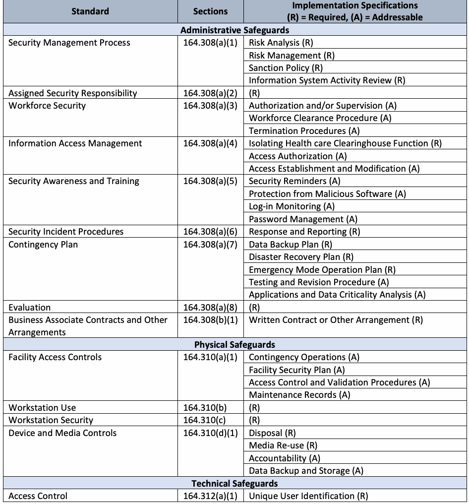
抽出したテキスト（原本と未照合・参考）
| Standard | Sections | Implementation Specifications |
| (R) = Required, (A) = Addressable | ||
| Administrative Safeguards | ||
| Security Management Process | 164.308(a)(1) | Risk Analysis (R) |
| Risk Management (R) | ||
| Sanction Policy (R) | ||
| Information System Activity Review (R) | ||
| Assigned Security Responsibility | 164.308(a)(2) | (R) |
| Workforce Security | 164.308(a)(3) | Authorization and/or Supervision (A) |
| Workforce Clearance Procedure (A) | ||
| Termination Procedures (A) | ||
| Information Access Management | 164.308(a)(4) | Isolating Health care Clearinghouse Function (R) |
| Access Authorization (A) | ||
| Access Establishment and Modification (A) | ||
| Security Awareness and Training | 164.308(a)(5) | Security Reminders (A) |
| Protection from Malicious Software (A) | ||
| Log-in Monitoring (A) | ||
| Password Management (A) | ||
| Security Incident Procedures | 164.308(a)(6) | Response and Reporting (R) |
| Contingency Plan | 164.308(a)(7) | Data Backup Plan (R) |
| Disaster Recovery Plan (R) | ||
| Emergency Mode Operation Plan (R) | ||
| Testing and Revision Procedure (A) | ||
| Applications and Data Criticality Analysis (A) | ||
| Evaluation | 164.308(a)(8) | (R) |
| Business Associate Contracts and Other Arrangements | 164.308(b)(1) | Written Contract or Other Arrangement (R) |
| Physical Safeguards | ||
| Facility Access Controls | 164.310(a)(1) | Contingency Operations (A) |
| Facility Security Plan (A) | ||
| Access Control and Validation Procedures (A) | ||
| Maintenance Records (A) | ||
| Workstation Use | 164.310(b) | (R) |
| Workstation Security | 164.310(c) | (R) |
| Device and Media Controls | 164.310(d)(1) | Disposal (R) |
| Media Re-use (R) | ||
| Accountability (A) | ||
| Data Backup and Storage (A) | ||
| Technical Safeguards | ||
| Access Control | 164.312(a)(1) | Unique User Identification (R) |
抽出したテキストの訳（原本と未照合・参考）
| 標準 | 条項 | 実装仕様 |
| （R）= 必須、（A）= 適用可能 | ||
| 管理的保護策 | ||
| セキュリティ管理プロセス | 164.308(a)(1) | リスク分析（R） |
| リスク管理（R） | ||
| 制裁方針（R） | ||
| 情報システム活動のレビュー（R） | ||
| セキュリティ責任の割り当て | 164.308(a)(2) | （R） |
| 職員のセキュリティ | 164.308(a)(3) | 認可および／または監督（A） |
| 職員の身元調査手順（A） | ||
| 退職・契約終了手順（A） | ||
| 情報アクセス管理 | 164.308(a)(4) | 医療情報交換機関機能の分離（R） |
| アクセス認可（A） | ||
| アクセスの設定および変更（A） | ||
| セキュリティ意識向上と研修 | 164.308(a)(5) | セキュリティに関する注意喚起（A） |
| 悪意あるソフトウェアからの保護（A） | ||
| ログイン監視（A） | ||
| パスワード管理（A） | ||
| セキュリティインシデント対応手順 | 164.308(a)(6) | 対応および報告（R） |
| 緊急時対応計画 | 164.308(a)(7) | データバックアップ計画（R） |
| 災害復旧計画（R） | ||
| 緊急モード運用計画（R） | ||
| テストおよび改訂手順（A） | ||
| アプリケーションおよびデータの重要度分析（A） | ||
| 評価 | 164.308(a)(8) | （R） |
| 業務提携者との契約およびその他の取り決め | 164.308(b)(1) | 書面契約またはその他の取り決め（R） |
| 物理的保護策 | ||
| 施設へのアクセス制御 | 164.310(a)(1) | 緊急時の運用（A） |
| 施設セキュリティ計画（A） | ||
| アクセス制御および検証手順（A） | ||
| 保守記録（A） | ||
| ワークステーションの使用 | 164.310(b) | （R） |
| ワークステーションのセキュリティ | 164.310(c) | （R） |
| 機器および媒体の管理 | 164.310(d)(1) | 廃棄（R） |
| 媒体の再利用（R） | ||
| 責任追跡（A） | ||
| データのバックアップおよび保管（A） | ||
| 技術的保護策 | ||
| アクセス制御 | 164.312(a)(1) | 一意のユーザー識別（R） |
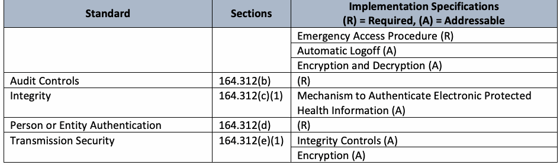
抽出したテキスト（原本と未照合・参考）
| Standard | Sections | Implementation Specifications |
| (R) = Required, (A) = Addressable | ||
| Emergency Access Procedure (R) | ||
| Automatic Logoff (A) | ||
| Encryption and Decryption (A) | ||
| Audit Controls | 164.312(b) | (R) |
| Integrity | 164.312(c)(1) | Mechanism to Authenticate Electronic Protected Health Information (A) |
| Person or Entity Authentication | 164.312(d) | (R) |
| Transmission Security | 164.312(e)(1) | Integrity Controls (A) |
| Encryption (A) |
抽出したテキストの訳（原本と未照合・参考）
| 標準 | 条項 | 実装仕様 |
| （R）= 必須、（A）= 適用可能 | ||
| 緊急時アクセス手順（R） | ||
| 自動ログオフ（A） | ||
| 暗号化および復号（A） | ||
| 監査制御 | 164.312(b) | （R） |
| 完全性 | 164.312(c)(1) | 電子的保護対象医療情報を認証する仕組み（A） |
| 個人または事業体の認証 | 164.312(d) | （R） |
| 伝送セキュリティ | 164.312(e)(1) | 完全性制御（A） |
| 暗号化（A） |
3. Risk Assessment Guidance
3. リスク評価に関する指針
Risk assessment and risk management processes are foundational to a regulated entity’s compliance with the Security Rule [Sec. Rule] and the safeguarding of ePHI. Readers are reminded of the Security Rule’s flexibility of approach. HHS OCR does not prescribe any particular risk assessment or risk management methodology. This section provides foundational information about risk assessments and an approach that regulated entities may choose to use to assess risk to ePHI. Regulated entities are free to use another risk assessment methodology16 that provides a comprehensive assessment of risk to ePHI.
リスク評価とリスク管理のプロセスは、規制対象事業体がセキュリティ規則［Security Rule］に準拠し、ePHIを保護するための基盤となる。セキュリティ規則が柔軟なアプローチを認めている点を改めて示す。HHS公民権局（OCR）は、特定のリスク評価またはリスク管理方法論を指定していない。本節では、リスク評価の基礎情報と、規制対象事業体がePHIのリスク評価に用いることを選択できるアプローチを示す。規制対象事業体は、ePHIのリスクを包括的に評価できる別のリスク評価方法論16を自由に利用できる。
未レビュー訳This section incorporates the risk assessment concepts and processes described in the NIST IR 8286 [IR 8286] series (specifically, IR 8286A [IR 8286A], Identifying and Estimating Cybersecurity Risk for Enterprise Risk Management); SP 800-30r1, Effective Use of Risk Assessments in Managing Enterprise Risk [SP 800-30]; and SP 800-37r2, Risk Management Framework for Information Systems and Organizations: A System Life Cycle Approach for Security and Privacy [SP 800-37]. It is intended to assist regulated entities in identifying risks to ePHI.
本節では、NIST IR 8286シリーズ［IR 8286］（特にIR 8286A［IR 8286A］『エンタープライズリスクマネジメントのためのサイバーセキュリティリスクの特定と推定』）、SP 800-30r1『エンタープライズリスク管理におけるリスク評価の効果的な利用』［SP 800-30］、SP 800-37r2『情報システムおよび組織のためのリスクマネジメントフレームワーク：セキュリティとプライバシーのためのシステムライフサイクルアプローチ』［SP 800-37］で説明されているリスク評価の概念とプロセスを取り入れる。本節は、規制対象事業体がePHIに対するリスクを特定できるよう支援することを目的とする。
The purpose of a risk assessment is to identify conditions where ePHI could be used or disclosed without proper authorization, improperly modified, or made unavailable when needed. The results of the risk assessment are used to make risk management decisions on the implementation of security measures required by the Security Rule to bring risk to ePHI into an organizationally established risk tolerance range (i.e., reasonable and appropriate level) or if additional security controls are necessary.
リスク評価の目的は、ePHIが適切な認可なしに使用または開示される、不適切に改変される、または必要なときに利用できなくなる可能性がある状況を特定することである。リスク評価の結果は、ePHIに対するリスクを組織が定めたリスク許容範囲（すなわち、合理的かつ適切な水準）まで低減するために、セキュリティ規則が求めるセキュリティ対策の実装に関するリスク管理上の判断や、追加のセキュリティ管理策が必要かどうかの判断に用いる。
Key Terms Defined
定義する主要用語
When talking about risk, it is important that terminology be clearly understood. This subsection defines important terms associated with risk assessment and risk management.
リスクについて論じる際は、用語を明確に理解することが重要である。本小節では、リスク評価とリスク管理に関連する主要用語を定義する。
•Threat events are circumstances or events that can have a negative impact on ePHI. Threat events can be:
•脅威事象とは、ePHIに悪影響を及ぼし得る状況または事象である。脅威事象には次のものがある。
Intentional (e.g., malicious intent) o Unintentional (e.g., misconfigured server, data entry error) o
意図的なもの（例：悪意のある意図）、または意図しないもの（例：サーバーの設定ミス、データ入力エラー）。
未レビュー訳•Threat sources refer to the intent and method targeted at causing harm to ePHI. Threat sources can be:
•脅威源とは、ePHIに損害を与えることを狙う意図と手段を指す。脅威源には次のものがある。
未レビュー訳Natural (e.g., floods, earthquakes, storms, tornados) o Human (e.g., intentional, such as identity thieves, hackers, spyware authors; o unintentional, such as data entry error, accidental deletions)
自然現象（例：洪水、地震、嵐、竜巻）、または人為的なもの（例：意図的なものとして個人情報窃盗犯、ハッカー、スパイウェア作成者、意図しないものとしてデータ入力ミス、誤削除）。
未レビュー訳Environmental (e.g., power surges and spikes, hazardous material o contamination, environmental pollution)
環境要因（例：電圧サージやスパイク、有害物質による汚染、環境汚染）。
未レビュー訳•Vulnerabilities are flaws or weaknesses in a system, system security procedures, internal controls, or implementation that could be exploited or triggered by a threat event.
•脆弱性とは、脅威事象によって悪用または引き起こされる可能性がある、システム、システムのセキュリティ手順、内部統制、または実装における欠陥や弱点である。
未レビュー訳•Likelihood refers to the probability that a given threat event is capable of exploiting a given vulnerability to cause harm.
•発生可能性とは、特定の脅威事象が特定の脆弱性を悪用して損害を引き起こす能力を持つ確率を指す。
•Impact refers to the magnitude of harm that can be expected to result from the loss of confidentiality, integrity, and/or the availability of ePHI.
•影響とは、ePHIの機密性、完全性、または可用性が失われた結果として想定される損害の大きさを指す。
•Risk refers to the extent to which an entity is threatened by a potential circumstance or event. Risk is typically a function of the likelihood and impact calculations.
•リスクとは、潜在的な状況または事象によって事業体が脅威にさらされる程度を指す。通常、リスクは発生可能性と影響の計算値に基づく。
It can be easy to confuse some of these terms. For example, an organization may determine that it is vulnerable to damage from power surges. The threat sources that could exploit this vulnerability may include overloaded circuits or too much load on the local grid. Other threat sources (e.g., a data entry error) may be unable to exploit this vulnerability. In this example scenario, recommended security controls could range from installing uninterruptible power supply (UPS) systems, additional fuse boxes, and standby generators to rewiring the office. These additional security controls may help to mitigate the vulnerability.
これらの用語は混同しやすい。例えば、組織が電圧サージによる損害に対して脆弱だと判断したとする。この脆弱性を悪用し得る脅威源には、過負荷の回路や地域の電力網への過大な負荷がある。一方、データ入力ミスなどの脅威源では、この脆弱性を悪用できない場合がある。この例で推奨されるセキュリティ管理策には、無停電電源装置（UPS）、追加のヒューズボックス、予備発電機の設置から、オフィスの配線変更までが考えられる。これらの追加管理策は、脆弱性の緩和に役立つ場合がある。
3.1. HIPAA Risk Assessment Requirements
3.1. HIPAAリスク評価要件
Standard 164.308(a)(1)(i), Security Management Process, requires regulated entities to:
基準164.308(a)(1)(i)「セキュリティ管理プロセス」は、規制対象事業体に次の事項を求める。
Implement policies and procedures to prevent, detect, contain, and correct security violations.
セキュリティ違反を防止、検知、封じ込め、是正するための方針および手順を実装する。
The Security Management Process standard includes four required implementation specifications. Two of these specifications deal directly with risk analysis17 and risk management:
セキュリティ管理プロセス標準には、必須の実装仕様が4つ含まれる。そのうち2つは、リスク分析17およびリスク管理に直接関係する。
未レビュー訳1.Risk Analysis (R18) — 164.308(a)(1)(ii)(A): Conduct an accurate and thorough assessment of the potential risks and vulnerabilities to the confidentiality, integrity, and availability of electronic protected health information held by the covered entity or business associate.
1.リスク分析（必須）18 — 164.308(a)(1)(ii)(A)：対象事業体または業務提携者が保有する電子的保護対象医療情報の機密性、完全性、可用性に対する潜在的なリスクと脆弱性を、正確かつ徹底的に評価する。
未レビュー訳2.Risk Management (R) — 164.308(a)(1)(ii)(B): Implement security measures sufficient to reduce risks and vulnerabilities to a reasonable and appropriate level to comply with Section 164.306(a).
2.リスク管理（R）— 164.308(a)(1)(ii)(B)：第164.306(a)条に準拠するため、リスクと脆弱性を合理的かつ適切な水準まで低減するのに十分なセキュリティ対策を実装する。
Section 3.2 provides a risk assessment methodology that regulated entities may choose to utilize in accordance with 164.308(a)(1)(ii)(A). Section 4 provides risk management best practices.
第3.2節では、規制対象事業体が164.308(a)(1)(ii)(A)に従って選択・利用できるリスク評価方法論を示す。第4節ではリスク管理のベストプラクティスを示す。
3.2. How to Conduct the Risk Assessment
3.2. リスク評価の実施方法
Risk assessments can be conducted using many different methodologies. There is no single methodology that will work for all regulated entities and all situations. The following steps represent key elements in a comprehensive risk assessment process and provide an example of the risk assessment methodology described in [IR 8286A] and [SP 800-30]. These steps should be customized to effectively identify risk for a regulated entity. The steps listed are not prescriptive in the order that they should be conducted. Some steps could be conducted simultaneously rather than sequentially.
リスク評価にはさまざまな方法論を利用できる。すべての規制対象事業体と状況に有効な単一の方法論はない。次の手順は包括的なリスク評価プロセスの主要要素を示し、［IR 8286A］および［SP 800-30］に記載された方法論の例となる。規制対象事業体のリスクを効果的に特定できるよう、これらの手順を組織に合わせて調整するとよい。手順の順序は規定されていない。順番に行うのではなく、複数の手順を同時に実施できる場合もある。
1.Prepare for the assessment. Before beginning the risk assessment, the regulated entity should understand where ePHI is created, received, maintained, processed, and transmitted. Identify where ePHI is generated within the organization, where and how it enters the organization (e.g., web portals), where it moves and flows within the organization (e.g., to specific information systems), where it is stored, and where it leaves the organization. Determine whether ePHI is transmitted to external third parties, such as cloud service providers19 or other service providers. The regulated entity can also note how access to ePHI is controlled and whether ePHI is encrypted in storage and in transit.
1.評価の準備をする。リスク評価を始める前に、規制対象事業体はePHIがどこで作成、受領、保有、処理、送信されるかを把握するとよい。組織内のどこでePHIが生成されるか、どこからどのように組織へ入るか（例：ウェブポータル）、組織内をどこへどのように流れるか（例：特定の情報システム）、どこに保存され、どこから組織外へ出るかを特定する。クラウドサービスプロバイダー19などの外部第三者やその他のサービスプロバイダーにePHIを送信するかどうかも判断する。ePHIへのアクセス制御方法や、保存時および転送時にePHIが暗号化されているかを記録してもよい。
未レビュー訳The scope of a risk assessment should include both the physical boundaries of a regulated entity’s location and a logical boundary that covers any devices or media that contain ePHI, including electronic networks through which ePHI is transmitted, regardless of its location. Ensure that the risk assessment scope considers teleworkers and any remote workforce, including external service providers who may have remote access to ePHI. The scope should include all removable media and portable computing devices (e.g., laptops, mobile devices) as well as the myriad of medical devices (e.g., Internet of Things [IoT] used in healthcare) that can store, process, or transmit ePHI. Modern mobile devices and installed apps may not only contain ePHI but may also pose a greater risk to ePHI due to theft or loss. In many ways, the risk assessment process will consider risks to ePHI as it enters the organization, flows within the organization, and leaves the organization.20 Additionally, the regulated entity should consider identifying the security controls currently being used to protect ePHI.
リスク評価の範囲には、規制対象事業体の拠点の物理的境界と、所在地を問わずePHIを含む機器や媒体を対象とする論理的境界の両方を含めるとよい。この範囲には、ePHIが送信される電子ネットワークも含める。テレワーカーや遠隔勤務者、ePHIへのリモートアクセスが可能な外部サービスプロバイダーを含め、リスク評価の範囲を検討する。すべての可搬型媒体と携帯型コンピューティング機器（例：ノートPC、モバイル機器）に加え、ePHIを保存、処理、または送信できる多様な医療機器（例：医療分野で利用されるモノのインターネット［IoT］機器）も対象とする。最新のモバイル機器やインストール済みアプリにはePHIが含まれるだけでなく、盗難や紛失によってePHIへのリスクが高まる可能性もある。リスク評価では多くの場合、ePHIが組織に入り、組織内を流れ、組織外へ出る各段階のリスクを考慮する。20 さらに、ePHIを保護するために現在利用されているセキュリティ管理策を特定することも検討するとよい。
未レビュー訳This preparation step is essential to ensuring that vulnerabilities and threats are correctly identified in the risk assessment process. For example, if the regulated entity does not fully identify all parties or systems to which ePHI is transmitted, it may not be possible to completely identify all relevant threats and vulnerabilities. The level of effort needed to gather the necessary information depends heavily on the scope of the assessment and the size and complexity of the regulated entity. Regulated entities may benefit from completing a business impact analysis (BIA) to evaluate, record, and monitor the criticality of organizational assets, including ePHI. The BIA can help inform the determination of organizational risk tolerance levels, which is valuable for the risk management processes discussed in Sec. 4. Additionally, a completed BIA facilitates the completion of Step 5, “Determine the Impact of a Threat Exploiting a Vulnerability,” in this proposed risk assessment process.
この準備段階は、リスク評価プロセスで脆弱性と脅威を正しく特定するために不可欠である。例えば、規制対象事業体がePHIの送信先となるすべての当事者やシステムを十分に特定していなければ、関連する脅威と脆弱性をすべて特定できない可能性がある。必要な情報の収集にかかる作業量は、評価の範囲、規制対象事業体の規模と複雑さに大きく左右される。規制対象事業体は、ePHIを含む組織資産の重要度を評価、記録、監視するため、事業影響分析（BIA）を完了するとよい。BIAは組織のリスク許容水準の決定に役立つ情報を与えるため、第4節で論じるリスク管理プロセスにも有用である。また、BIAを完了すると、この提案するリスク評価プロセスのステップ5「脆弱性を悪用する脅威の影響を判断する」を実施しやすくなる。
2.Identify reasonably anticipated threats. The regulated entity identifies the potential threat events and threat sources that are applicable to it and its operating environment. The list of threat events and threat sources should include reasonably anticipated and probable human and natural incidents that can negatively impact the regulated entity’s ability to protect ePHI. Use the information gathered from Step 1 (i.e., the preparation step) to identify reasonably anticipated threats to ePHI. Be sure to consider threats to the confidentiality, integrity, and availability of ePHI via phishing, ransomware, or insider threat.
2.合理的に予見される脅威を特定する。規制対象事業体は、自らおよびその運用環境に該当する潜在的な脅威事象と脅威源を特定する。脅威事象と脅威源の一覧には、ePHIを保護する規制対象事業体の能力に悪影響を及ぼし得る、人為的または自然発生的な事象のうち、合理的に予見され発生可能性の高いものを含めるとよい。ステップ1（評価の準備）で収集した情報を用いて、ePHIに対する合理的に予見される脅威を特定する。フィッシング、ランサムウェア、内部脅威を介したePHIの機密性、完全性、可用性への脅威を必ず検討する。
Regulated entities may use various sources21 when identifying relevant threats. Some of the resources listed in Appendix F may help regulated entities identify common threats to small, medium, and large organizations. Internet searches, vendor information, insurance data, and crime statistics are also viable sources of threat data. Regulated entities may benefit from participating in an information sharing and analysis center (ISAC) or information sharing and analysis organization (ISAO22) to receive threat intelligence. Ultimately, regulated entities should identify all reasonably anticipated threats to ePHI. Examples of some common threat sources are listed in Table 2. Regulated entities can also use Tables 30–32 in Appendix C as resources for identifying relevant threat events and threat sources.
規制対象事業体は、関連する脅威の特定にさまざまな情報源21を利用できる。付録Fのリソースの一部は、小規模、中規模、大規模の組織に共通する脅威の特定に役立つ場合がある。インターネット検索、ベンダー情報、保険データ、犯罪統計も、脅威データの情報源として有効である。脅威インテリジェンスを入手するため、規制対象事業体は情報共有分析センター（ISAC）または情報共有分析組織（ISAO22）に参加するとよい。最終的に、規制対象事業体はePHIに対する合理的に予見される脅威をすべて特定するとよい。一般的な脅威源の例を表2に示す。関連する脅威事象と脅威源の特定には、付録Cの表30～32も利用できる。
未レビュー訳Table 2. Common threat sources
表2. 一般的な脅威源
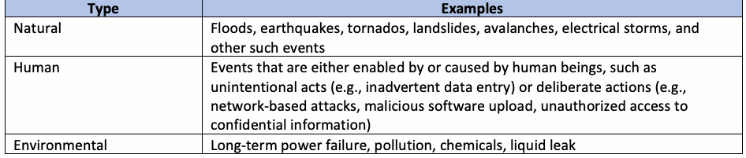
抽出したテキスト（原本と未照合・参考）
| Type | Examples |
| Natural | Floods, earthquakes, tornados, landslides, avalanches, electrical storms, and other such events |
| Human | Events that are either enabled by or caused by human beings, such as unintentional acts (e.g., inadvertent data entry) or deliberate actions (e.g., network-based attacks, malicious software upload, unauthorized access to confidential information) |
| Environmental | Long-term power failure, pollution, chemicals, liquid leak |
抽出したテキストの訳（原本と未照合・参考）
| 種類 | 例 |
| 自然現象 | 洪水、地震、竜巻、地滑り、雪崩、雷雨などの事象 |
| 人為的事象 | 人によって引き起こされる、または助長される事象。意図しない行為（例：誤ったデータ入力）と意図的な行為（例：ネットワーク攻撃、悪意あるソフトウェアのアップロード、機密情報への不正アクセス）の両方がある。 |
| 環境要因 | 長時間の停電、汚染、化学物質、液体の漏えい |
3. Identify potential vulnerabilities and predisposing conditions. For any of the various
3. 潜在的な脆弱性と素因となる条件を特定する。
未レビュー訳threats identified above to result in an impactful risk, each needs a vulnerability or predisposing condition that can be exploited. A vulnerability is a weakness in an information system, system security procedures, internal controls, or implementation that could be exploited by a threat source. A predisposing condition23 is a condition that exists within an organization, a mission/business process, or information system that contributes to (i.e., increases or decreases) the likelihood that a threat event will result in adverse impacts once initiated. The identification of vulnerabilities or predisposing conditions that a threat could exploit to cause an impact is an important component of risk assessment. While it is necessary to review threats and vulnerabilities as unique elements, they are often considered at the same time. Many organizations will consider a given loss scenario and evaluate both, such as what threat sources might initiate which threat events or what vulnerabilities or predisposing conditions those threat sources might exploit to cause an adverse impact.
上記の脅威が重大な影響を伴うリスクにつながるには、それぞれに悪用可能な脆弱性または素因となる条件が必要である。脆弱性とは、脅威源によって悪用される可能性のある、情報システム、システムのセキュリティ手順、内部統制、または実装における弱点である。素因となる条件23とは、組織、使命・事業プロセス、または情報システム内に存在し、脅威事象が発生した場合に好ましくない影響が生じる可能性を高める、または低める条件である。脅威が悪用して影響を生じさせる可能性のある脆弱性や素因となる条件を特定することは、リスク評価の重要な要素である。脅威と脆弱性は個別の要素として確認する必要がある一方、多くの場合、同時に検討される。多くの組織では、特定の損失シナリオを想定して両方を評価する。例えば、どの脅威源がどの脅威事象を引き起こすか、または脅威源がどの脆弱性や素因となる条件を悪用して好ましくない影響を生じさせるかを検討する。
未レビュー訳The regulated entity develops a list of vulnerabilities (i.e., flaws or weaknesses) that could be exploited by potential threat sources. This list should focus on both technical and non-technical areas where ePHI can be disclosed without proper authorization, improperly modified, or made unavailable when needed. Regulated entities should use internal and external sources to identify potential vulnerabilities. Internal sources may include previous risk assessments, vulnerability scan and system security test results (e.g., penetration tests), and audit reports. External sources may include internet searches, vendor information, insurance data, and vulnerability databases, such as the National Vulnerability Database [NIST NVD]. Appendix F provides a suggested (but not all-inclusive) resource list that organizations may wish to use in vulnerability identification.
規制対象事業体は、潜在的な脅威源によって悪用される可能性のある脆弱性（すなわち、欠陥や弱点）の一覧を作成する。この一覧では、ePHIが適切な認可なしに開示される、不適切に改変される、または必要なときに利用できなくなる技術面と非技術面の両方に焦点を当てるとよい。潜在的な脆弱性を特定するため、規制対象事業体は内部および外部の情報源を利用するとよい。内部情報源には、過去のリスク評価、脆弱性スキャンやシステムセキュリティテスト（例：侵入テスト）の結果、監査報告書がある。外部情報源には、インターネット検索、ベンダー情報、保険データ、NIST脆弱性データベース［NIST NVD］などの脆弱性データベースがある。付録Fには、組織が脆弱性の特定に利用できる推奨リソース一覧を掲載する（網羅的な一覧ではない）。
4. Determine the likelihood that a threat will exploit a vulnerability. The regulated entity
4. 脅威が脆弱性を悪用する発生可能性を判断する。
未レビュー訳determines the likelihood of a threat successfully exploiting a vulnerability. For each threat event/threat source identified in Step 2, consider:
規制対象事業体は、ステップ2で特定した各脅威事象／脅威源について、次の点を考慮して、脅威が脆弱性を悪用する発生可能性を判断する。
未レビュー訳•The likelihood that the threat will occur
•脅威が発生する可能性
•The likelihood that an occurred threat would exploit a vulnerability identified in Step 3 and result in an adverse impact
•発生した脅威がステップ3で特定した脆弱性を悪用し、好ましくない影響をもたらす可能性
A regulated entity might consider assigning a likelihood value (e.g., very low, low, moderate, high, or very high) to each threat/vulnerability pairing, as shown in Table 3. Regulated entities should feel free to use a different likelihood scale based on organizational needs.
規制対象事業体は、表3に示すように、各脅威／脆弱性の組み合わせに発生可能性の値（例：非常に低い、低い、中程度、高い、非常に高い）を割り当ててもよい。規制対象事業体は、組織のニーズに基づき、別の発生可能性尺度を自由に利用できる。
For example, a regulated entity may determine that the likelihood of a tornado occurring is “Low” (located along the leftmost column of Table 3) but that if it did occur, the tornado would have a “Moderate” likelihood (located along the top of Table 3) of exploiting a weakness in the facility’s physical structure and resulting in an adverse impact. Using Table 3, the regulated entity locates the intersection of the two individual likelihood values to assign an overall likelihood of “Low” to this threat/vulnerability pairing. As another example, the regulated entity may determine that the likelihood of a phishing attack occurring is “Very High” and that the likelihood of the event exploiting a human vulnerability is “Moderate,” resulting in an overall likelihood rating of “High.”
例えば、規制対象事業体は、竜巻の発生可能性を「低い」（表3の最左列）と判断する一方、竜巻が発生した場合に施設の物理構造上の弱点を悪用して好ましくない影響をもたらす可能性は「中程度」（表3の最上行）と判断する場合がある。表3では、2つの個別の発生可能性の交点から、当該脅威／脆弱性の組み合わせ全体の発生可能性を「低い」と判断できる。別の例では、フィッシング攻撃の発生可能性を「非常に高い」とし、その事象が人為的な脆弱性を悪用する可能性を「中程度」と判断した結果、全体の評価を「高い」とする場合がある。
Table 3. Assessment scale for overall likelihood
表3. 全体的な発生可能性の評価尺度
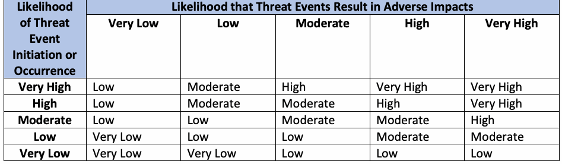
抽出したテキスト（原本と未照合・参考）
| Likelihood | Likelihood that Threat Events Result in Adverse Impacts | ||||
| of Threat | Very Low | Low | Moderate | High | Very High |
| Event | |||||
| Initiation or | |||||
| Occurrence | |||||
| Very High | Low | Moderate | High | Very High | Very High |
| High | Low | Moderate | Moderate | High | Very High |
| Moderate | Low | Low | Moderate | Moderate | High |
| Low | Very Low | Low | Low | Moderate | Moderate |
| Very Low | Very Low | Very Low | Low | Low | Low |
抽出したテキストの訳（原本と未照合・参考）
| 発生可能性 | 脅威事象が好ましくない影響をもたらす発生可能性 | ||||
| 脅威の | 非常に低い | 低い | 中程度 | 高い | 非常に高い |
| 事象の | |||||
| 開始または | |||||
| 発生 | |||||
| 非常に高い | 低い | 中程度 | 高い | 非常に高い | 非常に高い |
| 高い | 低い | 中程度 | 中程度 | 高い | 非常に高い |
| 中程度 | 低い | 低い | 中程度 | 中程度 | 高い |
| 低い | 非常に低い | 低い | 低い | 中程度 | 中程度 |
| 非常に低い | 非常に低い | 非常に低い | 低い | 低い | 低い |
The regulated entity could perform this likelihood assessment for each threat/vulnerability pairing. Consider that some threat events — regardless of their likelihood of occurrence — may have no vulnerability to exploit, resulting in a likelihood rating of “Very Low” or even “N/A.” Conversely, some identified vulnerabilities may have no identified threat event that could exploit the vulnerability, also possibly resulting in a likelihood rating of “N/A.”
規制対象事業体は、各脅威／脆弱性の組み合わせについて、この発生可能性評価を実施できる。発生可能性の高低にかかわらず、悪用できる脆弱性がない脅威事象もあり、その場合、発生可能性は「非常に低い」または「該当なし」となることを考慮する。反対に、特定された脆弱性を悪用し得る脅威事象が特定されていない場合もあり、発生可能性は「該当なし」となることがある。
5. Determine the impact of a threat exploiting a vulnerability. The regulated entity
5. 脅威が脆弱性を悪用した場合の影響を判断する。
未レビュー訳determines the impact that could occur to ePHI if a threat event were to exploit a vulnerability. As with likelihood determination, a regulated entity may choose to express this impact in qualitative terms (e.g., “low,” “moderate,” and “high”) or use any other scale that the entity chooses. When selecting an impact rating, the regulated entity may consider how the threat event can affect the loss or degradation of the confidentiality, integrity, and/or availability of ePHI. Table 4 provides a brief description of each security objective (i.e., confidentiality, integrity, and availability) and the impact of it not being met. The regulated entity should select an impact rating for each identified threat/vulnerability pair.
規制対象事業体は、脅威事象が脆弱性を悪用した場合にePHIに生じ得る影響を判断する。発生可能性と同様に、影響を「低い」「中程度」「高い」などの定性的な用語で表すか、事業体が選択する別の尺度を用いることができる。影響評価を選定する際は、脅威事象がePHIの機密性、完全性、または可用性の喪失や低下にどのような影響を及ぼすかを考慮できる。表4では、各セキュリティ目標（機密性、完全性、可用性）の簡単な説明と、それが満たされない場合の影響を示す。規制対象事業体は、特定した脅威／脆弱性の組み合わせごとに影響評価を選定するとよい。
未レビュー訳Table 4. Security objectives and impacts
表4. セキュリティ目標と影響
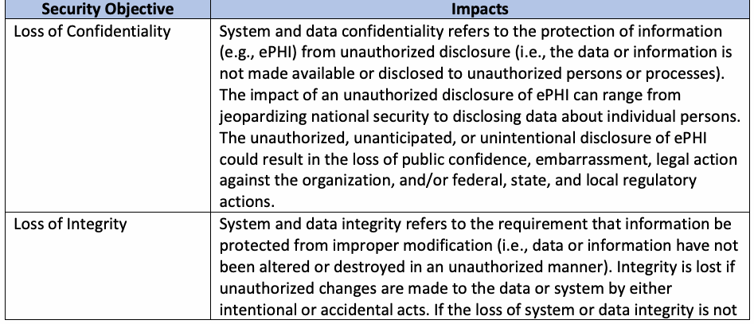
抽出したテキスト（原本と未照合・参考）
| Security Objective | Impacts |
| Loss of Confidentiality | System and data confidentiality refers to the protection of information (e.g., ePHI) from unauthorized disclosure (i.e., the data or information is not made available or disclosed to unauthorized persons or processes). The impact of an unauthorized disclosure of ePHI can range from jeopardizing national security to disclosing data about individual persons. The unauthorized, unanticipated, or unintentional disclosure of ePHI could result in the loss of public confidence, embarrassment, legal action against the organization, and/or federal, state, and local regulatory actions. |
| Loss of Integrity | System and data integrity refers to the requirement that information be protected from improper modification (i.e., data or information have not been altered or destroyed in an unauthorized manner). Integrity is lost if unauthorized changes are made to the data or system by either intentional or accidental acts. If the loss of system or data integrity is not |
抽出したテキストの訳（原本と未照合・参考）
| セキュリティ目標 | 影響 |
| 機密性の喪失 | システムとデータの機密性とは、情報（例：ePHI）を不正開示から保護することを指す（すなわち、データまたは情報を権限のない人やプロセスに利用可能とせず、開示しないこと）。ePHIの不正開示による影響は、国家安全保障を脅かすことから、個人に関するデータを漏えいすることまで及び得る。ePHIの不正、予期しない、または意図しない開示は、社会的信頼の喪失、当惑、組織に対する法的措置、連邦・州・地方の規制当局による措置につながる可能性がある。 |
| 完全性の喪失 | システムとデータの完全性とは、情報を不適切な改変から保護する要件を指す（すなわち、データまたは情報が権限のない方法で改変または破壊されていないこと）。意図的または偶発的な行為によってデータまたはシステムに不正な変更が加えられると、完全性が失われる。システムまたはデータの完全性の喪失が |
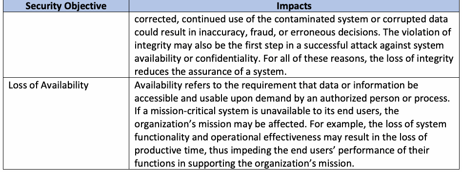
抽出したテキスト（原本と未照合・参考）
| Security Objective | Impacts |
| corrected, continued use of the contaminated system or corrupted data could result in inaccuracy, fraud, or erroneous decisions. The violation of integrity may also be the first step in a successful attack against system availability or confidentiality. For all of these reasons, the loss of integrity reduces the assurance of a system. | |
| Loss of Availability | Availability refers to the requirement that data or information be accessible and usable upon demand by an authorized person or process. If a mission-critical system is unavailable to its end users, the organization’s mission may be affected. For example, the loss of system functionality and operational effectiveness may result in the loss of productive time, thus impeding the end users’ performance of their functions in supporting the organization’s mission. |
抽出したテキストの訳（原本と未照合・参考）
| セキュリティ目標 | 影響 |
| 是正されなければ、汚染されたシステムや破損したデータを使い続けることで、不正確さ、詐欺、誤った判断が生じる可能性がある。完全性の侵害は、システムの可用性または機密性を狙う攻撃の最初の段階となる場合もある。こうした理由から、完全性の喪失はシステムの信頼性を低下させる。 | |
| 可用性の喪失 | 可用性とは、認可された人またはプロセスが要求したときに、データまたは情報へアクセスして利用できるという要件を指す。任務上重要なシステムをエンドユーザーが利用できない場合、組織の使命に影響が及ぶことがある。例えば、システム機能と運用上の有効性が失われると、生産的な時間が失われ、組織の使命を支援するエンドユーザーの職務遂行が妨げられる可能性がある。 |
Impact information can sometimes be obtained from existing organizational documentation, such as business impact and asset criticality assessments. A business impact assessment prioritizes the impact levels associated with the compromise of an organization’s information assets based on a qualitative or quantitative assessment of the sensitivity and criticality of those assets. An asset criticality assessment identifies and prioritizes the organization information assets (e.g., hardware, software, systems, services, and related technology assets) that support the organization’s critical missions.
影響に関する情報は、事業影響評価や資産重要度評価など、組織の既存文書から得られる場合がある。事業影響評価では、情報資産の機微性と重要度を定性的または定量的に評価し、情報資産の侵害に伴う影響度の優先順位を付ける。資産重要度評価では、組織の重要な使命を支える情報資産（例：ハードウェア、ソフトウェア、システム、サービス、関連技術資産）を特定し、優先順位を付ける。
Some tangible impacts can be measured quantitatively in terms of lost revenue, the cost of repairing the system, or the level of effort required to correct problems caused by a successful threat action. Other impacts cannot be measured in specific units (e.g., the loss of public confidence, the loss of credibility, or damage to an organization’s interests) but can be qualitatively described (e.g., in terms of “high,” “moderate,” and “low” impacts). Qualitative and quantitative methods can both be used to determine the impact of a threat event exploiting a vulnerability to cause an adverse impact. Regulated entities may consult Table 5 for help with identifying potential adverse impacts and subsequently assigning an impact rating to each threat/vulnerability pair.
具体的な影響の中には、逸失収益、システム修復費用、脅威行為が成功したことによる問題の是正に必要な作業量など、定量的に測定できるものがある。社会的信頼や信用の喪失、組織の利益への損害など、特定の単位で測定できない影響も、「高い」「中程度」「低い」などの区分を用いて定性的に説明できる。脆弱性を悪用する脅威事象が好ましくない影響をもたらす場合の影響度を判断するには、定性的手法と定量的手法の両方を利用できる。潜在的な好ましくない影響を特定し、続いて各脅威／脆弱性の組み合わせに影響度を割り当てる際は、表5が役立つ場合がある。
Table 5. Examples of adverse impacts
表5. 好ましくない影響の例
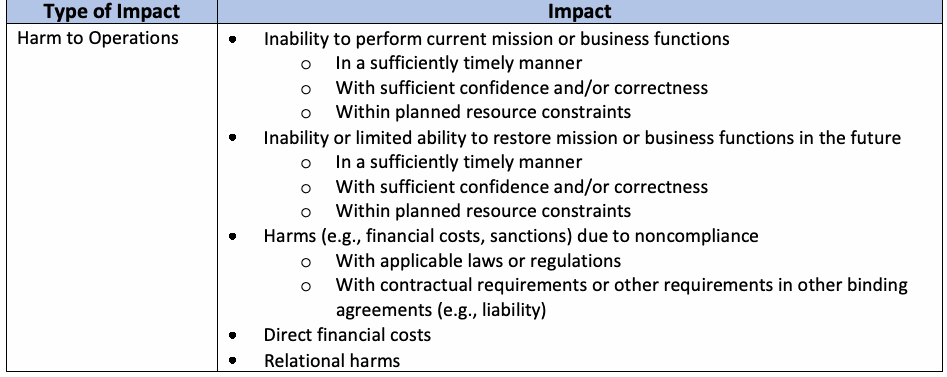
抽出したテキスト（原本と未照合・参考）
Type of Impact Impact Harm to Operations • Inability to perform current mission or business functions In a sufficiently timely manner o With sufficient confidence and/or correctness o Within planned resource constraints o • Inability or limited ability to restore mission or business functions in the future In a sufficiently timely manner o With sufficient confidence and/or correctness o Within planned resource constraints o • Harms (e.g., financial costs, sanctions) due to noncompliance With applicable laws or regulations o With contractual requirements or other requirements in other binding o agreements (e.g., liability) • Direct financial costs • Relational harms抽出したテキストの訳（原本と未照合・参考）
影響の種類：運用への損害。影響：• 現在の使命または業務機能を十分な適時性、確信・正確さをもって、計画した資源の制約内で遂行できない。• 将来、使命または業務機能を同じ条件で復旧できない、または復旧能力が限られる。• 適用される法律・規制、契約要件、その他の拘束力のある合意（例：責任）を遵守しないことによる損害（例：金銭的損失、制裁）。• 直接的な金銭的損失。• 関係性への損害。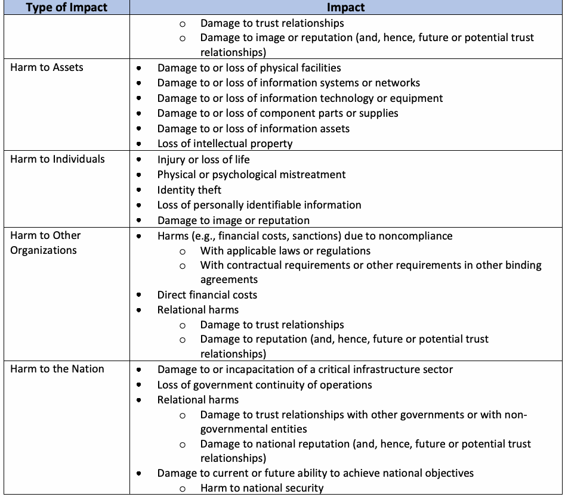
抽出したテキスト（原本と未照合・参考）
| Type of Impact | Impact |
| Damage to trust relationships o | |
| Damage to image or reputation (and, hence, future or potential trust o | |
| relationships) | |
| Harm to Assets | • Damage to or loss of physical facilities |
| • Damage to or loss of information systems or networks | |
| • Damage to or loss of information technology or equipment | |
| • Damage to or loss of component parts or supplies | |
| • Damage to or loss of information assets | |
| • Loss of intellectual property | |
| Harm to Individuals | • Injury or loss of life |
| • Physical or psychological mistreatment | |
| • Identity theft | |
| • Loss of personally identifiable information | |
| • Damage to image or reputation | |
| Harm to Other Organizations | • Harms (e.g., financial costs, sanctions) due to noncompliance |
| With applicable laws or regulations o | |
| With contractual requirements or other requirements in other binding o | |
| agreements | |
| • Direct financial costs | |
| • Relational harms | |
| Damage to trust relationships o | |
| Damage to reputation (and, hence, future or potential trust o | |
| relationships) | |
| Harm to the Nation | • Damage to or incapacitation of a critical infrastructure sector |
| • Loss of government continuity of operations | |
| • Relational harms | |
| Damage to trust relationships with other governments or with non- o | |
| governmental entities | |
| Damage to national reputation (and, hence, future or potential trust o | |
| relationships) | |
| • Damage to current or future ability to achieve national objectives | |
| Harm to national security o |
抽出したテキストの訳（原本と未照合・参考）
| 影響の種類 | 影響 |
| 信頼関係の損傷 | |
| イメージまたは評判の損傷（ひいては将来または潜在的な信頼 | |
| 関係への影響） | |
| 資産への損害 | • 物理的施設の損傷または喪失 |
| • 情報システムまたはネットワークの損傷または喪失 | |
| • 情報技術または機器の損傷または喪失 | |
| • 部品または備品の損傷または喪失 | |
| • 情報資産の損傷または喪失 | |
| • 知的財産の喪失 | |
| 個人への損害 | • 負傷または人命の喪失 |
| • 身体的または心理的な虐待 | |
| • 個人情報の盗用 | |
| • 個人識別可能情報の喪失 | |
| • イメージまたは評判の損傷 | |
| 他組織への損害 | • 不遵守による損害（例：金銭的損失、制裁） |
| 適用される法律または規制に関するもの | |
| 契約要件、またはその他の拘束力のある合意の要件に関するもの | |
| • 直接的な金銭的損失 | |
| • 関係性への損害 | |
| 信頼関係の損傷 | |
| 評判の損傷（ひいては将来または潜在的な信頼 | |
| 関係への影響） | |
| 国家への損害 | • 重要インフラ部門の損傷または機能停止 |
| • 政府の業務継続性の喪失 | |
| • 関係性への損害 | |
| 他国政府または非政府 | |
| 主体との信頼関係の損傷 | |
| 国家の評判の損傷（ひいては将来または潜在的な信頼 | |
| 関係への影響） | |
| • 国家目標を達成する現在または将来の能力への損害 | |
| 国家安全保障への損害 |
抽出したテキストの訳（原本と未照合・参考）
他組織への損害抽出したテキストの訳（原本と未照合・参考）
国家への損害6.Determine the level of risk. The regulated entity assesses the level of risk to ePHI while considering the information gathered and determinations made during the previous steps. The level of risk is determined by analyzing the values assigned to the overall likelihood of threat occurrence (i.e., Step 4) and the resulting impact of threat occurrence (i.e., Step 5). Table 6 and Table 7 show examples of risk-level matrices that can assist in determining risk levels for each threat event/vulnerability pair. Regulated entities can use a different risk matrix that aligns with the ratings scales used for likelihood and impact in Steps 4 and 5.
6.リスクレベルを判断する。規制対象事業体は、これまでの手順で収集した情報と判断を考慮して、ePHIに対するリスクレベルを評価する。リスクレベルは、脅威の全体的な発生可能性（すなわちステップ4）と、その脅威が発生した場合の影響（すなわちステップ5）に割り当てた値を分析して判断する。表6と表7は、各脅威事象／脆弱性の組み合わせのリスクレベル判断に役立つ行列の例を示す。規制対象事業体は、ステップ4および5で使用した発生可能性・影響度の評価尺度に合う別のリスク行列を使用できる。
Table 6. Sample risk-level matrix
表6. リスクレベル行列の例
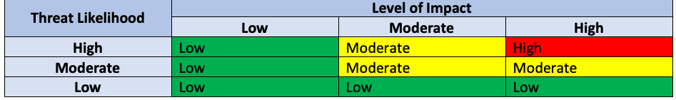
抽出したテキスト（原本と未照合・参考）
| Threat Likelihood | Level of Impact |
| Low | Moderate / High |
| High / Low | Moderate / High |
| Moderate / Low | Moderate / Moderate |
| Low / Low | Low / Low |
抽出したテキストの訳（原本と未照合・参考）
| 脅威の発生可能性 | 影響度 |
| 低い | 中程度／高い |
| 高い／低い | 中程度／高い |
| 中程度／低い | 中程度／中程度 |
| 低い／低い | 低い／低い |
Table 7. Detailed risk-level matrix
表7. 詳細なリスクレベル行列
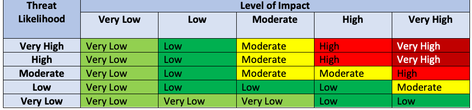
抽出したテキスト（原本と未照合・参考）
Threat Level of Impact Likelihood Very Low Low Moderate High Very High Very High Very Low Low Moderate High Very High High Very Low Low Moderate High Very High Moderate Very Low Low Moderate Moderate High Low Very Low Low Low Low Moderate Very Low Very Low Very Low Very Low Low Low抽出したテキストの訳（原本と未照合・参考）
脅威の発生可能性 × 影響度（低い／中程度／高い）：高い → 低い／中程度／高い；中程度 → 低い／中程度／中程度；低い → 低い／低い／低い。To clarify the use of the risk matrix, consider the examples presented in Step 4. For the tornado threat event, the overall likelihood was assigned a rating of “Low.” However, the impact of this threat event could easily be assigned a rating of “High.” Using the matrix in Table 6, the intersection of “Low” likelihood and “High” impact results in an overall risk rating of “Low.” For the phishing threat example, the overall likelihood was rated “High.” If the regulated entity determined that the impact of a phishing threat was likely to be “Moderate,” this would result in an overall risk rating of “Moderate.” The regulated entity should determine the level of risk for each identified threat/vulnerability pair.
リスク行列の使い方を明確にするため、ステップ4の例を考える。竜巻の脅威事象の全体的な発生可能性は「低い」と評価されているが、この脅威事象の影響は「高い」と評価される可能性がある。表6では、発生可能性「低い」と影響「高い」の交点から、全体的なリスク評価は「低い」となる。フィッシング脅威の例では、全体的な発生可能性は「高い」と評価されている。規制対象事業体がフィッシング脅威の影響を「中程度」と判断した場合、全体的なリスク評価も「中程度」となる。規制対象事業体は、特定した脅威／脆弱性の組み合わせごとにリスクレベルを判断するとよい。
7.Document the risk assessment results. Once the risk assessment has been completed (i.e., threat events, threat sources, and vulnerabilities identified; likelihood and impact ratings calculated; and risk levels determined), the results of the risk assessment should be documented. Regulated entities may benefit from documenting the risk assessment results in a risk register.24 Appendix K of NIST [SP 800-30] provides a sample risk assessment report outline that may prove useful to regulated entities. Other entities may prefer to input the risk assessment results into a governance, risk, and compliance (GRC) or enterprise risk management (ERM) tool. Principally, the regulated entity should document all threat/vulnerability pairs (i.e., a scenario in which an identified threat can exploit a vulnerability) applicable to the organization, the likelihood and impact calculations, and the overall risk to ePHI for the threat/vulnerability pair. Regulated entities should consider sharing the risk assessment results with organizational leadership, whose review can be crucial to the organization’s ongoing risk management.
7.リスク評価結果を文書化する。リスク評価が完了したら（すなわち、脅威事象、脅威源、脆弱性を特定し、発生可能性と影響度を算出し、リスクレベルを決定したら）、その結果を文書化するとよい。規制対象事業体は、リスク評価結果をリスク登録簿に記録するとよい。24 NIST［SP 800-30］の付録Kには、規制対象事業体に役立つ可能性のあるリスク評価報告書の構成例がある。別の事業体は、リスク評価結果をガバナンス・リスク・コンプライアンス（GRC）またはエンタープライズリスクマネジメント（ERM）ツールに入力することを選ぶ場合もある。基本的に、規制対象事業体は、組織に該当するすべての脅威／脆弱性の組み合わせ（すなわち、特定された脅威が脆弱性を悪用できるシナリオ）、発生可能性と影響度の計算、および各組み合わせによるePHIへの全体的なリスクを文書化するとよい。リスク評価結果を組織の経営陣と共有することも検討するとよい。経営陣によるレビューは、組織の継続的なリスク管理に不可欠な場合がある。
未レビュー訳3.3. Risk Assessment Results Affect Risk Management
3.3. リスク評価結果がリスク管理に及ぼす影響
The results of a risk assessment play a significant role in executing an organization’s risk management strategy (presented in Sec. 4). To that end, regulated entities should not view risk assessment as a one-time, static task but as an ongoing activity. Threats change, and some identified vulnerabilities may be remediated while new vulnerabilities appear. The regulated entity may implement policies or procedures that reduce the likelihood and/or impact of a threat event. This dynamic environment requires the risk assessment to be updated on a periodic basis in order for risks to be properly identified, documented, and subsequently managed.
リスク評価の結果は、組織のリスク管理戦略（第4節で説明）を実行するうえで重要な役割を果たす。そのため、規制対象事業体はリスク評価を一度きりの静的な作業とみなさず、継続的な活動と考えるとよい。脅威は変化し、特定済みの脆弱性が是正される一方で、新たな脆弱性が現れる場合もある。規制対象事業体は、脅威事象の発生可能性または影響を低減する方針や手順を実装できる。このような動的な環境では、リスクを適切に特定、文書化し、その後管理するため、リスク評価を定期的に更新する必要がある。
3.4. Risk Assessment Resources
3.4. リスク評価リソース
Regulated entities may find the HHS Security Risk Assessment (SRA) Tool [SRA Tool] helpful in getting started with a risk assessment. The SRA tool was primarily developed to assist small and medium-sized regulated entities. The SRA Tool is a questionnaire that guides a regulated entity through many of the same risk assessment steps described in this section. In that sense, it is meant to be used in conjunction with the risk assessment guidance above. Regulated entities should be aware that, as a questionnaire, there are some things that the SRA tool cannot do. For example, it cannot identify technical vulnerabilities, so it — or any questionnaire tool — should be paired with a methodology that could identify technical vulnerabilities (e.g., vulnerability scanning or a vulnerability management program). Software like the SRA tool will provide output that is only as good as the information put into the tool. For that reason, regulated entities should follow an established risk assessment methodology, even when using tools for risk assessment. Regulated entities should also be aware that use of the SRA Tool or any risk assessment/management tool does not necessarily equate to compliance with the HIPAA Security Rule. Regulated entities may find additional resources in Appendix F that can assist in the risk assessment process.
リスク評価を始める際、規制対象事業体はHHSのセキュリティリスク評価（SRA）ツール［SRA Tool］を活用できる場合がある。SRAツールは主に小規模および中規模の規制対象事業体を支援するために開発された。SRAツールは、規制対象事業体を本節で説明したものと同様の多くのリスク評価手順に沿って案内する質問票であり、上記のリスク評価指針と併用することを意図している。ただし、質問票であるSRAツールでは実施できないこともあることに、規制対象事業体は留意すべきである。例えば、技術的な脆弱性を特定できないため、SRAツールやその他の質問票形式のツールは、技術的脆弱性を特定できる方法（例：脆弱性スキャン、脆弱性管理プログラム）と組み合わせるべきである。SRAツールなどのソフトウェアが出力する結果の品質は、入力情報の品質に左右される。そのため、リスク評価ツールを利用する場合も、規制対象事業体は確立されたリスク評価方法論に従うべきである。SRAツールやその他のリスク評価・管理ツールの利用が、HIPAAセキュリティ規則への準拠を必ずしも意味しないことにも、規制対象事業体は留意すべきである。規制対象事業体は、リスク評価プロセスを支援する追加リソースを付録Fに見つけられる場合がある。
4. Risk Management Guidance
4. リスク管理に関する指針
The assessment and management of risk to ePHI provide the foundation for a regulated entity’s Security Rule [Sec. Rule] compliance efforts. Readers are reminded of the Security Rule’s flexibility of approach. HHS OCR does not prescribe any particular risk assessment or risk management methodology. This section provides background information about risk management as well as an approach from [IR 8286] that regulated entities may choose to use when managing risk to ePHI. However, regulated entities are free to use another risk management methodology25 that effectively safeguards the confidentiality, integrity, and availability of ePHI.
ePHIに対するリスクの評価と管理は、規制対象事業体がセキュリティ規則［Security Rule］への準拠に取り組むための基盤となる。セキュリティ規則が柔軟なアプローチを認めている点を改めて示す。HHS公民権局（OCR）は、特定のリスク評価またはリスク管理方法論を指定していない。本節では、リスク管理の背景情報に加え、規制対象事業体がePHIのリスク管理に利用することを選択できる［IR 8286］のアプローチを示す。ただし、規制対象事業体は、ePHIの機密性、完全性、可用性を効果的に保護する別のリスク管理方法論25を自由に利用できる。
未レビュー訳All ePHI created, received, maintained, or transmitted by a regulated entity is subject to the Security Rule. Regulated entities are required to implement reasonable and appropriate security measures to protect against reasonably anticipated threats or vulnerabilities to the confidentiality, integrity, and availability of ePHI. Risk management should be performed with regular frequency to examine past decisions, reevaluate risk likelihood and impact levels, and assess the effectiveness of past remediation efforts.
規制対象事業体が作成、受領、保有、または送信するすべてのePHIは、セキュリティ規則の対象となる。規制対象事業体は、ePHIの機密性、完全性、可用性に対する合理的に予見される脅威または脆弱性から保護するため、合理的かつ適切なセキュリティ対策を実装しなければならない。リスク管理は定期的に実施し、過去の判断を確認し、リスクの発生可能性と影響度を再評価し、過去の是正措置の有効性を評価するとよい。
4.1. HIPAA Risk Management Requirements
4.1. HIPAAリスク管理要件
Standard 164.308(a)(1)(i), Security Management Process, requires regulated entities to:
基準164.308(a)(1)(i)「セキュリティ管理プロセス」は、規制対象事業体に次の事項を求める。
Implement policies and procedures to prevent, detect, contain, and correct security violations.
セキュリティ違反を防止、検知、封じ込め、是正するための方針および手順を実装する。
The Security Management Process standard includes four required implementation specifications. Two of these specifications deal directly with risk analysis and risk management.
「セキュリティ管理プロセス」基準には、必須の実施仕様が4つ含まれる。このうち2つは、リスク分析およびリスク管理を直接扱う。
1.Risk Analysis (R) – 164.308(a)(1)(ii)(A): Conduct an accurate and thorough assessment of the potential risks and vulnerabilities to the confidentiality, integrity, and availability of electronic protected health information held by the covered entity or business associate.
1.リスク分析（R）—164.308(a)(1)(ii)(A)：対象事業体または業務提携先が保有する電子保護対象保健情報の機密性、完全性および可用性に対する潜在的なリスクと脆弱性を、正確かつ網羅的に評価する。
2.Risk Management (R) – 164.308(a)(1)(ii)(B): Implement security measures sufficient to reduce risks and vulnerabilities to a reasonable and appropriate level to comply with Section 164.306(a).
2.リスク管理（R）—164.308(a)(1)(ii)(B)：第164.306(a)条に準拠するため、リスクおよび脆弱性を合理的かつ適切な水準まで低減するのに十分なセキュリティ対策を実装する。
Section 3.2 provided a risk assessment methodology that regulated entities may choose to utilize in accordance with 164.308(a)(1)(ii)(A). This section provides risk management guidance in accordance with 164.308(a)(1)(ii)(B).
第3.2節では、規制対象事業体が164.308(a)(1)(ii)(A)に従って利用できるリスク評価方法論を示した。本節では、164.308(a)(1)(ii)(B)に従ったリスク管理の指針を示す。
4.2. Determining Risks to ePHI in Accordance With Organizational Risk Tolerance
4.2. 組織のリスク許容度に沿ったePHIへのリスクの判定
Regulated entities are required to assess risks and vulnerabilities in their environments and to implement security controls to address those risks and vulnerabilities. Once the risk assessment has been completed and documented, the regulated entity will have a listing of applicable threat/vulnerability pairs as well as the overall risk rating of each pair to the confidentiality, integrity, and availability of ePHI.
規制対象事業体は、自らの環境におけるリスクと脆弱性を評価し、それらに対処するセキュリティ管理策を実施することが求められる。リスク評価を完了して文書化すると、規制対象事業体は、該当する脅威と脆弱性の組み合わせ、および各組み合わせについて、ePHIの機密性、完全性、可用性に対する全体的なリスク評価を一覧にできる。
Risk Appetite and Risk Tolerance NIST IR 8286A presents two concepts — risk appetite and risk tolerance — that may be helpful
リスク選好度とリスク許容度 NIST IR 8286Aでは、ePHIのリスク管理に役立つ可能性のある「リスク選好度」と「リスク許容度」という2つの概念を提示している。
未レビュー訳to regulated entities in managing risk to ePHI. Risk appetite regarding cybersecurity risks is declared at the enterprise (i.e., highest) level of the organization and provides a guidepost to the types and amount of risk that senior leaders are willing to accept in pursuit of mission objectives. Risk tolerance represents the specific level of performance risk deemed acceptable within the risk appetite set by senior leadership. Regulated entities may choose to express risk tolerance qualitatively (e.g., Very Low, Low, Moderate, High, or Very High) in alignment with the guidance presented in Sec. 3.
サイバーセキュリティリスクに関するリスク選好度は、組織のエンタープライズ（すなわち最上位）レベルで宣言され、使命の目標を追求するうえで上級幹部が受け入れる意思のあるリスクの種類と量を示す指針となる。リスク許容度は、上級幹部が定めたリスク選好度の範囲内で許容可能とみなす、具体的なパフォーマンスリスクの水準を表す。規制対象機関は、第3節の指針に沿って、リスク許容度を「極めて低い」「低い」「中程度」「高い」「極めて高い」などの定性的な尺度で表してもよい。
未レビュー訳Risk appetite and risk tolerance are related but distinct. Where risk appetite statements define the overarching risk guidance, risk tolerance statements define the specific application of that direction. This means that risk tolerance statements are always more specific than the corresponding risk appetite statements. Together, risk appetite and risk tolerance statements represent risk limits that can assist regulated entities in managing risk to ePHI.
リスク選好度とリスク許容度は関連しているが、異なる概念である。リスク選好度の表明が全般的なリスク指針を定めるのに対し、リスク許容度の表明はその指針の具体的な適用方法を定める。したがって、リスク許容度の表明は、対応するリスク選好度の表明より常に具体的である。両者を合わせた表明は、規制対象事業体がePHIのリスクを管理する際に役立つリスク限度を示す。
Some threat/vulnerability pairs may indicate a moderate or high level of risk to ePHI, while others may indicate a low level of risk to ePHI. The regulated entity will need to determine what risk rating poses an unacceptable level of risk to ePHI, and any threat/vulnerability pairs that indicate a risk rating above the organizational risk tolerance will need to be addressed. If using a scale of “low,” “moderate,” and “high,” the regulated entity may determine that any moderate or high level of risk to ePHI is unacceptable and must be remediated.
脅威と脆弱性の組み合わせによって、ePHIに対するリスクが中程度または高いと示される場合もあれば、低いと示される場合もある。規制対象事業体は、どのリスク評価がePHIに対する許容できないリスクに当たるかを判断する必要があり、組織のリスク許容度を上回るリスク評価を示す脅威と脆弱性の組み合わせには対処しなければならない。「低」「中」「高」の尺度を用いる場合、規制対象事業体は、ePHIに対する中程度または高いリスクはすべて許容できず、是正しなければならないと判断してもよい。
Once a regulated entity implements the standards, required implementation specifications, and addressable26 implementation specifications in accordance with the Security Rule, the regulated entity should determine whether the risks to ePHI have been sufficiently addressed. That is, do the implemented standards and implementation specifications reduce the risk of the threat/vulnerability pairs that were deemed unacceptably high to levels that are within the organizational risk tolerance?
規制対象機関は、セキュリティ規則に従って基準、必須の実施仕様、および対応可能な実施仕様26を実施した後、ePHIへのリスクに十分対処できたかを判断すべきである。つまり、実施した基準および実施仕様は、許容できないほど高いと判定された脅威と脆弱性の組み合わせのリスクを、組織のリスク許容度の範囲内まで低減しているか。
未レビュー訳For example, a regulated entity’s risk assessment may have identified that their ability to recover from ransomware attacks poses a high level of risk to ePHI (i.e., high likelihood rating and high impact rating). After implementing three required implementation specifications — Response and Reporting [164.308(a)(6)((ii)], Data Backup Plan [(164.308(a)(7)(ii)(A)], and Disaster Recovery Plan [164.308(a)(7)(ii)(B)] — the regulated entity reassesses that the level of risk due to ransomware attacks has been reduced to “Low.” The likelihood of a ransomware attack may still be rated “High,” but the three required implementation specifications have helped reduce the impact rating to “Low,” resulting in an overall risk rating that is within organizational risk tolerance. Another regulated entity may have determined during a risk assessment that the loss of confidentiality of ePHI during transmission to an external party is an unacceptably high risk (i.e., outside of established risk tolerance) and that the implemented standards and implementation specifications do not reduce that risk to levels that are within organizational risk tolerance. Therefore, additional controls are needed.27
例えば、ある規制対象機関のリスク評価で、ランサムウェア攻撃からの復旧能力がePHIに高いリスクをもたらすと特定されたとする（すなわち、発生可能性と影響度がともに高い）。必須の実施仕様である「対応および報告」［164.308(a)(6)((ii)]、「データバックアップ計画」［164.308(a)(7)(ii)(A)]、「災害復旧計画」［164.308(a)(7)(ii)(B)]の3つを実施した後、この規制対象機関はランサムウェア攻撃によるリスク水準が「低」に下がったと再評価した。ランサムウェア攻撃の発生可能性は依然「高」と評価されるかもしれないが、これら3つの必須の実施仕様によって影響度の評価が「低」に下がり、全体的なリスク評価が組織のリスク許容度の範囲内になった。一方、別の規制対象機関は、外部関係者への送信中にePHIの機密性が失われることを、許容できない高リスク（すなわち、定められたリスク許容度を超えるリスク）とリスク評価で判断し、実施済みの基準および実施仕様ではそのリスクを組織のリスク許容度の範囲内まで下げられないと結論づけた可能性がある。その場合は追加の管理策が必要となる。27
未レビュー訳Ultimately, the regulated entity’s risk assessment processes should inform its decisions regarding the implementation of security measures that sufficiently reduce risks to ePHI to levels within organizational risk tolerance. Each regulated entity must document28 the security controls determined to be reasonable and appropriate, including analyses, decisions, and the rationale for decisions made to refine or adjust the security controls.
最終的に、規制対象機関のリスク評価プロセスは、ePHIへのリスクを組織のリスク許容度の範囲内まで十分に低減するセキュリティ対策の実施に関する意思決定に役立つべきである。各規制対象機関は、合理的かつ適切と判断したセキュリティ管理策を文書化28しなければならない。これには、分析、判断、および管理策を改良または調整するために行った判断の根拠も含める。
未レビュー訳4.3. Selecting Additional Security Controls to Reduce Risk to ePHI
4.3. ePHIへのリスクを低減する追加のセキュリティ管理策の選択
A regulated entity may determine that there are identified risks to ePHI that cannot be brought within established risk tolerance by any standards, required implementation specifications, or addressable implementation specifications in the Security Rule. Regulated entities should consider implementing additional security controls29 to reduce the risk to ePHI to established risk tolerance. Appendix D provides a catalog of the HIPAA Security Rule standards and implementation specifications, each of which is mapped to relevant [NIST CSF] Subcategory outcomes and the security controls in [SP 800-53]. Regulated entities may benefit from the mapping to identify desired cybersecurity outcomes and SP 800-53 management, operational, or technical controls that can reduce the risk to ePHI to established risk tolerance.
規制対象機関は、セキュリティ規則の基準、必須の実施仕様、または対応可能な実施仕様だけでは、定められたリスク許容度の範囲内に収められないePHIへのリスクが特定されたと判断する場合がある。その場合、規制対象機関は、ePHIへのリスクを定められたリスク許容度まで低減するため、追加のセキュリティ管理策29の実施を検討すべきである。付録Dには、HIPAAセキュリティ規則の基準および実施仕様のカタログがあり、それぞれが関連する［NIST CSF］のサブカテゴリ成果および［SP 800-53］のセキュリティ管理策に対応付けられている。この対応付けは、望ましいサイバーセキュリティ成果や、ePHIへのリスクを定められたリスク許容度まで低減できるSP 800-53の管理的、運用的、または技術的な管理策を特定するうえで役立つ。
未レビュー訳Many organizations implement a variety of technical and non-technical controls separate from the protection of ePHI. These controls may consist of policies, processes, or technology. A thorough understanding of the entirety of security controls in place for a regulated entity may reduce the list of applicable vulnerabilities, as well as the realistic probability of a threat exploiting a vulnerability. Regulated entities should consider all technical and non-technical security controls at all places where ePHI is created, received, maintained, processed, or transmitted. Regulated entities should also determine whether these implemented or planned security measures are adequate to protect ePHI and reduce risk to ePHI to established risk tolerance. The appropriateness and adequacy of security measures may vary depending on the structure, size, and geographical dispersion of the covered entity.
多くの組織は、ePHIの保護とは別に、さまざまな技術的および非技術的な管理策を実施している。これらの管理策には、方針、プロセス、または技術が含まれる場合がある。規制対象機関に導入されているセキュリティ管理策全体を十分に把握することで、該当する脆弱性の一覧や、脅威が脆弱性を悪用する現実的な確率を減らせる可能性がある。規制対象機関は、ePHIが作成、受領、維持、処理、または伝送されるすべての場所における技術的および非技術的なセキュリティ管理策をすべて考慮すべきである。また、実施済みまたは計画中のこれらのセキュリティ対策が、ePHIを保護し、ePHIへのリスクを定められたリスク許容度まで低減するうえで十分かどうかを判断すべきである。セキュリティ対策の適切性と十分性は、対象事業体の構造、規模、地理的な分散状況によって異なる場合がある。
For some threats and/or vulnerabilities, the regulated entity may determine that the risk to ePHI cannot be brought within established risk tolerance through any standards, implementation specifications, or additional security controls. In this case, the regulated entity’s leadership may choose to revisit the established risk tolerance. The resulting discussions present an opportunity for leadership to determine the best course of action to refine risk acceptance and tolerance in light of mission objectives (e.g., through a risk exception process, an adjustment to the risk tolerance statement, or increased security requirements). However, if an unacceptable level of risk to ePHI cannot be adequately treated in a cost-effective manner, that risk should be avoided. Such a condition may require significantly redesigning relevant systems or processes that handle ePHI.
一部の脅威および／または脆弱性については、基準、実施仕様、追加のセキュリティ管理策のいずれによっても、ePHIへのリスクを定められたリスク許容度の範囲内に収められないと規制対象機関が判断する場合がある。この場合、機関の幹部は、定められたリスク許容度を見直すことを選択してもよい。これに関する協議を通じて、幹部は、使命の目標を踏まえ、リスクの受容と許容度を改める最善の方策（リスク例外プロセス、リスク許容度の表明の調整、またはセキュリティ要件の強化など）を判断できる。ただし、ePHIへの許容できないリスクを費用対効果の高い方法で十分に処置できない場合、そのリスクは回避すべきである。この状況では、ePHIを扱う関連システムまたはプロセスを大幅に再設計する必要が生じることがある。
未レビュー訳4.4. Documenting Risk Management Activities
4.4. リスク管理活動の文書化
As with the risk assessment, risk management activities should be documented. The regulated entity may build on the documentation developed during the risk assessment by indicating how threat/vulnerability pairs with risk levels above established risk tolerance are mitigated or avoided. Some regulated entities may choose to document their risk management activities through a risk register that records assessment findings, remediation plans, timelines, responsible parties, and other relevant information. Other regulated entities may choose to utilize free or commercially available tools to document their risk management activities. The documentation and retention of risk assessment and risk management activities may be important for future risk management efforts.
リスク評価と同様に、リスク管理活動も文書化すべきである。規制対象事業体は、リスク評価時に作成した文書を基礎として、定められたリスク許容度を上回るリスク水準の脅威と脆弱性の組み合わせを、どのように軽減または回避するかを記録できる。評価結果、是正計画、期限、責任者、その他の関連情報を記録するリスク登録簿を用いて、リスク管理活動を文書化する規制対象事業体もある。無料または市販のツールを利用して文書化する事業体もある。リスク評価活動およびリスク管理活動を文書化して保持することは、将来のリスク管理活動にとって重要となる場合がある。
5. Considerations When Implementing the HIPAA Security Rule
5. HIPAAセキュリティ規則の実施に関する考慮事項
This section presents security measures that are relevant to each standard of the Security Rule. Each standard is presented in a consistent tabular format. The following tables, organized by HIPAA Security Rule [Sec. Rule] standard, are designed to initiate the thought process for regulated entities to implement the requirements of the Security Rule. These tables highlight considerations for a regulated entity when implementing the Security Rule. They are not meant to be prescriptive and should not be considered comprehensive for all considerations when implementing the Security Rule.
本節では、セキュリティ規則の各基準に関連するセキュリティ対策を示す。各基準は一貫した表形式で示している。HIPAAセキュリティ規則［Sec. Rule］の基準ごとに構成された以下の表は、規制対象事業体が同規則の要件を実装する際に検討を始めるためのものである。これらの表は、セキュリティ規則を実装する際に規制対象事業体が検討すべき事項を示す。表は処方的な指示を意図したものではなく、同規則の実装にあたって検討すべき事項をすべて網羅しているとみなすべきでもない。
In addition to the HIPAA Security Rule standard name and description, each table includes the following information:
HIPAAセキュリティ規則の基準名および説明に加え、各表には次の情報が含まれる。
•Key Activities — The Key Activities column lists actions that are often associated with the security functions suggested by each HIPAA Security Rule standard. Some of these key activities are also the implementation specifications for that standard. Each key activity that is also an implementation specification has been identified as such in the table (in italics in the Description section of the table) along with a note as to whether the implementation specification is required or addressable.
•主な活動 — 「主な活動」列には、HIPAAセキュリティ規則の各基準が示唆するセキュリティ機能に関連することの多い措置を列挙している。これらの主な活動の一部は、当該基準の実施仕様でもある。実施仕様を兼ねる各主な活動は、表の「説明」欄でイタリック体にしてその旨を示し、実施仕様が必須か対応可能かも注記している。
Other key activities are not implementation specifications. These activities are not specifically discussed or required by the HIPAA Security Rule, and their inclusion here is in no way meant to expand upon the requirements of the Security Rule. However, many of these activities are often included in a robust security process and may be useful to regulated entities. These activities may also normally be performed as part of one or more of the standard’s implementation specifications. For clarity, these activities are listed as separate key activities with a footnote explaining any relationship to associated implementation specifications.
その他の主な活動は実施仕様ではない。これらはHIPAAセキュリティ規則で具体的に論じられておらず、義務付けられてもいないため、ここに含めたことによって同規則の要件を拡大する意図はない。ただし、こうした活動の多くは堅牢なセキュリティプロセスに含まれることが多く、規制対象機関にとって有用な場合がある。また、1つ以上の基準の実施仕様の一部として通常実施されることもある。明確にするため、これらの活動は、関連する実施仕様との関係を説明する脚注を付け、独立した主な活動として列挙している。
The tables address all HIPAA Security Rule standards and all associated implementation specifications, both required and addressable. Seven of the standards include all of the necessary instructions for implementation and have no associated implementation specifications. In these instances, the standards themselves also serve as the implementation specification. As noted earlier in this document, even if there are no implementation specifications outlined in the Security Rule, such as with Assigned Security Responsibility and Evaluation, compliance with the standard itself is still required.
各表は、HIPAAセキュリティ規則のすべての基準と、それに関連する必須および対応可能なすべての実施仕様を扱う。7つの基準には実施に必要な指示がすべて含まれ、関連する実施仕様がない。この場合、基準自体が実施仕様の役割も果たす。前述のとおり、「割り当てられたセキュリティ責任」や「評価」のように、セキュリティ規則に実施仕様が示されていない場合でも、基準そのものへの準拠は依然として必須である。
The listed key activities are illustrative and not all-inclusive. There may be additional activities that an organization will need to consider that are not included in the key activities of the tables. Each regulated entity will need to identify which activities beyond those listed in the tables are necessary and appropriate in its environment, implement those activities, and document them.
列挙した主な活動は例示であり、すべてを網羅しているわけではない。表の主な活動に含まれていなくても、組織が検討する必要のある活動がほかにある場合がある。各規制対象事業体は、列挙した活動以外に、自らの環境で必要かつ適切な活動を特定し、それらを実装して文書化する必要がある。
The tables are meant to serve as only a general introduction to the security topics raised by the HIPAA Security Rule. For more detailed information about the key activities, readers may consult the crosswalk presented in Appendix D. For each Security Rule standard, the crosswalk lists one or more relevant NIST publications that could provide more context or information.
各表は、HIPAAセキュリティ規則で取り上げられるセキュリティ上の話題を概説するためのものにすぎない。主な活動の詳細については、読者は付録Dの対応表を参照できる。対応表では、各セキュリティ規則の基準について、関連するNIST刊行物を1つ以上挙げ、追加の背景情報や詳細を示している。
•Description — The Description column in each table includes an expanded explanation about the key activities and the types of activities that a regulated entity may pursue when implementing a standard . These explanations are designed to help get an entity started in addressing the HIPAA Security Rule. The first description bullet of each key activity that is also an implementation specification is in italics. When a relationship exists between description bullets and other Security Rule standards or implementation specifications, it is indicated in an accompanying footnote.
•説明 — 各表の「説明」列には、主な活動と、基準を実施する際に規制対象機関が行う可能性のある活動の種類について、詳しい説明を記載している。これらの説明は、HIPAAセキュリティ規則への対応を始める際の助けとなるよう作成されている。実施仕様でもある主な活動については、それぞれの説明の最初の箇条書きをイタリック体で示す。説明の箇条書きと他のセキュリティ規則の基準または実施仕様との関係がある場合は、対応する脚注に示す。
•Sample Questions — This column includes questions that a regulated entity may ask itself to determine whether the standard has been adequately implemented. These sample questions are not exhaustive but are representative of the questions that a regulated entity may find helpful when implementing the Security Rule standards and implementation specifications. Affirmative answers to these questions do not necessarily imply that an entity is meeting all of the requirements of the HIPAA Security Rule standards. Negative answers to these questions should prompt the regulated entity to consider whether it needs to take further action to comply with the standards. Organizations with existing information security programs may have already considered many of the sample questions. The questions that an organization asks in implementing the Security Rule should be tailored to fit the unique circumstances of each entity.
•例示的な質問 — この列には、基準が適切に実施されているかを判断するため、規制対象機関が自らに問いかける質問を記載している。例示的な質問はすべてを網羅するものではないが、セキュリティ規則の基準および実施仕様を実施する際に役立つと考えられる質問を代表している。これらの質問に肯定的に回答できても、HIPAAセキュリティ規則の基準に関するすべての要件を満たしているとは限らない。否定的な回答があった場合、規制対象機関は基準に準拠するために追加措置が必要か検討すべきである。既存の情報セキュリティプログラムがある組織は、例示的な質問の多くをすでに検討している可能性がある。セキュリティ規則の実施に際して組織が用いる質問は、各機関固有の状況に合わせて調整すべきである。
This document does not discuss Section 164.105 of the HIPAA Security Rule, Organizational Requirements, in detail as it does not set out general security principles. HIPAA-regulated entities are encouraged to review this section of the HIPAA Security Rule in full and seek further guidance if needed.
本書では、一般的なセキュリティ原則を定めるものではないため、HIPAAセキュリティ規則第164.105条「組織要件」を詳しく扱わない。HIPAAの適用対象となる機関は、同規則のこの条項全体を確認し、必要に応じて追加の指針を求めることが推奨される。
Readers are reminded of the Security Rule’s flexibility of approach. The following key activities, descriptions, and sample questions are meant to be informative, not prescriptive. This flexibility allows regulated entities to customize how they implement HIPAA’s Security Rule requirements. Regulated entities should customize the key activities, descriptions, and sample questions to best fit their organization.
読者は、セキュリティ規則が柔軟な実施方法を認めていることに留意されたい。以下に示す主な活動、説明、例示的な質問は情報提供を目的としており、規定的な指示ではない。この柔軟性により、規制対象機関はHIPAAセキュリティ規則の要件を実施する方法を自らに合わせて調整できる。規制対象機関は、主な活動、説明、例示的な質問を自組織に最も適したものとなるよう調整すべきである。
Each regulated entity (i.e., covered entity or business associate) is responsible for its own Security Rule compliance and violations and should review the following key activities, descriptions, and sample questions through the lens of its own organization.
各規制対象機関（すなわち、対象事業体または業務提携先）は、自らのセキュリティ規則への準拠と違反について責任を負う。以下の主な活動、説明、例示的な質問は、自組織の観点から検討すべきである。
5.1. Administrative Safeguards
5.1. 管理的安全措置
5.1.1. Security Management Process (§ 164.308(a)(1))
5.1.1. セキュリティ管理プロセス（§ 164.308(a)(1)）
HIPAA Standard: Implement policies and procedures to prevent, detect, contain, and correct security violations.
HIPAA基準：セキュリティ違反を防止、検知、封じ込め、是正するための方針および手順を実施する。
Table 8. Key activities, descriptions, and sample questions for the Security Management Process standard
表8.「セキュリティ管理プロセス」基準に関する主な活動、説明、例示的な質問
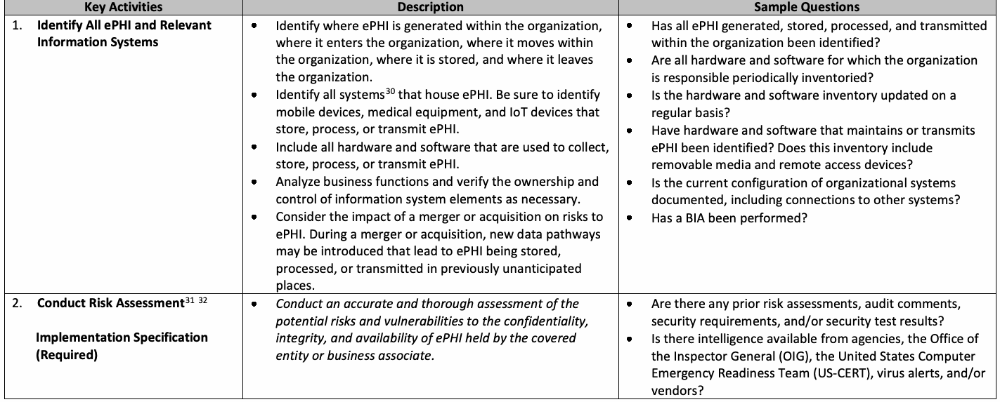
抽出したテキスト（原本と未照合・参考）
| Key Activities | Description | Sample Questions |
| 1. Identify All ePHI and Relevant Information Systems | • Identify where ePHI is generated within the organization, where it enters the organization, where it moves within the organization, where it is stored, and where it leaves the organization. • Identify all systems30 that house ePHI. Be sure to identify mobile devices, medical equipment, and IoT devices that store, process, or transmit ePHI. • Include all hardware and software that are used to collect, store, process, or transmit ePHI. • Analyze business functions and verify the ownership and control of information system elements as necessary. • Consider the impact of a merger or acquisition on risks to ePHI. During a merger or acquisition, new data pathways may be introduced that lead to ePHI being stored, processed, or transmitted in previously unanticipated places. | • Has all ePHI generated, stored, processed, and transmitted within the organization been identified? • Are all hardware and software for which the organization is responsible periodically inventoried? • Is the hardware and software inventory updated on a regular basis? • Have hardware and software that maintains or transmits ePHI been identified? Does this inventory include removable media and remote access devices? • Is the current configuration of organizational systems documented, including connections to other systems? • Has a BIA been performed? |
| 2. Conduct Risk Assessment31 32 Implementation Specification (Required) | • Conduct an accurate and thorough assessment of the potential risks and vulnerabilities to the confidentiality, integrity, and availability of ePHI held by the covered entity or business associate. | • Are there any prior risk assessments, audit comments, security requirements, and/or security test results? • Is there intelligence available from agencies, the Office of the Inspector General (OIG), the United States Computer Emergency Readiness Team (US-CERT), virus alerts, and/or vendors? |
抽出したテキストの訳（原本と未照合・参考）
| 主な活動 | 説明 | 例示的な質問 |
| 1. すべてのePHIおよび関連情報システムを特定する | • 組織内でePHIが生成される場所、組織に入る場所、組織内を移動する経路、保存される場所、および組織から外部へ出る場所を特定する。 • ePHIを格納するすべてのシステム30を特定する。ePHIを保存、処理、または伝送するモバイル端末、医療機器、IoT機器も必ず特定する。 • ePHIの収集、保存、処理、または伝送に使用するすべてのハードウェアおよびソフトウェアを含める。 • 必要に応じて業務機能を分析し、情報システムを構成する要素の所有権と管理主体を確認する。 • 合併または買収がePHIへのリスクに及ぼす影響を検討する。合併または買収により、これまで想定していなかった場所にePHIが保存、処理、または伝送される新たなデータ経路が生じることがある。 | • 組織内で生成、保存、処理、伝送されるePHIをすべて特定したか。 • 組織が責任を負うすべてのハードウェアおよびソフトウェアを定期的に棚卸ししているか。 • ハードウェアおよびソフトウェアの棚卸しを定期的に更新しているか。 • ePHIを保持または伝送するハードウェアおよびソフトウェアを特定したか。棚卸しには、取り外し可能な媒体やリモートアクセス機器も含まれているか。 • 他システムとの接続を含め、組織システムの現在の構成を文書化しているか。 • 業務影響分析（BIA）を実施したか。 |
| 2. リスク評価を実施する31 32 実施仕様（必須） | • 対象事業体または業務提携先が保有するePHIの機密性、完全性、可用性に対する潜在的なリスクと脆弱性を、正確かつ網羅的に評価する。 | • 過去のリスク評価、監査コメント、セキュリティ要件、および／またはセキュリティ試験結果があるか。 • 機関、監察総監室（OIG）、米国コンピュータ緊急事態対応チーム（US-CERT）、ウイルス警告、および／またはベンダーから入手できる情報があるか。 |
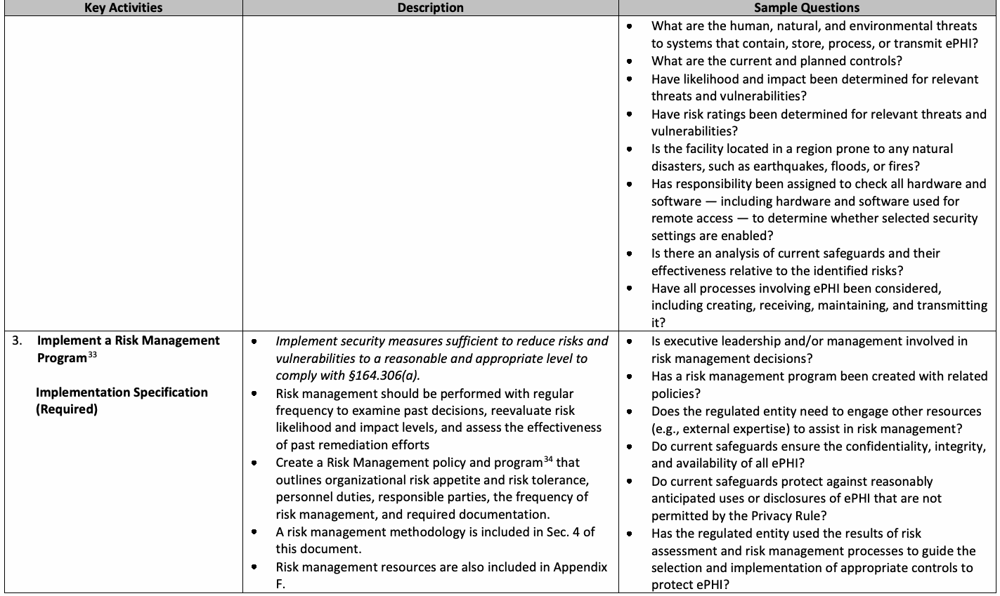
抽出したテキスト（原本と未照合・参考）
| Key Activities | Description | Sample Questions |
| • What are the human, natural, and environmental threats to systems that contain, store, process, or transmit ePHI? • What are the current and planned controls? • Have likelihood and impact been determined for relevant threats and vulnerabilities? • Have risk ratings been determined for relevant threats and vulnerabilities? • Is the facility located in a region prone to any natural disasters, such as earthquakes, floods, or fires? • Has responsibility been assigned to check all hardware and software — including hardware and software used for remote access — to determine whether selected security settings are enabled? • Is there an analysis of current safeguards and their effectiveness relative to the identified risks? • Have all processes involving ePHI been considered, including creating, receiving, maintaining, and transmitting it? | ||
| 3. Implement a Risk Management Program33 Implementation Specification (Required) | • Implement security measures sufficient to reduce risks and vulnerabilities to a reasonable and appropriate level to comply with §164.306(a). • Risk management should be performed with regular frequency to examine past decisions, reevaluate risk likelihood and impact levels, and assess the effectiveness of past remediation efforts • Create a Risk Management policy and program34 that outlines organizational risk appetite and risk tolerance, personnel duties, responsible parties, the frequency of risk management, and required documentation. • A risk management methodology is included in Sec. 4 of this document. • Risk management resources are also included in Appendix F. | • Is executive leadership and/or management involved in risk management decisions? • Has a risk management program been created with related policies? • Does the regulated entity need to engage other resources (e.g., external expertise) to assist in risk management? • Do current safeguards ensure the confidentiality, integrity, and availability of all ePHI? • Do current safeguards protect against reasonably anticipated uses or disclosures of ePHI that are not permitted by the Privacy Rule? • Has the regulated entity used the results of risk assessment and risk management processes to guide the selection and implementation of appropriate controls to protect ePHI? |
抽出したテキストの訳（原本と未照合・参考）
| 主な活動 | 説明 | 例示的な質問 |
| • ePHIを含む、保存する、処理する、または伝送するシステムには、どのような人的脅威、自然災害による脅威、環境上の脅威があるか。 • 現在の管理策および計画中の管理策は何か。 • 関連する脅威と脆弱性について、発生可能性と影響度を判定したか。 • 関連する脅威と脆弱性について、リスク評価を判定したか。 • 施設は、地震、洪水、火災などの自然災害が起こりやすい地域にあるか。 • 選択したセキュリティ設定が有効かを確認する責任者を割り当てたか。確認対象にはリモートアクセスに使用するものも含め、すべてのハードウェアおよびソフトウェアが含まれるか。 • 現在の安全措置と、特定したリスクに対するその有効性を分析したか。 • ePHIの作成、受領、維持、伝送など、ePHIに関わるすべてのプロセスを検討したか。 | ||
| 3. リスク管理プログラムを実施する33 実施仕様（必須） | • 第164.306(a)条に準拠するため、リスクおよび脆弱性を合理的かつ適切な水準まで低減するのに十分なセキュリティ対策を実施する。 • 過去の判断を検証し、リスクの発生可能性と影響度を再評価し、過去の是正措置の有効性を評価するため、定期的にリスク管理を実施すべきである。 • 組織のリスク選好度とリスク許容度、職員の職務、責任者、リスク管理の頻度、および必要な文書を定めるリスク管理方針およびプログラム34を作成する。 • 本書の第4節にリスク管理方法を記載している。 • リスク管理に関する資料は付録Fにも記載している。 | • 経営幹部および／または管理者は、リスク管理に関する判断に関与しているか。 • 関連する方針を含むリスク管理プログラムを作成したか。 • リスク管理を支援するため、規制対象機関は他のリソース（外部専門家など）を利用する必要があるか。 • 現在の安全措置は、すべてのePHIの機密性、完全性、可用性を確保しているか。 • 現在の安全措置は、プライバシー規則で認められていないePHIの合理的に予見可能な利用または開示から保護しているか。 • 規制対象機関は、ePHIを保護する適切な管理策の選択と実施を導くため、リスク評価およびリスク管理プロセスの結果を使用したか。 |
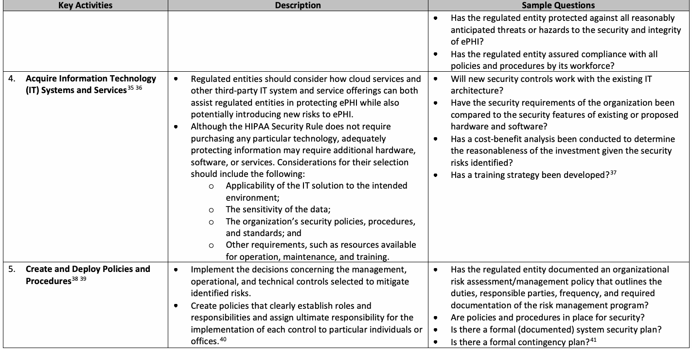
抽出したテキスト（原本と未照合・参考）
| Key Activities | Description | Sample Questions |
| • Has the regulated entity protected against all reasonably anticipated threats or hazards to the security and integrity of ePHI? • Has the regulated entity assured compliance with all policies and procedures by its workforce? | ||
| 4. Acquire Information Technology (IT) Systems and Services35 36 | • Regulated entities should consider how cloud services and other third-party IT system and service offerings can both assist regulated entities in protecting ePHI while also potentially introducing new risks to ePHI. • Although the HIPAA Security Rule does not require purchasing any particular technology, adequately protecting information may require additional hardware, software, or services. Considerations for their selection should include the following: Applicability of the IT solution to the intended o environment; The sensitivity of the data; o The organization’s security policies, procedures, o and standards; and Other requirements, such as resources available o for operation, maintenance, and training. | • Will new security controls work with the existing IT architecture? • Have the security requirements of the organization been compared to the security features of existing or proposed hardware and software? • Has a cost-benefit analysis been conducted to determine the reasonableness of the investment given the security risks identified? • Has a training strategy been developed?37 |
| 5. Create and Deploy Policies and Procedures38 39 | • Implement the decisions concerning the management, operational, and technical controls selected to mitigate identified risks. • Create policies that clearly establish roles and responsibilities and assign ultimate responsibility for the implementation of each control to particular individuals or offices.40 | • Has the regulated entity documented an organizational risk assessment/management policy that outlines the duties, responsible parties, frequency, and required documentation of the risk management program? • Are policies and procedures in place for security? • Is there a formal (documented) system security plan? • Is there a formal contingency plan?41 |
抽出したテキストの訳（原本と未照合・参考）
| 主な活動 | 説明 | 例示的な質問 |
| • 規制対象機関は、ePHIのセキュリティまたは完全性を脅かす、合理的に予見可能なすべての脅威または危険から保護しているか。 • 規制対象機関は、職員がすべての方針および手順を確実に順守するようにしているか。 | ||
| 4. 情報技術（IT）システムおよびサービスを取得する35 36 | • 規制対象機関は、クラウドサービスやその他の第三者が提供するITシステムおよびサービスについて、ePHIの保護に役立つ一方で、新たなリスクをもたらす可能性もあることを検討すべきである。 • HIPAAセキュリティ規則は特定の技術の購入を義務付けていないが、情報を適切に保護するには、追加のハードウェア、ソフトウェア、またはサービスが必要な場合がある。選定にあたっては、次の事項を考慮する。 ○ ITソリューションが想定する環境に適用できるか。 ○ データの機微性。 ○ 組織のセキュリティ方針、手順、基準。 ○ 運用、保守、研修に利用できるリソースなど、その他の要件。 | • 新しいセキュリティ管理策は、既存のITアーキテクチャと連携できるか。 • 組織のセキュリティ要件を、既存または提案中のハードウェアおよびソフトウェアのセキュリティ機能と比較したか。 • 特定したセキュリティリスクに照らし、投資が妥当かを判断する費用便益分析を実施したか。 • 研修方針を策定したか。37 |
| 5. 方針および手順を作成して展開する38 39 | • 特定したリスクを軽減するために選定した管理的、運用的、技術的管理策について、決定内容を実施する。 • 役割と責任を明確に定め、各管理策の実施に関する最終責任を特定の個人または部門に割り当てる方針を作成する。40 | • 規制対象機関は、リスク管理プログラムに関する職務、責任者、実施頻度、必要な文書を定めた、組織のリスク評価／管理方針を文書化したか。 • セキュリティに関する方針と手順を整備しているか。 • 正式な（文書化された）システムセキュリティ計画があるか。 • 正式な緊急時対応計画があるか。41 |
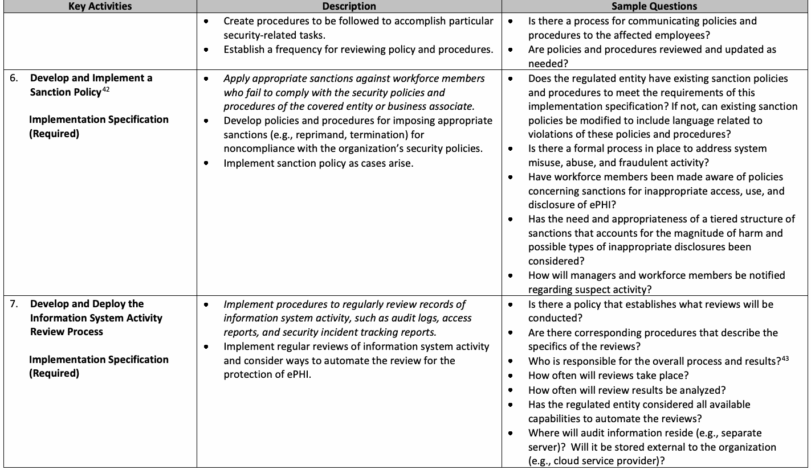
抽出したテキスト（原本と未照合・参考）
| Key Activities | Description | Sample Questions |
| • Create procedures to be followed to accomplish particular security-related tasks. • Establish a frequency for reviewing policy and procedures. | • Is there a process for communicating policies and procedures to the affected employees? • Are policies and procedures reviewed and updated as needed? | |
| 6. Develop and Implement a Sanction Policy42 Implementation Specification (Required) | • Apply appropriate sanctions against workforce members who fail to comply with the security policies and procedures of the covered entity or business associate. • Develop policies and procedures for imposing appropriate sanctions (e.g., reprimand, termination) for noncompliance with the organization’s security policies. • Implement sanction policy as cases arise. | • Does the regulated entity have existing sanction policies and procedures to meet the requirements of this implementation specification? If not, can existing sanction policies be modified to include language related to violations of these policies and procedures? • Is there a formal process in place to address system misuse, abuse, and fraudulent activity? • Have workforce members been made aware of policies concerning sanctions for inappropriate access, use, and disclosure of ePHI? • Has the need and appropriateness of a tiered structure of sanctions that accounts for the magnitude of harm and possible types of inappropriate disclosures been considered? • How will managers and workforce members be notified regarding suspect activity? |
| 7. Develop and Deploy the Information System Activity Review Process Implementation Specification (Required) | • Implement procedures to regularly review records of information system activity, such as audit logs, access reports, and security incident tracking reports. • Implement regular reviews of information system activity and consider ways to automate the review for the protection of ePHI. | • Is there a policy that establishes what reviews will be conducted? • Are there corresponding procedures that describe the specifics of the reviews? • Who is responsible for the overall process and results?43 • How often will reviews take place? • How often will review results be analyzed? • Has the regulated entity considered all available capabilities to automate the reviews? • Where will audit information reside (e.g., separate server)? Will it be stored external to the organization (e.g., cloud service provider)? |
抽出したテキストの訳（原本と未照合・参考）
| 主な活動 | 説明 | 例示的な質問 |
| • 特定のセキュリティ関連タスクを実施するための手順を作成する。 • 方針および手順を見直す頻度を定める。 | • 影響を受ける従業員に方針および手順を伝達するプロセスがあるか。 • 必要に応じて方針および手順を見直し、更新しているか。 | |
| 6. 制裁方針を策定して実施する42 実施仕様（必須） | • 対象事業体または業務提携先のセキュリティ方針および手順に従わない職員に、適切な制裁を科す。 • 組織のセキュリティ方針に従わない場合に適切な制裁（戒告、解雇など）を科す方針および手順を策定する。 • 事案が発生した場合に制裁方針を適用する。 | • 規制対象機関は、この実施仕様の要件を満たす既存の制裁方針および手順を備えているか。備えていない場合、既存の制裁方針を変更して、これらの方針および手順への違反に関する条項を含められるか。 • システムの不正使用、悪用、不正行為に対処する正式なプロセスがあるか。 • ePHIへの不適切なアクセス、使用、開示に対する制裁方針について、職員に周知したか。 • 害の程度や不適切な開示の種類を考慮した段階的な制裁の仕組みが必要か、また適切かを検討したか。 • 不審な活動について、管理者および職員にどのように通知するか。 |
| 7. 情報システム活動のレビュー・プロセスを策定し展開する 実施仕様（必須） | • 監査ログ、アクセス報告書、セキュリティインシデント追跡報告書など、情報システム活動の記録を定期的にレビューする手順を実施する。 • 情報システム活動を定期的にレビューし、ePHIを保護するためにレビューを自動化する方法を検討する。 | • 実施するレビューを定めた方針があるか。 • レビューの詳細を説明する対応手順があるか。 • プロセス全体と結果に対する責任者は誰か。43 • レビューをどのくらいの頻度で実施するか。 • レビュー結果をどのくらいの頻度で分析するか。 • レビューを自動化するために、利用可能な機能をすべて検討したか。 • 監査情報をどこに保存するか（別個のサーバーなど）。組織外（クラウドサービスプロバイダーなど）に保存するか。 |
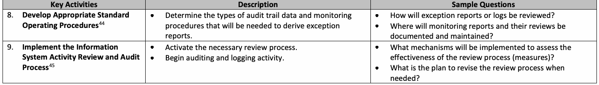
抽出したテキスト（原本と未照合・参考）
| Key Activities | Description | Sample Questions |
| 8. Develop Appropriate Standard Operating Procedures44 | • Determine the types of audit trail data and monitoring procedures that will be needed to derive exception reports. | • How will exception reports or logs be reviewed? • Where will monitoring reports and their reviews be documented and maintained? |
| 9. Implement the Information System Activity Review and Audit Process45 | • Activate the necessary review process. • Begin auditing and logging activity. | • What mechanisms will be implemented to assess the effectiveness of the review process (measures)? • What is the plan to revise the review process when needed? |
抽出したテキストの訳（原本と未照合・参考）
| 主な活動 | 説明 | 例示的な質問 |
| 8. 適切な標準作業手順を策定する44 | • 例外報告書を作成するために必要となる監査証跡データおよび監視手順の種類を決定する。 | • 例外報告書またはログをどのようにレビューするか。 • 監視報告書とそのレビュー結果をどこに記録し、保管するか。 |
| 9. 情報システム活動のレビューおよび監査プロセスを実施する45 | • 必要なレビュー・プロセスを開始する。 • 活動の監査とログ記録を開始する。 | • レビュー・プロセスの有効性を評価するため、どのような仕組み（測定指標）を導入するか。 • 必要に応じてレビュー・プロセスを改訂する計画は何か。 |
5.1.2. Assigned Security Responsibility (§ 164.308(a)(2))
5.1.2. セキュリティ責任の割当て（§ 164.308(a)(2)）
HIPAA Standard: Identify the security official who is responsible for the development and implementation of the policies and procedures required by this subpart for the covered entity or business associate.
HIPAA基準：対象事業体または業務提携先に対して本サブパートが求める方針および手順の策定と実施を担うセキュリティ責任者を特定する。
Table 9. Key activities, descriptions, and sample questions for the Assigned Security Responsibility standard
表9.「セキュリティ責任の割当て」基準に関する主な活動、説明、例示的な質問
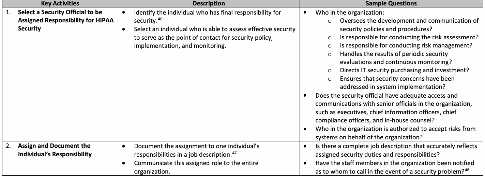
抽出したテキスト（原本と未照合・参考）
| Key Activities | Description | Sample Questions |
| 1. Select a Security Official to be Assigned Responsibility for HIPAA Security | • Identify the individual who has final responsibility for security.46 • Select an individual who is able to assess effective security to serve as the point of contact for security policy, implementation, and monitoring. | • Who in the organization: Oversees the development and communication of o security policies and procedures? Is responsible for conducting the risk assessment? o Is responsible for conducting risk management? o Handles the results of periodic security o evaluations and continuous monitoring? Directs IT security purchasing and investment? o Ensures that security concerns have been o addressed in system implementation? • Does the security official have adequate access and communications with senior officials in the organization, such as executives, chief information officers, chief compliance officers, and in-house counsel? • Who in the organization is authorized to accept risks from systems on behalf of the organization? |
| 2. Assign and Document the Individual’s Responsibility | • Document the assignment to one individual’s responsibilities in a job description.47 • Communicate this assigned role to the entire organization. | • Is there a complete job description that accurately reflects assigned security duties and responsibilities? • Have the staff members in the organization been notified as to whom to call in the event of a security problem?48 |
抽出したテキストの訳（原本と未照合・参考）
| 主な活動 | 説明 | 例示的な質問 |
| 1. HIPAAセキュリティの責任を担うセキュリティ責任者を選任する | • セキュリティに関する最終責任を負う個人を特定する。46 • 有効なセキュリティを評価でき、セキュリティ方針、実施、監視の窓口となる個人を選任する。 | • 組織内で次の役割を担うのは誰か。セキュリティ方針および手順の策定と周知を監督する。リスク評価を実施する。リスク管理を実施する。定期的なセキュリティ評価と継続的な監視の結果を取り扱う。ITセキュリティの調達および投資を指揮する。システムの実装でセキュリティ上の懸念に対処できるようにする。 • セキュリティ責任者は、経営幹部、最高情報責任者、最高コンプライアンス責任者、社内弁護士など、組織の上級幹部と十分に連絡を取り、必要な情報にアクセスできるか。 • 組織を代表して、システムに伴うリスクを受容する権限を持つのは誰か。 |
| 2. 個人の責任を割り当て、文書化する | • 1人の個人に割り当てた責任を職務記述書に記録する。47 • 割り当てた役割を組織全体に周知する。 | • 割り当てられたセキュリティ上の職務と責任を正確に反映した、完全な職務記述書があるか。 • セキュリティ上の問題が起きた場合の連絡先を、組織内の職員に周知したか。48 |
5.1.3. Workforce Security (§ 164.308(a)(3))
5.1.3. 職員のセキュリティ（§ 164.308(a)(3)）
HIPAA Standard: Implement policies and procedures to ensure that all members of its workforce have appropriate access to electronic protected health information, as provided under paragraph (a)(4) of this section, and to prevent those workforce members who do not have access under paragraph (a)(4) of this section from obtaining access to electronic protected health information.
HIPAA基準：すべての職員が本条(a)(4)項に従って電子保護対象保健情報に適切にアクセスできるようにする方針および手順を実施するとともに、本条(a)(4)項に基づくアクセス権限を持たない職員が電子保護対象保健情報にアクセスできないようにする。
Table 10. Key activities, descriptions, and sample questions for the Workforce Security standard
表10.「職員のセキュリティ」基準に関する主な活動、説明、例示的な質問
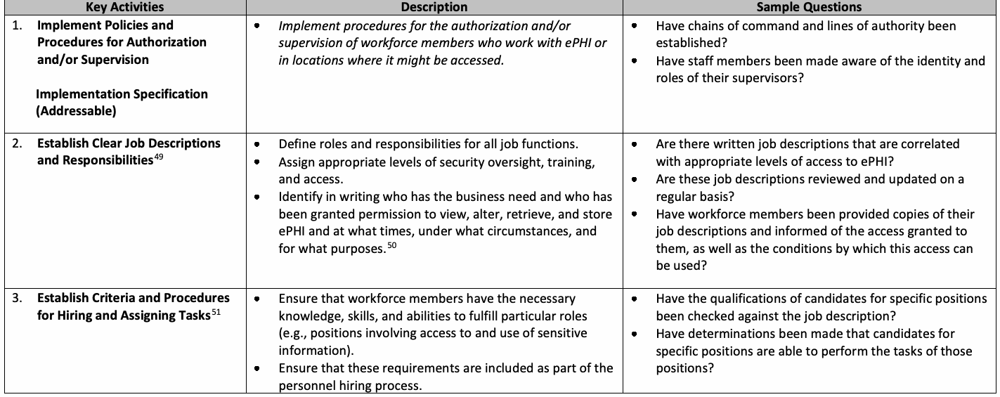
抽出したテキスト（原本と未照合・参考）
| Key Activities | Description | Sample Questions |
| 1. Implement Policies and Procedures for Authorization and/or Supervision Implementation Specification (Addressable) | • Implement procedures for the authorization and/or supervision of workforce members who work with ePHI or in locations where it might be accessed. | • Have chains of command and lines of authority been established? • Have staff members been made aware of the identity and roles of their supervisors? |
| 2. Establish Clear Job Descriptions and Responsibilities49 | • Define roles and responsibilities for all job functions. • Assign appropriate levels of security oversight, training, and access. • Identify in writing who has the business need and who has been granted permission to view, alter, retrieve, and store ePHI and at what times, under what circumstances, and for what purposes.50 | • Are there written job descriptions that are correlated with appropriate levels of access to ePHI? • Are these job descriptions reviewed and updated on a regular basis? • Have workforce members been provided copies of their job descriptions and informed of the access granted to them, as well as the conditions by which this access can be used? |
| 3. Establish Criteria and Procedures for Hiring and Assigning Tasks51 | • Ensure that workforce members have the necessary knowledge, skills, and abilities to fulfill particular roles (e.g., positions involving access to and use of sensitive information). • Ensure that these requirements are included as part of the personnel hiring process. | • Have the qualifications of candidates for specific positions been checked against the job description? • Have determinations been made that candidates for specific positions are able to perform the tasks of those positions? |
抽出したテキストの訳（原本と未照合・参考）
| 主な活動 | 説明 | 例示的な質問 |
| 1. 承認および／または監督の方針・手順を実施する 実施仕様（対応可能） | • ePHIを扱う職員、またはePHIにアクセスできる場所で働く職員の承認および／または監督に関する手順を実施する。 | • 指揮命令系統と権限系統を確立したか。 • 職員に、上司の身元と役割を周知したか。 |
| 2. 明確な職務記述書と責任を定める49 | • すべての職務について役割と責任を定める。 • 適切な水準のセキュリティ監督、研修、アクセス権を割り当てる。 • 誰に業務上の必要性があり、誰にePHIの閲覧、変更、取得、保存の許可が与えられているか、また、いつ、どのような状況および目的で許可されているかを文書で明らかにする。50 | • ePHIへの適切なアクセス水準に対応する職務記述書が文書化されているか。 • これらの職務記述書を定期的に見直し、更新しているか。 • 職員に職務記述書の写しを渡し、許可されたアクセス権とその利用条件を知らせたか。 |
| 3. 採用および業務割当ての基準と手順を定める51 | • 職員が特定の役割（機微情報へのアクセスおよび使用を伴う職務など）を果たすために必要な知識、技能、能力を備えていることを確認する。 • これらの要件を職員の採用プロセスに含める。 | • 特定の職務の候補者の資格を、職務記述書と照合して確認したか。 • 特定の職務の候補者がその業務を遂行できると判断したか。 |
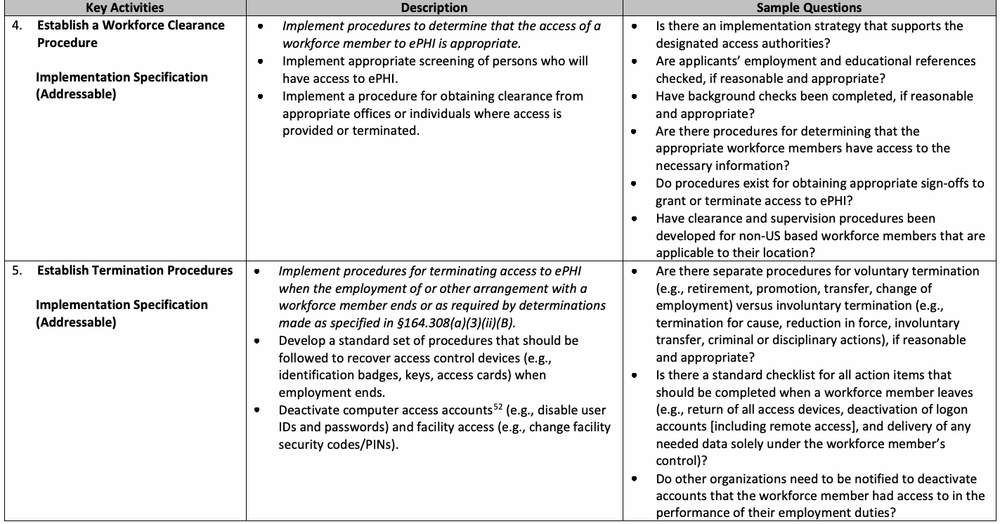
抽出したテキスト（原本と未照合・参考）
| Key Activities | Description | Sample Questions |
| 4. Establish a Workforce Clearance Procedure Implementation Specification (Addressable) | • Implement procedures to determine that the access of a workforce member to ePHI is appropriate. • Implement appropriate screening of persons who will have access to ePHI. • Implement a procedure for obtaining clearance from appropriate offices or individuals where access is provided or terminated. | • Is there an implementation strategy that supports the designated access authorities? • Are applicants’ employment and educational references checked, if reasonable and appropriate? • Have background checks been completed, if reasonable and appropriate? • Are there procedures for determining that the appropriate workforce members have access to the necessary information? • Do procedures exist for obtaining appropriate sign-offs to grant or terminate access to ePHI? • Have clearance and supervision procedures been developed for non-US based workforce members that are applicable to their location? |
| 5. Establish Termination Procedures Implementation Specification (Addressable) | • Implement procedures for terminating access to ePHI when the employment of or other arrangement with a workforce member ends or as required by determinations made as specified in §164.308(a)(3)(ii)(B). • Develop a standard set of procedures that should be followed to recover access control devices (e.g., identification badges, keys, access cards) when employment ends. • Deactivate computer access accounts52 (e.g., disable user IDs and passwords) and facility access (e.g., change facility security codes/PINs). | • Are there separate procedures for voluntary termination (e.g., retirement, promotion, transfer, change of employment) versus involuntary termination (e.g., termination for cause, reduction in force, involuntary transfer, criminal or disciplinary actions), if reasonable and appropriate? • Is there a standard checklist for all action items that should be completed when a workforce member leaves (e.g., return of all access devices, deactivation of logon accounts [including remote access], and delivery of any needed data solely under the workforce member’s control)? • Do other organizations need to be notified to deactivate accounts that the workforce member had access to in the performance of their employment duties? |
抽出したテキストの訳（原本と未照合・参考）
| 主な活動 | 説明 | 例示的な質問 |
| 4. 職員の適格性審査手順を確立する 実施仕様（対応可能） | • 職員のePHIへのアクセスが適切であると判断する手順を実施する。 • ePHIにアクセスする者に対する適切な審査を実施する。 • アクセス権を付与または終了する際に、適切な部門または個人から承認を得る手順を実施する。 | • 指定されたアクセス権限を支える実施方針があるか。 • 合理的かつ適切な場合、応募者の職歴および学歴に関する照会先を確認しているか。 • 合理的かつ適切な場合、身元調査を完了しているか。 • 必要な情報に適切な職員がアクセスできると判断する手順があるか。 • ePHIへのアクセス権を付与または終了するための適切な承認を得る手順があるか。 • 米国外の職員について、その所在地域に適用できる適格性審査および監督の手順を策定したか。 |
| 5. 雇用終了手順を確立する 実施仕様（対応可能） | • 職員の雇用またはその他の契約関係が終了したとき、または第164.308(a)(3)(ii)(B)に定める判断に従って必要となったときに、ePHIへのアクセス権を終了する手順を実施する。 • 雇用終了時にアクセス制御機器（身分証明バッジ、鍵、アクセスカードなど）を回収するための標準手順一式を作成する。 • コンピューターのアクセスアカウント52（ユーザーIDおよびパスワードの無効化など）と施設へのアクセス（施設のセキュリティコード／PINの変更など）を無効にする。 | • 合理的かつ適切な場合、自主的な雇用終了（退職、昇進、異動、転職など）と非自主的な雇用終了（懲戒解雇、人員削減、非自主的な異動、刑事処分または懲戒処分など）に別々の手順があるか。 • 職員が退職する際に完了すべき措置（すべてのアクセス機器の返却、ログインアカウント［リモートアクセスを含む］の無効化、職員だけが管理していた必要なデータの引渡しなど）を記載した標準チェックリストがあるか。 • 職員が業務の遂行中にアクセスしていたアカウントを無効化するため、他の組織に通知する必要があるか。 |
5.1.4. Information Access Management (§ 164.308(a)(4))53
5.1.4. 情報アクセス管理（§ 164.308(a)(4)）53
未レビュー訳HIPAA Standard: Implement policies and procedures for authorizing access to electronic protected health information that are consistent with the applicable requirements of subpart E of this part.
HIPAA基準：本パートのサブパートEの該当要件に合致する、電子保護対象保健情報へのアクセスを承認するための方針および手順を実施する。
Table 11. Key activities, descriptions, and sample questions for the Information Access Management standard
表11.「情報アクセス管理」基準に関する主な活動、説明、例示的な質問
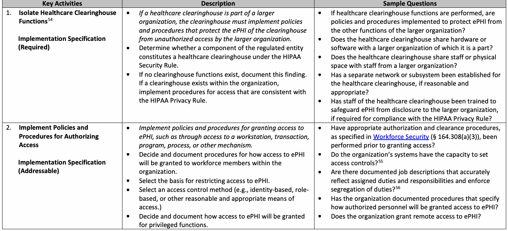
抽出したテキスト（原本と未照合・参考）
| Key Activities | Description | Sample Questions |
| 1. Isolate Healthcare Clearinghouse Functions54 Implementation Specification (Required) | • If a healthcare clearinghouse is part of a larger organization, the clearinghouse must implement policies and procedures that protect the ePHI of the clearinghouse from unauthorized access by the larger organization. • Determine whether a component of the regulated entity constitutes a healthcare clearinghouse under the HIPAA Security Rule. • If no clearinghouse functions exist, document this finding. If a clearinghouse exists within the organization, implement procedures for access that are consistent with the HIPAA Privacy Rule. | • If healthcare clearinghouse functions are performed, are policies and procedures implemented to protect ePHI from the other functions of the larger organization? • Does the healthcare clearinghouse share hardware or software with a larger organization of which it is a part? • Does the healthcare clearinghouse share staff or physical space with staff from a larger organization? • Has a separate network or subsystem been established for the healthcare clearinghouse, if reasonable and appropriate? • Has staff of the healthcare clearinghouse been trained to safeguard ePHI from disclosure to the larger organization, if required for compliance with the HIPAA Privacy Rule? |
| 2. Implement Policies and Procedures for Authorizing Access Implementation Specification (Addressable) | • Implement policies and procedures for granting access to ePHI, such as through access to a workstation, transaction, program, process, or other mechanism. • Decide and document procedures for how access to ePHI will be granted to workforce members within the organization. • Select the basis for restricting access to ePHI. • Select an access control method (e.g., identity-based, role- based, or other reasonable and appropriate means of access.) • Decide and document how access to ePHI will be granted for privileged functions. | • Have appropriate authorization and clearance procedures, as specified in Workforce Security (§ 164.308(a)(3)), been performed prior to granting access? • Do the organization’s systems have the capacity to set access controls?55 • Are there documented job descriptions that accurately reflect assigned duties and responsibilities and enforce segregation of duties?56 • Has the organization documented procedures that specify how authorized personnel will be granted access to ePHI? • Does the organization grant remote access to ePHI? |
抽出したテキストの訳（原本と未照合・参考）
| 主な活動 | 説明 | 例示的な質問 |
| 1. 医療情報交換機関の機能を分離する54 実施仕様（必須） | • 医療情報交換機関がより大きな組織の一部である場合、その機関は、より大きな組織による不正アクセスから自機関のePHIを保護する方針および手順を実施しなければならない。 • 規制対象機関の構成部分が、HIPAAセキュリティ規則における医療情報交換機関に該当するかを判断する。 • 医療情報交換機関の機能が存在しない場合、その判断を文書化する。組織内にその機能が存在する場合は、HIPAAプライバシー規則に沿ったアクセス手順を実施する。 | • 医療情報交換機関の機能を運営している場合、より大きな組織の他の機能からePHIを保護する方針および手順を実施しているか。 • 医療情報交換機関は、属するより大きな組織とハードウェアまたはソフトウェアを共有しているか。 • 医療情報交換機関は、より大きな組織の職員と職員または物理的な空間を共有しているか。 • 合理的かつ適切な場合、医療情報交換機関専用のネットワークまたはサブシステムを構築したか。 • HIPAAプライバシー規則への準拠に必要な場合、医療情報交換機関の職員に、より大きな組織への開示からePHIを保護するための研修を行ったか。 |
| 2. アクセス承認の方針および手順を実施する 実施仕様（対応可能） | • ワークステーション、トランザクション、プログラム、プロセス、またはその他の仕組みへのアクセスなど、ePHIへのアクセスを許可する方針および手順を実施する。 • 組織内の職員にePHIへのアクセスを許可する手順を決定し、文書化する。 • ePHIへのアクセスを制限する根拠を選択する。 • アクセス制御方式（IDベース、役割ベース、またはその他の合理的かつ適切なアクセス手段など）を選択する。 • 特権機能のためにePHIへのアクセスを許可する方法を決定し、文書化する。 | • アクセスを許可する前に、「職員のセキュリティ」（§ 164.308(a)(3)）に定める適切な承認および適格性審査の手順を実施したか。 • 組織のシステムにアクセス制御を設定する機能があるか。55 • 割り当てられた職務および責任を正確に反映し、職務分離を確保する職務記述書を文書化しているか。56 • 権限を付与された職員にePHIへのアクセスを許可する方法を定めた手順を文書化したか。 • 組織はePHIへのリモートアクセスを許可しているか。 |
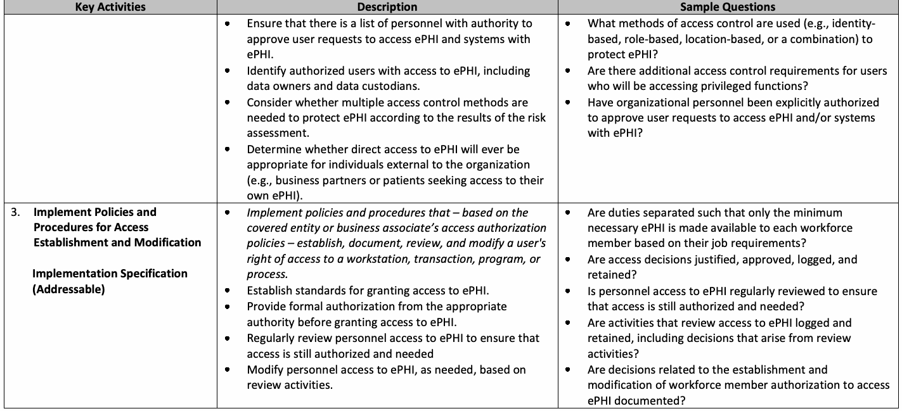
抽出したテキスト（原本と未照合・参考）
| Key Activities | Description | Sample Questions |
| • Ensure that there is a list of personnel with authority to approve user requests to access ePHI and systems with ePHI. • Identify authorized users with access to ePHI, including data owners and data custodians. • Consider whether multiple access control methods are needed to protect ePHI according to the results of the risk assessment. • Determine whether direct access to ePHI will ever be appropriate for individuals external to the organization (e.g., business partners or patients seeking access to their own ePHI). | • What methods of access control are used (e.g., identity- based, role-based, location-based, or a combination) to protect ePHI? • Are there additional access control requirements for users who will be accessing privileged functions? • Have organizational personnel been explicitly authorized to approve user requests to access ePHI and/or systems with ePHI? | |
| 3. Implement Policies and Procedures for Access Establishment and Modification Implementation Specification (Addressable) | • Implement policies and procedures that – based on the covered entity or business associate’s access authorization policies – establish, document, review, and modify a user's right of access to a workstation, transaction, program, or process. • Establish standards for granting access to ePHI. • Provide formal authorization from the appropriate authority before granting access to ePHI. • Regularly review personnel access to ePHI to ensure that access is still authorized and needed • Modify personnel access to ePHI, as needed, based on review activities. | • Are duties separated such that only the minimum necessary ePHI is made available to each workforce member based on their job requirements? • Are access decisions justified, approved, logged, and retained? • Is personnel access to ePHI regularly reviewed to ensure that access is still authorized and needed? • Are activities that review access to ePHI logged and retained, including decisions that arise from review activities? • Are decisions related to the establishment and modification of workforce member authorization to access ePHI documented? |
抽出したテキストの訳（原本と未照合・参考）
| 主な活動 | 説明 | 例示的な質問 |
| • ePHIおよびePHIを含むシステムへのユーザーアクセス要求を承認する権限を持つ職員の一覧を整備する。 • データ所有者およびデータ管理者を含め、ePHIにアクセスする権限を持つユーザーを特定する。 • リスク評価の結果に基づき、ePHIを保護するために複数のアクセス制御方式が必要か検討する。 • 組織外の個人（業務提携先や自分自身のePHIへのアクセスを求める患者など）にePHIへの直接アクセスを許可することが適切かを判断する。 | • ePHIの保護にどのようなアクセス制御方式（IDベース、役割ベース、場所ベース、またはそれらの組み合わせなど）を用いているか。 • 特権機能にアクセスするユーザーに対する追加のアクセス制御要件があるか。 • ePHIおよび／またはePHIを含むシステムへのユーザーアクセス要求を承認する権限を、組織の職員に明示的に付与したか。 | |
| 3. アクセスの設定および変更に関する方針・手順を実施する 実施仕様（対応可能） | • 対象事業体または業務提携先のアクセス承認方針に基づき、ワークステーション、トランザクション、プログラム、またはプロセスに対するユーザーのアクセス権を設定、文書化、レビュー、変更する方針および手順を実施する。 • ePHIへのアクセス権を付与する基準を定める。 • ePHIへのアクセス権を付与する前に、適切な権限者から正式な承認を得る。 • 職員のePHIへのアクセス権が引き続き承認され、必要であることを確かめるため、定期的にレビューする。 • レビュー結果に基づき、必要に応じて職員のePHIへのアクセス権を変更する。 | • 職務を分離し、各職員の職務要件に応じて必要最小限のePHIのみを利用可能にしているか。 • アクセスに関する判断は、その根拠を示して承認し、記録して保持しているか。 • 職員のePHIへのアクセス権が引き続き承認され、必要であることを確かめるため、定期的にレビューしているか。 • レビューによって生じた判断を含め、ePHIへのアクセスをレビューする活動を記録して保持しているか。 • 職員によるePHIへのアクセス権の設定および変更に関する判断を文書化しているか。 |
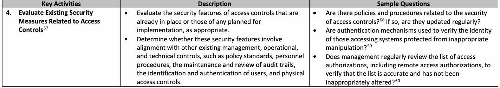
抽出したテキスト（原本と未照合・参考）
| Key Activities | Description | Sample Questions |
| 4. Evaluate Existing Security Measures Related to Access Controls57 | • Evaluate the security features of access controls that are already in place or those of any planned for implementation, as appropriate. • Determine whether these security features involve alignment with other existing management, operational, and technical controls, such as policy standards, personnel procedures, the maintenance and review of audit trails, the identification and authentication of users, and physical access controls. | • Are there policies and procedures related to the security of access controls?58 If so, are they updated regularly? • Are authentication mechanisms used to verify the identity of those accessing systems protected from inappropriate manipulation?59 • Does management regularly review the list of access authorizations, including remote access authorizations, to verify that the list is accurate and has not been inappropriately altered?60 |
抽出したテキストの訳（原本と未照合・参考）
| 主な活動 | 説明 | 例示的な質問 |
| 4. アクセス制御に関する既存のセキュリティ対策を評価する57 | • すでに導入済み、または導入予定のアクセス制御のセキュリティ機能を、必要に応じて評価する。 • これらのセキュリティ機能が、方針基準、職員の手順、監査証跡の保守およびレビュー、ユーザーの識別と認証、物理的アクセス制御など、他の既存の管理的、運用的、技術的管理策と整合しているかを判断する。 | • アクセス制御のセキュリティに関する方針および手順があるか。58 ある場合、定期的に更新しているか。 • システムにアクセスする者の身元を確認する認証機構が、不適切に操作されないよう保護されているか。59 • 経営陣はリモートアクセスの承認を含むアクセス権限の一覧を定期的に確認し、正確であり、不適切に変更されていないことを検証しているか。60 |
5.1.5. Security Awareness and Training (§ 164.308(a)(5))61
5.1.5. セキュリティ意識向上および研修（§ 164.308(a)(5)）61
未レビュー訳HIPAA Standard: Implement a security awareness and training program for all members of its workforce (including management).
HIPAA基準：管理者を含むすべての職員を対象に、セキュリティ意識向上および研修プログラムを実施する。
Table 12. Key activities, descriptions, and sample questions for the Security Awareness and Training standard
表12.「セキュリティ意識向上および研修」基準に関する主な活動、説明、例示的な質問
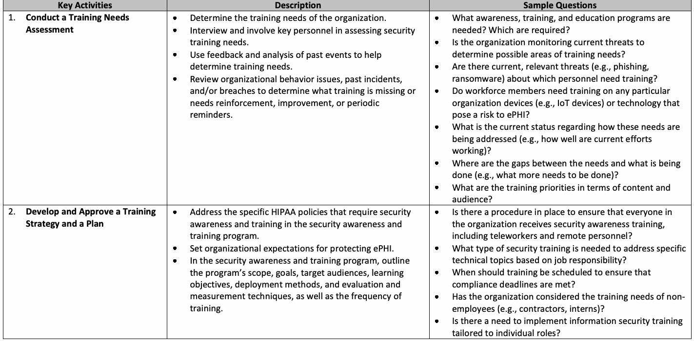
抽出したテキスト（原本と未照合・参考）
| Key Activities | Description | Sample Questions |
| 1. Conduct a Training Needs Assessment | • Determine the training needs of the organization. • Interview and involve key personnel in assessing security training needs. • Use feedback and analysis of past events to help determine training needs. • Review organizational behavior issues, past incidents, and/or breaches to determine what training is missing or needs reinforcement, improvement, or periodic reminders. | • What awareness, training, and education programs are needed? Which are required? • Is the organization monitoring current threats to determine possible areas of training needs? • Are there current, relevant threats (e.g., phishing, ransomware) about which personnel need training? • Do workforce members need training on any particular organization devices (e.g., IoT devices) or technology that pose a risk to ePHI? • What is the current status regarding how these needs are being addressed (e.g., how well are current efforts working)? • Where are the gaps between the needs and what is being done (e.g., what more needs to be done)? • What are the training priorities in terms of content and audience? |
| 2. Develop and Approve a Training Strategy and a Plan | • Address the specific HIPAA policies that require security awareness and training in the security awareness and training program. • Set organizational expectations for protecting ePHI. • In the security awareness and training program, outline the program’s scope, goals, target audiences, learning objectives, deployment methods, and evaluation and measurement techniques, as well as the frequency of training. | • Is there a procedure in place to ensure that everyone in the organization receives security awareness training, including teleworkers and remote personnel? • What type of security training is needed to address specific technical topics based on job responsibility? • When should training be scheduled to ensure that compliance deadlines are met? • Has the organization considered the training needs of non- employees (e.g., contractors, interns)? • Is there a need to implement information security training tailored to individual roles? |
抽出したテキストの訳（原本と未照合・参考）
| 主な活動 | 説明 | 例示的な質問 |
| 1. 研修ニーズを評価する | • 組織の研修ニーズを特定する。 • セキュリティ研修のニーズ評価にあたり、主要な職員に聞き取りを行い、参加してもらう。 • 過去の事象に関するフィードバックと分析を用いて、研修ニーズを判断する。 • 組織内の行動上の問題、過去のインシデント、および／または侵害を検討し、不足している研修、強化または改善が必要な研修、定期的な再周知が必要な内容を特定する。 | • どのような意識向上、研修、教育プログラムが必要か。義務付けられているものはどれか。 • 組織は、研修ニーズの候補を特定するため、現在の脅威を監視しているか。 • 職員が研修を受ける必要のある、現時点で関連性の高い脅威（フィッシング、ランサムウェアなど）があるか。 • ePHIにリスクをもたらす特定の組織内機器（IoT機器など）または技術について、職員に研修が必要か。 • これらのニーズへの対応状況はどうか（現在の取り組みがどの程度機能しているかなど）。 • ニーズと現在の取り組みとの間にどのような隔たりがあるか（追加で必要な取り組みなど）。 • 内容と対象者に関する研修の優先順位は何か。 |
| 2. 研修戦略および計画を策定して承認する | • セキュリティ意識向上および研修プログラムに、セキュリティ意識向上と研修を求めるHIPAAの個別方針を反映させる。 • ePHIの保護に関する組織の期待事項を定める。 • セキュリティ意識向上および研修プログラムに、対象範囲、目標、対象者、学習目標、展開方法、評価・測定手法、および研修頻度を記載する。 | • 在宅勤務者およびリモート勤務者を含む組織内の全員がセキュリティ意識向上研修を受けられるようにする手順があるか。 • 職務上の責任に応じた特定の技術的な話題に対応するには、どのようなセキュリティ研修が必要か。 • 準拠期限を満たすため、研修をいつ実施すべきか。 • 組織は、従業員以外の者（請負業者、インターンなど）の研修ニーズを検討したか。 • 個々の役割に合わせた情報セキュリティ研修を実施する必要があるか。 |
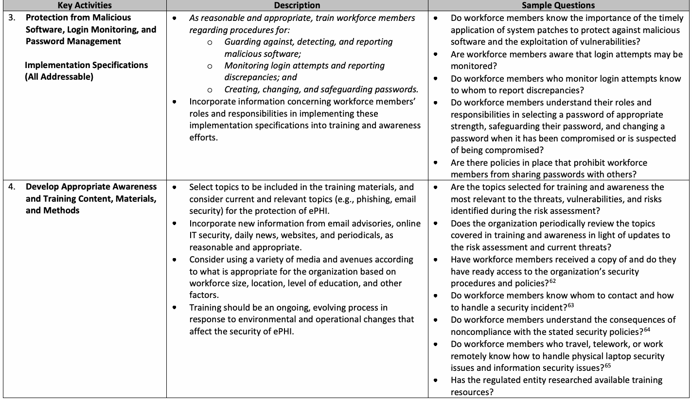
抽出したテキスト（原本と未照合・参考）
| Key Activities | Description | Sample Questions |
| 3. Protection from Malicious Software, Login Monitoring, and Password Management Implementation Specifications (All Addressable) | • As reasonable and appropriate, train workforce members regarding procedures for: Guarding against, detecting, and reporting o malicious software; Monitoring login attempts and reporting o discrepancies; and Creating, changing, and safeguarding passwords. o • Incorporate information concerning workforce members’ roles and responsibilities in implementing these implementation specifications into training and awareness efforts. | • Do workforce members know the importance of the timely application of system patches to protect against malicious software and the exploitation of vulnerabilities? • Are workforce members aware that login attempts may be monitored? • Do workforce members who monitor login attempts know to whom to report discrepancies? • Do workforce members understand their roles and responsibilities in selecting a password of appropriate strength, safeguarding their password, and changing a password when it has been compromised or is suspected of being compromised? • Are there policies in place that prohibit workforce members from sharing passwords with others? |
| 4. Develop Appropriate Awareness and Training Content, Materials, and Methods | • Select topics to be included in the training materials, and consider current and relevant topics (e.g., phishing, email security) for the protection of ePHI. • Incorporate new information from email advisories, online IT security, daily news, websites, and periodicals, as reasonable and appropriate. • Consider using a variety of media and avenues according to what is appropriate for the organization based on workforce size, location, level of education, and other factors. • Training should be an ongoing, evolving process in response to environmental and operational changes that affect the security of ePHI. | • Are the topics selected for training and awareness the most relevant to the threats, vulnerabilities, and risks identified during the risk assessment? • Does the organization periodically review the topics covered in training and awareness in light of updates to the risk assessment and current threats? • Have workforce members received a copy of and do they have ready access to the organization’s security procedures and policies?62 • Do workforce members know whom to contact and how to handle a security incident?63 • Do workforce members understand the consequences of noncompliance with the stated security policies?64 • Do workforce members who travel, telework, or work remotely know how to handle physical laptop security issues and information security issues?65 • Has the regulated entity researched available training resources? |
抽出したテキストの訳（原本と未照合・参考）
| 主な活動 | 説明 | 例示的な質問 |
| 3. マルウェア対策、ログイン監視、パスワード管理 実施仕様（すべて対応可能） | • 合理的かつ適切な範囲で、次の手順について職員に研修する。 ○ マルウェアを防御、検知、報告する。 ○ ログイン試行を監視し、不一致を報告する。 ○ パスワードを作成、変更し、安全に保護する。 • これらの実施仕様を導入する際の職員の役割と責任に関する情報を、研修および意識向上の取り組みに含める。 | • マルウェアや脆弱性の悪用から保護するために、システムの修正プログラムを速やかに適用する重要性を職員が理解しているか。 • ログイン試行が監視される可能性があることを職員が認識しているか。 • ログイン試行を監視する職員は、不一致の報告先を知っているか。 • 職員は、適切な強度のパスワードを選択し、安全に保護し、漏えいまたはその疑いがある場合に変更する役割と責任を理解しているか。 • 職員がパスワードを他人と共有することを禁止する方針があるか。 |
| 4. 適切な意識向上・研修の内容、教材、方法を策定する | • 研修教材に含める話題を選び、ePHIの保護に関する現在かつ関連性の高い話題（フィッシング、電子メールのセキュリティなど）を検討する。 • 合理的かつ適切な範囲で、電子メールによる勧告、オンラインのITセキュリティ情報、日々のニュース、ウェブサイト、定期刊行物から新たな情報を取り入れる。 • 職員数、勤務地、教育水準、その他の要因を踏まえ、組織に適したさまざまな媒体や手段の利用を検討する。 • ePHIのセキュリティに影響を与える環境または運用の変化に応じて、研修を継続的に進化させるプロセスとすべきである。 | • 選択した研修および意識向上の話題は、リスク評価で特定した脅威、脆弱性、リスクに照らして最も関連性が高いか。 • リスク評価の更新や現在の脅威を踏まえ、研修および意識向上で扱う話題を定期的に見直しているか。 • 職員に組織のセキュリティ手順および方針の写しを渡し、すぐに参照できるようにしたか。62 • セキュリティインシデントについて、職員は連絡先と対応方法を知っているか。63 • 職員は、定められたセキュリティ方針に違反した場合の結果を理解しているか。64 • 出張、在宅勤務、リモート勤務を行う職員は、ノートパソコンの物理的なセキュリティ問題および情報セキュリティ問題への対処方法を知っているか。65 • 規制対象機関は、利用可能な研修資料を調査したか。 |
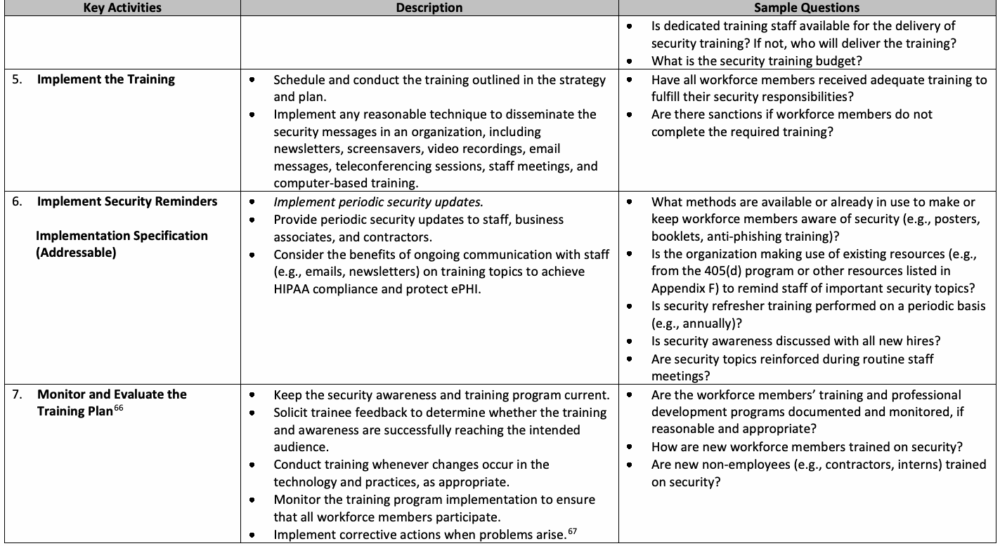
抽出したテキスト（原本と未照合・参考）
| Key Activities | Description | Sample Questions |
| • Is dedicated training staff available for the delivery of security training? If not, who will deliver the training? • What is the security training budget? | ||
| 5. Implement the Training | • Schedule and conduct the training outlined in the strategy and plan. • Implement any reasonable technique to disseminate the security messages in an organization, including newsletters, screensavers, video recordings, email messages, teleconferencing sessions, staff meetings, and computer-based training. | • Have all workforce members received adequate training to fulfill their security responsibilities? • Are there sanctions if workforce members do not complete the required training? |
| 6. Implement Security Reminders Implementation Specification (Addressable) | • Implement periodic security updates. • Provide periodic security updates to staff, business associates, and contractors. • Consider the benefits of ongoing communication with staff (e.g., emails, newsletters) on training topics to achieve HIPAA compliance and protect ePHI. | • What methods are available or already in use to make or keep workforce members aware of security (e.g., posters, booklets, anti-phishing training)? • Is the organization making use of existing resources (e.g., from the 405(d) program or other resources listed in Appendix F) to remind staff of important security topics? • Is security refresher training performed on a periodic basis (e.g., annually)? • Is security awareness discussed with all new hires? • Are security topics reinforced during routine staff meetings? |
| 7. Monitor and Evaluate the Training Plan66 | • Keep the security awareness and training program current. • Solicit trainee feedback to determine whether the training and awareness are successfully reaching the intended audience. • Conduct training whenever changes occur in the technology and practices, as appropriate. • Monitor the training program implementation to ensure that all workforce members participate. • Implement corrective actions when problems arise.67 | • Are the workforce members’ training and professional development programs documented and monitored, if reasonable and appropriate? • How are new workforce members trained on security? • Are new non-employees (e.g., contractors, interns) trained on security? |
抽出したテキストの訳（原本と未照合・参考）
| 主な活動 | 説明 | 例示的な質問 |
| • セキュリティ研修を提供する専任の研修担当者がいるか。いない場合、誰が研修を実施するか。 • セキュリティ研修の予算はいくらか。 | ||
| 5. 研修を実施する | • 戦略および計画に示した研修を予定し、実施する。 • ニュースレター、スクリーンセーバー、動画、電子メール、電話会議、職員会議、コンピュータベースの研修など、組織内にセキュリティに関するメッセージを伝えるための合理的な手法を実施する。 | • すべての職員がセキュリティ上の責任を果たすために十分な研修を受けたか。 • 職員が必須研修を完了しなかった場合に制裁があるか。 |
| 6. セキュリティに関する注意喚起を実施する 実施仕様（対応可能） | • セキュリティに関する更新情報を定期的に提供する。 • 職員、業務提携先、請負業者にセキュリティに関する更新情報を定期的に提供する。 • HIPAA準拠を達成し、ePHIを保護するため、研修の話題について職員と継続的に連絡を取る（電子メール、ニュースレターなど）利点を検討する。 | • 職員にセキュリティを認識させる、または認識を維持させるために利用可能な方法、またはすでに利用中の方法（ポスター、小冊子、フィッシング対策研修など）は何か。 • セキュリティ上の重要事項を職員に周知するため、既存の資料（405(d)プログラムや付録Fに記載された資料など）を利用しているか。 • 定期的（年1回など）にセキュリティの再研修を実施しているか。 • 新規採用者全員にセキュリティ意識について説明しているか。 • 通常の職員会議でセキュリティの話題を再確認しているか。 |
| 7. 研修計画を監視して評価する66 | • セキュリティ意識向上および研修プログラムを最新の状態に保つ。 • 研修および意識向上の取り組みが対象者に適切に届いているかを判断するため、受講者の意見を集める。 • 適切な場合、技術や業務慣行に変更があったときに研修を実施する。 • すべての職員が参加するよう、研修プログラムの実施状況を監視する。 • 問題が生じた場合に是正措置を実施する。67 | • 合理的かつ適切な場合、職員の研修および専門能力開発プログラムを文書化し、監視しているか。 • 新たな職員にセキュリティ研修をどのように実施するか。 • 新たに加わった従業員以外の者（請負業者、インターンなど）にセキュリティ研修を実施しているか。 |
5.1.6. Security Incident Procedures (§ 164.308(a)(6))68
5.1.6. セキュリティインシデント手順（§ 164.308(a)(6)）68
未レビュー訳HIPAA Standard: Implement policies and procedures to address security incidents.
HIPAA基準：セキュリティインシデントに対処する方針および手順を実施する。
Table 13. Key activities, descriptions, and sample questions for the Security Incident Procedures standard
表13.「セキュリティインシデント手順」基準に関する主な活動、説明、例示的な質問
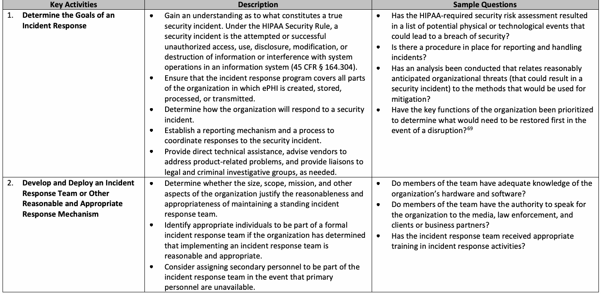
抽出したテキスト（原本と未照合・参考）
| Key Activities | Description | Sample Questions |
| 1. Determine the Goals of an Incident Response | • Gain an understanding as to what constitutes a true security incident. Under the HIPAA Security Rule, a security incident is the attempted or successful unauthorized access, use, disclosure, modification, or destruction of information or interference with system operations in an information system (45 CFR § 164.304). • Ensure that the incident response program covers all parts of the organization in which ePHI is created, stored, processed, or transmitted. • Determine how the organization will respond to a security incident. • Establish a reporting mechanism and a process to coordinate responses to the security incident. • Provide direct technical assistance, advise vendors to address product-related problems, and provide liaisons to legal and criminal investigative groups, as needed. | • Has the HIPAA-required security risk assessment resulted in a list of potential physical or technological events that could lead to a breach of security? • Is there a procedure in place for reporting and handling incidents? • Has an analysis been conducted that relates reasonably anticipated organizational threats (that could result in a security incident) to the methods that would be used for mitigation? • Have the key functions of the organization been prioritized to determine what would need to be restored first in the event of a disruption?69 |
| 2. Develop and Deploy an Incident Response Team or Other Reasonable and Appropriate Response Mechanism | • Determine whether the size, scope, mission, and other aspects of the organization justify the reasonableness and appropriateness of maintaining a standing incident response team. • Identify appropriate individuals to be part of a formal incident response team if the organization has determined that implementing an incident response team is reasonable and appropriate. • Consider assigning secondary personnel to be part of the incident response team in the event that primary personnel are unavailable. | • Do members of the team have adequate knowledge of the organization’s hardware and software? • Do members of the team have the authority to speak for the organization to the media, law enforcement, and clients or business partners? • Has the incident response team received appropriate training in incident response activities? |
抽出したテキストの訳（原本と未照合・参考）
| 主な活動 | 説明 | 例示的な質問 |
| 1. インシデント対応の目標を定める | • 真のセキュリティインシデントに該当する事象を理解する。HIPAAセキュリティ規則では、セキュリティインシデントとは、情報システム内の情報への不正アクセス、使用、開示、改変、破壊の試みもしくは成功、または情報システムの運用妨害をいう（45 CFR § 164.304）。 • ePHIが作成、保存、処理、または伝送される組織内のすべての領域をインシデント対応プログラムの対象とする。 • セキュリティインシデントへの組織の対応方法を定める。 • セキュリティインシデントへの対応を調整するため、報告の仕組みとプロセスを確立する。 • 必要に応じて直接的な技術支援を提供し、製品関連の問題への対処をベンダーに助言し、法務および刑事捜査機関との連絡窓口を設ける。 | • HIPAAが求めるセキュリティリスク評価によって、セキュリティ侵害につながり得る物理的または技術的な事象の候補を一覧化したか。 • インシデントを報告し、処理する手順があるか。 • 合理的に予見される組織への脅威（セキュリティインシデントにつながる可能性があるもの）と、軽減に用いる方法との関係を分析したか。 • 業務が中断した場合に何を最初に復旧すべきかを判断するため、組織の主要機能に優先順位を付けたか。69 |
| 2. インシデント対応チームまたはその他の合理的かつ適切な対応の仕組みを策定し、展開する | • 常設のインシデント対応チームを維持することが合理的かつ適切かを、組織の規模、範囲、使命、その他の側面に基づいて判断する。 • インシデント対応チームの設置が合理的かつ適切と判断した場合、正式なチームの適切な構成員を特定する。 • 主担当者が対応できない場合に備え、副担当者をインシデント対応チームに加えることを検討する。 | • チームの構成員は、組織のハードウェアおよびソフトウェアについて十分な知識を持っているか。 • チームの構成員は、組織を代表してメディア、法執行機関、顧客または業務提携先と話す権限を持っているか。 • インシデント対応チームは、インシデント対応活動について適切な研修を受けたか。 |
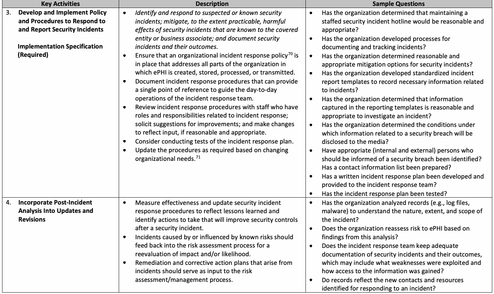
抽出したテキスト（原本と未照合・参考）
| Key Activities | Description | Sample Questions |
| 3. Develop and Implement Policy and Procedures to Respond to and Report Security Incidents Implementation Specification (Required) | • Identify and respond to suspected or known security incidents; mitigate, to the extent practicable, harmful effects of security incidents that are known to the covered entity or business associate; and document security incidents and their outcomes. • Ensure that an organizational incident response policy70 is in place that addresses all parts of the organization in which ePHI is created, stored, processed, or transmitted. • Document incident response procedures that can provide a single point of reference to guide the day-to-day operations of the incident response team. • Review incident response procedures with staff who have roles and responsibilities related to incident response; solicit suggestions for improvements; and make changes to reflect input, if reasonable and appropriate. • Consider conducting tests of the incident response plan. • Update the procedures as required based on changing organizational needs.71 | • Has the organization determined that maintaining a staffed security incident hotline would be reasonable and appropriate? • Has the organization developed processes for documenting and tracking incidents? • Has the organization determined reasonable and appropriate mitigation options for security incidents? • Has the organization developed standardized incident report templates to record necessary information related to incidents? • Has the organization determined that information captured in the reporting templates is reasonable and appropriate to investigate an incident? • Has the organization determined the conditions under which information related to a security breach will be disclosed to the media? • Have appropriate (internal and external) persons who should be informed of a security breach been identified? Has a contact information list been prepared? • Has a written incident response plan been developed and provided to the incident response team? • Has the incident response plan been tested? |
| 4. Incorporate Post-Incident Analysis Into Updates and Revisions | • Measure effectiveness and update security incident response procedures to reflect lessons learned and identify actions to take that will improve security controls after a security incident. • Incidents caused by or influenced by known risks should feed back into the risk assessment process for a reevaluation of impact and/or likelihood. • Remediation and corrective action plans that arise from incidents should serve as input to the risk assessment/management process. | • Has the organization analyzed records (e.g., log files, malware) to understand the nature, extent, and scope of the incident? • Does the organization reassess risk to ePHI based on findings from this analysis? • Does the incident response team keep adequate documentation of security incidents and their outcomes, which may include what weaknesses were exploited and how access to the information was gained? • Do records reflect the new contacts and resources identified for responding to an incident? |
抽出したテキストの訳（原本と未照合・参考）
| 主な活動 | 説明 | 例示的な質問 |
| 3. セキュリティインシデントへの対応および報告に関する方針・手順を策定して実施する 実施仕様（必須） | • 既知または疑いのあるセキュリティインシデントを特定して対応する。対象事業体または業務提携先が把握したセキュリティインシデントによる有害な影響を、実行可能な範囲で軽減し、インシデントおよびその結果を文書化する。 • ePHIが作成、保存、処理、または伝送される組織内のすべての領域を対象とするインシデント対応方針70を整備する。 • インシデント対応チームの日常業務を導く単一の参照先となるインシデント対応手順を文書化する。 • インシデント対応に関する役割と責任を持つ職員と手順を確認し、改善案を求め、合理的かつ適切な場合は意見を反映して変更する。 • インシデント対応計画の試験実施を検討する。 • 組織のニーズの変化に応じて、必要な手順を更新する。71 | • 職員を配置したセキュリティインシデント専用窓口を維持することが合理的かつ適切と判断したか。 • インシデントを文書化し、追跡するプロセスを策定したか。 • セキュリティインシデントに対する合理的かつ適切な軽減策を判断したか。 • インシデントに関する必要情報を記録する、標準化されたインシデント報告書のひな型を作成したか。 • 報告書のひな型に記録する情報が、インシデント調査に合理的かつ適切であると判断したか。 • セキュリティ侵害に関する情報をメディアに開示する条件を定めたか。 • セキュリティ侵害について通知すべき適切な内外の関係者を特定したか。連絡先一覧を作成したか。 • 書面によるインシデント対応計画を策定し、インシデント対応チームに提供したか。 • インシデント対応計画を試験したか。 |
| 4. 事後分析を更新および改訂に取り入れる | • セキュリティインシデント後の教訓を反映し、セキュリティ管理策を改善するための措置を特定するよう、セキュリティインシデント対応手順の有効性を測定して更新する。 • 既知のリスクが原因または一因となったインシデントは、影響度および／または発生可能性を再評価するため、リスク評価プロセスにフィードバックする。 • インシデントから生じた是正計画および改善措置計画は、リスク評価／管理プロセスへの入力情報とする。 | • インシデントの性質、範囲、規模を把握するため、組織は記録（ログファイル、マルウェアなど）を分析したか。 • この分析結果に基づき、ePHIへのリスクを再評価しているか。 • セキュリティインシデントとその結果について、悪用された弱点や情報へのアクセス手段を含め、インシデント対応チームは十分な文書を保管しているか。 • インシデント対応に有用な新たな連絡先とリソースが記録に反映されているか。 |
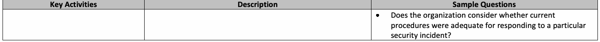
抽出したテキスト（原本と未照合・参考）
| Key Activities | Description | Sample Questions |
| • Does the organization consider whether current procedures were adequate for responding to a particular security incident? |
抽出したテキストの訳（原本と未照合・参考）
| 主な活動 | 説明 | 例示的な質問 |
| • 特定のセキュリティインシデントへの対応に、現在の手順で十分だったかを組織は検討しているか。 |
5.1.7. Contingency Plan (§ 164.308(a)(7))72
5.1.7. 緊急時対応計画（§ 164.308(a)(7)）72
未レビュー訳HIPAA Standard: Establish (and implement as needed) policies and procedures for responding to an emergency or other occurrence (for example, fire, vandalism, system failure, and natural disaster) that damages systems that contain electronic protected health information.
HIPAA基準：電子保護対象保健情報を含むシステムに損害を与える緊急事態またはその他の事象（火災、破壊行為、システム障害、自然災害など）に対応する方針および手順を確立し、必要に応じて実施する。
Table 14. Key activities, descriptions, and sample questions for the Contingency Plan standard
表14.「緊急時対応計画」基準に関する主な活動、説明、例示的な質問
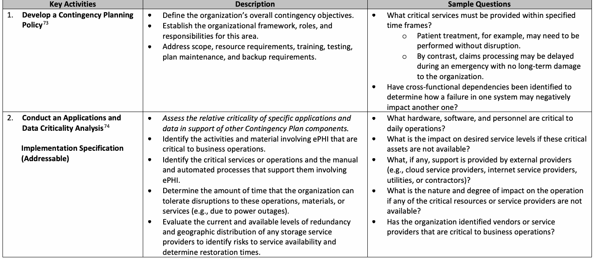
抽出したテキスト（原本と未照合・参考）
| Key Activities | Description | Sample Questions |
| 1. Develop a Contingency Planning Policy73 | • Define the organization’s overall contingency objectives. • Establish the organizational framework, roles, and responsibilities for this area. • Address scope, resource requirements, training, testing, plan maintenance, and backup requirements. | • What critical services must be provided within specified time frames? Patient treatment, for example, may need to be o performed without disruption. By contrast, claims processing may be delayed o during an emergency with no long-term damage to the organization. • Have cross-functional dependencies been identified to determine how a failure in one system may negatively impact another one? |
| 2. Conduct an Applications and Data Criticality Analysis74 Implementation Specification (Addressable) | • Assess the relative criticality of specific applications and data in support of other Contingency Plan components. • Identify the activities and material involving ePHI that are critical to business operations. • Identify the critical services or operations and the manual and automated processes that support them involving ePHI. • Determine the amount of time that the organization can tolerate disruptions to these operations, materials, or services (e.g., due to power outages). • Evaluate the current and available levels of redundancy and geographic distribution of any storage service providers to identify risks to service availability and determine restoration times. | • What hardware, software, and personnel are critical to daily operations? • What is the impact on desired service levels if these critical assets are not available? • What, if any, support is provided by external providers (e.g., cloud service providers, internet service providers, utilities, or contractors)? • What is the nature and degree of impact on the operation if any of the critical resources or service providers are not available? • Has the organization identified vendors or service providers that are critical to business operations? |
抽出したテキストの訳（原本と未照合・参考）
| 主な活動 | 説明 | 例示的な質問 |
| 1. 緊急時対応計画の方針を策定する73 | • 組織全体の緊急時対応目標を定める。 • この領域に関する組織の枠組み、役割、責任を確立する。 • 対象範囲、必要なリソース、研修、試験、計画の維持、バックアップの要件を扱う。 | • 定められた時間内に提供しなければならない重要サービスは何か。例えば、患者の治療は中断せずに o 実施する必要がある場合がある。一方、請求処理は緊急時に遅れても、組織に長期的な損害が生じない o 場合がある。 • システム間の障害が相互に及ぼす悪影響を把握するため、部門横断的な依存関係を特定したか。 |
| 2. アプリケーションおよびデータの重要度を分析する74 実施仕様（対応可能） | • 他の緊急時対応計画要素を支援するため、特定のアプリケーションおよびデータの相対的な重要度を評価する。 • 業務運営に不可欠な、ePHIに関わる活動と資材を特定する。 • ePHIに関わる重要サービスまたは業務と、それらを支える手動および自動プロセスを特定する。 • 停電などによるこれらの業務、資材、サービスの中断を組織が許容できる時間を判断する。 • 現在および利用可能な冗長化水準と、ストレージサービスプロバイダーの地理的分散を評価し、サービス可用性に関するリスクを特定するとともに復旧時間を判断する。 | • 日常業務に不可欠なハードウェア、ソフトウェア、職員は何か。 • これらの重要資産を利用できない場合、望ましいサービス水準にどのような影響があるか。 • 外部プロバイダー（クラウドサービスプロバイダー、インターネットサービスプロバイダー、公益事業者、請負業者など）は、どのような支援を提供しているか。 • 重要なリソースまたはサービスプロバイダーを利用できない場合、業務にどのような影響がどの程度及ぶか。 • 業務運営に不可欠なベンダーまたはサービスプロバイダーを特定したか。 |
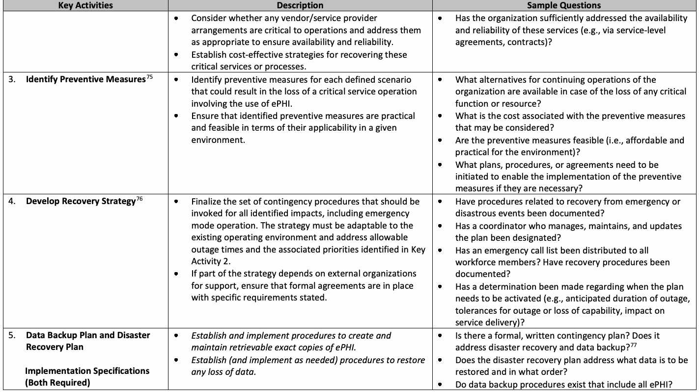
抽出したテキスト（原本と未照合・参考）
| Key Activities | Description | Sample Questions |
| • Consider whether any vendor/service provider arrangements are critical to operations and address them as appropriate to ensure availability and reliability. • Establish cost-effective strategies for recovering these critical services or processes. | • Has the organization sufficiently addressed the availability and reliability of these services (e.g., via service-level agreements, contracts)? | |
| 3. Identify Preventive Measures75 | • Identify preventive measures for each defined scenario that could result in the loss of a critical service operation involving the use of ePHI. • Ensure that identified preventive measures are practical and feasible in terms of their applicability in a given environment. | • What alternatives for continuing operations of the organization are available in case of the loss of any critical function or resource? • What is the cost associated with the preventive measures that may be considered? • Are the preventive measures feasible (i.e., affordable and practical for the environment)? • What plans, procedures, or agreements need to be initiated to enable the implementation of the preventive measures if they are necessary? |
| 4. Develop Recovery Strategy76 | • Finalize the set of contingency procedures that should be invoked for all identified impacts, including emergency mode operation. The strategy must be adaptable to the existing operating environment and address allowable outage times and the associated priorities identified in Key Activity 2. • If part of the strategy depends on external organizations for support, ensure that formal agreements are in place with specific requirements stated. | • Have procedures related to recovery from emergency or disastrous events been documented? • Has a coordinator who manages, maintains, and updates the plan been designated? • Has an emergency call list been distributed to all workforce members? Have recovery procedures been documented? • Has a determination been made regarding when the plan needs to be activated (e.g., anticipated duration of outage, tolerances for outage or loss of capability, impact on service delivery)? |
| 5. Data Backup Plan and Disaster Recovery Plan Implementation Specifications (Both Required) | • Establish and implement procedures to create and maintain retrievable exact copies of ePHI. • Establish (and implement as needed) procedures to restore any loss of data. | • Is there a formal, written contingency plan? Does it address disaster recovery and data backup?77 • Does the disaster recovery plan address what data is to be restored and in what order? • Do data backup procedures exist that include all ePHI? |
抽出したテキストの訳（原本と未照合・参考）
| 主な活動 | 説明 | 例示的な質問 |
| • ベンダー／サービスプロバイダーとの契約が業務に不可欠かを検討し、可用性と信頼性を確保するため、適切な対応を行う。 • 重要なサービスまたはプロセスを復旧する、費用対効果の高い方策を確立する。 | • サービスレベル契約や契約書などを通じて、これらのサービスの可用性と信頼性に十分対処したか。 | |
| 3. 予防策を特定する75 | • ePHIを使用する重要業務サービスの喪失につながる各シナリオについて、予防策を特定する。 • 特定した予防策が、特定の環境への適用において実用的かつ実現可能であることを確認する。 | • 重要な機能またはリソースを失った場合に、組織の業務を継続するためにどのような代替策があるか。 • 検討する予防策の費用はいくらか。 • 予防策は実現可能か（当該環境で負担可能かつ実用的か）。 • 必要な場合に予防策を実施できるようにするため、どのような計画、手順、契約を開始する必要があるか。 |
| 4. 復旧戦略を策定する76 | • 緊急モード運用を含め、特定したすべての影響に対して発動する緊急時対応手順一式を確定する。戦略は既存の運用環境に適応でき、主な活動2で特定した許容停止時間と関連する優先順位に対処しなければならない。 • 戦略の一部で外部組織の支援に依存する場合、具体的な要件を定めた正式な契約があることを確認する。 | • 緊急事態または災害からの復旧に関する手順を文書化したか。 • 計画を管理、維持、更新する調整担当者を指名したか。 • 緊急連絡先一覧をすべての職員に配布したか。復旧手順を文書化したか。 • 計画を発動する時点（停止の予想期間、停止または機能喪失に対する許容度、サービス提供への影響など）を判断したか。 |
| 5. データバックアップ計画および災害復旧計画 実施仕様（いずれも必須） | • ePHIの正確な複製を作成し、取得可能な状態に保つ手順を確立して実施する。 • データの損失を復旧するための手順を確立し、必要に応じて実施する。 | • 正式な書面による緊急時対応計画があるか。災害復旧とデータバックアップに対応しているか。77 • 災害復旧計画では、復元対象のデータとその順序を定めているか。 • すべてのePHIを含むデータバックアップ手順があるか。 |
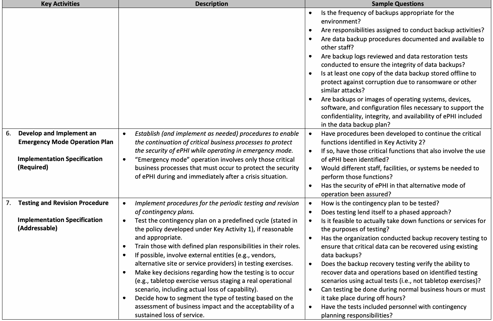
抽出したテキスト（原本と未照合・参考）
| Key Activities | Description | Sample Questions |
| • Is the frequency of backups appropriate for the environment? • Are responsibilities assigned to conduct backup activities? • Are data backup procedures documented and available to other staff? • Are backup logs reviewed and data restoration tests conducted to ensure the integrity of data backups? • Is at least one copy of the data backup stored offline to protect against corruption due to ransomware or other similar attacks? • Are backups or images of operating systems, devices, software, and configuration files necessary to support the confidentiality, integrity, and availability of ePHI included in the data backup plan? | ||
| 6. Develop and Implement an Emergency Mode Operation Plan Implementation Specification (Required) | • Establish (and implement as needed) procedures to enable the continuation of critical business processes to protect the security of ePHI while operating in emergency mode. • “Emergency mode” operation involves only those critical business processes that must occur to protect the security of ePHI during and immediately after a crisis situation. | • Have procedures been developed to continue the critical functions identified in Key Activity 2? • If so, have those critical functions that also involve the use of ePHI been identified? • Would different staff, facilities, or systems be needed to perform those functions? • Has the security of ePHI in that alternative mode of operation been assured? |
| 7. Testing and Revision Procedure Implementation Specification (Addressable) | • Implement procedures for the periodic testing and revision of contingency plans. • Test the contingency plan on a predefined cycle (stated in the policy developed under Key Activity 1), if reasonable and appropriate. • Train those with defined plan responsibilities in their roles. • If possible, involve external entities (e.g., vendors, alternative site or service providers) in testing exercises. • Make key decisions regarding how the testing is to occur (e.g., tabletop exercise versus staging a real operational scenario, including actual loss of capability). • Decide how to segment the type of testing based on the assessment of business impact and the acceptability of a sustained loss of service. | • How is the contingency plan to be tested? • Does testing lend itself to a phased approach? • Is it feasible to actually take down functions or services for the purposes of testing? • Has the organization conducted backup recovery testing to ensure that critical data can be recovered using existing data backups? • Does the backup recovery testing verify the ability to recover data and operations based on identified testing scenarios using actual tests (i.e., not tabletop exercises)? • Can testing be done during normal business hours or must it take place during off hours? • Have the tests included personnel with contingency planning responsibilities? |
抽出したテキストの訳（原本と未照合・参考）
| 主な活動 | 説明 | 例示的な質問 |
| • バックアップの頻度は環境に適しているか。 • バックアップ活動の責任者を割り当てたか。 • データバックアップ手順を文書化し、他の職員が利用できるようにしているか。 • バックアップの完全性を確保するため、バックアップログをレビューし、データ復元試験を実施しているか。 • ランサムウェアその他同様の攻撃による破損を防ぐため、バックアップデータの少なくとも1つの複製をオフラインで保管しているか。 • ePHIの機密性、完全性、可用性を支えるために必要なオペレーティングシステム、機器、ソフトウェア、構成ファイルのバックアップまたはイメージをデータバックアップ計画に含めているか。 | ||
| 6. 緊急モード運用計画を策定して実施する 実施仕様（必須） | • 緊急モードで運用している間もePHIのセキュリティを保護できるよう、重要な業務プロセスを継続するための手順を確立し、必要に応じて実施する。 • 「緊急モード」運用では、危機的状況の発生中および直後にePHIのセキュリティを保護するために実施しなければならない重要な業務プロセスのみを行う。 | • 主な活動2で特定した重要機能を継続する手順を策定したか。 • 策定した場合、そのうちePHIの使用を伴う重要機能を特定したか。 • それらの機能を実施するために、別の職員、施設、システムが必要か。 • 代替の運用モードにおけるePHIのセキュリティを確保したか。 |
| 7. 試験および改訂の手順 実施仕様（対応可能） | • 緊急時対応計画を定期的に試験し改訂する手順を実施する。 • 合理的かつ適切な場合、主な活動1で作成した方針に定める事前設定の周期で緊急時対応計画を試験する。 • 計画上の役割を定められた担当者に、その役割について研修を行う。 • 可能な場合、試験演習に外部組織（ベンダー、代替施設またはサービスの提供者など）を加える。 • 試験方法（机上演習か、実際に機能を失う状況を含めた実運用シナリオの実施かなど）に関する重要な判断を行う。 • 業務影響の評価と継続的なサービス停止の許容度に基づき、試験の種類をどのように分けるかを決定する。 | • 緊急時対応計画をどのように試験するか。 • 試験を段階的に進められるか。 • 試験のために機能またはサービスを実際に停止することは可能か。 • 既存のバックアップデータを使用して重要データを復旧できることを確かめるため、バックアップ復旧試験を実施したか。 • バックアップ復旧試験では、机上演習ではなく実試験を用い、特定した試験シナリオに基づいてデータおよび業務を復旧できることを検証しているか。 • 試験は通常の営業時間内に実施できるか、それとも営業時間外に行わなければならないか。 • 試験に、緊急時対応計画の責任を持つ職員を含めたか。 |
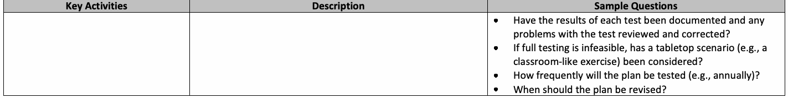
抽出したテキスト（原本と未照合・参考）
| Key Activities | Description | Sample Questions |
| • Have the results of each test been documented and any problems with the test reviewed and corrected? • If full testing is infeasible, has a tabletop scenario (e.g., a classroom-like exercise) been considered? • How frequently will the plan be tested (e.g., annually)? • When should the plan be revised? |
抽出したテキストの訳（原本と未照合・参考）
| 主な活動 | 説明 | 例示的な質問 |
| • 各試験の結果を文書化し、試験の問題をレビューして是正したか。 • 全面的な試験が実施不可能な場合、机上シナリオ（教室形式の演習など）を検討したか。 • 計画をどのくらいの頻度で試験するか（年1回など）。 • 計画をいつ改訂するか。 |
5.1.8. Evaluation (§ 164.308(a)(8))78
5.1.8. 評価（§ 164.308(a)(8)）78
未レビュー訳HIPAA Standard: Perform a periodic technical and nontechnical evaluation, based initially upon the standards implemented under this rule and subsequently, in response to environmental or operational changes affecting the security of electronic protected health information, that establishes the extent to which a covered entity’s or business associate’s security policies and procedures meet the requirements of this subpart.
HIPAA基準：まず本規則に基づいて実施した基準を評価の基礎とし、その後は電子保護対象保健情報のセキュリティに影響する環境または運用の変化に応じて、技術的および非技術的な評価を定期的に実施する。この評価により、対象事業体または業務提携先のセキュリティ方針および手順が本サブパートの要件をどの程度満たすかを明らかにする。
Table 15. Key activities, descriptions, and sample questions for the Evaluation standard
表15.「評価」基準に関する主な活動、説明、例示的な質問
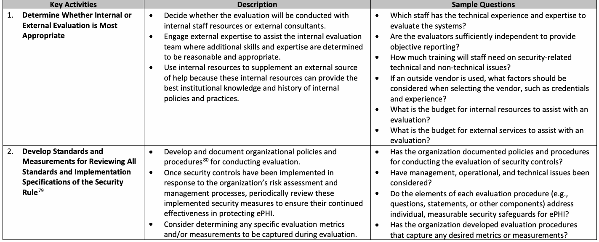
抽出したテキスト（原本と未照合・参考）
| Key Activities | Description | Sample Questions |
| 1. Determine Whether Internal or External Evaluation is Most Appropriate | • Decide whether the evaluation will be conducted with internal staff resources or external consultants. • Engage external expertise to assist the internal evaluation team where additional skills and expertise are determined to be reasonable and appropriate. • Use internal resources to supplement an external source of help because these internal resources can provide the best institutional knowledge and history of internal policies and practices. | • Which staff has the technical experience and expertise to evaluate the systems? • Are the evaluators sufficiently independent to provide objective reporting? • How much training will staff need on security-related technical and non-technical issues? • If an outside vendor is used, what factors should be considered when selecting the vendor, such as credentials and experience? • What is the budget for internal resources to assist with an evaluation? • What is the budget for external services to assist with an evaluation? |
| 2. Develop Standards and Measurements for Reviewing All Standards and Implementation Specifications of the Security Rule79 | • Develop and document organizational policies and procedures80 for conducting evaluation. • Once security controls have been implemented in response to the organization’s risk assessment and management processes, periodically review these implemented security measures to ensure their continued effectiveness in protecting ePHI. • Consider determining any specific evaluation metrics and/or measurements to be captured during evaluation. | • Has the organization documented policies and procedures for conducting the evaluation of security controls? • Have management, operational, and technical issues been considered? • Do the elements of each evaluation procedure (e.g., questions, statements, or other components) address individual, measurable security safeguards for ePHI? • Has the organization developed evaluation procedures that capture any desired metrics or measurements? |
抽出したテキストの訳（原本と未照合・参考）
| 主な活動 | 説明 | 例示的な質問 |
| 1. 内部評価と外部評価のどちらが最適かを判断する | • 内部職員のリソースまたは外部コンサルタントのいずれを用いて評価を実施するかを決定する。 • 追加の技能および専門知識の活用が合理的かつ適切と判断される場合、内部評価チームを支援する外部専門家を起用する。 • 外部支援を利用する場合でも、組織の制度的な知識や内部方針・慣行の経緯を最もよく把握している内部リソースを補完的に活用する。 | • システムを評価する技術的経験および専門知識を持つ職員は誰か。 • 評価担当者は、客観的な報告を行えるだけの独立性を備えているか。 • セキュリティ関連の技術的および非技術的課題について、職員にはどの程度の研修が必要か。 • 外部ベンダーを利用する場合、資格や経験など、選定時にどのような要素を考慮するか。 • 評価を支援する内部リソースの予算はいくらか。 • 評価を支援する外部サービスの予算はいくらか。 |
| 2. セキュリティ規則のすべての基準および実施仕様をレビューするための基準と測定方法を策定する79 | • 評価を実施するための組織の方針および手順80を策定し、文書化する。 • 組織のリスク評価および管理プロセスに対応してセキュリティ管理策を実施した後、それらがePHIを保護する有効性を維持しているかを確認するため、定期的にレビューする。 • 評価中に収集する特定の評価指標および／または測定方法の設定を検討する。 | • セキュリティ管理策の評価を実施する方針および手順を文書化したか。 • 管理的、運用的、技術的な問題を検討したか。 • 各評価手順の要素（質問、記述、その他の構成要素など）は、個別に測定可能なePHIの安全措置を対象としているか。 • 希望する評価指標または測定値を収集する評価手順を策定したか。 |
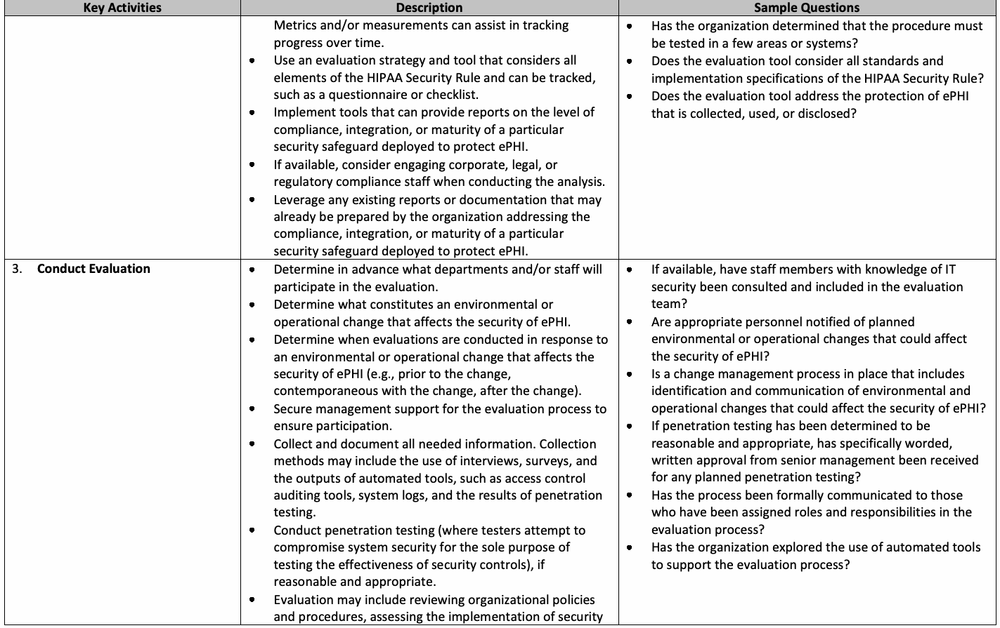
抽出したテキスト（原本と未照合・参考）
| Key Activities | Description | Sample Questions |
| Metrics and/or measurements can assist in tracking progress over time. • Use an evaluation strategy and tool that considers all elements of the HIPAA Security Rule and can be tracked, such as a questionnaire or checklist. • Implement tools that can provide reports on the level of compliance, integration, or maturity of a particular security safeguard deployed to protect ePHI. • If available, consider engaging corporate, legal, or regulatory compliance staff when conducting the analysis. • Leverage any existing reports or documentation that may already be prepared by the organization addressing the compliance, integration, or maturity of a particular security safeguard deployed to protect ePHI. | • Has the organization determined that the procedure must be tested in a few areas or systems? • Does the evaluation tool consider all standards and implementation specifications of the HIPAA Security Rule? • Does the evaluation tool address the protection of ePHI that is collected, used, or disclosed? | |
| 3. Conduct Evaluation | • Determine in advance what departments and/or staff will participate in the evaluation. • Determine what constitutes an environmental or operational change that affects the security of ePHI. • Determine when evaluations are conducted in response to an environmental or operational change that affects the security of ePHI (e.g., prior to the change, contemporaneous with the change, after the change). • Secure management support for the evaluation process to ensure participation. • Collect and document all needed information. Collection methods may include the use of interviews, surveys, and the outputs of automated tools, such as access control auditing tools, system logs, and the results of penetration testing. • Conduct penetration testing (where testers attempt to compromise system security for the sole purpose of testing the effectiveness of security controls), if reasonable and appropriate. • Evaluation may include reviewing organizational policies and procedures, assessing the implementation of security | • If available, have staff members with knowledge of IT security been consulted and included in the evaluation team? • Are appropriate personnel notified of planned environmental or operational changes that could affect the security of ePHI? • Is a change management process in place that includes identification and communication of environmental and operational changes that could affect the security of ePHI? • If penetration testing has been determined to be reasonable and appropriate, has specifically worded, written approval from senior management been received for any planned penetration testing? • Has the process been formally communicated to those who have been assigned roles and responsibilities in the evaluation process? • Has the organization explored the use of automated tools to support the evaluation process? |
抽出したテキストの訳（原本と未照合・参考）
| 主な活動 | 説明 | 例示的な質問 |
| 評価指標および／または測定値は、経時的な進捗の追跡に役立つ。 • HIPAAセキュリティ規則のすべての要素を考慮し、アンケートやチェックリストなど、追跡可能な評価戦略およびツールを使用する。 • ePHIの保護に導入した個別の安全措置について、準拠状況、統合度、成熟度を報告できるツールを導入する。 • 利用可能な場合は、分析の実施にあたり、企業法務または規制準拠の担当者を参加させることを検討する。 • ePHIの保護に導入した個別の安全措置の準拠状況、統合度、成熟度に関して、組織がすでに作成している報告書や文書を活用する。 | • 手順を一部の領域またはシステムで試験する必要があると判断したか。 • 評価ツールは、HIPAAセキュリティ規則のすべての基準および実施仕様を考慮しているか。 • 評価ツールは、収集、使用、または開示されるePHIの保護を扱っているか。 | |
| 3. 評価を実施する | • 評価に参加する部門および／または職員を事前に決定する。 • ePHIのセキュリティに影響する環境または運用の変化に該当するものを決定する。 • ePHIのセキュリティに影響する環境または運用の変化に応じた評価を、いつ実施するか（変化前、変化と同時、変化後など）を決定する。 • 参加を確保できるよう、評価プロセスに対する経営陣の支援を得る。 • 必要な情報をすべて収集して文書化する。収集方法には、聞き取り、アンケート、アクセス制御監査ツール、システムログ、侵入テスト結果など、自動化ツールの出力の利用が含まれる。 • 合理的かつ適切な場合、セキュリティ管理策の有効性のみを試験する目的で、テスターがシステムのセキュリティ侵害を試みる侵入テストを実施する。 • 評価には、組織の方針および手順のレビュー、セキュリティ管理策の実施状況の評価、 | • 利用可能な場合、ITセキュリティの知識を持つ職員に相談し、評価チームに加えたか。 • ePHIのセキュリティに影響する可能性がある環境または運用の変更計画について、適切な職員に知らせているか。 • ePHIのセキュリティに影響する環境および運用の変化の特定と連絡を含む変更管理プロセスがあるか。 • 侵入テストが合理的かつ適切と判断された場合、計画された侵入テストについて、上級幹部から具体的な文言を含む書面による承認を得たか。 • 評価プロセスの役割と責任を割り当てられた者に、そのプロセスを正式に伝達したか。 • 評価プロセスを支援する自動化ツールの利用を検討したか。 |
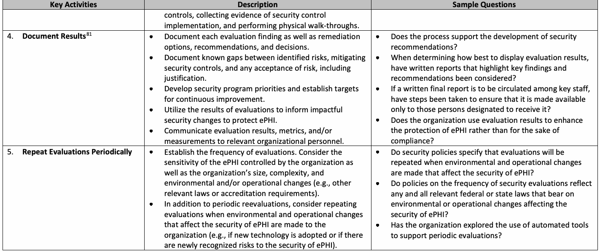
抽出したテキスト（原本と未照合・参考）
| Key Activities | Description | Sample Questions |
| controls, collecting evidence of security control implementation, and performing physical walk-throughs. | ||
| 4. Document Results81 | • Document each evaluation finding as well as remediation options, recommendations, and decisions. • Document known gaps between identified risks, mitigating security controls, and any acceptance of risk, including justification. • Develop security program priorities and establish targets for continuous improvement. • Utilize the results of evaluations to inform impactful security changes to protect ePHI. • Communicate evaluation results, metrics, and/or measurements to relevant organizational personnel. | • Does the process support the development of security recommendations? • When determining how best to display evaluation results, have written reports that highlight key findings and recommendations been considered? • If a written final report is to be circulated among key staff, have steps been taken to ensure that it is made available only to those persons designated to receive it? • Does the organization use evaluation results to enhance the protection of ePHI rather than for the sake of compliance? |
| 5. Repeat Evaluations Periodically | • Establish the frequency of evaluations. Consider the sensitivity of the ePHI controlled by the organization as well as the organization’s size, complexity, and environmental and/or operational changes (e.g., other relevant laws or accreditation requirements). • In addition to periodic reevaluations, consider repeating evaluations when environmental and operational changes that affect the security of ePHI are made to the organization (e.g., if new technology is adopted or if there are newly recognized risks to the security of ePHI). | • Do security policies specify that evaluations will be repeated when environmental and operational changes are made that affect the security of ePHI? • Do policies on the frequency of security evaluations reflect any and all relevant federal or state laws that bear on environmental or operational changes affecting the security of ePHI? • Has the organization explored the use of automated tools to support periodic evaluations? |
抽出したテキストの訳（原本と未照合・参考）
| 主な活動 | 説明 | 例示的な質問 |
| 管理策の実施状況を評価し、セキュリティ管理策の実施証拠を収集し、物理的な現場確認を行うことが含まれる。 | ||
| 4. 結果を文書化する81 | • 各評価結果に加え、是正の選択肢、推奨事項、判断を文書化する。 • 特定したリスク、軽減するセキュリティ管理策、リスク受容の間に既知の隔たりがあれば、根拠を含めて文書化する。 • セキュリティプログラムの優先事項を策定し、継続的改善の目標を設定する。 • ePHIを保護するために有効なセキュリティ変更に、評価結果を活用する。 • 評価結果、評価指標、および／または測定値を、組織内の関係者に伝達する。 | • このプロセスはセキュリティに関する推奨事項の策定を支援するか。 • 評価結果を最適に示す方法を決める際、主な結果と推奨事項をまとめた書面報告書を検討したか。 • 最終報告書を書面で主要職員に配布する場合、指定された受領者だけが入手できるようにする措置を講じたか。 • 組織は準拠のためだけではなく、ePHIの保護を強化するために評価結果を利用しているか。 |
| 5. 評価を定期的に繰り返す | • 評価の頻度を定める。組織が管理するePHIの機微性に加え、組織の規模、複雑さ、環境および／または運用の変化（関連法令や認定要件など）を考慮する。 • 定期的な再評価に加え、ePHIのセキュリティに影響する環境または運用の変化が組織に生じた場合（新技術を採用した場合や、ePHIのセキュリティに関する新たなリスクが認識された場合など）に、評価を繰り返すことを検討する。 | • ePHIのセキュリティに影響する環境または運用の変化が起きた場合に評価を繰り返すことを、セキュリティ方針で定めているか。 • セキュリティ評価の頻度に関する方針は、ePHIのセキュリティに影響する環境または運用の変化に関係する連邦法および州法をすべて反映しているか。 • 定期的な評価を支援する自動化ツールの利用を検討したか。 |
5.1.9. Business Associate Contracts and Other Arrangements (§ 164.308(b)(1))82
5.1.9. 業務提携先との契約およびその他の取り決め（§ 164.308(b)(1)）82
未レビュー訳HIPAA Standard: A covered entity may permit a business associate to create, receive, maintain, or transmit electronic protected health information on the covered entity’s behalf only if the covered entity obtains satisfactory assurances, in accordance with § 164.314(a), that the business associate will appropriately safeguard the information. A covered entity is not required to obtain such satisfactory assurances from a business associate that is a subcontractor.
HIPAA基準：対象事業体は、第164.314(a)条に従い、業務提携先が情報を適切に保護することについて十分な保証を得た場合に限り、対象事業体に代わって電子保護対象保健情報を作成、受領、維持、または伝送することを業務提携先に許可できる。対象事業体は、再委託先である業務提携先から、このような十分な保証を得る必要はない。
Covered entities need to be cognizant of differentiating between best practices versus what the Security Rule requires. Vendor management and supply chain risks are important topics due to the potential they have to introduce new threats and risks to organizations. However, to the extent that such vendors and service providers are business associates, HIPAA treats them the same as covered entities with respect to Security Rule compliance. Covered entities and business associates are required to obtain written satisfactory assurances that PHI will be protected. Covered entities and business associates are permitted to require more of their business associates and even include more stringent cybersecurity requirements in a business associate agreement (BAA). These requirements would need to be agreed upon by both the covered entity and the business associate.
対象事業体は、ベストプラクティスとセキュリティ規則が求める事項を区別することを認識しておく必要がある。ベンダー管理およびサプライチェーンリスクは、組織に新たな脅威やリスクをもたらす可能性があるため、重要な話題である。ただし、こうしたベンダーやサービスプロバイダーが業務提携先に該当する限り、HIPAAはセキュリティ規則への準拠について、それらを対象事業体と同様に扱う。対象事業体および業務提携先は、PHIが保護されることについて、書面による十分な保証を得ることが求められる。対象事業体および業務提携先は、自らの業務提携先に対してより多くを求めることが許されており、業務提携先契約（BAA）に、より厳格なサイバーセキュリティ要件を含めることさえできる。これらの要件については、対象事業体と業務提携先の双方が合意する必要がある。
Table 16. Key activities, descriptions, and sample questions for the Business Associate Contracts and Other Arrangements standard
表16.「業務提携先との契約およびその他の取り決め」基準に関する主な活動、説明、例示的な質問
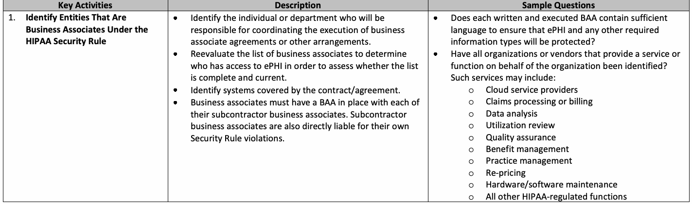
抽出したテキスト（原本と未照合・参考）
| Key Activities | Description | Sample Questions |
| 1. Identify Entities That Are Business Associates Under the HIPAA Security Rule | • Identify the individual or department who will be responsible for coordinating the execution of business associate agreements or other arrangements. • Reevaluate the list of business associates to determine who has access to ePHI in order to assess whether the list is complete and current. • Identify systems covered by the contract/agreement. • Business associates must have a BAA in place with each of their subcontractor business associates. Subcontractor business associates are also directly liable for their own Security Rule violations. | • Does each written and executed BAA contain sufficient language to ensure that ePHI and any other required information types will be protected? • Have all organizations or vendors that provide a service or function on behalf of the organization been identified? Such services may include: Cloud service providers o Claims processing or billing o Data analysis o Utilization review o Quality assurance o Benefit management o Practice management o Re-pricing o Hardware/software maintenance o All other HIPAA-regulated functions o |
抽出したテキストの訳（原本と未照合・参考）
| 主な活動 | 説明 | 例示的な質問 |
| 1. HIPAAセキュリティ規則における業務提携先の事業体を特定する | • 業務提携先契約またはその他の取り決めの締結を調整する責任者となる個人または部門を特定する。 • 業務提携先の一覧を見直し、誰がePHIにアクセスできるかを確認して、一覧が完全かつ最新であるかを評価する。 • 契約または合意の対象となるシステムを特定する。 • 業務提携先は、それぞれの再委託先である業務提携先とBAAを締結しなければならない。再委託先である業務提携先も、自らのセキュリティ規則違反について直接責任を負う。 | • 締結済みの各書面によるBAAには、ePHIおよび保護が必要なその他の情報種別を確実に保護するのに十分な条項が含まれているか。 • 組織に代わってサービスまたは機能を提供するすべての組織またはベンダーを特定したか。対象となるサービスには、次のものがある。 ○ クラウドサービスプロバイダー ○ 請求処理または請求事務 ○ データ分析 ○ 利用状況審査 ○ 品質保証 ○ 給付管理 ○ 診療管理 ○ 価格再設定 ○ ハードウェア／ソフトウェアの保守 ○ HIPAAの規制対象となるその他すべての機能 |
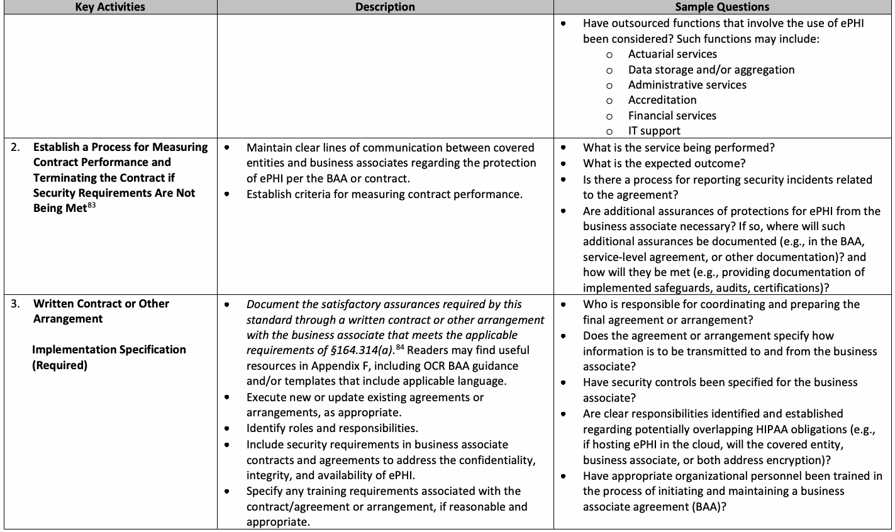
抽出したテキスト（原本と未照合・参考）
| Key Activities | Description | Sample Questions |
| • Have outsourced functions that involve the use of ePHI been considered? Such functions may include: Actuarial services o Data storage and/or aggregation o Administrative services o Accreditation o Financial services o IT support o | ||
| 2. Establish a Process for Measuring Contract Performance and Terminating the Contract if Security Requirements Are Not Being Met83 | • Maintain clear lines of communication between covered entities and business associates regarding the protection of ePHI per the BAA or contract. • Establish criteria for measuring contract performance. | • What is the service being performed? • What is the expected outcome? • Is there a process for reporting security incidents related to the agreement? • Are additional assurances of protections for ePHI from the business associate necessary? If so, where will such additional assurances be documented (e.g., in the BAA, service-level agreement, or other documentation)? and how will they be met (e.g., providing documentation of implemented safeguards, audits, certifications)? |
| 3. Written Contract or Other Arrangement Implementation Specification (Required) | • Document the satisfactory assurances required by this standard through a written contract or other arrangement with the business associate that meets the applicable requirements of §164.314(a).84 Readers may find useful resources in Appendix F, including OCR BAA guidance and/or templates that include applicable language. • Execute new or update existing agreements or arrangements, as appropriate. • Identify roles and responsibilities. • Include security requirements in business associate contracts and agreements to address the confidentiality, integrity, and availability of ePHI. • Specify any training requirements associated with the contract/agreement or arrangement, if reasonable and appropriate. | • Who is responsible for coordinating and preparing the final agreement or arrangement? • Does the agreement or arrangement specify how information is to be transmitted to and from the business associate? • Have security controls been specified for the business associate? • Are clear responsibilities identified and established regarding potentially overlapping HIPAA obligations (e.g., if hosting ePHI in the cloud, will the covered entity, business associate, or both address encryption)? • Have appropriate organizational personnel been trained in the process of initiating and maintaining a business associate agreement (BAA)? |
抽出したテキストの訳（原本と未照合・参考）
| 主な活動 | 説明 | 例示的な質問 |
| • ePHIの使用を伴う外部委託機能を検討したか。対象となる機能には、次のものがある。 ○ 保険数理サービス ○ データ保存および／または集約 ○ 管理サービス ○ 認定 ○ 財務サービス ○ ITサポート | ||
| 2. セキュリティ要件が満たされない場合に、契約の履行を測定し、契約を終了するプロセスを確立する83 | • BAAまたは契約に基づくePHIの保護について、対象事業体と業務提携先との明確な連絡経路を維持する。 • 契約の履行を測定する基準を確立する。 | • 提供されるサービスは何か。 • 期待される成果は何か。 • 取り決めに関連するセキュリティインシデントを報告するプロセスがあるか。 • 業務提携先にePHIの保護に関する追加保証を求める必要があるか。必要な場合、その追加保証をどこに記録するか（BAA、サービスレベル契約、その他の文書など）。また、どのように満たすか（実施済みの安全措置に関する文書、監査、認証など）。 |
| 3. 書面による契約またはその他の取り決め 実施仕様（必須） | • 第164.314(a)条の該当要件を満たす、業務提携先との書面による契約またはその他の取り決めを通じて、本基準が求める十分な保証を文書化する。84 付録Fには、OCRのBAA指針および／または該当条項を含むひな型など、有用な資料がある。 • 必要に応じて新しい契約または取り決めを締結するか、既存のものを更新する。 • 役割と責任を特定する。 • ePHIの機密性、完全性、可用性に対処するため、業務提携先との契約および合意にセキュリティ要件を含める。 • 合理的かつ適切な場合、契約または取り決めに関連する研修要件を定める。 | • 最終的な契約または取り決めの調整と作成に責任を負うのは誰か。 • 業務提携先との間で情報をどのように伝送するかを、契約または取り決めに明記しているか。 • 業務提携先に対するセキュリティ管理策を定めたか。 • HIPAA上の義務が重複する可能性（ePHIをクラウドでホストする場合に暗号化を対象事業体、業務提携先、または双方のどちらが担当するかなど）について、明確な責任を特定し、定めたか。 • 業務提携先契約（BAA）の開始および維持のプロセスについて、関係する組織職員に研修を実施したか。 |
5.2. Physical Safeguards
5.2. 物理的安全措置
5.2.1. Facility Access Controls (§ 164.310(a))85
5.2.1. 施設アクセス制御（§ 164.310(a)）85
未レビュー訳HIPAA Standard: Implement policies and procedures to limit physical access to its electronic information systems and the facility or facilities in which they are housed, while ensuring that properly authorized access is allowed.
HIPAA基準：電子情報システムおよびそれらを収容する施設への物理的なアクセスを制限する方針および手順を実施するとともに、適切に承認されたアクセスを許可する。
Table 17. Key activities, descriptions, and sample questions for the Facility Access Controls standard
表17.「施設アクセス制御」基準に関する主な活動、説明、例示的な質問
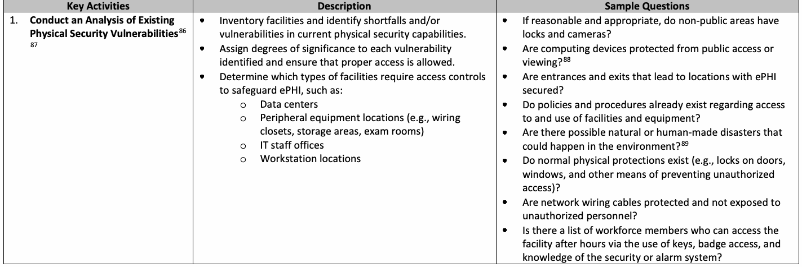
抽出したテキスト（原本と未照合・参考）
| Key Activities | Description | Sample Questions |
| 1. Conduct an Analysis of Existing Physical Security Vulnerabilities86 87 | • Inventory facilities and identify shortfalls and/or vulnerabilities in current physical security capabilities. • Assign degrees of significance to each vulnerability identified and ensure that proper access is allowed. • Determine which types of facilities require access controls to safeguard ePHI, such as: Data centers o Peripheral equipment locations (e.g., wiring o closets, storage areas, exam rooms) IT staff offices o Workstation locations o | • If reasonable and appropriate, do non-public areas have locks and cameras? • Are computing devices protected from public access or viewing?88 • Are entrances and exits that lead to locations with ePHI secured? • Do policies and procedures already exist regarding access to and use of facilities and equipment? • Are there possible natural or human-made disasters that could happen in the environment?89 • Do normal physical protections exist (e.g., locks on doors, windows, and other means of preventing unauthorized access)? • Are network wiring cables protected and not exposed to unauthorized personnel? • Is there a list of workforce members who can access the facility after hours via the use of keys, badge access, and knowledge of the security or alarm system? |
抽出したテキストの訳（原本と未照合・参考）
| 主な活動 | 説明 | 例示的な質問 |
| 1. 既存の物理的セキュリティ上の脆弱性を分析する86 87 | • 施設を棚卸しし、現在の物理的セキュリティ能力における不足および／または脆弱性を特定する。 • 特定した各脆弱性の重大度を割り当て、適切なアクセスが許可されるようにする。 • ePHIを保護するためアクセス制御が必要な施設の種類を決定する。例： ○ データセンター ○ 周辺機器の設置場所（配線室、保管場所、診察室など） ○ IT職員のオフィス ○ ワークステーションの設置場所 | • 合理的かつ適切な場合、非公開区域に錠や監視カメラが設置されているか。 • コンピューター機器を公衆によるアクセスまたは覗き見から保護しているか。88 • ePHIのある場所につながる入口および出口を安全に管理しているか。 • 施設および設備へのアクセスと使用に関する方針および手順がすでにあるか。 • 環境内で発生する可能性のある自然災害または人為的災害があるか。89 • 鍵、窓の施錠など、不正アクセスを防ぐ通常の物理的保護策があるか。 • ネットワークの配線を保護し、権限のない職員が触れられないようにしているか。 • 鍵、バッジによるアクセス、およびセキュリティシステムや警報システムの知識を使って、営業時間外に施設へアクセスできる職員の一覧があるか。 |
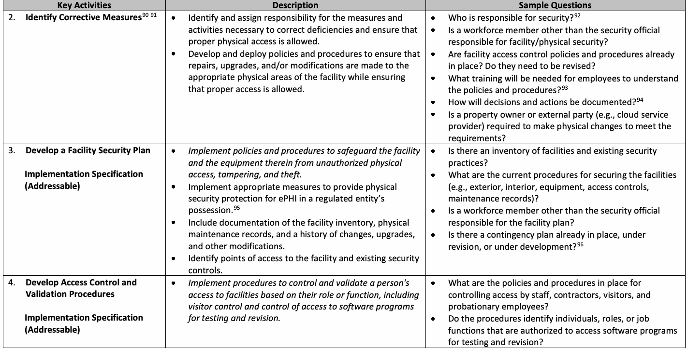
抽出したテキスト（原本と未照合・参考）
| Key Activities | Description | Sample Questions |
| 2. Identify Corrective Measures90 91 | • Identify and assign responsibility for the measures and activities necessary to correct deficiencies and ensure that proper physical access is allowed. • Develop and deploy policies and procedures to ensure that repairs, upgrades, and/or modifications are made to the appropriate physical areas of the facility while ensuring that proper access is allowed. | • Who is responsible for security?92 • Is a workforce member other than the security official responsible for facility/physical security? • Are facility access control policies and procedures already in place? Do they need to be revised? • What training will be needed for employees to understand the policies and procedures?93 • How will decisions and actions be documented?94 • Is a property owner or external party (e.g., cloud service provider) required to make physical changes to meet the requirements? |
| 3. Develop a Facility Security Plan Implementation Specification (Addressable) | • Implement policies and procedures to safeguard the facility and the equipment therein from unauthorized physical access, tampering, and theft. • Implement appropriate measures to provide physical security protection for ePHI in a regulated entity’s possession.95 • Include documentation of the facility inventory, physical maintenance records, and a history of changes, upgrades, and other modifications. • Identify points of access to the facility and existing security controls. | • Is there an inventory of facilities and existing security practices? • What are the current procedures for securing the facilities (e.g., exterior, interior, equipment, access controls, maintenance records)? • Is a workforce member other than the security official responsible for the facility plan? • Is there a contingency plan already in place, under revision, or under development?96 |
| 4. Develop Access Control and Validation Procedures Implementation Specification (Addressable) | • Implement procedures to control and validate a person's access to facilities based on their role or function, including visitor control and control of access to software programs for testing and revision. | • What are the policies and procedures in place for controlling access by staff, contractors, visitors, and probationary employees? • Do the procedures identify individuals, roles, or job functions that are authorized to access software programs for testing and revision? |
抽出したテキストの訳（原本と未照合・参考）
| 主な活動 | 説明 | 例示的な質問 |
| 2. 是正措置を特定する90 91 | • 不備を是正し、適切な物理的アクセスを確保するために必要な措置および活動を特定し、その責任を割り当てる。 • 適切なアクセスを確保しつつ、施設内の適切な物理的区域で修理、更新、および／または変更を行うための方針および手順を策定して展開する。 | • セキュリティに責任を負うのは誰か。92 • セキュリティ責任者以外に、施設／物理的セキュリティに責任を負う職員がいるか。 • 施設アクセス制御の方針および手順はすでに整備されているか。改訂が必要か。 • 従業員が方針および手順を理解するために、どのような研修が必要か。93 • 判断および措置をどのように文書化するか。94 • 要件を満たすための物理的変更を、施設の所有者または外部関係者（クラウドサービスプロバイダーなど）に求める必要があるか。 |
| 3. 施設セキュリティ計画を策定する 実施仕様（対応可能） | • 不正な物理的アクセス、改ざん、窃盗から施設および施設内の設備を保護する方針および手順を実施する。 • 規制対象機関が保有するePHIに適切な物理的セキュリティ保護策を実施する。95 • 施設の棚卸し、物理的保守記録、変更、更新、その他の修正の履歴を文書に含める。 • 施設へのアクセスポイントと既存のセキュリティ管理策を特定する。 | • 施設および既存のセキュリティ慣行の一覧があるか。 • 施設を安全に保つ現在の手順（外構、屋内、設備、アクセス制御、保守記録など）は何か。 • 施設計画に、セキュリティ責任者以外の職員が責任を負っているか。 • 緊急時対応計画はすでに整備されているか、改訂中か、策定中か。96 |
| 4. アクセス制御および検証手順を策定する 実施仕様（対応可能） | • 役割または職務に基づいて施設への個人のアクセスを制御し、検証する手順を実施する。これには、訪問者の管理、試験および改訂用のソフトウェアプログラムへのアクセス制御を含める。 | • 職員、請負業者、訪問者、試用期間中の従業員のアクセスを制御する方針および手順は何か。 • 試験および改訂用ソフトウェアプログラムへのアクセス権限を持つ個人、役割、または職務を手順で特定しているか。 |
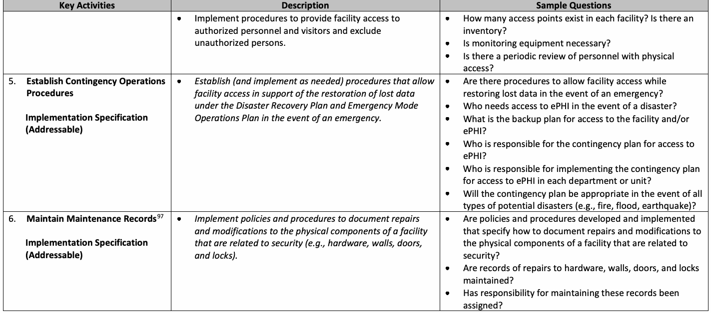
抽出したテキスト（原本と未照合・参考）
| Key Activities | Description | Sample Questions |
| • Implement procedures to provide facility access to authorized personnel and visitors and exclude unauthorized persons. | • How many access points exist in each facility? Is there an inventory? • Is monitoring equipment necessary? • Is there a periodic review of personnel with physical access? | |
| 5. Establish Contingency Operations Procedures Implementation Specification (Addressable) | • Establish (and implement as needed) procedures that allow facility access in support of the restoration of lost data under the Disaster Recovery Plan and Emergency Mode Operations Plan in the event of an emergency. | • Are there procedures to allow facility access while restoring lost data in the event of an emergency? • Who needs access to ePHI in the event of a disaster? • What is the backup plan for access to the facility and/or ePHI? • Who is responsible for the contingency plan for access to ePHI? • Who is responsible for implementing the contingency plan for access to ePHI in each department or unit? • Will the contingency plan be appropriate in the event of all types of potential disasters (e.g., fire, flood, earthquake)? |
| 6. Maintain Maintenance Records97 Implementation Specification (Addressable) | • Implement policies and procedures to document repairs and modifications to the physical components of a facility that are related to security (e.g., hardware, walls, doors, and locks). | • Are policies and procedures developed and implemented that specify how to document repairs and modifications to the physical components of a facility that are related to security? • Are records of repairs to hardware, walls, doors, and locks maintained? • Has responsibility for maintaining these records been assigned? |
抽出したテキストの訳（原本と未照合・参考）
| 主な活動 | 説明 | 例示的な質問 |
| • 権限を付与された職員および訪問者に施設へのアクセスを認め、権限のない者を排除する手順を実施する。 | • 各施設にアクセスポイントはいくつあるか。一覧があるか。 • 監視機器は必要か。 • 物理的なアクセス権を持つ職員を定期的に見直しているか。 | |
| 5. 緊急時運用の手順を確立する 実施仕様（対応可能） | • 緊急時に災害復旧計画および緊急モード運用計画に基づき、失われたデータの復旧を支援する施設へのアクセスを可能にする手順を確立し、必要に応じて実施する。 | • 緊急時に失われたデータを復旧する間、施設へのアクセスを可能にする手順があるか。 • 災害時にePHIへのアクセスが必要な者は誰か。 • 施設および／またはePHIへのアクセスに関するバックアップ計画は何か。 • ePHIへのアクセスに関する緊急時対応計画の責任者は誰か。 • 各部門または単位で、ePHIへのアクセスに関する緊急時対応計画を実施する責任者は誰か。 • 火災、洪水、地震など、起こり得るあらゆる種類の災害に対して緊急時対応計画は適切か。 |
| 6. 保守記録を維持する97 実施仕様（対応可能） | • 施設の物理的構成要素（ハードウェア、壁、扉、錠など）のうち、セキュリティに関係するものの修理および変更を文書化する方針および手順を実施する。 | • セキュリティに関係する施設の物理的構成要素の修理および変更を文書化する方法を定めた方針および手順を策定して実施しているか。 • ハードウェア、壁、扉、錠の修理記録を維持しているか。 • これらの記録を維持する責任者を割り当てたか。 |
5.2.2. Workstation Use (§ 164.310(b))
5.2.2. ワークステーションの使用（§ 164.310(b)）
HIPAA Standard: Implement policies and procedures that specify the proper functions to be performed, the manner in which those functions are to be performed, and the physical attributes of the surroundings of a specific workstation or class of workstation that can access electronic protected health information.
HIPAA基準：電子保護対象保健情報にアクセスする特定のワークステーションまたはワークステーション群について、実行すべき適切な機能、その実行方法、および周囲の物理的環境を定める方針および手順を実施する。
Table 18. Key activities, descriptions, and sample questions for the Workstation Use standard
表18.「ワークステーションの使用」基準に関する主な活動、説明、例示的な質問
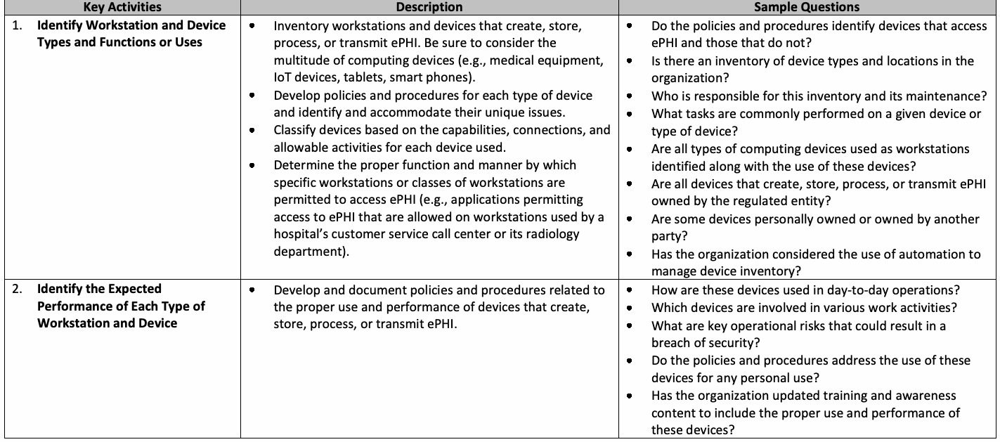
抽出したテキスト（原本と未照合・参考）
| Key Activities | Description | Sample Questions |
| 1. Identify Workstation and Device Types and Functions or Uses | • Inventory workstations and devices that create, store, process, or transmit ePHI. Be sure to consider the multitude of computing devices (e.g., medical equipment, IoT devices, tablets, smart phones). • Develop policies and procedures for each type of device and identify and accommodate their unique issues. • Classify devices based on the capabilities, connections, and allowable activities for each device used. • Determine the proper function and manner by which specific workstations or classes of workstations are permitted to access ePHI (e.g., applications permitting access to ePHI that are allowed on workstations used by a hospital’s customer service call center or its radiology department). | • Do the policies and procedures identify devices that access ePHI and those that do not? • Is there an inventory of device types and locations in the organization? • Who is responsible for this inventory and its maintenance? • What tasks are commonly performed on a given device or type of device? • Are all types of computing devices used as workstations identified along with the use of these devices? • Are all devices that create, store, process, or transmit ePHI owned by the regulated entity? • Are some devices personally owned or owned by another party? • Has the organization considered the use of automation to manage device inventory? |
| 2. Identify the Expected Performance of Each Type of Workstation and Device | • Develop and document policies and procedures related to the proper use and performance of devices that create, store, process, or transmit ePHI. | • How are these devices used in day-to-day operations? • Which devices are involved in various work activities? • What are key operational risks that could result in a breach of security? • Do the policies and procedures address the use of these devices for any personal use? • Has the organization updated training and awareness content to include the proper use and performance of these devices? |
抽出したテキストの訳（原本と未照合・参考）
| 主な活動 | 説明 | 例示的な質問 |
| 1. ワークステーションおよび機器の種類、機能または用途を特定する | • ePHIを作成、保存、処理、または伝送するワークステーションおよび機器を棚卸しする。医療機器、IoT機器、タブレット、スマートフォンなど、多様なコンピューター機器を必ず考慮する。 • 機器の種類ごとに方針および手順を策定し、固有の問題を特定して対応する。 • 使用する各機器について、その機能、接続、許可される活動に基づいて分類する。 • 特定のワークステーションまたはワークステーション群に許可するePHIへのアクセス機能と方法（病院の顧客サービス窓口または放射線科で使うワークステーションで許可される、ePHIへアクセスするアプリケーションなど）を決定する。 | • ePHIにアクセスする機器とアクセスしない機器を、方針および手順で特定しているか。 • 組織内の機器の種類と設置場所の一覧があるか。 • この一覧と維持管理に責任を負うのは誰か。 • 特定の機器または機器の種類で一般に行われる作業は何か。 • ワークステーションとして使われるすべての種類のコンピューター機器を、その用途とともに特定しているか。 • ePHIを作成、保存、処理、または伝送するすべての機器を規制対象機関が所有しているか。 • 個人所有または他者所有の機器があるか。 • 機器の棚卸しに自動化を利用することを検討したか。 |
| 2. 各種類のワークステーションおよび機器に期待される性能を特定する | • ePHIを作成、保存、処理、または伝送する機器の適切な使用方法と性能に関する方針および手順を策定し、文書化する。 | • 日常業務でこれらの機器をどのように使用しているか。 • さまざまな業務活動に関わる機器はどれか。 • セキュリティ侵害につながり得る主な運用上のリスクは何か。 • 機器の個人的な使用について、方針および手順で扱っているか。 • 機器の適切な使用方法と性能を含めるため、研修および意識向上の内容を更新したか。 |
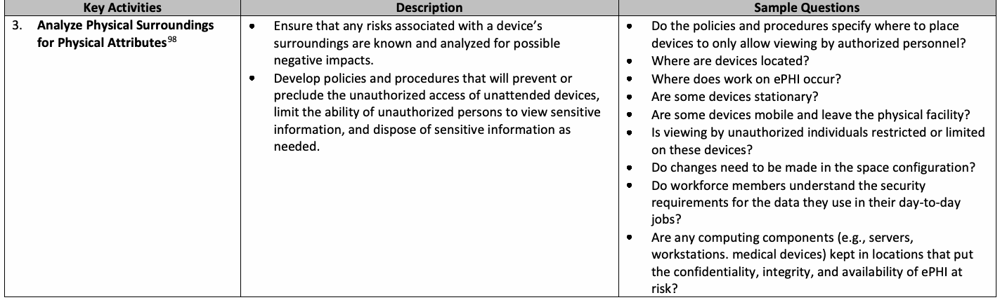
抽出したテキスト（原本と未照合・参考）
| Key Activities | Description | Sample Questions |
| 3. Analyze Physical Surroundings for Physical Attributes98 | • Ensure that any risks associated with a device’s surroundings are known and analyzed for possible negative impacts. • Develop policies and procedures that will prevent or preclude the unauthorized access of unattended devices, limit the ability of unauthorized persons to view sensitive information, and dispose of sensitive information as needed. | • Do the policies and procedures specify where to place devices to only allow viewing by authorized personnel? • Where are devices located? • Where does work on ePHI occur? • Are some devices stationary? • Are some devices mobile and leave the physical facility? • Is viewing by unauthorized individuals restricted or limited on these devices? • Do changes need to be made in the space configuration? • Do workforce members understand the security requirements for the data they use in their day-to-day jobs? • Are any computing components (e.g., servers, workstations. medical devices) kept in locations that put the confidentiality, integrity, and availability of ePHI at risk? |
抽出したテキストの訳（原本と未照合・参考）
| 主な活動 | 説明 | 例示的な質問 |
| 3. 物理的環境の特性を分析する98 | • 機器の周囲環境に関係するリスクを把握し、悪影響の可能性を分析する。 • 無人の機器への不正アクセスを防止または排除し、権限のない者が機微情報を見られる可能性を制限し、必要に応じて機微情報を廃棄するための方針および手順を策定する。 | • 権限を付与された職員だけが機器の画面を見られるよう、機器の設置場所を方針および手順で指定しているか。 • 機器はどこに設置されているか。 • ePHIを扱う業務はどこで行われるか。 • 固定式の機器があるか。 • 施設外へ持ち出される可搬式の機器があるか。 • これらの機器を権限のない者が見ることを制限または禁止しているか。 • 空間の配置を変更する必要があるか。 • 職員は日々の業務で使用するデータのセキュリティ要件を理解しているか。 • ePHIの機密性、完全性、可用性を危険にさらす場所にコンピューター構成要素（サーバー、ワークステーション、医療機器など）を設置していないか。 |
5.2.3. Workstation Security (§ 164.310(c))
5.2.3. ワークステーションのセキュリティ（§ 164.310(c)）
HIPAA Standard: Implement physical safeguards for all workstations that access electronic protected health information, to restrict access to authorized users.
HIPAA基準：電子保護対象保健情報にアクセスするすべてのワークステーションに物理的な安全措置を実施し、権限を付与されたユーザーにアクセスを制限する。
Table 19. Key activities, descriptions, and sample questions for the Workstation Security standard
表19.「ワークステーションのセキュリティ」基準に関する主な活動、説明、例示的な質問
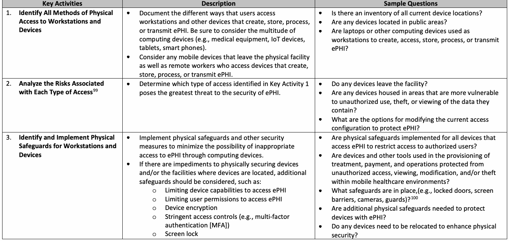
抽出したテキスト（原本と未照合・参考）
| Key Activities | Description | Sample Questions |
| 1. Identify All Methods of Physical Access to Workstations and Devices | • Document the different ways that users access workstations and other devices that create, store, process, or transmit ePHI. Be sure to consider the multitude of computing devices (e.g., medical equipment, IoT devices, tablets, smart phones). • Consider any mobile devices that leave the physical facility as well as remote workers who access devices that create, store, process, or transmit ePHI. | • Is there an inventory of all current device locations? • Are any devices located in public areas? • Are laptops or other computing devices used as workstations to create, access, store, process, or transmit ePHI? |
| 2. Analyze the Risks Associated with Each Type of Access99 | • Determine which type of access identified in Key Activity 1 poses the greatest threat to the security of ePHI. | • Do any devices leave the facility? • Are any devices housed in areas that are more vulnerable to unauthorized use, theft, or viewing of the data they contain? • What are the options for modifying the current access configuration to protect ePHI? |
| 3. Identify and Implement Physical Safeguards for Workstations and Devices | • Implement physical safeguards and other security measures to minimize the possibility of inappropriate access to ePHI through computing devices. • If there are impediments to physically securing devices and/or the facilities where devices are located, additional safeguards should be considered, such as: Limiting device capabilities to access ePHI o Limiting user permissions to access ePHI o Device encryption o Stringent access controls (e.g., multi-factor o authentication [MFA]) Screen lock o | • Are physical safeguards implemented for all devices that access ePHI to restrict access to authorized users? • Are devices and other tools used in the provisioning of treatment, payment, and operations protected from unauthorized access, viewing, modification, and/or theft within mobile healthcare environments? • What safeguards are in place,(e.g., locked doors, screen barriers, cameras, guards)?100 • Are additional physical safeguards needed to protect devices with ePHI? • Do any devices need to be relocated to enhance physical security? |
抽出したテキストの訳（原本と未照合・参考）
| 主な活動 | 説明 | 例示的な質問 |
| 1. ワークステーションおよび機器へのすべての物理的アクセス方法を特定する | • ePHIを作成、保存、処理、または伝送するワークステーションやその他の機器に、ユーザーがさまざまな方法でアクセスする状況を文書化する。医療機器、IoT機器、タブレット、スマートフォンなど、多様なコンピューター機器を必ず考慮する。 • 施設外へ持ち出されるモバイル機器、およびePHIを作成、保存、処理、または伝送する機器にアクセスするリモート勤務者を検討する。 | • 現在使用されているすべての機器の設置場所一覧があるか。 • 公共の場所に設置された機器があるか。 • ePHIの作成、アクセス、保存、処理、伝送に、ノートパソコンまたはその他のコンピューター機器をワークステーションとして使用しているか。 |
| 2. 各アクセス方法に伴うリスクを分析する99 | • 主な活動1で特定したアクセス方法のうち、どれがePHIのセキュリティに最も大きな脅威をもたらすかを判断する。 | • 施設外へ持ち出される機器があるか。 • 不正使用、窃盗、または保存データの覗き見を受けやすい場所に設置された機器があるか。 • ePHIを保護するため、現在のアクセス構成を変更する方法にはどのようなものがあるか。 |
| 3. ワークステーションおよび機器の物理的安全措置を特定して実施する | • コンピューター機器を通じてePHIに不適切にアクセスされる可能性を最小限に抑えるため、物理的な安全措置およびその他のセキュリティ対策を実施する。 • 機器および／または機器が置かれる施設を物理的に保護するうえで障害がある場合、次のような追加の安全措置を検討する。 ○ 機器がePHIにアクセスできる機能の制限 ○ ePHIにアクセスできるユーザー権限の制限 ○ 機器の暗号化 ○ 厳格なアクセス制御（多要素認証［MFA］など） ○ 画面ロック | • ePHIにアクセスするすべての機器について、権限を付与されたユーザーにアクセスを制限する物理的な安全措置を実施しているか。 • モバイル医療環境で治療、支払、医療運営のために用いる機器やその他のツールを、不正アクセス、覗き見、改変、および／または窃盗から保護しているか。 • どのような安全措置（施錠されたドア、画面の目隠し、カメラ、警備員など）があるか。100 • ePHIを含む機器を保護するため、追加の物理的安全措置が必要か。 • 物理的セキュリティを高めるため、移動が必要な機器があるか。 |
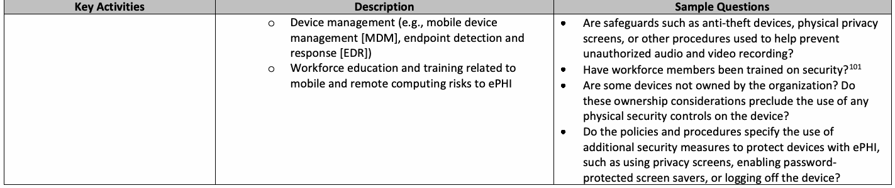
抽出したテキスト（原本と未照合・参考）
| Key Activities | Description | Sample Questions |
| Device management (e.g., mobile device o management [MDM], endpoint detection and response [EDR]) Workforce education and training related to o mobile and remote computing risks to ePHI | • Are safeguards such as anti-theft devices, physical privacy screens, or other procedures used to help prevent unauthorized audio and video recording? • Have workforce members been trained on security?101 • Are some devices not owned by the organization? Do these ownership considerations preclude the use of any physical security controls on the device? • Do the policies and procedures specify the use of additional security measures to protect devices with ePHI, such as using privacy screens, enabling password- protected screen savers, or logging off the device? |
抽出したテキストの訳（原本と未照合・参考）
| 主な活動 | 説明 | 例示的な質問 |
| 機器管理（モバイル機器管理［MDM］、エンドポイント検知・対応［EDR］など） モバイルおよびリモートでのコンピューティングに伴うePHIへのリスクに関する職員教育および研修 | • 盗難防止装置、物理的なプライバシー画面、その他の手順など、不正な音声・映像記録を防ぐための安全措置を使用しているか。 • 職員にセキュリティ研修を実施したか。101 • 組織が所有していない機器があるか。所有者の違いにより、その機器への物理的セキュリティ管理策の使用が妨げられていないか。 • ePHIを含む機器を保護するため、プライバシー画面の使用、パスワードで保護されたスクリーンセーバーの有効化、機器からのログオフなど、追加のセキュリティ対策の使用を方針および手順に定めているか。 |
101 See Sec. 5.1.5, HIPAA Standard: Security Awareness and Training.
101 第5.1.5節「HIPAA基準：セキュリティ意識向上および研修」を参照。
未レビュー訳5.2.4. Device and Media Controls (§ 164.310(d))
5.2.4. 機器および媒体の管理（§ 164.310(d)）
HIPAA Standard: Implement policies and procedures that govern the receipt and removal of hardware and electronic media that contain electronic protected health information into and out of a facility, and the movement of these items within the facility.
HIPAA基準：電子保護対象保健情報を含むハードウェアおよび電子媒体の施設への搬入・施設からの搬出、および施設内での移動を管理する方針および手順を実施する。
Table 20. Key activities, descriptions, and sample questions for the Device and Media Controls standard
表20.「機器および媒体の管理」基準に関する主な活動、説明、例示的な質問
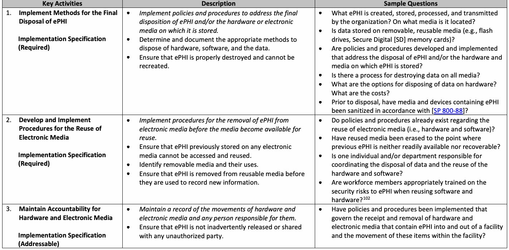
抽出したテキスト（原本と未照合・参考）
| Key Activities | Description | Sample Questions |
| 1. Implement Methods for the Final Disposal of ePHI Implementation Specification (Required) | • Implement policies and procedures to address the final disposition of ePHI and/or the hardware or electronic media on which it is stored. • Determine and document the appropriate methods to dispose of hardware, software, and the data. • Ensure that ePHI is properly destroyed and cannot be recreated. | • What ePHI is created, stored, processed, and transmitted by the organization? On what media is it located? • Is data stored on removable, reusable media (e.g., flash drives, Secure Digital [SD] memory cards)? • Are policies and procedures developed and implemented that address the disposal of ePHI and/or the hardware and media on which ePHI is stored? • Is there a process for destroying data on all media? • What are the options for disposing of data on hardware? What are the costs? • Prior to disposal, have media and devices containing ePHI been sanitized in accordance with [SP 800-88]? |
| 2. Develop and Implement Procedures for the Reuse of Electronic Media Implementation Specification (Required) | • Implement procedures for the removal of ePHI from electronic media before the media become available for reuse. • Ensure that ePHI previously stored on any electronic media cannot be accessed and reused. • Identify removable media and their uses. • Ensure that ePHI is removed from reusable media before they are used to record new information. | • Do policies and procedures already exist regarding the reuse of electronic media (i.e., hardware and software)? • Have reused media been erased to the point where previous ePHI is neither readily available nor recoverable? • Is one individual and/or department responsible for coordinating the disposal of data and the reuse of the hardware and software? • Are workforce members appropriately trained on the security risks to ePHI when reusing software and hardware?102 |
| 3. Maintain Accountability for Hardware and Electronic Media Implementation Specification (Addressable) | • Maintain a record of the movements of hardware and electronic media and any person responsible for them. • Ensure that ePHI is not inadvertently released or shared with any unauthorized party. | • Have policies and procedures been implemented that govern the receipt and removal of hardware and electronic media that contain ePHI into and out of a facility and the movement of these items within the facility? |
抽出したテキストの訳（原本と未照合・参考）
| 主な活動 | 説明 | 例示的な質問 |
| 1. ePHIの最終廃棄方法を実施する 実施仕様（必須） | • ePHIおよび／またはそれを保存するハードウェアまたは電子媒体の最終的な廃棄方法に対処する方針および手順を実施する。 • ハードウェア、ソフトウェア、データを廃棄する適切な方法を決定して文書化する。 • ePHIが適切に破壊され、復元できないことを確保する。 | • 組織が作成、保存、処理、伝送するePHIは何か。それはどの媒体に保存されているか。 • リムーバブルで再利用可能な媒体（フラッシュドライブ、SDメモリーカードなど）にデータを保存しているか。 • ePHIおよび／またはそれを保存するハードウェアや媒体の廃棄に対処する方針および手順を策定して実施しているか。 • すべての媒体上のデータを破壊するプロセスがあるか。 • ハードウェア上のデータを廃棄する方法には何があるか。費用はいくらか。 • 廃棄前に、ePHIを含む媒体および機器を［SP 800-88］に従ってサニタイズしたか。 |
| 2. 電子媒体の再利用手順を策定して実施する 実施仕様（必須） | • 電子媒体を再利用できる状態にする前に、その媒体からePHIを除去する手順を実施する。 • 電子媒体に以前保存されたePHIにアクセスできず、再利用もできないことを確保する。 • リムーバブル媒体とその用途を特定する。 • 再利用可能な媒体を新しい情報の記録に使う前に、ePHIを除去する。 | • 電子媒体（ハードウェアおよびソフトウェア）の再利用に関する方針および手順がすでにあるか。 • 再利用する媒体は、以前のePHIを容易に利用できず、復元もできない状態まで消去されているか。 • データの廃棄とハードウェアおよびソフトウェアの再利用を調整する責任者として、個人および／または部門を1つ割り当てているか。 • ソフトウェアおよびハードウェアの再利用時にePHIへ及ぶセキュリティリスクについて、職員に適切な研修を行ったか。102 |
| 3. ハードウェアおよび電子媒体の説明責任を維持する 実施仕様（対応可能） | • ハードウェアおよび電子媒体の移動履歴と、それらに責任を負う者を記録する。 • ePHIが誤って開示されたり、権限のない者と共有されたりしないようにする。 | • ePHIを含むハードウェアおよび電子媒体の施設への搬入・施設からの搬出、および施設内での移動を管理する方針および手順を実施したか。 |
102 See Sec. 5.1.5, HIPAA Standard: Security Awareness and Training.
102 第5.1.5節「HIPAA基準：セキュリティ意識向上および研修」を参照。
未レビュー訳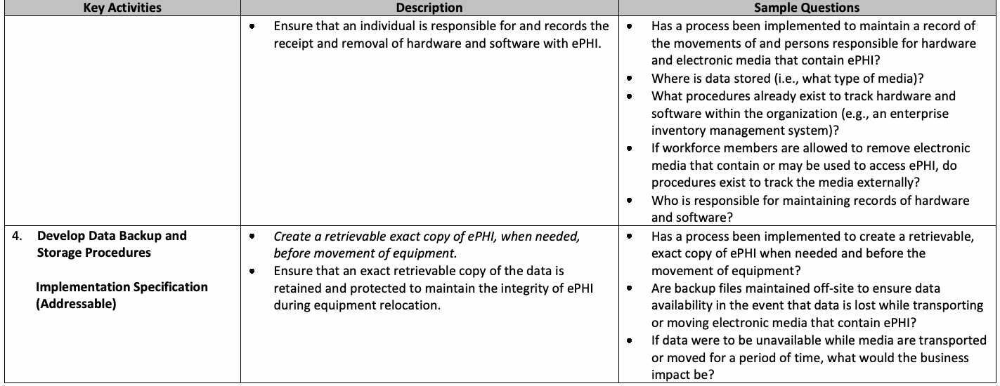
抽出したテキスト（原本と未照合・参考）
| Key Activities | Description | Sample Questions |
| • Ensure that an individual is responsible for and records the receipt and removal of hardware and software with ePHI. | • Has a process been implemented to maintain a record of the movements of and persons responsible for hardware and electronic media that contain ePHI? • Where is data stored (i.e., what type of media)? • What procedures already exist to track hardware and software within the organization (e.g., an enterprise inventory management system)? • If workforce members are allowed to remove electronic media that contain or may be used to access ePHI, do procedures exist to track the media externally? • Who is responsible for maintaining records of hardware and software? | |
| 4. Develop Data Backup and Storage Procedures Implementation Specification (Addressable) | • Create a retrievable exact copy of ePHI, when needed, before movement of equipment. • Ensure that an exact retrievable copy of the data is retained and protected to maintain the integrity of ePHI during equipment relocation. | • Has a process been implemented to create a retrievable, exact copy of ePHI when needed and before the movement of equipment? • Are backup files maintained off-site to ensure data availability in the event that data is lost while transporting or moving electronic media that contain ePHI? • If data were to be unavailable while media are transported or moved for a period of time, what would the business impact be? |
抽出したテキストの訳（原本と未照合・参考）
| 主な活動 | 説明 | 例示的な質問 |
| • ePHIを含むハードウェアおよびソフトウェアの受領と搬出について、責任者を定めて記録を残す。 | • ePHIを含むハードウェアおよび電子媒体の移動と責任者の記録を維持するプロセスを実施したか。 • データはどこに保存されているか（媒体の種類など）。 • 組織内のハードウェアおよびソフトウェアを追跡する既存の手順（全社的な資産管理システムなど）は何か。 • ePHIを含む、またはePHIへのアクセスに使用できる電子媒体の持ち出しを職員に許可する場合、組織外で媒体を追跡する手順があるか。 • ハードウェアおよびソフトウェアの記録を維持する責任者は誰か。 | |
| 4. データバックアップおよび保管手順を策定する 実施仕様（対応可能） | • 機器を移動する前に、必要に応じてePHIの取得可能な正確な複製を作成する。 • 機器の移動中にePHIの完全性を維持するため、取得可能な正確なデータ複製を保管して保護する。 | • 機器の移動前に、必要に応じてePHIの取得可能な正確な複製を作成するプロセスを実施したか。 • ePHIを含む電子媒体の輸送または移動中にデータが失われた場合に備え、データを利用できるようバックアップファイルを外部拠点に保管しているか。 • 媒体の輸送または移動中に一定期間データを利用できなくなった場合、業務にどのような影響があるか。 |
5.3. Technical Safeguards
5.3. 技術的安全措置
5.3.1. Access Control (§ 164.312(a))
5.3.1. アクセス制御（§ 164.312(a)）
HIPAA Standard: Implement technical policies and procedures for electronic information systems that maintain electronic protected health information to allow access only to those persons or software programs that have been granted access rights as specified in § 164.308(a)(4).
HIPAA基準：電子保護対象保健情報を維持する電子情報システムについて、第164.308(a)(4)条に従ってアクセス権を付与された個人またはソフトウェアプログラムだけにアクセスを許可するための技術的な方針および手順を実施する。
Table 21. Key activities, descriptions, and sample questions for the Access Control standard
表21.「アクセス制御」基準に関する主な活動、説明、例示的な質問
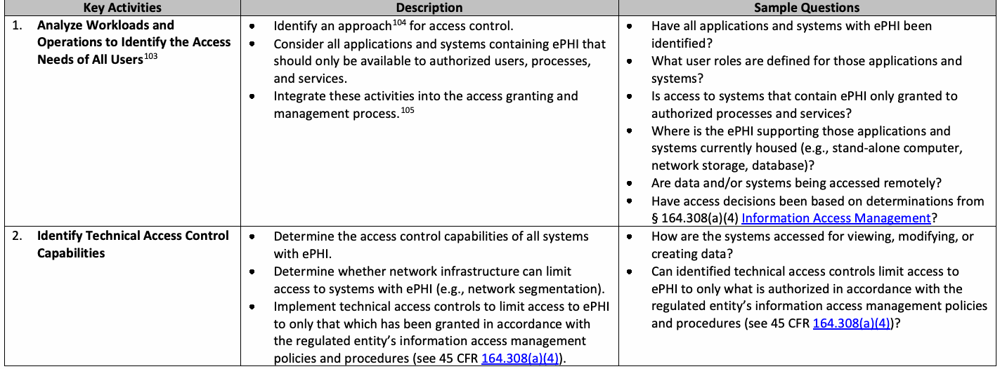
抽出したテキスト（原本と未照合・参考）
| Key Activities | Description | Sample Questions |
| 1. Analyze Workloads and Operations to Identify the Access Needs of All Users103 | • Identify an approach104 for access control. • Consider all applications and systems containing ePHI that should only be available to authorized users, processes, and services. • Integrate these activities into the access granting and management process.105 | • Have all applications and systems with ePHI been identified? • What user roles are defined for those applications and systems? • Is access to systems that contain ePHI only granted to authorized processes and services? • Where is the ePHI supporting those applications and systems currently housed (e.g., stand-alone computer, network storage, database)? • Are data and/or systems being accessed remotely? • Have access decisions been based on determinations from § 164.308(a)(4) Information Access Management? |
| 2. Identify Technical Access Control Capabilities | • Determine the access control capabilities of all systems with ePHI. • Determine whether network infrastructure can limit access to systems with ePHI (e.g., network segmentation). • Implement technical access controls to limit access to ePHI to only that which has been granted in accordance with the regulated entity’s information access management policies and procedures (see 45 CFR 164.308(a)(4)). | • How are the systems accessed for viewing, modifying, or creating data? • Can identified technical access controls limit access to ePHI to only what is authorized in accordance with the regulated entity’s information access management policies and procedures (see 45 CFR 164.308(a)(4))? |
抽出したテキストの訳（原本と未照合・参考）
| 主な活動 | 説明 | 例示的な質問 |
| 1. すべてのユーザーのアクセスニーズを特定するため、業務負荷と運用を分析する103 | • アクセス制御の方針104を特定する。 • 権限を付与されたユーザー、プロセス、サービスだけが利用できるようにすべき、ePHIを含むすべてのアプリケーションおよびシステムを検討する。 • これらの活動をアクセス権の付与および管理プロセスに組み込む。105 | • ePHIを含むすべてのアプリケーションおよびシステムを特定したか。 • それらのアプリケーションおよびシステムについて、どのようなユーザーの役割を定めているか。 • ePHIを含むシステムへのアクセスは、権限を付与されたプロセスおよびサービスのみに認めているか。 • それらのアプリケーションおよびシステムを支えるePHIは現在どこに保管されているか（独立したコンピューター、ネットワークストレージ、データベースなど）。 • データおよび／またはシステムにリモートアクセスしているか。 • § 164.308(a)(4)「情報アクセス管理」の判断に基づいてアクセスを決定したか。 |
| 2. 技術的なアクセス制御機能を特定する | • ePHIを含むすべてのシステムのアクセス制御機能を判定する。 • ネットワークインフラストラクチャで、ePHIを含むシステムへのアクセスを制限できるか（ネットワークのセグメンテーションなど）を判断する。 • 規制対象機関の情報アクセス管理方針および手順（45 CFR 164.308(a)(4)を参照）に従って許可された範囲にePHIへのアクセスを制限する技術的なアクセス制御を実施する。 | • データの閲覧、変更、作成のために、システムへどのようにアクセスしているか。 • 特定した技術的なアクセス制御により、規制対象機関の情報アクセス管理方針および手順（45 CFR 164.308(a)(4)を参照）に従って許可された範囲にePHIへのアクセスを制限できるか。 |
103 See Sec. 5.1.4, HIPAA Standard: Information Access Management. This activity and all associated bullets in the Description and Sample Questions should be conducted as part of the access granting and access establishment processes detailed in the Information Access Management standard. 104 Consider how zero trust architecture principals can aid in the organization’s approach to access control. See Appendix F for more information. 105 See Sec. 5.1.4, HIPAA Standard: Information Access Management.
103 第5.1.4節「HIPAA基準：情報アクセス管理」を参照。この活動と、「説明」および「例示的な質問」にある関連するすべての箇条書きは、情報アクセス管理基準で詳述されるアクセス権付与およびアクセス設定のプロセスの一部として実施すべきである。104 ゼロトラストアーキテクチャの原則が、組織のアクセス制御方針にどう役立つかを検討する。詳しくは付録Fを参照。105 第5.1.4節「HIPAA基準：情報アクセス管理」を参照。
未レビュー訳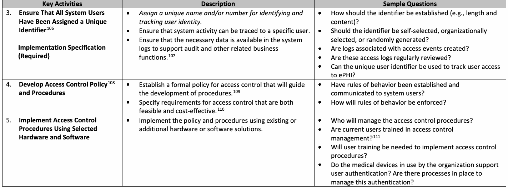
抽出したテキスト（原本と未照合・参考）
| Key Activities | Description | Sample Questions |
| 3. Ensure That All System Users Have Been Assigned a Unique Identifier106 Implementation Specification (Required) | • Assign a unique name and/or number for identifying and tracking user identity. • Ensure that system activity can be traced to a specific user. • Ensure that the necessary data is available in the system logs to support audit and other related business functions.107 | • How should the identifier be established (e.g., length and content)? • Should the identifier be self-selected, organizationally selected, or randomly generated? • Are logs associated with access events created? • Are these access logs regularly reviewed? • Can the unique user identifier be used to track user access to ePHI? |
| 4. Develop Access Control Policy108 and Procedures | • Establish a formal policy for access control that will guide the development of procedures.109 • Specify requirements for access control that are both feasible and cost-effective.110 | • Have rules of behavior been established and communicated to system users? • How will rules of behavior be enforced? |
| 5. Implement Access Control Procedures Using Selected Hardware and Software | • Implement the policy and procedures using existing or additional hardware or software solutions. | • Who will manage the access control procedures? • Are current users trained in access control management?111 • Will user training be needed to implement access control procedures? • Do the medical devices in use by the organization support user authentication? Are there processes in place to manage this authentication? |
抽出したテキストの訳（原本と未照合・参考）
| 主な活動 | 説明 | 例示的な質問 |
| 3. すべてのシステム利用者に一意の識別子を割り当てる106 実施仕様（必須） | • ユーザーの識別情報を特定し、追跡するための一意の名前および／または番号を割り当てる。 • システム活動を特定のユーザーまで追跡できるようにする。 • 監査および関連するその他の業務機能を支えるために必要なデータをシステムログで利用できるようにする。107 | • 識別子をどのように定めるか（長さや内容など）。 • 識別子は本人が選択するか、組織が選択するか、ランダムに生成するか。 • アクセス事象に関するログを作成しているか。 • これらのアクセスログを定期的にレビューしているか。 • 一意のユーザー識別子を使用して、ePHIへのユーザーアクセスを追跡できるか。 |
| 4. アクセス制御方針108および手順を策定する | • 手順の策定を導くアクセス制御の正式な方針を定める。109 • 実現可能かつ費用対効果の高いアクセス制御要件を明記する。110 | • システム利用者の行動規則を定めて周知したか。 • 行動規則をどのように徹底するか。 |
| 5. 選択したハードウェアおよびソフトウェアを用いてアクセス制御手順を実施する | • 既存または追加のハードウェアもしくはソフトウェアソリューションを用いて方針および手順を実施する。 | • アクセス制御手順を管理するのは誰か。 • 現在のユーザーはアクセス制御管理について研修を受けたか。111 • アクセス制御手順を実施するため、ユーザー研修が必要か。 • 組織が使用する医療機器はユーザー認証に対応しているか。この認証を管理するプロセスがあるか。 |
106 See Appendix F for information and resources related to Identity Management. 107 See Sec. 5.3.2, HIPAA Standard: Audit Controls. 108 See Sec. 5.1.4, HIPAA Standard: Information Access Management. 109 See Sec. 5.1.4, HIPAA Standard: Information Access Management. 110 See Sec. 5.1.1, HIPAA Standard: Security Management Process. 111 See Sec. 5.1.5, HIPAA Standard: Security Awareness and Training.
106 ID管理に関する情報および資料については、付録Fを参照。107 第5.3.2節「HIPAA基準：監査制御」を参照。108 第5.1.4節「HIPAA基準：情報アクセス管理」を参照。109 第5.1.4節「HIPAA基準：情報アクセス管理」を参照。110 第5.1.1節「HIPAA基準：セキュリティ管理プロセス」を参照。111 第5.1.5節「HIPAA基準：セキュリティ意識向上および研修」を参照。
未レビュー訳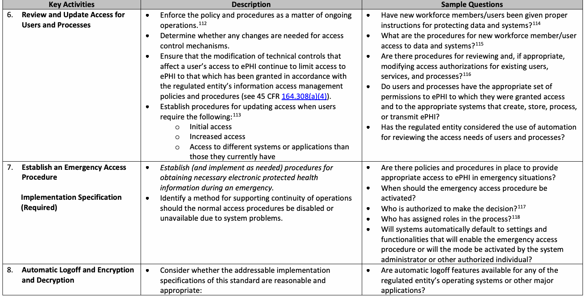
抽出したテキスト（原本と未照合・参考）
| Key Activities | Description | Sample Questions |
| 6. Review and Update Access for Users and Processes | • Enforce the policy and procedures as a matter of ongoing operations.112 • Determine whether any changes are needed for access control mechanisms. • Ensure that the modification of technical controls that affect a user’s access to ePHI continue to limit access to ePHI to that which has been granted in accordance with the regulated entity’s information access management policies and procedures (see 45 CFR 164.308(a)(4)). • Establish procedures for updating access when users require the following:113 Initial access o Increased access o Access to different systems or applications than o those they currently have | • Have new workforce members/users been given proper instructions for protecting data and systems?114 • What are the procedures for new workforce member/user access to data and systems?115 • Are there procedures for reviewing and, if appropriate, modifying access authorizations for existing users, services, and processes?116 • Do users and processes have the appropriate set of permissions to ePHI to which they were granted access and to the appropriate systems that create, store, process, or transmit ePHI? • Has the regulated entity considered the use of automation for reviewing the access needs of users and processes? |
| 7. Establish an Emergency Access Procedure Implementation Specification (Required) | • Establish (and implement as needed) procedures for obtaining necessary electronic protected health information during an emergency. • Identify a method for supporting continuity of operations should the normal access procedures be disabled or unavailable due to system problems. | • Are there policies and procedures in place to provide appropriate access to ePHI in emergency situations? • When should the emergency access procedure be activated? • Who is authorized to make the decision?117 • Who has assigned roles in the process?118 • Will systems automatically default to settings and functionalities that will enable the emergency access procedure or will the mode be activated by the system administrator or other authorized individual? |
| 8. Automatic Logoff and Encryption and Decryption | • Consider whether the addressable implementation specifications of this standard are reasonable and appropriate: | • Are automatic logoff features available for any of the regulated entity’s operating systems or other major applications? |
抽出したテキストの訳（原本と未照合・参考）
| 主な活動 | 説明 | 例示的な質問 |
| 6. ユーザーおよびプロセスのアクセス権をレビューして更新する | • 継続的な運用として方針および手順を徹底する。112 • アクセス制御の仕組みを変更する必要があるかを判断する。 • 技術的な管理策を変更した場合、規制対象機関の情報アクセス管理方針および手順（45 CFR 164.308(a)(4)を参照）に従って付与した範囲に、ePHIへのアクセスが制限される状態を維持する。 • 次のようなアクセスが必要になったときに更新する手順を確立する。113 ○ 初回アクセス ○ 拡張されたアクセス ○ 現在利用しているものとは異なるシステムまたはアプリケーションへのアクセス | • 新しい職員／ユーザーに、データおよびシステムを保護するための適切な指示を与えたか。114 • 新しい職員／ユーザーがデータおよびシステムにアクセスする手順は何か。115 • 既存のユーザー、サービス、プロセスのアクセス承認をレビューし、必要に応じて変更する手順があるか。116 • ユーザーおよびプロセスには、アクセスを付与したePHIと、ePHIを作成、保存、処理、伝送する適切なシステムに対する適切な権限があるか。 • ユーザーおよびプロセスのアクセスニーズのレビューに、自動化を利用することを規制対象機関は検討したか。 |
| 7. 緊急時のアクセス手順を確立する 実施仕様（必須） | • 緊急時に必要な電子保護対象保健情報を取得する手順を確立し、必要に応じて実施する。 • システムの問題で通常のアクセス手順が無効化された場合、または利用できない場合に、業務継続を支援する方法を特定する。 | • 緊急時にePHIへの適切なアクセスを認める方針および手順があるか。 • 緊急時アクセス手順をいつ発動するか。 • 判断権限を持つのは誰か。117 • このプロセスで役割を割り当てられているのは誰か。118 • 緊急時アクセス手順を可能にする設定および機能へシステムが自動的に切り替わるか。それとも、システム管理者またはその他の権限者がモードを有効にするか。 |
| 8. 自動ログオフならびに暗号化および復号 | • 本基準の対応可能な実施仕様が合理的かつ適切かを検討する。 | • 規制対象機関のオペレーティングシステムまたはその他の主要なアプリケーションに、自動ログオフ機能があるか。 |
112 See Sec. 5.1.4, HIPAA Standard: Information Access Management. 113 See Sec. 5.1.4, HIPAA Standard: Information Access Management. 114 See Sec. 5.1.5, HIPAA Standard: Security Awareness and Training. 115 See Sec. 5.1.4, HIPAA Standard: Information Access Management. 116 See Sec. 5.1.4, HIPAA Standard: Information Access Management. 117 See Sec. 5.1.7, HIPAA Standard: Contingency Plan. 118 See Sec. 5.1.7, HIPAA Standard: Contingency Plan.
112 第5.1.4節「HIPAA基準：情報アクセス管理」を参照。113 第5.1.4節「HIPAA基準：情報アクセス管理」を参照。114 第5.1.5節「HIPAA基準：セキュリティ意識向上および研修」を参照。115 第5.1.4節「HIPAA基準：情報アクセス管理」を参照。116 第5.1.4節「HIPAA基準：情報アクセス管理」を参照。117 第5.1.7節「HIPAA基準：緊急時対応計画」を参照。118 第5.1.7節「HIPAA基準：緊急時対応計画」を参照。
未レビュー訳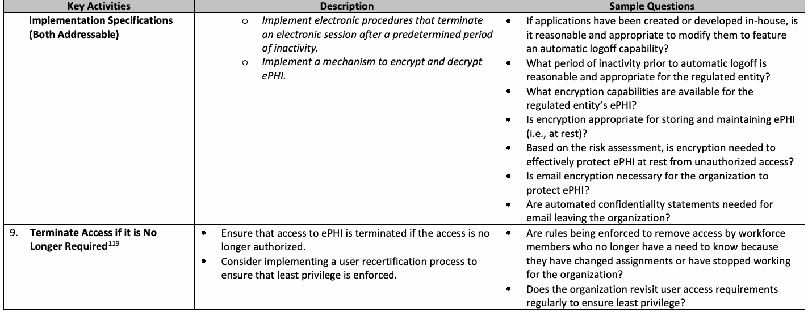
抽出したテキスト（原本と未照合・参考）
| Key Activities | Description | Sample Questions |
| Implementation Specifications (Both Addressable) | Implement electronic procedures that terminate o an electronic session after a predetermined period of inactivity. Implement a mechanism to encrypt and decrypt o ePHI. | • If applications have been created or developed in-house, is it reasonable and appropriate to modify them to feature an automatic logoff capability? • What period of inactivity prior to automatic logoff is reasonable and appropriate for the regulated entity? • What encryption capabilities are available for the regulated entity’s ePHI? • Is encryption appropriate for storing and maintaining ePHI (i.e., at rest)? • Based on the risk assessment, is encryption needed to effectively protect ePHI at rest from unauthorized access? • Is email encryption necessary for the organization to protect ePHI? • Are automated confidentiality statements needed for email leaving the organization? |
| 9. Terminate Access if it is No Longer Required119 | • Ensure that access to ePHI is terminated if the access is no longer authorized. • Consider implementing a user recertification process to ensure that least privilege is enforced. | • Are rules being enforced to remove access by workforce members who no longer have a need to know because they have changed assignments or have stopped working for the organization? • Does the organization revisit user access requirements regularly to ensure least privilege? |
抽出したテキストの訳（原本と未照合・参考）
| 主な活動 | 説明 | 例示的な質問 |
| 実施仕様（いずれも対応可能） | • 所定の無操作時間が経過した後に電子セッションを終了する電子的手順を実施する。 • ePHIを暗号化および復号する仕組みを実施する。 | • アプリケーションを社内で作成または開発した場合、自動ログオフ機能を追加するために変更することは合理的かつ適切か。 • 自動ログオフまでの無操作時間として、規制対象機関にとって合理的かつ適切な期間はどれくらいか。 • 規制対象機関のePHIにどのような暗号化機能を利用できるか。 • 保存中のePHIの保管および維持に暗号化は適切か。 • リスク評価に基づき、権限のないアクセスから保存中のePHIを効果的に保護するには暗号化が必要か。 • ePHIを保護するため、組織は電子メールの暗号化を必要とするか。 • 組織外へ送信する電子メールに、機密保持に関する自動表示が必要か。 |
| 9. 不要になったアクセス権を終了する119 | • ePHIへのアクセスが承認されなくなった場合、そのアクセスを終了する。 • 最小権限を徹底するため、ユーザー再認証プロセスの導入を検討する。 | • 担当変更または組織を離れることで知る必要がなくなった職員のアクセス権を削除する規則を徹底しているか。 • 最小権限を確保するため、ユーザーのアクセス要件を定期的に見直しているか。 |
119 See Sec. 5.1.3, HIPAA Standard: Workforce Security.
119 第5.1.3節「HIPAA基準：職員のセキュリティ」を参照。
未レビュー訳5.3.2. Audit Controls (§ 164.312(b))
5.3.2. 監査制御（§ 164.312(b)）
HIPAA Standard: Implement hardware, software, and/or procedural mechanisms that record and examine activity in information systems that contain or use electronic protected health information.
HIPAA基準：電子保護対象保健情報を含む、またはそれを使用する情報システム内の活動を記録して調査するハードウェア、ソフトウェア、および／または手順上の仕組みを実施する。
Table 22. Key activities, descriptions, and sample questions for the Audit Controls standard
表22.「監査制御」基準に関する主な活動、説明、例示的な質問
抽出したテキスト（原本と未照合・参考）
| Key Activities | Description | Sample Questions |
| 1. Determine the Activities That Will Be Tracked or Audited | • Determine the appropriate scope of audit controls that will be necessary in information systems that contain or use ePHI based on the regulated entity’s risk assessment and other organizational factors.120 • Determine what activities need to be captured using the results of the risk assessment and risk management processes. | • Where is ePHI at risk in the organization?121 • What systems, applications, or processes make ePHI vulnerable to unauthorized or inappropriate tampering, uses, or disclosures?122 • What activities will be audited (e.g., creating ePHI, accessing ePHI, modifying ePHI, transmitting ePHI, and/or deleting files or records that contain ePHI)? • What should the audit record include (e.g., user responsible for the activity; event type, date, or time)? • Are audit records generated for all systems/devices that create, store, process, or transmit ePHI? |
| 2. Select the Tools That Will Be Deployed for Auditing and System Activity Reviews | • Evaluate existing system capabilities and determine whether any changes or upgrades are necessary. | • What tools are in place? • What are the most appropriate monitoring tools for the organization (e.g., third-party, freeware, or operating system-provided)? • Are changes/upgrades to information systems reasonable and appropriate? |
| 3. Develop and Deploy the Information System Activity Review/Audit Policy | • Document and communicate to the workforce the organization’s decisions on audits and reviews. | • Who is responsible for the overall audit process and results? • How often will audits take place? • How often will audit results be analyzed? • What is the organization’s sanction policy for employee violations?123 • Where will audit information reside (e.g., separate server)? |
抽出したテキストの訳（原本と未照合・参考）
| 主な活動 | 説明 | 例示的な質問 |
| 1. 追跡または監査する活動を決定する | • 規制対象機関のリスク評価およびその他の組織的要因に基づき、ePHIを含む、または使用する情報システムで必要となる監査制御の適切な範囲を決定する。120 • リスク評価およびリスク管理プロセスの結果を用いて、記録すべき活動を決定する。 | • 組織内のどこでePHIがリスクにさらされているか。121 • どのシステム、アプリケーション、またはプロセスが、ePHIへの不正または不適切な改ざん、使用、開示の脆弱性をもたらすか。122 • どの活動を監査するか（ePHIの作成、アクセス、変更、伝送、および／またはePHIを含むファイルや記録の削除など）。 • 監査記録に何を含めるか（活動の責任者であるユーザー、事象の種類、日付、時刻など）。 • ePHIを作成、保存、処理、伝送するすべてのシステム／機器で監査記録を作成しているか。 |
| 2. 監査およびシステム活動レビューに導入するツールを選択する | • 既存のシステム機能を評価し、変更またはアップグレードが必要かを判断する。 | • どのようなツールを導入しているか。 • 組織にとって最も適切な監視ツール（第三者製、フリーウェア、オペレーティングシステムに付属するものなど）は何か。 • 情報システムの変更／アップグレードは合理的かつ適切か。 |
| 3. 情報システム活動のレビュー／監査方針を策定して展開する | • 監査およびレビューに関する組織の判断を文書化し、職員に伝達する。 | • 監査プロセス全体と結果に責任を負うのは誰か。 • 監査はどのくらいの頻度で行うか。 • 監査結果をどのくらいの頻度で分析するか。 • 従業員の違反に対する組織の制裁方針は何か。123 • 監査情報をどこに保存するか（別個のサーバーなど）。 |
120 See Sec. 5.1.1, HIPAA Standard: Security Management Process, and Key Activity 5.1.1.7, Develop and Deploy the Information System Activity Review Process. 121 See Sec. 5.1.1, HIPAA Standard: Security Management Process, and Key Activity 5.1.1.2, Conduct Risk Assessment. 122 See Sec. 5.1.1, HIPAA Standard: Security Management Process, and Key Activity 5.1.1.2, Conduct Risk Assessment. 123 See Sec. 5.1.1, HIPAA Standard: Security Management Process, and Key Activity 5.1.1.6, Develop and Implement a Sanction Policy.
120 第5.1.1節「HIPAA基準：セキュリティ管理プロセス」および主な活動5.1.1.7「情報システム活動のレビュー・プロセスを策定し展開する」を参照。121 第5.1.1節「HIPAA基準：セキュリティ管理プロセス」および主な活動5.1.1.2「リスク評価を実施する」を参照。122 第5.1.1節「HIPAA基準：セキュリティ管理プロセス」および主な活動5.1.1.2「リスク評価を実施する」を参照。123 第5.1.1節「HIPAA基準：セキュリティ管理プロセス」および主な活動5.1.1.6「制裁方針を策定して実施する」を参照。
未レビュー訳抽出したテキスト（原本と未照合・参考）
| Key Activities | Description | Sample Questions |
| 4. Develop Appropriate Standard Operating Procedures124 | • Determine the types of audit trail data and monitoring procedures that will be needed to derive exception reports. • Determine the frequency of audit log reviews based on the risk assessment and risk management processes. | • How will exception reports or logs be reviewed? • Has the organization considered the use of automation to assist in the monitoring and review of system activity? • Are the organization’s monitoring system activity and logs reviewed frequently enough to sufficiently protect ePHI? • Where will monitoring reports be filed and maintained? • Is there a formal process in place to address system misuse, abuse, and fraudulent activity?125 • How will managers and employees be notified, when appropriate, regarding suspect activity? |
| 5. Implement the Audit/System Activity Review Process126 | • Activate the necessary audit system. • Begin logging and auditing procedures. | • What mechanisms (e.g., metrics) will be implemented to assess the effectiveness of the audit process? • What is the plan to revise the audit process when needed? |
抽出したテキストの訳（原本と未照合・参考）
| 主な活動 | 説明 | 例示的な質問 |
| 4. 適切な標準作業手順を策定する124 | • 例外報告書の作成に必要となる監査証跡データおよび監視手順の種類を決定する。 • リスク評価およびリスク管理プロセスに基づいて、監査ログをレビューする頻度を決定する。 | • 例外報告書またはログをどのようにレビューするか。 • システム活動の監視とレビューを支援する自動化の利用を検討したか。 • ePHIを十分に保護するのに適した頻度で、組織のシステム活動とログをレビューしているか。 • 監視報告書をどこに保管し、維持するか。 • システムの不正使用、悪用、不正行為に対処する正式なプロセスがあるか。125 • 必要に応じて、不審な活動について管理者および従業員にどのように通知するか。 |
| 5. 監査／システム活動レビュー・プロセスを実施する126 | • 必要な監査システムを稼働させる。 • ログ記録と監査の手順を開始する。 | • 監査プロセスの有効性を評価するため、どのような仕組み（評価指標など）を導入するか。 • 必要に応じて監査プロセスを改訂する計画は何か。 |
124 See Sec. 5.1.1, HIPAA Standard: Security Management Process, and Key Activity 5.1.1.7, Develop and Deploy the Information System Activity Review Process. 125 See Sec. 5.1.1, HIPAA Standard: Security Management Process, and Key Activity 5.1.1.6, Develop and Implement a Sanction Policy. 126 See Sec. 5.1.1, HIPAA Standard: Security Management Process, and Key Activity 5.1.1.9, Implement the Information System Activity Review and Audit Process.
124 第5.1.1節「HIPAA基準：セキュリティ管理プロセス」および主な活動5.1.1.7「情報システム活動のレビュー・プロセスを策定し展開する」を参照。125 第5.1.1節「HIPAA基準：セキュリティ管理プロセス」および主な活動5.1.1.6「制裁方針を策定して実施する」を参照。126 第5.1.1節「HIPAA基準：セキュリティ管理プロセス」および主な活動5.1.1.9「情報システム活動のレビューおよび監査プロセスを実施する」を参照。
未レビュー訳5.3.3. Integrity (§ 164.312(c))
5.3.3. 完全性（§ 164.312(c)）
HIPAA Standard: Implement policies and procedures to protect electronic protected health information from improper alteration or destruction.
HIPAA基準：電子保護対象保健情報を不適切な改変または破壊から保護する方針および手順を実施する。
Table 23. Key activities, descriptions, and sample questions for the Integrity standard
表23.「完全性」基準に関する主な活動、説明、例示的な質問
抽出したテキスト（原本と未照合・参考）
| Key Activities | Description | Sample Questions |
| 1. Identify All Users Who Have Been Authorized to Access ePHI127 | • Identify all approved users with the ability to alter or destroy ePHI, if reasonable and appropriate. • Address this Key Activity in conjunction with the identification of unauthorized sources in Key Activity 2. | • How are users authorized to access the information?128 • Is there a sound basis for why they need the access?129 • Have they been trained on how to use the information?130 • Is there an audit trail established for all accesses to the information?131 |
| 2. Identify Any Possible Unauthorized Sources That May Be Able to Intercept the Information and Modify It | • Identify scenarios that may result in modification to the ePHI by unauthorized sources (e.g., hackers, ransomware, insider threats, business competitors, user errors).132 • Conduct this activity as part of a risk analysis.133 • Consider how the organization will detect unauthorized modification to ePHI. | • What are likely sources that could jeopardize information integrity?134 • What can be done to protect the integrity of the information when it is residing in a system (at rest)? • What procedures and policies can be established to decrease or prevent alteration of the information during transmission?135 • What options exist to detect the unauthorized modification of ePHI? |
| 3. Develop the Integrity Policy and Requirements | • Establish a formal written set of integrity requirements based on the results of the analysis completed in Key Activities 1 and 2. | • Have the requirements been discussed and agreed to by identified key personnel involved in the processes that are affected? • Have the requirements been documented? • Has a written policy been developed and communicated to personnel? |
抽出したテキストの訳（原本と未照合・参考）
| 主な活動 | 説明 | 例示的な質問 |
| 1. ePHIへのアクセスを承認されたすべてのユーザーを特定する127 | • 合理的かつ適切な場合、ePHIを改変または破壊できる、承認済みのユーザーをすべて特定する。 • 主な活動2で不正な情報源を特定する作業と合わせて、この活動に対処する。 | • ユーザーはどのように情報へのアクセスを承認されるか。128 • アクセスの必要性について確かな根拠があるか。129 • 情報の使用方法について研修を受けたか。130 • 情報へのすべてのアクセスについて監査証跡を確立したか。131 |
| 2. 情報を傍受して改変する可能性のある不正な情報源を特定する | • 権限のない情報源（ハッカー、ランサムウェア、内部脅威、業務上の競合相手、ユーザーの誤りなど）によるePHIの改変につながる可能性のあるシナリオを特定する。132 • リスク分析の一部としてこの活動を実施する。133 • ePHIの不正な改変を組織がどのように検知するかを検討する。 | • 情報の完全性を損なう可能性が高い情報源は何か。134 • システム内に保存されている情報（保存データ）の完全性を守るために何ができるか。 • 伝送中の情報の改変を減らす、または防ぐために、どのような手順および方針を確立できるか。135 • ePHIの不正な改変を検知する方法にはどのようなものがあるか。 |
| 3. 完全性に関する方針および要件を策定する | • 主な活動1および2で完了した分析結果に基づき、完全性に関する正式な書面要件一式を確立する。 | • 影響を受けるプロセスに関与する主要な職員が要件を協議し、合意したか。 • 要件を文書化したか。 • 書面による方針を策定し、職員に伝達したか。 |
127 See Sec. 5.1.3, HIPAA Standard: Workforce Security; Sec. 5.3.1, HIPAA Standard: Access Control; and Sec. 5.5.1, HIPAA Standard: Policies and Procedures. 128 See Sec. 5.1.3, HIPAA Standard: Workforce Security, and Sec. 5.3.1, HIPAA Standard: Access Control. 129 See Sec. 5.1.3, HIPAA Standard: Workforce Security. 130 See Sec. 5.1.5, HIPAA Standard: Security Awareness and Training. 131 See Sec. 5.3.2, HIPAA Standard: Audit Controls. 132 See Sec. 5.1.1, HIPAA Standard: Security Management Process. 133 See Sec. 5.1.1, HIPAA Standard: Security Management Process. 134 See Sec. 5.1.1, HIPAA Standard: Security Management Process. 135 See Sec. 5.1.1, HIPAA Standard: Security Management Process, and Sec. 5.3.5, HIPAA Standard: Transmission Security.
127 第5.1.3節「HIPAA基準：職員のセキュリティ」、第5.3.1節「HIPAA基準：アクセス制御」、および第5.5.1節「HIPAA基準：方針および手順」を参照。128 第5.1.3節「HIPAA基準：職員のセキュリティ」および第5.3.1節「HIPAA基準：アクセス制御」を参照。129 第5.1.3節「HIPAA基準：職員のセキュリティ」を参照。130 第5.1.5節「HIPAA基準：セキュリティ意識向上および研修」を参照。131 第5.3.2節「HIPAA基準：監査制御」を参照。132 第5.1.1節「HIPAA基準：セキュリティ管理プロセス」を参照。133 第5.1.1節「HIPAA基準：セキュリティ管理プロセス」を参照。134 第5.1.1節「HIPAA基準：セキュリティ管理プロセス」を参照。135 第5.1.1節「HIPAA基準：セキュリティ管理プロセス」および第5.3.5節「HIPAA基準：伝送セキュリティ」を参照。
未レビュー訳抽出したテキスト（原本と未照合・参考）
| Key Activities | Description | Sample Questions |
| 4. Implement Procedures to Address These Requirements | • Identify and implement methods that will be used to protect ePHI from unauthorized modification. • Identify and implement tools and techniques to be developed or procured that support the assurance of integrity. | • Are current audit, logging, and access control techniques sufficient to address the integrity of ePHI? • If not, what additional techniques (e.g., quality control process, transaction and output reconstruction) can be utilized to check the integrity of ePHI? • Are technical solutions in place to prevent and detect the malicious alteration or destruction of ePHI (e.g., anti- malware, anti-ransomware, file integrity monitoring solutions)? • Can the additional training of users decrease instances attributable to human errors? |
| 5. Implement a Mechanism to Authenticate ePHI Implementation Specification (Addressable) | • Implement electronic mechanisms to corroborate that ePHI has not been altered or destroyed in an unauthorized manner. • Consider possible mechanisms for integrity verification, such as: Error-correcting memory o Digital signatures o | • Are the uses of both electronic and non-electronic mechanisms necessary for the protection of ePHI? • Are appropriate electronic authentication tools available? • Are available electronic authentication tools interoperable with other applications and system components? • If ePHI is detected as altered by unauthorized users or improperly altered by authorized users, is a process in place to respond? • Is this response process tied to organizational incident management processes? |
| 6. Establish a Monitoring Process to Assess How the Implemented Process is Working | • Review existing processes to determine whether objectives are being addressed.136 • Continually reassess integrity processes as technology and operational environments change to determine whether they need to be revised.137 | • Are there reported instances of information integrity problems? Have they decreased since integrity procedures were implemented?138 • Does the process, as implemented, provide a higher level of assurance that information integrity is being maintained? |
抽出したテキストの訳（原本と未照合・参考）
| 主な活動 | 説明 | 例示的な質問 |
| 4. 要件に対処する手順を実施する | • ePHIを不正な改変から保護する方法を特定して実施する。 • 完全性の保証を支援するために開発または調達するツールおよび技法を特定して実施する。 | • 現在の監査、ログ記録、アクセス制御の技法は、ePHIの完全性に対処するうえで十分か。 • 十分でない場合、ePHIの完全性を確認するために利用できる追加の技法（品質管理プロセス、トランザクションおよび出力の再構成など）は何か。 • ePHIの悪意ある改変または破壊を防止および検知する技術的なソリューション（マルウェア対策、ランサムウェア対策、ファイル完全性監視ソリューションなど）があるか。 • ユーザーへの追加研修により、人為的ミスによる事案を減らせるか。 |
| 5. ePHIを認証する仕組みを実施する 実施仕様（対応可能） | • ePHIが不正な方法で改変または破壊されていないことを確認する電子的な仕組みを実施する。 • 完全性を検証する仕組みとして、次の方法を検討する。 ○ 誤り訂正メモリー ○ デジタル署名 | • ePHIを保護するために、電子的な仕組みと非電子的な仕組みの両方が必要か。 • 適切な電子認証ツールを利用できるか。 • 利用可能な電子認証ツールは、他のアプリケーションやシステム構成要素と相互運用できるか。 • 権限のないユーザーによる改変、または権限を付与されたユーザーによる不適切な改変が検知された場合に、対応プロセスがあるか。 • この対応プロセスは、組織のインシデント管理プロセスに結び付いているか。 |
| 6. 実施中のプロセスの機能を評価する監視プロセスを確立する | • 既存のプロセスをレビューし、目標が達成されているかを判断する。136 • 技術および運用環境の変化に応じて完全性プロセスを継続的に再評価し、改訂が必要か判断する。137 | • 情報の完全性に関する問題が報告されているか。完全性手順の実施後、その件数は減少したか。138 • 実施中のプロセスは、情報の完全性が維持されているという高い確信をもたらすか。 |
136 See Sec. 5.1.8, HIPAA Standard: Evaluation. 137 See Sec. 5.1.8, HIPAA Standard: Evaluation. 138 See Sec. 5.1.6, HIPAA Standard: Security Incident Procedures.
136 第5.1.8節「HIPAA基準：評価」を参照。137 第5.1.8節「HIPAA基準：評価」を参照。138 第5.1.6節「HIPAA基準：セキュリティインシデント手順」を参照。
未レビュー訳5.3.4. Person or Entity Authentication (§ 164.312(d))139
5.3.4. 個人または組織の認証（§ 164.312(d)）139
未レビュー訳HIPAA Standard: Implement procedures to verify that a person or entity seeking access to electronic protected health information is the one claimed.
HIPAA基準：電子保護対象保健情報へのアクセスを求める個人または組織が、主張する本人または組織であることを検証する手順を実施する。
Table 24. Key activities, descriptions, and sample questions for the Person or Entity Authentication standard
表24.「個人または組織の認証」基準に関する主な活動、説明、例示的な質問
抽出したテキスト（原本と未照合・参考）
| Key Activities | Description | Sample Questions |
| 1. Determine Authentication Applicability to Current Systems/Applications | • Identify the methods available for authentication. Under the HIPAA Security Rule, authentication is the corroboration that a person is the one claimed (45 CFR § 164.304). • Identify points of electronic access that require or should require authentication. Ensure that the regulated entity’s risk analysis properly assesses risks for such access points (e.g., risks of unauthorized access from within the enterprise could be different than those of remote unauthorized access). • Authentication requires establishing the validity of a transmission source and/or verifying an individual’s claim that they have been authorized for specific access privileges to information and information systems. | • What authentication methods are available? • What are the advantages and disadvantages of each method? • Can risks of unauthorized access be sufficiently reduced for each point of electronic access with available authentication methods? • What will it cost to implement the available methods in the environment? • Are there trained staff who can maintain the system or should outsourced support be considered? • Are passwords being used? If so, are they unique to the individual? • Is MFA being used? If so, how and where is it implemented? |
| 2. Evaluate Available Authentication Options | • Weigh the relative advantages and disadvantages of commonly used authentication approaches. • There are three commonly used authentication approaches available: 1. Something a person knows, such as a password 2. Something a person has or is in possession of, such as a token (e.g., smart card, hardware token) 3. Some type of biometric identification that a person provides, such as a fingerprint • MFA utilizes two or more authentication approaches to enforce stronger authentication. • Consider implementing MFA solutions140 when the risk to ePHI is sufficiently high. | • What are the strengths and weaknesses of each available option? • Which can be best supported with assigned resources (e.g., budget/staffing)? • What level of authentication is appropriate for each access to ePHI based on the assessment of risk? • Has the organization identified all instances of access to ePHI (including by services, vendors, or application programming interfaces [APIs]) and considered appropriate authentication requirements based on the risk assessment? |
抽出したテキストの訳（原本と未照合・参考）
| 主な活動 | 説明 | 例示的な質問 |
| 1. 現行システム／アプリケーションへの認証の適用可能性を判断する | • 利用可能な認証方法を特定する。HIPAAセキュリティ規則では、認証とは主張する本人であることを確認することをいう（45 CFR § 164.304）。 • 認証を必要とする、または必要とすべき電子アクセスの箇所を特定する。そうしたアクセスポイントに関するリスク（企業内からの不正アクセスのリスクは、リモートからの不正アクセスのリスクと異なる場合があるなど）を、規制対象機関のリスク分析で適切に評価していることを確認する。 • 認証では、伝送元の正当性を確立し、および／または個人が情報および情報システムに対する特定のアクセス権限を付与されているという主張を検証する必要がある。 | • どのような認証方法を利用できるか。 • 各方法の長所と短所は何か。 • 利用可能な認証方法によって、電子アクセスの各箇所における不正アクセスのリスクを十分に低減できるか。 • 利用可能な方法を環境に導入する費用はいくらか。 • システムを維持管理できる研修済み職員がいるか。それとも外部委託の支援を検討すべきか。 • パスワードを使用しているか。使用している場合、個人ごとに固有か。 • MFAを使用しているか。使用している場合、どのように、どこに導入しているか。 |
| 2. 利用可能な認証方法を評価する | • 一般的な認証方式の相対的な長所と短所を比較検討する。 • 一般に利用可能な認証方式は次の3種類である。1. パスワードなど、本人が知っているもの。2. スマートカードやハードウェアトークンなど、本人が持っている、または所持しているもの。3. 指紋など、本人が提示する生体識別情報。 • MFAは2つ以上の認証方式を用いて、より強固な認証を実現する。 • ePHIへのリスクが十分に高い場合、MFAソリューション140の導入を検討する。 | • 利用可能な各選択肢の長所と短所は何か。 • 割り当てたリソース（予算、職員配置など）で最もよく支援できる方式はどれか。 • リスク評価に基づき、ePHIへの各アクセスにどの水準の認証が適切か。 • 組織はePHIへのすべてのアクセス（サービス、ベンダー、アプリケーションプログラミングインターフェース［API］によるアクセスを含む）を特定し、リスク評価に基づく適切な認証要件を検討したか。 |
139 See Sec. 5.3.1, HIPAA Standard: Access Control; Sec. 5.3.2, HIPAA Standard: Audit Controls; and [SP 800-63B], Digital Identity Guidelines: Authentication and Lifecycle Management. 140 Some MFA implementations may offer greater protection than others. Consider the pros and cons of each MFA option in light of the risk to ePHI.
139 第5.3.1節「HIPAA基準：アクセス制御」、第5.3.2節「HIPAA基準：監査制御」、および［SP 800-63B］『デジタル ID ガイドライン：認証およびライフサイクル管理』を参照。140 MFAの実装によって、保護の強度は異なる場合がある。ePHIへのリスクを踏まえ、各MFA方式の長所と短所を検討する。
未レビュー訳抽出したテキスト（原本と未照合・参考）
| Key Activities | Description | Sample Questions |
| • Has the organization considered MFA for access to ePHI that poses high risk (e.g., remote access, access to privileged functions)? • Has the organization researched available MFA options and made a selection based on risk to ePHI? • Is outside vendor support required to implement the process? • Are there password-less authentication options (e.g., biometric authentication) available that can sufficiently address the risk to ePHI? | ||
| 3. Select and Implement Authentication Options | • Consider the results of the analysis conducted under Key Activity 2 and select appropriate authentication methods based on the results of the risk assessment and risk management processes. • Implement the methods selected in organizational operations and activities. | • Has the organization’s selection of authentication methods been made based on the results of the risk assessment? • If passwords are being used as an authentication element, are they of sufficient length and strength to protect ePHI? Is this enforced by technical policies? • Has necessary user and support staff training141 been completed? • Have a formal authentication policy and procedures been established and communicated? • Has necessary testing been completed to ensure that the authentication system is working as prescribed? • Do the procedures include ongoing system maintenance and updates? • Is the process implemented in such a way that it does not compromise the authentication information (e.g., password file encryption)? |
抽出したテキストの訳（原本と未照合・参考）
| 主な活動 | 説明 | 例示的な質問 |
| • リモートアクセスや特権機能へのアクセスなど、ePHIに高いリスクをもたらすアクセスについて、MFAを検討したか。 • 利用可能なMFA方式を調査し、ePHIへのリスクに基づいて選択したか。 • プロセスの実施に外部ベンダーの支援が必要か。 • ePHIへのリスクに十分対処できる、パスワードを使わない認証方式（生体認証など）があるか。 | ||
| 3. 認証方式を選択して実施する | • 主な活動2で実施した分析結果を考慮し、リスク評価およびリスク管理プロセスの結果に基づいて適切な認証方法を選択する。 • 選択した方法を組織の運用および活動に導入する。 | • リスク評価の結果に基づいて組織の認証方法を選択したか。 • 認証要素としてパスワードを使用する場合、ePHIを保護するのに十分な長さと強度があるか。技術的な方針でこれを徹底しているか。 • ユーザーおよび支援職員に必要な研修141を実施したか。 • 正式な認証方針および手順を策定して周知したか。 • 認証システムが定められたとおりに機能することを確かめるため、必要な試験を完了したか。 • 手順には、システムの継続的な保守および更新が含まれているか。 • パスワードファイルの暗号化など、認証情報を危険にさらさない方法でプロセスを実施しているか。 |
141 See Section 5.1.5, HIPAA Standard: Security Awareness and Training.
141 第5.1.5節「HIPAA基準：セキュリティ意識向上および研修」を参照。
未レビュー訳5.3.5. Transmission Security (§ 164.312(e)(1))
5.3.5. 伝送セキュリティ（§ 164.312(e)(1)）
HIPAA Standard: Implement technical security measures to guard against unauthorized access to electronic protected health information that is being transmitted over an electronic communications network.
HIPAA基準：電子通信ネットワークを通じて伝送される電子保護対象保健情報への不正アクセスを防ぐため、技術的なセキュリティ対策を実施する。
Table 25. Key activities, descriptions, and sample questions for the Transmission Security standard
表25.「伝送セキュリティ」基準に関する主な活動、説明、例示的な質問
抽出したテキスト（原本と未照合・参考）
| Key Activities | Description | Sample Questions |
| 1. Identify Any Possible Unauthorized Sources That May Be Able to Intercept and/or Modify the Information | • Identify all pathways by which ePHI will be transmitted into, within, and outside of the organization. • Identify scenarios (e.g., telehealth, claims processing) that may result in access to or modification of the ePHI by unauthorized sources during transmission (e.g., hackers, disgruntled employees, business competitors).142 • Identify scenarios and pathways that may put ePHI at a high level of risk. | • Have all pathways by which ePHI will be transmitted (e.g., file transfers, email, web portals, mobile apps, communications with servers or databases containing ePHI, online tracking) been identified? • Has a risk assessment been used to determine transmission pathways and scenarios that may pose high risk to ePHI? • What measures exist to protect ePHI in transmission? • Have appropriate protection mechanisms been identified for all scenarios and pathways by which ePHI is transmitted? • Is there an auditing process in place to verify that ePHI has been protected against unauthorized access during transmission?143 • Are there trained workforce members to monitor transmissions? |
| 2. Develop and Implement Transmission Security Policy and Procedures | • Establish a formal written set of requirements for transmitting ePHI. • Identify methods of transmission that will be used to safeguard ePHI. • Identify tools and techniques that will be used to support the transmission security policy. • Implement procedures for transmitting ePHI using hardware and/or software, if needed. | • Have the requirements been discussed and agreed to by identified key personnel involved in transmitting ePHI? • Has a written policy been developed and communicated to system users? |
抽出したテキストの訳（原本と未照合・参考）
| 主な活動 | 説明 | 例示的な質問 |
| 1. 情報を傍受および／または改変できる可能性のある不正な情報源を特定する | • ePHIが組織内に入る、組織内を移動する、組織外へ出るすべての経路を特定する。 • 伝送中に不正な情報源（ハッカー、不満を持つ従業員、業務上の競合相手など）がePHIにアクセスまたは改変する可能性のあるシナリオ（遠隔医療、請求処理など）を特定する。142 • ePHIに高いリスクをもたらす可能性のあるシナリオと経路を特定する。 | • ePHIが伝送されるすべての経路（ファイル転送、電子メール、ウェブポータル、モバイルアプリ、ePHIを含むサーバーまたはデータベースとの通信、オンライン追跡など）を特定したか。 • リスク評価を用いて、ePHIに高いリスクをもたらす可能性のある伝送経路とシナリオを判断したか。 • 伝送中のePHIを保護するために、どのような対策があるか。 • ePHIの伝送に関わるすべてのシナリオおよび経路について、適切な保護の仕組みを特定したか。 • 伝送中にePHIが不正アクセスから保護されていることを検証する監査プロセスがあるか。143 • 伝送を監視する研修済み職員がいるか。 |
| 2. 伝送セキュリティの方針および手順を策定して実施する | • ePHIを伝送するための正式な書面要件一式を確立する。 • ePHIを保護するために用いる伝送方法を特定する。 • 伝送セキュリティ方針を支えるツールおよび技法を特定する。 • 必要に応じて、ハードウェアおよび／またはソフトウェアを用いたePHIの伝送手順を実施する。 | • ePHIの伝送に関わる主要な職員が要件を協議し、合意したか。 • 書面による方針を策定し、システム利用者に周知したか。 |
142 See Sec. 5.1.7, HIPAA Standard: Contingency Plan, and Sec. 5.1.1, HIPAA Standard: Security Management Process. 143 See Sec. 5.1.1, HIPAA Standard: Security Management Process.
142 第5.1.7節「HIPAA基準：緊急時対応計画」および第5.1.1節「HIPAA基準：セキュリティ管理プロセス」を参照。143 第5.1.1節「HIPAA基準：セキュリティ管理プロセス」を参照。
未レビュー訳抽出したテキスト（原本と未照合・参考）
| Key Activities | Description | Sample Questions |
| 3. Implement Integrity Controls Implementation Specification (Addressable) | • Implement security measures to ensure that electronically transmitted ePHI is not improperly modified without detection until disposed of. | • What security measures are currently used to protect ePHI during transmission? • What measures are planned to protect ePHI in transmission? • Is there assurance that information is not altered during transmission? |
| 4. Implement Encryption Implementation Specification (Addressable) | • Implement a mechanism to encrypt ePHI whenever appropriate. | • Is encryption reasonable and appropriate to protect ePHI in transmission? • Based on the risk assessment, is encryption needed to effectively protect the information from unauthorized access during transmission? • Has the organization considered the use of email encryption and automated confidentiality statements when emailing outside of the organization? • Is encryption feasible and cost-effective in this environment? • What encryption algorithms and mechanisms are available? • Are available encryption algorithms and mechanisms of sufficient strength to protect electronically transmitted ePHI? • Is electronic transmission hardware/software configured so that the strength of encryption used in transmitting ePHI cannot be weakened? • Have all applications used on devices that support the provisioning of health services been assessed to verify that strong transmission security is implemented? • Does the covered entity have the appropriate staff to maintain a process for encrypting ePHI during transmission? • Are workforce members skilled in the use of encryption? |
抽出したテキストの訳（原本と未照合・参考）
| 主な活動 | 説明 | 例示的な質問 |
| 3. 完全性管理策を実施する 実施仕様（対応可能） | • 電子的に伝送されるePHIが、不適切に改変された場合に検知できないまま廃棄されることのないよう、セキュリティ対策を実施する。 | • 伝送中のePHIを保護するために、現在どのようなセキュリティ対策を用いているか。 • 伝送中のePHIを保護するためにどのような対策を計画しているか。 • 伝送中に情報が改変されないという保証があるか。 |
| 4. 暗号化を実施する 実施仕様（対応可能） | • 適切な場合にePHIを暗号化する仕組みを実施する。 | • 伝送中のePHIを保護するうえで暗号化は合理的かつ適切か。 • リスク評価に基づき、伝送中の不正アクセスから情報を効果的に保護するために暗号化が必要か。 • 組織外へ送信する電子メールについて、暗号化および機密保持に関する自動表示の利用を検討したか。 • この環境で暗号化を実施することは可能で、費用対効果があるか。 • どのような暗号化アルゴリズムおよび仕組みを利用できるか。 • 利用可能な暗号化アルゴリズムおよび仕組みは、電子的に伝送されるePHIを保護するのに十分な強度を持つか。 • 電子的伝送に使うハードウェア／ソフトウェアは、ePHIの伝送に使う暗号化の強度が弱められないよう設定されているか。 • 医療サービスの提供を支援する機器で使用するすべてのアプリケーションを評価し、強固な伝送セキュリティが実施されていることを確認したか。 • 対象事業体には、伝送中のePHIを暗号化するプロセスを維持する適切な職員がいるか。 • 職員は暗号化の使用に習熟しているか。 |
5.4. Organizational Requirements
5.4. 組織要件
5.4.1. Business Associate Contracts or Other Arrangements (§ 164.314(a))
5.4.1. 業務提携先との契約またはその他の取り決め（§ 164.314(a)）
HIPAA Standard: (i) The contract or other arrangement between the covered entity and its business associate required by § 164.308(b)(3) must meet the requirements of paragraph (a)(2)(i), (a)(2)(ii), or (a)(2)(iii) of this section, as applicable. (ii) A covered entity is in compliance with paragraph (a)(1) of this section if it has another arrangement in place that meets the requirements of § 164.504(e)(3). (iii) The requirements of paragraphs (a)(2)(i) and (a)(2)(ii) of this section apply to the contract or other arrangement between a business associate and a subcontractor required by § 164.308(b)(4) in the same manner as such requirements apply to contracts or other arrangements between a covered entity and business associate.
HIPAA基準：（i）第164.308(b)(3)条が求める対象事業体と業務提携先との契約またはその他の取り決めは、該当する場合、本条(a)(2)(i)、(a)(2)(ii)、または(a)(2)(iii)項の要件を満たさなければならない。（ii）対象事業体が第164.504(e)(3)条の要件を満たす別の取り決めを設けている場合、本条(a)(1)項に準拠している。（iii）本条(a)(2)(i)および(a)(2)(ii)項の要件は、第164.308(b)(4)条が求める業務提携先と再委託先との契約またはその他の取り決めにも適用される。この場合、対象事業体と業務提携先との契約またはその他の取り決めに適用されるのと同様に適用する。
Covered entities need to be cognizant of differentiating between best practices versus what the Security Rule requires. Vendor management and supply chain risks are important topics due to the potential they have to introduce new threats and risks to organizations. To the extent that such vendors and service providers are business associates, HIPAA treats them the same as covered entities with respect to Security Rule compliance. Covered entities and business associates are required to obtain written satisfactory assurances from business associates that PHI will be protected. Covered entities and business associates are permitted to require more of their business associates and even include more stringent cybersecurity requirements in a BAA. These requirements would need to be agreed upon by both the covered entity and the business associate.
対象事業体は、ベストプラクティスとセキュリティ規則が求める事項を区別することを認識しておく必要がある。ベンダー管理およびサプライチェーンリスクは、組織に新たな脅威やリスクをもたらす可能性があるため、重要な話題である。こうしたベンダーやサービスプロバイダーが業務提携先に該当する限り、HIPAAはセキュリティ規則への準拠について、それらを対象事業体と同様に扱う。対象事業体および業務提携先は、PHIが保護されることについて、業務提携先から書面による十分な保証を得ることが求められる。対象事業体および業務提携先は、自らの業務提携先に対してより多くを求めることが許されており、BAAに、より厳格なサイバーセキュリティ要件を含めることさえできる。これらの要件については、対象事業体と業務提携先の双方が合意する必要がある。
Table 26. Key activities, descriptions, and sample questions for the Business Associate Contracts or Other Arrangements standard
表26.「業務提携先との契約またはその他の取り決め」基準に関する主な活動、説明、例示的な質問
抽出したテキスト（原本と未照合・参考）
| Key Activities | Description | Sample Questions |
| 1. Contract Must Provide That Business Associates Will Comply With the Applicable Requirements of the Security Rule144 Implementation Specification (Required) | • Contracts between covered entities and business associates must provide that business associates will implement administrative, physical, and technical safeguards that reasonably and appropriately protect the confidentiality, integrity, and availability of the ePHI that the business associate creates, receives, maintains, or transmits on behalf of the covered entity. • Readers may find useful resources in Appendix F, including OCR BAA guidance and templates that include applicable language. | • Does the written agreement between the covered entity and the business associate address the applicable functions related to creating, receiving, maintaining, and transmitting ePHI that the business associate is to perform on behalf of the covered entity? |
抽出したテキストの訳（原本と未照合・参考）
| 主な活動 | 説明 | 例示的な質問 |
| 1. 業務提携先がセキュリティ規則の該当要件に準拠することを契約で定める144 実施仕様（必須） | • 対象事業体と業務提携先との契約では、対象事業体に代わって業務提携先が作成、受領、維持、または伝送するePHIの機密性、完全性、可用性を合理的かつ適切に保護するため、管理的、物理的、技術的な安全措置を実施することを定めなければならない。 • 付録Fには、OCRのBAA指針や該当条項を含むひな型など、有用な資料がある。 | • 対象事業体と業務提携先との書面による合意は、対象事業体に代わって業務提携先が行うePHIの作成、受領、維持、伝送に関する該当機能を扱っているか。 |
144 Business associate contracts must also comply with provisions of the HIPAA Privacy Rule. See 45 CFR, Part 164 — Security and Privacy § 164.504(e) (Standard: Business associate contracts).
144 業務提携先との契約は、HIPAAプライバシー規則の規定にも準拠しなければならない。45 CFR、第164部 — セキュリティおよびプライバシー、第164.504(e)条（基準：業務提携先との契約）を参照。
未レビュー訳抽出したテキスト（原本と未照合・参考）
| Key Activities | Description | Sample Questions |
| 2. Contract Must Provide That the Business Associates Enter Into Contracts With Subcontractors to Ensure the Protection of ePHI Implementation Specification (Required) | • In accordance with § 164.308(b)(2), ensure that any subcontractors that create, receive, maintain, or transmit ePHI on behalf of the business associate agree to comply with the applicable requirements of this subpart by entering into a contract or other arrangement that complies with this section. | • Has the business associate identified all of its subcontractors that will create, receive, maintain, or transmit ePHI? • Has the business associate ensured that contracts in accordance with § 164.314 are in place with its subcontractors identified in the previous question? |
| 3. Contract Must Provide That Business Associates Will Report Security Incidents Implementation Specification (Required) | • Report to the covered entity any security incident of which it becomes aware, including breaches of unsecured PHI as required by § 164.410. • Maintain clear lines of communication between covered entities and business associates regarding the protection of ePHI as per the BAA or contract. • Establish a reporting mechanism and a process for the business associate to use in the event of a security incident or breach. | • Is there a procedure in place for reporting security incidents, including breaches of unsecured PHI by business associates? • Have key business associate staff been identified as points of contact in the event of a security incident or breach? • Does the contract include clear time frames and responsibilities regarding the investigation and reporting of security incidents and breaches? |
| 4. Other Arrangements Implementation Specification (Required) | • The covered entity complies with paragraph (a)(1) of this section if it has another arrangement in place that meets the requirements of § 164.504(e)(3). | • Has the covered entity made a good faith attempt to obtain satisfactory assurances that the security standards required by this section are met? • Are attempts to obtain satisfactory assurances and the reasons that assurances cannot be obtained documented? |
| 5. Business Associate Contracts With Subcontractors Implementation Specification (Required) | • The requirements of paragraphs (a)(2)(i) and (a)(2)(ii) of this section apply to the contract or other arrangement between a business associate and a subcontractor in the same manner as such requirements apply to contracts or other arrangements between a covered entity and business associate. | • Do business associate contracts or other arrangements between the business associate and its subcontractors include appropriate language to comply with paragraphs (a)(2)(i) and (a)(2)(ii) of this section? |
抽出したテキストの訳（原本と未照合・参考）
| 主な活動 | 説明 | 例示的な質問 |
| 2. ePHI保護のため、業務提携先が再委託先と契約を締結することを契約で定める 実施仕様（必須） | • 第164.308(b)(2)条に従い、業務提携先に代わってePHIを作成、受領、維持、または伝送する再委託先が、本条の要件を満たす契約またはその他の取り決めを締結することにより、本サブパートの該当要件に準拠することを確保する。 | • 業務提携先は、ePHIを作成、受領、維持、または伝送するすべての再委託先を特定したか。 • 前の質問で特定した再委託先との間で、第164.314条に準拠する契約が締結されていることを業務提携先は確認したか。 |
| 3. 業務提携先がセキュリティインシデントを報告することを契約で定める 実施仕様（必須） | • セキュリティインシデント（第164.410条が求める、保護されていないPHIの侵害を含む）を把握した場合は対象事業体に報告する。 • BAAまたは契約に基づくePHIの保護について、対象事業体と業務提携先との明確な連絡経路を維持する。 • セキュリティインシデントまたは侵害が発生した場合に業務提携先が利用する報告の仕組みとプロセスを確立する。 | • 業務提携先による保護されていないPHIの侵害を含め、セキュリティインシデントを報告する手順があるか。 • セキュリティインシデントまたは侵害が発生した場合の連絡窓口となる業務提携先の主要職員を特定したか。 • インシデントおよび侵害の調査と報告について、明確な期限および責任を契約に含めているか。 |
| 4. その他の取り決め 実施仕様（必須） | • 対象事業体が本条第(a)(1)項の要件を満たす別の取り決めを設けている場合、本項に準拠する。第164.504(e)(3)条を参照。 | • 対象事業体は、本条が求めるセキュリティ基準が満たされることについて、十分な保証を得るため誠実に努力したか。 • 十分な保証を得るための試みと、保証を得られない理由を文書化しているか。 |
| 5. 業務提携先と再委託先との契約 実施仕様（必須） | • 本条第(a)(2)(i)項および第(a)(2)(ii)項の要件は、対象事業体と業務提携先との契約またはその他の取り決めに適用されるのと同様に、業務提携先と再委託先との契約またはその他の取り決めにも適用される。 | • 業務提携先と再委託先との契約またはその他の取り決めに、本条第(a)(2)(i)項および第(a)(2)(ii)項に準拠するための適切な条項が含まれているか。 |
5.4.2. Requirements for Group Health Plans (§ 164.314(b))
5.4.2. グループ医療保険プランに関する要件（§ 164.314(b)）
HIPAA Standard: Except when the only electronic protected health information disclosed to a plan sponsor is disclosed pursuant to § 164.504(f)(1)(ii) or (iii), or as authorized under § 164.508, a group health plan must ensure that its plan documents provide that the plan sponsor will reasonably and appropriately safeguard electronic protected health information created, received, maintained, or transmitted to or by the plan sponsor on behalf of the group health plan.
HIPAA基準：プランスポンサーに開示される唯一の電子保護対象保健情報が、第164.504(f)(1)(ii)または(iii)条に従って、あるいは第164.508条に基づき許可されて開示される場合を除き、グループ医療保険プランは、同プランの文書に、グループ医療保険プランに代わってプランスポンサーが作成、受領、維持、または伝送する電子保護対象保健情報を、同スポンサーが合理的かつ適切に保護する旨を定めなければならない。
Table 27. Key activities, descriptions, and sample questions for the Requirements for Group Health Plans standard
表27.「グループ医療保険プランに関する要件」基準に関する主な活動、説明、例示的な質問
抽出したテキスト（原本と未照合・参考）
| Key Activities | Description | Sample Questions |
| 1. Amend Plan Documents of the Group Health Plan to Address the Plan Sponsor’s Security of ePHI Implementation Specification (Required) | • Amend the plan documents to incorporate provisions to require the plan sponsor to implement administrative, technical, and physical safeguards that will reasonably and appropriately protect the confidentiality, integrity, and availability of ePHI that it creates, receives, maintains, or transmits on behalf of the group health plan. | • Does the plan sponsor fall under the exception described in the standard? • Do the plan documents require the plan sponsor to reasonably and appropriately safeguard ePHI? |
| 2. Amend Plan Documents of the Group Health Plan to Address Adequate Separation Implementation Specification (Required) | • Amend the plan documents to incorporate provisions to require the plan sponsor to ensure that the adequate separation between the group health plan and plan sponsor required by §164.504(f)(2)(iii) is supported by reasonable and appropriate security measures. | • Do plan documents address the obligation to keep ePHI secure with respect to the plan sponsor’s employees, classes of employees, or other persons who will be given access to ePHI? |
| 3. Amend Plan Documents of the Group Health Plan to Address the Security of ePHI Supplied to the Plan Sponsors’ Agents and Subcontractors Implementation Specification (Required) | • Amend plan documents to incorporate provisions to require the plan sponsor to ensure that any agent to whom it provides ePHI agrees to implement reasonable and appropriate security measures to protect the ePHI. | • Do the plan documents of the group health plan address the issue of subcontractors and other agents of the plan sponsor implementing reasonable and appropriate security measures? |
| 4. Amend Plan Documents of Group Health Plans to Address the Reporting of Security Incidents Implementation Specification (Required) | • Amend plan documents to incorporate provisions to require the plan sponsor to report any security incident of which it becomes aware to the group health plan. | • Is there a procedure in place for security incident reporting? • Are procedures in place for responding to security incidents? |
抽出したテキストの訳（原本と未照合・参考）
| 主な活動 | 説明 | 例示的な質問 |
| 1. グループ医療保険プランの文書を改訂し、プランスポンサーによるePHIの保護を定める 実施仕様（必須） | • プランスポンサーがグループ医療保険プランに代わって作成、受領、維持、または伝送するePHIの機密性、完全性、可用性を合理的かつ適切に保護する管理的、技術的、物理的な安全措置を実施するよう求める条項を、プラン文書に含める。 | • プランスポンサーは本基準に記載された例外に該当するか。 • プラン文書はプランスポンサーにePHIの合理的かつ適切な保護を求めているか。 |
| 2. グループ医療保険プランの文書を改訂し、十分な分離を定める 実施仕様（必須） | • 第164.504(f)(2)(iii)条が求めるグループ医療保険プランとプランスポンサーとの十分な分離を、合理的かつ適切なセキュリティ対策で支えるようプランスポンサーに求める条項をプラン文書に含める。 | • ePHIへのアクセスを認められるプランスポンサーの従業員、従業員区分、その他の者に関して、ePHIを安全に保つ義務をプラン文書で扱っているか。 |
| 3. グループ医療保険プランの文書を改訂し、プランスポンサーの代理人および再委託先に提供するePHIの保護を定める 実施仕様（必須） | • ePHIを提供する代理人が、ePHIを保護するための合理的かつ適切なセキュリティ対策を実施することに合意するよう求める条項を、プラン文書に含める。 | • グループ医療保険プランの文書では、プランスポンサーの再委託先およびその他の代理人が合理的かつ適切なセキュリティ対策を実施することを扱っているか。 |
| 4. グループ医療保険プランの文書を改訂し、セキュリティインシデントの報告を定める 実施仕様（必須） | • プランスポンサーが把握したセキュリティインシデントをグループ医療保険プランに報告するよう求める条項を、プラン文書に含める。 | • セキュリティインシデントを報告する手順があるか。 • セキュリティインシデントに対応する手順があるか。 |
抽出したテキスト（原本と未照合・参考）
| Key Activities | Description | Sample Questions |
| • Establish a specific policy for security incident reporting.145 • Establish a reporting mechanism and a process for the plan sponsor to use in the event of a security incident. |
抽出したテキストの訳（原本と未照合・参考）
| 主な活動 | 説明 | 例示的な質問 |
| • セキュリティインシデント報告に関する個別方針を確立する。145 • セキュリティインシデントが発生した場合にプランスポンサーが利用する報告の仕組みとプロセスを確立する。 |
145 See Sec. Security Incident Procedures (§ 164.308(a)(6)), HIPAA Standard: Security Incident Procedures.
145 第5.1.6節「セキュリティインシデント手順」、HIPAA基準：「セキュリティインシデント手順」を参照。
未レビュー訳5.5. Policies and Procedures and Documentation Requirements
5.5. 方針および手順ならびに文書化要件
5.5.1. Policies and Procedures (§ 164.316(a))
5.5.1. 方針および手順（§ 164.316(a)）
HIPAA Standard: Implement reasonable and appropriate policies and procedures to comply with the standards, implementation specifications, or other requirements of this subpart, taking into account those factors specified in § 164.306(b)(2)(i), (ii), (iii), and (iv). This standard is not to be construed to permit or excuse an action that violates any other standard, implementation specification, or other requirements of this subpart. A covered entity or business associate may change its policies and procedures at any time, provided that the changes are documented and are implemented in accordance with this subpart.
HIPAA基準：第164.306(b)(2)(i)、(ii)、(iii)、(iv)条に定める要因を考慮し、本サブパートの基準、実施仕様、その他の要件に準拠するための合理的かつ適切な方針および手順を実施する。この基準は、本サブパートの他の基準、実施仕様、その他の要件に違反する行為を許可または免責するものと解釈してはならない。対象事業体または業務提携先は、変更を文書化し、本サブパートに従って実施する限り、いつでも方針および手順を変更できる。
Table 28. Key activities, descriptions, and sample questions for the Policies and Procedures standard
表28.「方針および手順」基準に関する主な活動、説明、例示的な質問
抽出したテキスト（原本と未照合・参考）
| Key Activities | Description | Sample Questions |
| 1. Create and Deploy Policies and Procedures | • Implement reasonable and appropriate policies and procedures to comply with the standards, implementation specifications, and other requirements of the HIPAA Security Rule. • Consider the importance of documenting processes and procedures for demonstrating the adequate implementation of recognized security practices. • Periodically evaluate written policies and procedures to verify that:146 Policies and procedures are sufficient to address o the standards, implementation specifications, and other requirements of the HIPAA Security Rule. Policies and procedures accurately reflect the o actual activities and practices exhibited by the regulated entity, its staff, its systems, and its business associates. | • Are reasonable and appropriate policies and procedures to comply with each of the standards, applicable implementation specifications, and other requirements of the HIPAA Security Rule in place? • Are policies and procedures reasonable and appropriate given: The size, complexity, and capabilities of the o regulated entity? The regulated entity’s technical infrastructure, o hardware, and software security capabilities? The costs for security measures? o The probability and criticality of potential risks to o ePHI? |
| 2. Update the Documentation of the Policy and Procedures | • Change policies and procedures as is reasonable and appropriate at any time, provided that the changes are documented and implemented in accordance with the requirements of the HIPAA Security Rule. | • Is a process in place for periodically reevaluating the policies and procedures and updating them as necessary?147 |
抽出したテキストの訳（原本と未照合・参考）
| 主な活動 | 説明 | 例示的な質問 |
| 1. 方針および手順を作成して展開する | • HIPAAセキュリティ規則の基準、実施仕様、その他の要件に準拠するため、合理的かつ適切な方針および手順を実施する。 • 認められたセキュリティ慣行が適切に実施されていることを示すため、プロセスおよび手順を文書化する重要性を検討する。 • 次の事項を確認するため、書面による方針および手順を定期的に評価する。146 ○ HIPAAセキュリティ規則の基準、実施仕様、その他の要件に対処するのに十分である。 ○ 規制対象機関、その職員、システム、業務提携先が実際に行っている活動および慣行を正確に反映している。 | • HIPAAセキュリティ規則の各基準、該当する実施仕様、その他の要件に準拠するための合理的かつ適切な方針および手順を整備しているか。 • 次の事項を踏まえ、方針および手順は合理的かつ適切か。 ○ 規制対象機関の規模、複雑さ、能力。 ○ 規制対象機関の技術インフラストラクチャ、ハードウェア、ソフトウェアのセキュリティ機能。 ○ セキュリティ対策の費用。 ○ ePHIに対する潜在的リスクの発生可能性および重大度。 |
| 2. 方針および手順に関する文書を更新する | • HIPAAセキュリティ規則の要件に従って変更を文書化し、実施する限り、合理的かつ適切なときに方針および手順を変更する。 | • 方針および手順を定期的に再評価し、必要に応じて更新するプロセスがあるか。147 |
146 See Sec. 5.1.8, HIPAA Standard: Evaluation. 147 See Sec. 5.1.8, HIPAA Standard: Evaluation.
146 第5.1.8節「HIPAA基準：評価」を参照。147 第5.1.8節「HIPAA基準：評価」を参照。
未レビュー訳抽出したテキスト（原本と未照合・参考）
| Key Activities | Description | Sample Questions |
| • Should HIPAA documentation be updated in response to periodic evaluations, following security incidents, and/or after acquisitions of new technology or new procedures? • As policies and procedures are changed, are new versions made available and are workforce members appropriately trained?148 |
抽出したテキストの訳（原本と未照合・参考）
| 主な活動 | 説明 | 例示的な質問 |
| • 定期的な評価の結果、セキュリティインシデントの発生後、および／または新たな技術や手順の導入後に、HIPAAに関する文書を更新すべきか。 • 方針および手順を変更した場合、新しい版を利用可能にし、職員に適切な研修を行っているか。148 |
148 See Sec. 5.5.2, HIPAA Standard: Documentation, and Sec. 5.1.5, HIPAA Standard: Security Awareness and Training.
148 第5.5.2節「HIPAA基準：文書化」および第5.1.5節「HIPAA基準：セキュリティ意識向上および研修」を参照。
未レビュー訳5.5.2. Documentation (§ 164.316(b))
5.5.2. 文書化（§ 164.316(b)）
HIPAA Standard: (i) Maintain the policies and procedures implemented to comply with this subpart in written (which may be electronic) form; and (ii) if an action, activity or assessment is required by this subpart to be documented, maintain a written (which may be electronic) record of the action, activity, or assessment.
HIPAA基準：（i）本サブパートに準拠するために実施した方針および手順を書面（電子形式でもよい）で維持すること。（ii）本サブパートが措置、活動または評価の文書化を求める場合、その措置、活動または評価の記録を書面（電子形式でもよい）で維持すること。
Table 29. Key activities, descriptions, and sample questions for the Documentation standard
表29.「文書化」基準に関する主な活動、説明、例示的な質問
抽出したテキスト（原本と未照合・参考）
| Key Activities | Description | Sample Questions |
| 1. Draft, Maintain, and Update Required Documentation | • Document decisions concerning the management, operational, and technical controls selected to mitigate identified risks. • Written documentation may be incorporated into existing manuals, policies, and other documents or be created specifically for the purpose of demonstrating compliance with the HIPAA Security Rule. • Consider the importance of documenting the processes and procedures for demonstrating the adequate implementation of recognized security practices. • Use feedback from risk assessments and contingency plan tests to help determine when to update documentation. | • Are all required policies and procedures documented? • Should HIPAA Security Rule documentation be maintained by the individual responsible for HIPAA Security Rule implementation? • Should HIPAA Security Rule documentation be updated in response to periodic evaluations, following security incidents, and/or after acquisitions of new technology or new procedures? • Have dates of creation and validity periods been included in all documentation? • Has appropriate management reviewed and approved all documentation? • Are actions, activities, and assessments required by the Security Rule documented as appropriate? |
| 2. Retain Documentation for at Least Six Years Implementation Specification (Required) | • Retain documentation required by paragraph (b)(1) of this section for six years from the date of its creation or the date when it last was in effect, whichever is later. | • Have documentation retention requirements under HIPAA been aligned with the organization’s other data retention policies? |
| 3. Ensure That Documentation is Available to Those Responsible for Implementation Implementation Specification (Required) | • Make documentation available to those persons responsible for implementing the procedures to which the documentation pertains. | • Is the location of the documentation known to all staff who need to access it? • Is availability of the documentation made known as part of education, training, and awareness activities?149 |
抽出したテキストの訳（原本と未照合・参考）
| 主な活動 | 説明 | 例示的な質問 |
| 1. 必要な文書を作成、維持、更新する | • 特定したリスクを軽減するために選択した管理的、運用的、技術的管理策に関する判断を文書化する。 • 書面による文書は、既存のマニュアル、方針、その他の文書に組み込んでも、HIPAAセキュリティ規則への準拠を示す目的で個別に作成してもよい。 • 認められたセキュリティ慣行が適切に実施されていることを示すため、プロセスおよび手順を文書化する重要性を検討する。 • リスク評価および緊急時対応計画の試験から得られた意見を、文書の更新時期の判断に役立てる。 | • 必要な方針および手順をすべて文書化しているか。 • HIPAAセキュリティ規則の実施責任者が、同規則に関する文書を管理すべきか。 • 定期的な評価の結果、セキュリティインシデントの発生後、および／または新たな技術や手順の導入後に、HIPAAセキュリティ規則に関する文書を更新すべきか。 • すべての文書に作成日および有効期間を記載したか。 • 適切な管理者がすべての文書をレビューして承認したか。 • セキュリティ規則が求める作業、活動、評価を適切に文書化しているか。 |
| 2. 文書を少なくとも6年間保持する 実施仕様（必須） | • 本条第(b)(1)項が求める文書を、作成日または最後に有効だった日から6年間のうち、いずれか遅い日まで保持する。 | • HIPAAに基づく文書保持要件を、組織のその他のデータ保持方針と整合させたか。 |
| 3. 実施責任者が文書を利用できるようにする 実施仕様（必須） | • 文書が対象とする手順の実施責任者が、その文書を利用できるようにする。 | • 文書が保管されている場所を、アクセスする必要のあるすべての職員が知っているか。 • 教育、研修、意識向上活動の一環として、文書を利用できることを周知しているか。149 |
149 See Sec. 5.1.5, HIPAA Standard: Security Awareness and Training.
149 第5.1.5節「HIPAA基準：セキュリティ意識向上および研修」を参照。
未レビュー訳抽出したテキスト（原本と未照合・参考）
| Key Activities | Description | Sample Questions |
| 4. Update Documentation as Required Implementation Specification (Required) | • Review documentation periodically and update as needed in response to environmental or operational changes that affect the security of the ePHI. | • Is there a version control procedure that allows for the verification of the timeliness of policies and procedures, if reasonable and appropriate? • Is there a process for soliciting input on updates of policies and procedures from staff, if reasonable and appropriate? • Are policies and procedures updated in response to environmental or operational changes that affect the security of ePHI? • When were the policies and procedures last updated or reviewed? |
抽出したテキストの訳（原本と未照合・参考）
| 主な活動 | 説明 | 例示的な質問 |
| 4. 必要に応じて文書を更新する 実施仕様（必須） | • ePHIのセキュリティに影響する環境または運用の変化に応じて、文書を定期的にレビューし、必要に応じて更新する。 | • 合理的かつ適切な場合、方針および手順の最新性を検証できる版管理手順があるか。 • 合理的かつ適切な場合、方針および手順の更新について職員から意見を募るプロセスがあるか。 • ePHIのセキュリティに影響する環境または運用の変化に応じて方針および手順を更新しているか。 • 方針および手順を最後に更新またはレビューしたのはいつか。 |
References
参考文献
NIST Special Publications (SPs)
NIST特別刊行物（SP）
[SP_800-30] Joint Task Force Transformation Initiative (2012) Guide for Conducting Risk Assessments. (National Institute of Standards and Technology, Gaithersburg, MD), NIST Special Publication (SP) 800-30, Rev. 1. https://doi.org/10.6028/NIST.SP.800-30r1
[SP_800-30] Joint Task Force Transformation Initiative（2012）Guide for Conducting Risk Assessments。（米国国立標準技術研究所、メリーランド州ゲイサーズバーグ）、NIST特別刊行物（SP）800-30 Rev. 1。https://doi.org/10.6028/NIST.SP.800-30r1
[SP_800-37] Joint Task Force (2018) Risk Management Framework for Information Systems and Organizations: A System Life Cycle Approach for Security and Privacy.
[SP_800-37] Joint Task Force (2018) Risk Management Framework for Information Systems and Organizations: A System Life Cycle Approach for Security and Privacy.
(National Institute of Standards and Technology, Gaithersburg, MD), NIST Special Publication (SP) 800-37, Rev. 2. https://doi.org/10.6028/NIST.SP.800-37r2
（米国国立標準技術研究所、メリーランド州ゲイサーズバーグ）、NIST特別刊行物（SP）800-37 Rev.2。https://doi.org/10.6028/NIST.SP.800-37r2
未レビュー訳[SP_800-53] Joint Task Force (2020) Security and Privacy Controls for Information Systems and Organizations. (National Institute of Standards and Technology, Gaithersburg, MD), NIST Special Publication (SP) 800-53, Rev. 5. Includes updates as of December 10, 2020. https://doi.org/10.6028/NIST.SP.800-53r5
[SP_800-53] Joint Task Force（2020）Security and Privacy Controls for Information Systems and Organizations。（米国国立標準技術研究所、メリーランド州ゲイサーズバーグ）、NIST特別刊行物（SP）800-53 Rev. 5。2020年12月10日までの更新を含む。https://doi.org/10.6028/NIST.SP.800-53r5
[SP_800-53A] Joint Task Force (2022) Assessing Security and Privacy Controls in Information Systems and Organizations. (National Institute of Standards and Technology, Gaithersburg, MD), NIST Special Publication (SP) 800-53A, Rev. 5. https://doi.org/10.6028/NIST.SP.800-53Ar5
[SP_800-53A] Joint Task Force（2022）Assessing Security and Privacy Controls in Information Systems and Organizations。（米国国立標準技術研究所、メリーランド州ゲイサーズバーグ）、NIST特別刊行物（SP）800-53A Rev. 5。https://doi.org/10.6028/NIST.SP.800-53Ar5
[SP_800-63B] Grassi PA, Newton EM, Perlner RA, Regenscheid AR, Fenton JL, Burr WE, Richer JP, Lefkovitz NB, Danker JM, Choong Y-Y, Greene KK, Theofanos MF (2017) Digital Identity Guidelines: Authentication and Lifecycle Management. (National Institute of Standards and Technology, Gaithersburg, MD), NIST Special Publication (SP) 800-63B, Includes updates as of March 02, 2020. https://doi.org/10.6028/NIST.SP.800-63B
[SP_800-63B] Grassi PA, Newton EM, Perlner RA, Regenscheid AR, Fenton JL, Burr WE, Richer JP, Lefkovitz NB, Danker JM, Choong Y-Y, Greene KK, Theofanos MF（2017）Digital Identity Guidelines: Authentication and Lifecycle Management。（米国国立標準技術研究所、メリーランド州ゲイサーズバーグ）、NIST特別刊行物（SP）800-63B、2020年3月2日までの更新を含む。https://doi.org/10.6028/NIST.SP.800-63B
[SP_800-88] Kissel RL, Regenscheid AR, Scholl MA, Stine KM (2014) Guidelines for Media Sanitization. (National Institute of Standards and Technology, Gaithersburg, MD), NIST Special Publication (SP) 800-88, Rev. 1. https://doi.org/10.6028/NIST.SP.800-88r1
[SP_800-88] Kissel RL, Regenscheid AR, Scholl MA, Stine KM（2014）Guidelines for Media Sanitization。（米国国立標準技術研究所、メリーランド州ゲイサーズバーグ）、NIST特別刊行物（SP）800-88 Rev. 1。https://doi.org/10.6028/NIST.SP.800-88r1
[SP_800-171] Ross RS, Pillitteri VY, Dempsey KL, Riddle M, Guissanie G (2020) Protecting Controlled Unclassified Information in Nonfederal Systems and Organizations. (National Institute of Standards and Technology, Gaithersburg, MD), NIST Special Publication (SP) 800-171, Rev. 2, Includes updates as of January 28, 2021. https://doi.org/10.6028/NIST.SP.800-171r2
[SP_800-171] Ross RS, Pillitteri VY, Dempsey KL, Riddle M, Guissanie G（2020）Protecting Controlled Unclassified Information in Nonfederal Systems and Organizations。（米国国立標準技術研究所、メリーランド州ゲイサーズバーグ）、NIST特別刊行物（SP）800-171 Rev. 2、2021年1月28日までの更新を含む。https://doi.org/10.6028/NIST.SP.800-171r2
NIST Interagency or Internal Reports (NIST IRs)
NIST省庁間報告書／内部報告書（IR）
[IR_8286] Stine KM, Quinn SD, Witte GA, Gardner RK (2020) Integrating Cybersecurity and Enterprise Risk Management (ERM). (National Institute of Standards and Technology, Gaithersburg, MD), NIST Interagency or Internal Report (IR) 8286. https://doi.org/10.6028/NIST.IR.8286
[IR_8286] Stine KM, Quinn SD, Witte GA, Gardner RK（2020）Integrating Cybersecurity and Enterprise Risk Management (ERM)。（米国国立標準技術研究所、メリーランド州ゲイサーズバーグ）、NIST省庁間報告書／内部報告書（IR）8286。https://doi.org/10.6028/NIST.IR.8286
[IR_8286A] Quinn SD, Ivy N, Barrett MP, Feldman L, Witte GA, Gardner RK (2021) Identifying and Estimating Cybersecurity Risk for Enterprise Risk Management. (National Institute of Standards and Technology, Gaithersburg, MD), NIST Interagency or Internal Report (IR) 8286A. https://doi.org/10.6028/NIST.IR.8286A
[IR_8286A] Quinn SD, Ivy N, Barrett MP, Feldman L, Witte GA, Gardner RK (2021) Identifying and Estimating Cybersecurity Risk for Enterprise Risk Management. (National Institute of Standards and Technology, Gaithersburg, MD), NIST Interagency or Internal Report (IR) 8286A. https://doi.org/10.6028/NIST.IR.8286A
Web Sites and Other Resources
ウェブサイトおよびその他の資料
未レビュー訳[HITRUST] HITRUST Alliance (2022) HITRUST CSF. Available at https://hitrustalliance.net/product-tool/hitrust-csf/
[HITRUST] HITRUST Alliance（2022）HITRUST CSF。入手先：https://hitrustalliance.net/product-tool/hitrust-csf/
[NIST_CSF] National Institute of Standards and Technology (2018) Framework for Improving Critical Infrastructure Cybersecurity, Version 1.1. (National Institute of Standards and Technology, Gaithersburg, MD). https://doi.org/10.6028/NIST.CSWP.04162018
[NIST_CSF] 米国国立標準技術研究所（2018）Framework for Improving Critical Infrastructure Cybersecurity, Version 1.1。（米国国立標準技術研究所、メリーランド州ゲイサーズバーグ）。https://doi.org/10.6028/NIST.CSWP.04162018
[NIST_NVD] National Institute of Standards and Technology (2022) National Vulnerability Database. Available at nvd.nist.gov
[NIST_NVD] 米国国立標準技術研究所（2022）National Vulnerability Database。入手先：nvd.nist.gov
[NIST_OLIR] National Institute of Standards and Technology (2022) National Online Informative References Program. Available at https://csrc.nist.gov/Projects/olir/
[NIST_OLIR] 米国国立標準技術研究所（2022）National Online Informative References Program。入手先：https://csrc.nist.gov/Projects/olir/
[OMB_A-11] Office of Management and Budget (2021) Preparation, Submission, and Execution of the Budget. (The White House, Washington, DC), OMB Circular A-11, August 6, 2021. Available at https://www.whitehouse.gov/wp-content/uploads/2018/06/a11.pdf
[OMB_A-11] 行政管理予算局（2021）Preparation, Submission, and Execution of the Budget。（ホワイトハウス、ワシントンD.C.）、OMB通達A-11、2021年8月6日。入手先：https://www.whitehouse.gov/wp-content/uploads/2018/06/a11.pdf
[SRA_Tool] The Office of the National Coordinator for Health Information Technology (ONC)
[SRA_Tool] 米国保健情報技術国家調整官室（ONC）および保健福祉省（HHS）公民権局（OCR）（2022）『セキュリティリスク評価ツール』。入手先：
未レビュー訳and the HHS Office for Civil Rights (OCR) (2022) Security Risk Assessment Tool. Available at https://www.healthit.gov/topic/privacy-security-and-hipaa/security-risk-assessment-tool
https://www.healthit.gov/topic/privacy-security-and-hipaa/security-risk-assessment-tool
未レビュー訳Legislation and Regulation
法令および規則
[HIPAA] Health Insurance Portability and Accountability Act (HIPAA) of 1996, Pub. L. 104-191, https://www.govinfo.gov/app/details/PLAW-104publ191. [HITECH] Health Information Technology for Economic and Clinical Health (HITECH Act), title XIII of division A and title IV of division B of the American Recovery and
[HIPAA] 1996年医療保険の携行性と説明責任に関する法律（HIPAA）、公法104-191、https://www.govinfo.gov/app/details/PLAW-104publ191。[HITECH] 経済的および臨床的健康のための医療情報技術法（HITECH法）、2009年米国再生・再投資法（ARRA）A編第XIII章およびB編第IV章、
未レビュー訳Reinvestment Act of 2009 (ARRA), Pub. L. 111-5, https://www.congress.gov/bill/111th-congress/house-bill/1/text [OMNIBUS] “Modifications to the HIPAA Privacy, Security, Enforcement, and Breach Notification Rules Under the Health Information Technology for Economic and Clinical Health Act and the Genetic Information Nondiscrimination Act; Other Modifications to the HIPAA Rules; Final Rule,” Volume 78, Issue 17 (January 25, 2013), https://www.govinfo.gov/content/pkg/FR-2013-01-25/pdf/2013-01073.pdf
公法111-5、https://www.congress.gov/bill/111th-congress/house-bill/1/text [OMNIBUS]「医療情報技術のための経済的および臨床的健康に関する法律および遺伝情報差別禁止法に基づくHIPAAプライバシー、セキュリティ、執行、侵害通知規則の改正；HIPAA規則のその他の改正；最終規則」、第78巻第17号（2013年1月25日）、https://www.govinfo.gov/content/pkg/FR-2013-01-25/pdf/2013-01073.pdf
未レビュー訳[Sec_3542] “Definitions,” Title 44 U.S. Code, Sec. 3542. 2011 ed.
[Sec_3542]「定義」、米国法典第44編第3542条、2011年版。
未レビュー訳https://www.govinfo.gov/app/details/USCODE-2011-title44/USCODE-2011-title44-chap35-subchapIII-sec3542 [Sec_Rule] 45 CFR Part 160 and Part 164 Subparts A and C. Originally published as: “Health Insurance Reform: Security Standards,” Volume 68, Issue 34, 8333 (February 20, 2003), https://www.govinfo.gov/app/details/FR-2003-02-20/03-3877.
https://www.govinfo.gov/app/details/USCODE-2011-title44/USCODE-2011-title44-chap35-subchapIII-sec3542 [Sec_Rule] 連邦規則集第45編第160部および第164部サブパートA、C。初出：「医療保険改革：セキュリティ基準」、第68巻第34号、8333ページ（2003年2月20日）、https://www.govinfo.gov/app/details/FR-2003-02-20/03-3877。
未レビュー訳Appendix A. List of Symbols, Abbreviations, and Acronyms
付録A. 記号、略語、頭字語一覧
Selected acronyms and abbreviations used in this paper are defined below.
本書で使用する主な頭字語および略語を以下に定義する。
API Application Programming Interface
API アプリケーションプログラミングインターフェース
BAA Business Associate Agreement
BAA 業務提携先契約
BIA Business Impact Analysis
BIA 業務影響分析
BYOD Bring Your Own Device
BYOD 自身の端末の持ち込み
CFR Code of Federal Regulations
CFR 連邦規則集
CISA Cybersecurity and Infrastructure Security Agency
CISA サイバーセキュリティ・インフラストラクチャ安全保障庁
CISO Chief Information Security Officer
CISO 最高情報セキュリティ責任者
COOP Continuity of Operations
COOP 業務継続
CSF Cybersecurity Framework
CSF サイバーセキュリティフレームワーク
CSP Cloud Service Provider
CSP クラウドサービスプロバイダー
CSRC Computer Security Resource Center
CSRC コンピュータセキュリティリソースセンター
DDoS Distributed Denial of Service
DDoS 分散型サービス拒否
DoS Denial of Service
DoS サービス拒否
DRM Derived Relationship Mapping
DRM 派生関係マッピング
DHHS Department of Health and Human Services
DHHS 保健福祉省
EDR Endpoint Detection and Response
EDR エンドポイント検知・対応
未レビュー訳ePHI Electronic Protected Health Information
ePHI 電子保護対象保健情報
未レビュー訳ERM Enterprise Risk Management
ERM エンタープライズリスク管理
未レビュー訳FBI Federal Bureau of Investigation
FBI 連邦捜査局
未レビュー訳FDA Food and Drug Administration
FDA 食品医薬品局
FIPS Federal Information Processing Standard
FIPS 連邦情報処理規格
GRC Governance, Risk, and Compliance
GRC ガバナンス、リスク、コンプライアンス
HC3 Health Sector Cybersecurity Coordination Center
HC3 保健医療分野サイバーセキュリティ調整センター
HDO Healthcare Delivery Organization
HDO 保健医療提供組織
HHS Department of Health and Human Services
HHS 保健福祉省
HIC-ISBP Health Industry Cybersecurity Information Sharing Best Practices
HIC-ISBP 医療業界サイバーセキュリティ情報共有のベストプラクティス
HIC-MISO Health Industry Cybersecurity Matrix of Information Sharing Organizations
HIC-MISO 医療業界サイバーセキュリティ情報共有組織マトリクス
HICP Health Industry Cybersecurity Practices
HICP 医療業界サイバーセキュリティ実務
HIC-SCRiM Health Industry Cybersecurity Supply Chain Risk Management
HIC-SCRiM 医療業界サイバーセキュリティのサプライチェーンリスク管理
HIC-STAT Health Industry Cybersecurity – Securing Telehealth and Telemedicine
HIC-STAT 医療業界サイバーセキュリティ：遠隔医療および遠隔診療の保護
HIC-TCR Health Industry Cybersecurity Tactical Crisis Response
HIC-TCR 医療業界サイバーセキュリティの戦術的危機対応
HIPAA Health Insurance Portability and Accountability Act of 1996
HIPAA 1996年医療保険の携行性と説明責任に関する法律
HITECH Act Health Information Technology for Economic and Clinical Health Act
HITECH法 経済的および臨床的健康のための医療情報技術法
HPH Healthcare and Public Health
HPH 保健医療および公衆衛生
ICT Information and Communications Technology
ICT 情報通信技術
IoT Internet of Things
IoT モノのインターネット
IPsec Internet Protocol Security
IPsec インターネットプロトコルセキュリティ
ISAC
ISAC
未レビュー訳Information Sharing and Analysis Center
情報共有分析センター
未レビュー訳IT Information Technology
IT 情報技術
ITL Information Technology Laboratory
ITL 情報技術研究所
MDM Mobile Device Management
MDM モバイル機器管理
MFA Multi-Factor Authentication
MFA 多要素認証
MOU Memorandum of Understanding
MOU 覚書
NICE National Initiative for Cybersecurity Education
NICE サイバーセキュリティ教育国家イニシアティブ
NIST National Institute of Standards and Technology
NIST 米国国立標準技術研究所
NIST IR NIST Interagency Report
NIST IR NIST省庁間報告書
NSA National Security Agency
NSA 国家安全保障局
OCIO Office of the Chief Information Officer
OCIO 最高情報責任者室
OCR Office for Civil Rights
OCR 公民権局
OIG Office of the Inspector General
OIG 監察総監室
OLIR Online Informative References
OLIR オンライン情報参照
OMB Office of Management and Budget
OMB 行政管理予算局
ONC Office of the National Coordinator
ONC 国家調整官室
PACS Picture Archiving and Communication System
PACS 画像保管通信システム
PHI Protected Health Information
PHI 保護対象保健情報
SSL Secure Sockets Layer
SSL セキュアソケットレイヤー
SME Subject-Matter Expert
SME 分野専門家
未レビュー訳SP Special Publication
SP 特別刊行物
未レビュー訳SRA Security Risk Assessment
SRA セキュリティリスク評価
未レビュー訳TLS Transport Layer Security
TLS トランスポート層セキュリティ
未レビュー訳TTP Tactics, Techniques, and Procedures
TTP 戦術、技法、手順
未レビュー訳UPS Uninterruptible Power Supply
UPS 無停電電源装置
未レビュー訳U.S. United States
U.S. 米国
未レビュー訳US-CERT United States Computer Emergency Readiness Team
US-CERT 米国コンピュータ緊急事態対応チーム
未レビュー訳VPN Virtual Private Network
VPN 仮想プライベートネットワーク
未レビュー訳Appendix B. Glossary
付録B. 用語集
未レビュー訳This appendix provides definitions for terms within this document that are defined principally in the HIPAA Security Rule.
本付録では、本書に含まれる用語のうち、主にHIPAAセキュリティ規則で定義されるものを示す。
未レビュー訳addressable To meet the addressable implementation specifications, a covered entity or business associate must (i) assess whether each implementation specification is a reasonable and appropriate safeguard in its environment, when analyzed with reference to the likely contribution to protecting the electronic protected health information; and (ii) as applicable to the covered entity or business associate - (A) Implement the implementation specification if reasonable and appropriate; or (B) if implementing the implementation specification is not reasonable and appropriate—(1) document why it would not be reasonable and appropriate to implement the implementation specification; and (2) implement an equivalent alternative measure if reasonable and appropriate. [Sec. Rule, §164.306(d)(3)]
対応可能 セキュリティ規則の対応可能な実施仕様を満たすには、対象事業体または業務提携先は、（i）電子保護対象保健情報の保護に対する想定上の寄与を考慮して、各実施仕様が自らの環境において合理的かつ適切な安全措置であるかを評価し、（ii）対象事業体または業務提携先に該当する場合、次のいずれかを行わなければならない。（A）合理的かつ適切である場合、実施仕様を実施する。（B）実施仕様を実施することが合理的かつ適切でない場合、（1）その実施仕様の実施が合理的かつ適切でない理由を文書化し、（2）合理的かつ適切であれば、同等の代替措置を実施する。［セキュリティ規則、第164.306(d)(3)条］
未レビュー訳administrative safeguards Administrative actions, and policies and procedures, to manage the selection, development, implementation, and maintenance of security measures to protect electronic protected health information and to manage the conduct of the covered entity’s or business associate’s workforce in relation to the protection of that information. [Sec. Rule, §164.304]
管理的安全措置 電子保護対象保健情報を保護するセキュリティ対策の選択、策定、実施、維持を管理するとともに、情報の保護に関する対象事業体または業務提携先の職員の行動を管理するための、管理上の措置ならびに方針および手順。［セキュリティ規則、第164.304条］
未レビュー訳affiliated covered entities Legally separate covered entities that are affiliated may designate themselves as a single covered entity for the purposes of this part. [Sec. Rule, §164.105(b)]
関連する対象事業体 関連する複数の対象事業体は、法的に別個の事業体であっても、本編の目的上、単一の対象事業体として指定できる。［セキュリティ規則、第164.105(b)条］
未レビュー訳authentication The corroboration that a person is the one claimed. [Sec. Rule, §164.304]
認証 主張する本人であることの確認。［セキュリティ規則、第164.304条］
未レビュー訳availability The property that data or information is accessible and usable upon demand by an authorized person. [Sec. Rule, §164.304]
可用性 権限を付与された者が要求したときに、データまたは情報を利用可能かつ使用可能な状態にあるという特性。［セキュリティ規則、第164.304条］
未レビュー訳business associate (1) Except as provided in paragraph (4) of this definition, “business associate” means, with respect to a covered entity, a person who:
業務提携先 (1) 本定義の第(4)項に定める場合を除き、「業務提携先」とは、対象事業体との関係において、次に該当する者をいう。
未レビュー訳(i) On behalf of such covered entity or of an organized healthcare arrangement (as defined in this section) in which the covered entity participates, but other than in the capacity of a member of the workforce of such covered entity or arrangement, creates, receives, maintains, or transmits protected health information for a function or activity regulated by this subchapter, including claims processing or administration, data analysis, processing or administration, utilization review, quality assurance, patient safety activities listed at 42 CFR 3.20, billing, benefit management, practice management, and repricing; or
(i) 対象事業体、または対象事業体が参加する組織的医療取り決め（本条で定義）に代わって、ただし当該対象事業体もしくは取り決めの職員としてではなく、本サブチャプターが規制する機能または活動のために保護対象保健情報を作成、受領、維持、または伝送する者。これには、請求処理または管理、データ分析、処理または管理、利用状況審査、品質保証、42 CFR 3.20に列挙された患者安全活動、請求事務、給付管理、診療管理、価格再設定が含まれる。または
(ii) Provides, other than in the capacity of a member of the workforce of such covered entity, legal, actuarial, accounting, consulting, data aggregation (as defined in Sec. 164.501 of this subchapter), management, administrative, accreditation, or financial services to or for such covered entity, or to or for an organized healthcare arrangement in which the covered entity participates, where the provision of the service involves the disclosure of protected health information from such covered entity or arrangement, or from another business associate of such covered entity or arrangement, to the person.
(ii) 当該対象事業体の職員としてではなく、対象事業体または対象事業体が参加する組織的医療取り決めに対して、もしくはそれらのために、法律、保険数理、会計、コンサルティング、データ集約（本サブチャプター第164.501条で定義）、管理、事務、認定、財務のサービスを提供し、そのサービスの提供に伴い、対象事業体もしくは取り決め、またはそれらの他の業務提携先から当該者に保護対象保健情報が開示される者。
(2) A covered entity may be a business associate of another covered entity. (3) Business associate includes:
(2) 対象事業体は、別の対象事業体の業務提携先となる場合がある。(3) 業務提携先には、次の者が含まれる。
(i) A Health Information Organization, E-prescribing Gateway, or other person that provides data transmission services with respect to protected health information to a covered entity and that requires access on a routine basis to such protected health information.
(i) 保護対象保健情報に関して、対象事業体にデータ伝送サービスを提供し、通常の業務として当該保護対象保健情報へのアクセスを必要とする医療情報機関、電子処方箋ゲートウェイ、またはその他の者。
(ii) A person that offers a personal health record to one or more individuals on behalf of a covered entity.
(ii) 対象事業体に代わって、1人以上の個人に個人健康記録を提供する者。
(iii) A subcontractor that creates, receives, maintains, or transmits protected health information on behalf of the business associate. (4) Business associate does not include:
(iii) 業務提携先に代わって保護対象保健情報を作成、受領、維持、または伝送する再委託先。(4) 業務提携先には、次の者は含まれない。
未レビュー訳(i) A healthcare provider, with respect to disclosures by a covered entity to the healthcare provider concerning the treatment of the individual.
(i) 個人の治療に関して対象事業体から開示を受ける医療提供者。
(ii) A plan sponsor, with respect to disclosures by a group health plan (or by a health insurance issuer or HMO with respect to a group health plan) to the plan sponsor, to the extent that the requirements of § 164.504(f) of this subchapter apply and are met.
(ii) グループ医療保険プラン（またはグループ医療保険プランに関する健康保険発行者もしくはHMO）からプランスポンサーへの開示について、本サブチャプター第164.504(f)条の要件が適用され、満たされる範囲におけるプランスポンサー。
(iii) A government agency, with respect to determining eligibility for, or enrollment in, a government health plan that provides public benefits and is administered by another government agency, or collecting protected health information for such purposes, to the extent such activities are authorized by law.
(iii) 他の政府機関が運営する公的給付を提供する政府医療保険プランへの適格性または加入の判定に関する政府機関、またはその目的で保護対象保健情報を収集する政府機関。ただし、その活動が法律で認められる範囲に限る。
(iv) A covered entity participating in an organized healthcare arrangement that performs a function or activity as described by paragraph (1)(i) of this definition for or on behalf of such organized healthcare arrangement, or that provides a service as described in paragraph (1)(ii) of this definition to or for such organized healthcare arrangement by virtue of such activities or services. [Sec. Rule, §160.103]
(iv) 組織的医療取り決めに参加する対象事業体のうち、その取り決めのため、またはその取り決めに代わって、本定義第(1)(i)項に記載する機能もしくは活動を行うもの、または第(1)(ii)項に記載するサービスを提供するもの。ただし、当該活動またはサービスに基づく場合に限る。［セキュリティ規則、第160.103条］
未レビュー訳confidentiality The property that data or information is not made available or disclosed to unauthorized persons or processes. [Sec. Rule, §164.304]
機密性 権限のない者またはプロセスにデータもしくは情報を利用可能にせず、開示もしないという特性。［セキュリティ規則、第164.304条］
未レビュー訳covered entities Covered entity means: (1) A health plan. (2) A healthcare clearinghouse. (3) A healthcare provider who transmits any health information in electronic form in connection with a transaction covered by this subchapter. [Sec. Rule, §160.103]
対象事業体 「対象事業体」とは、次のいずれかをいう。(1) 医療保険プラン。(2) 医療情報交換機関。(3) 本サブチャプターが対象とする取引に関連して、健康情報を電子形式で伝送する医療提供者。［セキュリティ規則、第160.103条］
未レビュー訳electronic protected health information (electronic PHI, or ePHI) Information that comes within paragraphs (1)(i) or (1)(ii) of the definition of protected health information as specified in this section (see “protected health information”). [Sec. Rule, §160.103]
電子保護対象保健情報（電子PHI、またはePHI） 本条で定める保護対象保健情報の定義の第(1)(i)項または第(1)(ii)項に該当する情報（「保護対象保健情報」を参照）。［セキュリティ規則、第160.103条］
未レビュー訳healthcare clearinghouse A public or private entity, including a billing service, repricing company, community health management information system or community health information system, and “value-added” networks and switches, that does either of the following functions:
医療情報交換機関 請求サービス、価格再設定会社、地域医療管理情報システムもしくは地域医療情報システム、「付加価値型」ネットワークおよびスイッチを含む、公的または民間の事業体で、次のいずれかの機能を行うもの。
未レビュー訳(1) Processes or facilitates the processing of health information received from another entity in a nonstandard format or containing nonstandard data content into standard data elements or a standard transaction.
(1) 他の事業体から標準外形式で、または標準外のデータ内容を含む健康情報を受け取り、その情報を標準データ要素または標準取引に処理もしくは処理を支援する。
(2) Receives a standard transaction from another entity and processes or facilitates the processing of health information into nonstandard format or nonstandard data content for the receiving entity. [Sec. Rule, §160.103]
(2) 他の事業体から標準取引を受け取り、受領側事業体向けに健康情報を標準外形式または標準外のデータ内容へ処理、もしくは処理を支援する。［セキュリティ規則、第160.103条］
未レビュー訳healthcare provider A provider of services (as defined in section 1861(u) of the Social Security Act, 42 U.S.C. 1395x(u)), a provider of medical or health services (as defined in section 1861(s) of the Social Security Act, 42 U.S.C. 1395x(s)), and any other person or organization who furnishes, bills, or is paid for healthcare in the normal course of business. [Sec. Rule, §160.103] health information Any information, including genetic information, whether oral or recorded in any form or medium, that:
医療提供者 社会保障法第1861(u)条（42 U.S.C. 1395x(u)）で定義するサービス提供者、同法第1861(s)条（42 U.S.C. 1395x(s)）で定義する医療サービス提供者、および通常の業務として医療を提供、請求、またはその対価を受け取るその他の個人もしくは組織。［セキュリティ規則、第160.103条］健康情報 口頭によるものか、記録されたものか、またどのような形態または媒体によるかを問わず、遺伝情報を含むあらゆる情報で、次のものをいう。
未レビュー訳(1) Is created or received by a healthcare provider, health plan, public health authority, employer, life insurer, school or university, or healthcare clearinghouse; and
(1) 医療提供者、医療保険プラン、公衆衛生当局、雇用主、生命保険会社、学校もしくは大学、または医療情報交換機関が作成または受領した情報であり、かつ
(2) Relates to the past, present, or future physical or mental health or condition of an individual; the provision of healthcare to an individual; or the past, present, or future payment for the provision of healthcare to an individual. [Sec. Rule, §160.103]
(2) 個人の過去、現在、将来の身体的もしくは精神的な健康または状態、個人への医療の提供、または個人への医療提供に対する過去、現在、将来の支払いに関係する情報。［セキュリティ規則、第160.103条］
未レビュー訳health plan An individual or group plan that provides, or pays the cost of, medical care (as defined in section 2791(a)(2) of the PHS Act, 42 U.S.C. 300gg-91(a)(2)).
医療保険プラン 医療（公衆衛生サービス法第2791(a)(2)条（42 U.S.C. 300gg-91(a)(2)）で定義）を提供する、またはその費用を支払う個人または団体のプラン。
未レビュー訳(1) Health plan includes the following, singly or in combination:
(1) 医療保険プランには、単独または組み合わせで、次のものが含まれる。
(i) A group health plan, as defined in this section.
(i) 本条で定義する団体医療保険プラン。
(ii) A health insurance issuer, as defined in this section.
(ii) 本条で定義する健康保険の保険者。
(iii) A Health Maintenance Organization (HMO), as defined in this section.
(iii) 本条で定義する健康維持機構（HMO）。
(iv) Part A or Part B of the Medicare program under title XVIII of the Social Security Act.
(iv) 社会保障法第XVIII編に基づくメディケア・プログラムのパートAまたはパートB。
(v) The Medicaid program under title XIX of the Social Security Act, 42 U.S.C. 1396, et seq.
(v) 社会保障法第XIX編に基づくメディケイド・プログラム、42 U.S.C. 1396以下。
(vi) The Voluntary Prescription Drug Benefit Program under Part D of title XVIII of the Act, 42 U.S.C. 1395w-101 through 1395w-152.
(vi) 同法第XVIII編パートDに基づく任意処方薬給付プログラム、42 U.S.C. 1395w-101から1395w-152。
(vii) An issuer of a Medicare supplemental policy (as defined in section 1882(g)(1) of the Social Security Act, 42 U.S.C. 1395ss(g)(1)).
(vii) 社会保障法第1882(g)(1)条（42 U.S.C. 1395ss(g)(1)）で定義するメディケア補足保険の保険者。
(viii) An issuer of a long-term care policy, excluding a nursing home fixed-indemnity policy.
(viii) 介護施設の定額給付保険を除く、長期介護保険の保険者。
(ix) An employee welfare benefit plan or any other arrangement that is established or maintained for the purpose of offering or providing health benefits to the employees of two or more employers.
(ix) 2人以上の雇用主の従業員に医療給付を提供することを目的に設立または維持される従業員福祉給付プラン、またはその他の取り決め。
(x) The healthcare program for active military personnel under title 10 of the United States Code.
(x) 米国法典第10編に基づく現役軍人向け医療プログラム。
(xi) The veterans’ healthcare program under 38 U.S.C. chapter 17.
(xi) 38 U.S.C.第17章に基づく退役軍人医療プログラム。
(xii) The Indian Health Service program under the Indian Healthcare Improvement Act, 25 U.S.C. 1601, et seq.
(xii) インディアン医療改善法（25 U.S.C. 1601以下）に基づくインディアン保健サービス・プログラム。
(xiii) The Federal Employees Health Benefits Program under 5 U.S.C. 8902, et seq.
(xiii) 5 U.S.C. 8902以下に基づく連邦職員医療給付プログラム。
(xiv) An approved State child health plan under title XXI of the Social Security Act, providing benefits for child health assistance that meet the requirements of section 2103 of the Social Security Act, 42 U.S.C. 1397, et seq.
(xiv) 社会保障法第XXI編に基づき、同法第2103条（42 U.S.C. 1397以下）の要件を満たす児童医療支援給付を提供する、承認済みの州児童健康保険プラン。
(xv) The Medicare Advantage program under Part C of title XVIII of the Social Security Act, 42 U.S.C. 1395w-21 through 1395w-28.
(xv) 社会保障法第XVIII編パートCに基づくメディケア・アドバンテージ・プログラム、42 U.S.C. 1395w-21から1395w-28。
(xvi) A high-risk pool that is a mechanism established under State law to provide health insurance coverage or comparable coverage to eligible individuals.
(xvi) 適格な個人に健康保険の補償または同等の補償を提供するため、州法に基づいて設立された仕組みである高リスクプール。
(xvii) Any other individual or group plan, or combination of individual or group plans, that provides or pays for the cost of medical care (as defined in section 2791(a)(2) of the PHS Social Security Act, 42 U.S.C. 300gg-91(a)(2)).
(xvii) 医療を提供する、または医療費を支払う、その他の個人プラン、団体プラン、または個人プランと団体プランの組み合わせ（医療は、公衆衛生サービス法第2791(a)(2)条（42 U.S.C. 300gg-91(a)(2)）で定義）。
未レビュー訳(2) Health plan excludes:
(2) 医療保険プランには、次のものは含まれない。
(i) Any policy, plan, or program to the extent that it provides, or pays for the cost of, excepted benefits that are listed in section 2791(c)(1) of the PHS Act, 42 U.S.C. 300gg-91(c)(1); and
(i) 公衆衛生サービス法第2791(c)(1)条（42 U.S.C. 300gg-91(c)(1)）に列挙する例外給付を提供する、またはその費用を支払う範囲における、あらゆる保険契約、プラン、プログラム。および
(ii) A government-funded program (other than one listed in paragraph (1)(i)-(xvi) of this definition):
(ii) 政府が資金を提供するプログラム（本定義の第(1)(i)項から第(1)(xvi)項に列挙するものを除く）。
(A) Whose principal purpose is other than providing, or paying the cost of, healthcare; or
(A) その主な目的が医療の提供またはその費用の支払い以外であること。または
(B) Whose principal activity is:
(B) 主な活動が次のものである：
(1) The direct provision of healthcare to persons; or
(1) 個人への医療の直接的な提供。または
(2) The making of grants to fund the direct provision of healthcare to persons. [Sec. Rule, §160.103]
(2) 個人への医療の直接的な提供に資金を供給するための助成金の交付。［セキュリティ規則、第160.103条］
未レビュー訳hybrid entity A single legal entity:
ハイブリッド事業体 次のすべてに該当する単一の法人。
未レビュー訳(1) That is a covered entity;
(1) 対象事業体である。
(2) Whose business activities include both covered and non-covered functions; and
(2) 事業活動に、対象となる機能と対象外の機能の両方が含まれる。および
(3) That designates healthcare components in accordance with paragraph § 164.105(a)(2)(iii)(D).
(3) 第164.105(a)(2)(iii)(D)項に従って医療関連構成要素を指定する。
未レビュー訳implementation specification Specific requirements or instructions for implementing a standard. [Sec. Rule, §160.103]
実施仕様 基準を実施するための具体的な要件または指示。［セキュリティ規則、第160.103条］
未レビュー訳individually identifiable health information (IIHI) Information that is a subset of health information, including demographic information collected from an individual, and:
個人を識別できる保健情報（IIHI） 個人から収集した人口統計情報を含む保健情報の一部であり、次のすべてに該当する情報。
未レビュー訳(1) Is created or received by a healthcare provider, health plan, employer, or healthcare clearinghouse; and
(1) 医療提供者、医療保険プラン、雇用主、または医療情報交換機関が作成または受領した情報であり、かつ
(2) Relates to the past, present, or future physical or mental health or condition of an individual; the provision of healthcare to an individual; or the past, present, or future payment for the provision of healthcare to an individual; and
(2) 個人の過去、現在、将来の身体的もしくは精神的な健康または状態、個人への医療の提供、または個人への医療提供に対する過去、現在、将来の支払いに関係する情報であり、さらに、
(i) That identifies the individual; or
(i) 個人を識別できる情報。または
(ii) With respect to which there is a reasonable basis to believe the information can be used to identify the individual. [Sec. Rule, §160.103]
(ii) その情報を用いて個人を識別できると信じる合理的な根拠がある情報。［セキュリティ規則、第160.103条］
未レビュー訳information security Protecting information and information systems from unauthorized access, use, disclosure, disruption, modification, or destruction in order to provide—
情報セキュリティ 情報および情報システムを不正アクセス、使用、開示、妨害、改変、破壊から保護し、次を実現すること。—
未レビュー訳(A) integrity, which means guarding against improper information modification or destruction, and includes ensuring information non-repudiation and authenticity;
(A) 完全性：情報の不適切な改変または破壊を防ぎ、情報の否認防止性および真正性を確保すること。
(B) confidentiality, which means preserving authorized restrictions on access and disclosure, including means for protecting personal privacy and proprietary information; and
(B) 機密性：個人のプライバシーおよび専有情報を保護する手段を含め、アクセスおよび開示に関する許可された制限を維持すること。および
(C) availability, which means ensuring timely and reliable access to and use of information. [44 U.S.C., Sec. 3542]
(C) 可用性：情報への適時かつ信頼できるアクセスおよび利用を確保すること。［米国法典第44編、第3542条］
未レビュー訳information system An interconnected set of information resources under the same direct management control that shares common functionality. A system normally includes hardware, software, information, data, applications, communications, and people.150 [Sec. Rule, §164.304]
情報システム 共通の機能を共有し、同一の直接管理下にある相互接続された情報リソースの集合。システムには通常、ハードウェア、ソフトウェア、情報、データ、アプリケーション、通信機能、人員が含まれる。150［セキュリティ規則、第164.304条］
未レビュー訳integrity The property that data or information have not been altered or destroyed in an unauthorized manner. [Sec. Rule, §164.304]
完全性 権限のない方法でデータまたは情報が改変もしくは破壊されていないという特性。［セキュリティ規則、第164.304条］
未レビュー訳150 [SP 800-30] defines “information system” as “a discrete set of information resources organized for the collection, processing, maintenance, use, sharing, dissemination, or disposition of information.” physical safeguards Physical measures, policies, and procedures to protect a covered entity's or business associate’s electronic information systems and related buildings and equipment from natural and environmental hazards, and unauthorized intrusion. [Sec. Rule, §164.304]
150 ［SP 800-30］では、「情報システム」を「情報の収集、処理、保守、使用、共有、配布、または処分のために編成された、個別の情報リソースの集合」と定義する。物理的安全措置 対象事業体または業務提携先の電子情報システム、関連する建物および設備を、自然災害や環境上の危険および不正侵入から保護するための物理的措置、方針、手順。［セキュリティ規則、第164.304条］
未レビュー訳protected health information (PHI) Individually identifiable health information:
保護対象保健情報（PHI） 個人を識別できる保健情報で、次に該当するもの。
未レビュー訳(1) Except as provided in paragraph (2) of this definition, that is:
(1) 本定義の第(2)項に定める場合を除き、次のいずれかである。
(i) Transmitted by electronic media;
(i) 電子媒体によって伝送される。
(ii) Maintained in electronic media; or
(ii) 電子媒体に維持される。または
(iii) Transmitted or maintained in any other form or medium.
(iii) その他の形態または媒体で伝送または維持される。
(2) Protected health information excludes individually identifiable health information:
(2) 保護対象保健情報には、次の個人を識別できる保健情報は含まれない。
(i) In education records covered by the Family Educational Rights and Privacy Act, as amended, 20 U.S.C. 1232g;
(i) 改正後の家族教育権・プライバシー法（20 U.S.C. 1232g）が対象とする教育記録に含まれる情報。
(ii) In records described at 20 U.S.C. 1232g(a)(4)(B)(iv);
(ii) 20 U.S.C. 1232g(a)(4)(B)(iv)に記載する記録に含まれる情報。
(iii) In employment records held by a covered entity in its role as employer; and
(iii) 対象事業体が雇用主として保有する雇用記録に含まれる情報。および
(iv) Regarding a person who has been deceased for more than 50 years. [Sec. Rule, §160.103]
(iv) 死亡から50年以上経過した者に関する情報。［セキュリティ規則、第160.103条］
未レビュー訳required As applied to an implementation specification (see implementation specification, above), indicating an implementation specification that a covered entity must implement. All implementation specifications are either required or addressable (see “addressable” above). [Sec. Rule, §164.306(d)(2)]
必須 実施仕様については（上記「実施仕様」を参照）、対象事業体が実施しなければならない実施仕様を示す。実施仕様はすべて、必須または対応可能のいずれかである（上記「対応可能」を参照）。［セキュリティ規則、第164.306(d)(2)条］
未レビュー訳standard A rule, condition, or requirement:
基準 次のいずれかを記述する規則、条件、または要件。
未レビュー訳(1) Describing the following information for products, systems, services or practices:
(1) 製品、システム、サービス、または慣行について、次の情報を記述すること:
(i) Classification of components.
(i) 構成要素の分類。
(ii) Specification of materials, performance, or operations; or
(ii) 材料、性能、または運用の仕様。または
(iii) Delineation of procedures; or
(iii) 手順の明確化。または
(2) With respect to the privacy of protected health information. [Sec. Rule, §160.103]
(2) 保護対象保健情報のプライバシーに関するもの。［セキュリティ規則、第160.103条］
未レビュー訳technical safeguards The technology and the policy and procedures for its use that protect electronic protected health information and control access to it. [Sec. Rule, §164.304]
技術的安全措置 電子保護対象保健情報を保護し、その情報へのアクセスを制御する技術ならびにその使用に関する方針および手順。［セキュリティ規則、第164.304条］
未レビュー訳user A person or entity with authorized access. [Sec. Rule, §164.304]
ユーザー 権限を付与されたアクセスを持つ個人または組織。［セキュリティ規則、第164.304条］
未レビュー訳Appendix C. Risk Assessment Tables
付録C. リスク評価表
未レビュー訳Section 3 of this publication provides foundational information about risk assessment and an approach that regulated entities may choose to use when assessing risks to ePHI. As part of a risk assessment, regulated entities should identify reasonably anticipated threats that can negatively impact the regulated entity’s ability to protect ePHI. Identifying threat sources and threat events may not be easy for regulated entities. The tables in this appendix appear in [SP 800-30] and could be helpful in identifying threat sources and threat events as part of a risk assessment.
本書第3節では、リスク評価の基礎情報と、規制対象機関がePHIへのリスク評価に利用できる方法を示す。リスク評価の一環として、規制対象機関は、ePHIの保護能力に悪影響を及ぼし得る合理的に予見可能な脅威を特定すべきである。脅威源と脅威事象の特定は容易でない場合がある。本付録の表は［SP 800-30］に掲載されており、リスク評価の一環として脅威源および脅威事象を特定する際に役立つ可能性がある。
Table 30. Taxonomy of threat sources
表30. 脅威源の分類
抽出したテキスト（原本と未照合・参考）
Type of Threat Source Description Characteristics ADVERSARIAL Individuals, groups, organizations, or Capability, Intent, • Individual states that seek to exploit the Targeting Outsider organization’s dependence on cyber o Insider resources (i.e., information in electronic o Trusted Insider form, information and communications o Privileged Insider technologies, and the communications o • Group and information-handling capabilities Ad hoc provided by those technologies). o Established o • Organization Competitor o Supplier o Partner o Customer o • Nation-State ACCIDENTAL Erroneous actions taken by individuals in Range of effects • User the course of executing their everyday • Privileged User/Administrator responsibilities. STRUCTURAL Failures of equipment, environmental Range of effects • Information Technology (IT) controls, or software due to aging, Equipment resource depletion, or other Storage circumstances that exceed expected o Processing operating parameters. o Communications o Display o Sensor o Controller o • Environmental Controls Temperature/Humidity o Controls Power Supply o • Software Operating System o Networking o General-Purpose o Application Mission-Specific o Application抽出したテキストの訳（原本と未照合・参考）
脅威源の種類／説明／特性： 【敵対的】サイバー資源（電子形式の情報、情報通信技術、およびそれらの技術が提供する通信・情報処理機能）への組織の依存を悪用しようとする個人、集団、組織、または国家。特性は能力、意図、標的化。 ・個人：外部者、内部者、信頼された内部者、特権を持つ内部者。 ・集団：臨時の集団、確立された集団。 ・組織：競合相手、供給者、パートナー、顧客。 ・国家主体。 【偶発的】日常の責務を遂行する過程で個人が誤って行う行為。特性は影響の範囲。該当者はユーザー、特権ユーザー／管理者。 【構造的】機器、環境制御、ソフトウェアが、老朽化、資源の枯渇、または想定された運用パラメーターを超えるその他の事情により故障すること。特性は影響の範囲。 ・情報技術（IT）：機器、ストレージ、処理、通信、表示、センサー、制御装置。 ・環境制御：温度／湿度制御、電源。 ・ソフトウェア：オペレーティングシステム、ネットワーク、汎用アプリケーション、業務特化型アプリケーション。抽出したテキスト（原本と未照合・参考）
Type of Threat Source Description Characteristics ENVIRONMENTAL Natural disasters and failures of critical Range of effects • Natural or human-made disaster infrastructures on which the organization Fire depends but which are outside of the o Flood/Tsunami control of the organization. o Windstorm/Tornado Note: Natural and human-made disasters o Hurricane can also be characterized in terms of their o Earthquake severity and/or duration. However, o Bombing because the threat source and the threat o Overrun event are strongly identified, severity and o • Unusual Natural Event (e.g., duration can be included in the sunspots) description of the threat event (e.g., • Infrastructure Failure/Outage Category 5 hurricane causes extensive Telecommunications damage to the facilities that house o Electrical Power mission-critical systems, making those o systems unavailable for three weeks).抽出したテキストの訳（原本と未照合・参考）
脅威源の種類／説明／特性： 【環境的】組織が依存している重要インフラの自然災害および障害で、組織の制御範囲外にあるもの。特性は影響の範囲。 ・自然災害または人為的災害：火災、洪水／津波、暴風／竜巻、ハリケーン、地震、爆破、事故。 ・異常な自然現象（太陽黒点など）。 ・インフラストラクチャの障害／停止：通信、電力。 注：自然災害および人為的災害は、深刻度および／または継続時間で特徴付けることもできる。ただし、脅威源と脅威事象の対応関係が明確なため、深刻度と継続時間は脅威事象の説明に含めることができる（例：カテゴリー5のハリケーンにより、業務上重要なシステムを収容する施設が大きく損傷し、システムが3週間利用できなくなる）。Table 31. Representative examples of adversarial threat events
表31. 敵対的脅威事象の代表例
抽出したテキスト（原本と未照合・参考）
Threat Events (Characterized by Tactics, Techniques, and Description Procedures [TTPs]) Perform reconnaissance and gather information. Perform perimeter network reconnaissance Adversary uses commercial or free software to scan and scanning. organizational perimeters to obtain a better understanding of the information technology infrastructure and improve the ability to launch successful attacks. Perform network sniffing of exposed Adversary with access to exposed wired or wireless data channels networks. used to transmit information uses network sniffing to identify components, resources, and protections. Gather information using open-source Adversary mines publicly accessible information to gather discovery of organizational information. information about organizational information systems, business processes, users or personnel, or external relationships that the adversary can subsequently employ in support of an attack. Perform reconnaissance and surveillance of Adversary uses various means (e.g., scanning, physical targeted organizations. observation) over time to examine and assess organizations and ascertain points of vulnerability. Perform malware-directed internal Adversary uses malware installed inside the organizational reconnaissance. perimeter to identify targets of opportunity. Because the scanning, probing, or observation does not cross the perimeter, it is not detected by externally placed intrusion detection systems. Craft or create attack tools. Craft phishing attacks. Adversary counterfeits communications from a legitimate or trustworthy source to acquire sensitive information, such as usernames, passwords, or SSNs. Typical attacks occur via email, instant messaging, or comparable means that commonly direct users to websites that appear to be legitimate sites while actually stealing the entered information. Craft spear phishing attacks. Adversary employs phishing attacks targeted at high-value targets (e.g., senior leaders, executives).抽出したテキストの訳（原本と未照合・参考）
脅威事象（戦術、技法、手順［TTP］で特徴付け）／説明 【偵察および情報収集】 ・境界ネットワークの偵察およびスキャンを行う。敵対者は市販または無料のソフトウェアで組織の境界をスキャンし、ITインフラストラクチャへの理解を深め、攻撃を成功させる能力を高める。 ・露出したデータ通信路のネットワークスニッフィングを行う。露出した有線または無線ネットワークにアクセスできる敵対者は、情報伝送に用いられる通信路をスニッフィングし、構成要素、リソース、保護策を特定する。 ・オープンソースの情報を検索して組織情報を収集する。敵対者は公開情報を掘り起こし、組織の情報システム、業務プロセス、ユーザーまたは職員、外部関係について情報を集め、後に攻撃の支援に利用する。 ・標的組織の偵察および監視を行う。敵対者はスキャンや物理的な観察などさまざまな手段を一定期間用いて組織を調査・評価し、脆弱な箇所を特定する。 ・マルウェアを用いた内部偵察を行う。敵対者は組織の境界内にインストールしたマルウェアを使用して攻撃対象を特定する。スキャン、探査、観察が境界を越えないため、外部に設置された侵入検知システムでは検知されない。 【攻撃ツールの作成】 ・フィッシング攻撃を作成する。敵対者は正当または信頼できる送信元を装った通信を作り、ユーザー名、パスワード、社会保障番号（SSN）などの機微情報を取得する。一般に、電子メール、インスタントメッセージなどを用い、正規サイトに見えるウェブサイトへユーザーを誘導し、入力情報を盗み取る。 ・標的型フィッシング攻撃を作成する。敵対者は上級幹部など価値の高い標的に狙いを定め、フィッシング攻撃を仕掛ける。抽出したテキストの訳（原本と未照合・参考）
露出したネットワークのスニッフィングを行う。抽出したテキスト（原本と未照合・参考）
Gather information using open-source discovery of organizational information.抽出したテキストの訳（原本と未照合・参考）
オープンソースの情報を検索して組織情報を収集する。抽出したテキスト（原本と未照合・参考）
Perform reconnaissance and surveillance of targeted organizations.抽出したテキストの訳（原本と未照合・参考）
標的組織の偵察および監視を行う。抽出したテキストの訳（原本と未照合・参考）
マルウェアを用いた内部偵察を行う。抽出したテキスト（原本と未照合・参考）
Threat Events (Characterized by Tactics, Techniques, and Description Procedures [TTPs]) Craft attacks specifically based on deployed Adversary develops attacks (e.g., crafts targeted malware) that information technology environment. take advantage of knowledge of the organizational information technology environment. Create counterfeit or spoof website. Adversary creates duplicates of legitimate websites. When users visit a counterfeit site, the site can gather information or download malware. Craft counterfeit certificates. Adversary counterfeits or compromises a certificate authority so that malware or connections will appear legitimate. Create and operate false front Adversary creates false front organizations with the appearance organizations to inject malicious of legitimate suppliers in the critical life cycle path that then components into the supply chain. inject corrupted or malicious information system components into the organizational supply chain. Deliver, insert, or install malicious capabilities. Deliver known malware to internal Adversary uses common delivery mechanisms (e.g., email) to organizational information systems (e.g., install or insert known malware (e.g., malware whose existence is virus via email). known) into organizational information systems. Deliver modified malware to internal Adversary uses more sophisticated delivery mechanisms than organizational information systems. email (e.g., web traffic, instant messaging) to deliver malware and possibly modifications of known malware to gain access to internal organizational information systems. Deliver targeted malware for control of Adversary installs malware that is specifically designed to take internal systems and the exfiltration of control of internal organizational information systems, identify data. sensitive information, exfiltrate the information back to the adversary, and conceal these actions. Deliver malware by providing removable Adversary places removable media (e.g., flash drives) containing media. malware in locations external to organizational physical perimeters but where employees are likely to find the media (e.g., facilities parking lots, exhibits at conferences attended by employees) and use it on organizational information systems. Insert untargeted malware into Adversary corrupts or inserts malware into common freeware, downloadable software and/or into shareware, or commercial information technology products. commercial information technology Adversary is not targeting specific organizations but simply products. looking for entry points into internal organizational information systems. Note that this is particularly a concern for mobile applications. Insert targeted malware into organizational Adversary inserts malware into organizational information information systems and information systems and information system components (e.g., commercial system components. information technology products), specifically targeting the hardware, software, and firmware used by organizations (based on knowledge gained via reconnaissance). Insert specialized malware into Adversary inserts specialized, non-detectable malware into organizational information systems based organizational information systems based on system on system configurations. configurations, specifically targeting critical information system components based on reconnaissance and placement within organizational information systems. Insert counterfeit or tampered hardware Adversary intercepts hardware from legitimate suppliers. into the supply chain. Adversary modifies the hardware or replaces it with faulty or otherwise modified hardware.抽出したテキストの訳（原本と未照合・参考）
脅威事象（戦術、技法、手順［TTP］で特徴付け）／説明 ・実環境に導入された情報技術に特化した攻撃を作成する。敵対者は組織のIT環境に関する知識を利用して攻撃（標的型マルウェアの作成など）を開発する。 ・偽造またはなりすましウェブサイトを作成する。敵対者は正規ウェブサイトの複製を作成する。ユーザーが偽造サイトを訪問すると、そのサイトは情報を収集したりマルウェアをダウンロードさせたりする。 ・偽造証明書を作成する。敵対者は認証局を偽造または侵害し、マルウェアや接続が正当なものに見えるようにする。 ・サプライチェーンへ悪意ある構成要素を注入するため、偽装組織を設立・運営する。敵対者は重要なライフサイクル経路に正規の供給業者を装う組織を作り、改ざんまたは悪意ある情報システム構成要素を組織のサプライチェーンに注入する。 【悪意ある機能の配布、挿入、インストール】 ・既知のマルウェアを組織内部の情報システムへ配布する（電子メールによるウイルスなど）。敵対者は電子メールなど一般的な配布方法を用いて、存在が知られているマルウェアを組織の情報システムにインストールまたは挿入する。 ・改変したマルウェアを組織内部の情報システムへ配布する。敵対者は電子メールより高度な配布方法（ウェブ通信、インスタントメッセージなど）でマルウェアを配布し、既知のマルウェアを改変して組織内部の情報システムへのアクセスを得る場合もある。 ・内部システムの制御とデータの持ち出しを目的とした標的型マルウェアを配布する。敵対者は、組織内部の情報システムを制御し、機微情報を特定して外部へ持ち出し、その行為を隠すよう特別に設計したマルウェアをインストールする。 ・リムーバブル媒体を用いてマルウェアを配布する。敵対者はマルウェアを含むリムーバブル媒体（フラッシュドライブなど）を、組織の物理的境界外で従業員が見つけて組織の情報システムで使いそうな場所（施設の駐車場、従業員が参加する会議の展示会場など）に置く。 ・ダウンロード可能なソフトウェアおよび／または市販のIT製品に標的を定めないマルウェアを挿入する。敵対者は一般的なフリーウェア、シェアウェア、市販IT製品にマルウェアを混入または挿入する。特定組織を標的にするのではなく、組織内部の情報システムへの侵入経路を探す。特にモバイルアプリケーションで懸念される。 ・組織の情報システムおよび構成要素に標的型マルウェアを挿入する。敵対者は偵察で得た知識に基づき、組織が使用するハードウェア、ソフトウェア、ファームウェアを狙って、情報システムや構成要素（市販IT製品など）にマルウェアを挿入する。 ・システム構成に基づく特殊なマルウェアを組織の情報システムに挿入する。敵対者は偵察結果と組織内情報システムへの配置に基づき、重要なシステム構成要素を標的とする、特殊で検知困難なマルウェアを挿入する。 ・偽造または改ざんしたハードウェアをサプライチェーンに挿入する。敵対者は正規供給業者からハードウェアを傍受し、改変するか、欠陥のある、またはその他の方法で改変されたハードウェアと交換する。抽出したテキスト（原本と未照合・参考）
Create and operate false front organizations to inject malicious components into the supply chain.抽出したテキストの訳（原本と未照合・参考）
悪意ある構成要素をサプライチェーンに注入する偽装組織を設立・運営する。抽出したテキスト（原本と未照合・参考）
Deliver targeted malware for control of internal systems and the exfiltration of data.抽出したテキストの訳（原本と未照合・参考）
内部システムを制御し、データを持ち出すための標的型マルウェアを配布する。抽出したテキストの訳（原本と未照合・参考）
リムーバブル媒体を用いてマルウェアを配布する。抽出したテキスト（原本と未照合・参考）
Insert untargeted malware into downloadable software and/or into commercial information technology products.抽出したテキストの訳（原本と未照合・参考）
ダウンロード可能なソフトウェアおよび／または市販の情報技術製品に、標的を定めないマルウェアを挿入する。抽出したテキスト（原本と未照合・参考）
Insert targeted malware into organizational information systems and information system components.抽出したテキストの訳（原本と未照合・参考）
組織の情報システムおよび構成要素に標的型マルウェアを挿入する。抽出したテキスト（原本と未照合・参考）
Insert specialized malware into organizational information systems based on system configurations.抽出したテキストの訳（原本と未照合・参考）
システム構成に基づく特殊なマルウェアを組織の情報システムに挿入する。抽出したテキスト（原本と未照合・参考）
Insert counterfeit or tampered hardware into the supply chain.抽出したテキストの訳（原本と未照合・参考）
偽造または改ざんしたハードウェアをサプライチェーンに挿入する。抽出したテキスト（原本と未照合・参考）
Threat Events (Characterized by Tactics, Techniques, and Description Procedures [TTPs]) Insert tampered critical components into Adversary replaces critical information system components with organizational systems. modified or corrupted components through the supply chain, a subverted insider, or some combination thereof. Install general-purpose sniffers on Adversary installs sniffing software onto internal organizational organization-controlled information information systems or networks. systems or networks. Install persistent and targeted sniffers on Adversary places software designed to collect (i.e., sniff) network organizational information systems and traffic over a continuous period of time within internal networks. organizational information systems or networks. Insert malicious scanning devices (e.g., Adversary uses the postal service or other commercial delivery wireless sniffers) inside facilities. services to deliver a device to organizational mailrooms that is able to scan wireless communications accessible from within the mailrooms and then wirelessly transmit information back to adversary. Insert subverted individuals into Adversary places individuals within organizations who are willing organizations. and able to carry out actions to cause harm to organizational mission or business functions. Insert subverted individuals into privileged Adversary places individuals in privileged positions within positions in organizations. organizations who are willing and able to carry out actions to cause harm to organizational mission or business functions. Adversary may target privileged functions to gain access to sensitive information (e.g., user accounts, system files) and may leverage access to one privileged capability to get to another capability. Exploit and compromise. Exploit physical access of authorized staff to Adversary follows (“tailgates”) authorized individuals into secure gain access to organizational facilities. or controlled locations to circumvent physical security checks with the goal of gaining access to facilities. Exploit poorly configured or unauthorized Adversary gains access through the internet to information information systems exposed to the systems that are not authorized for internet connectivity or that internet. do not meet organizational configuration requirements. Exploit split tunneling. Adversary takes advantage of external organizational or personal information systems (e.g., laptop computers at remote locations) that are simultaneously connected securely to organizational information systems or networks and to non-secure remote connections. Exploit multi-tenancy in a cloud Adversary, with processes running in an organizationally used environment. cloud environment, takes advantage of multi-tenancy to observe the behavior of organizational processes, acquire organizational information, or interfere with the timely or correct functioning of organizational processes. Exploit known vulnerabilities in mobile Adversary takes advantage of fact that transportable information systems (e.g., laptops, smart phones). systems are outside of the physical protection of organizations and logical protection of corporate firewalls and compromises the systems based on known vulnerabilities to gather information from those systems. Exploit recently discovered vulnerabilities. Adversary exploits recently discovered vulnerabilities in organizational information systems in an attempt to compromise the systems before mitigation measures are available or in place.抽出したテキストの訳（原本と未照合・参考）
脅威事象（戦術、技法、手順［TTP］で特徴付け）／説明 ・改ざんされた重要な構成要素を組織のシステムに挿入する。敵対者はサプライチェーン、転向させた内部者、またはそれらの組み合わせを通じて、重要な情報システム構成要素を改変または破損した構成要素に置き換える。 ・組織が管理する情報システムまたはネットワークに汎用スニッファーをインストールする。敵対者は組織内部の情報システムまたはネットワークにスニッフィングソフトウェアをインストールする。 ・組織の情報システムおよびネットワークに、持続的かつ標的型のスニッファーをインストールする。敵対者はネットワーク通信を継続的に収集（スニッフィング）するソフトウェアを組織内部に設置する。 ・施設内に悪意あるスキャン機器（無線スニッファーなど）を挿入する。敵対者は郵便その他の配送サービスで機器を組織の郵便室に送り込み、室内からアクセスできる無線通信をスキャンし、情報を無線で敵対者へ送信させる。 ・転向させた個人を組織に潜入させる。敵対者は組織の使命または業務機能に損害を与える行為を実行する意思と能力を持つ個人を組織内に配置する。 ・転向させた個人を組織内の特権的な職務に配置する。敵対者は組織の使命または業務機能に損害を与える行為を実行する意思と能力を持つ個人を特権的な職務に配置する。機微情報（ユーザーアカウント、システムファイルなど）へのアクセスを得るために特権機能を狙い、ある特権機能へのアクセスを利用して別の機能に到達する場合がある。 【悪用および侵害】 ・許可された職員の物理的アクセスに便乗して組織施設へ侵入する。敵対者は、物理的なセキュリティ確認を回避して施設に入るため、権限を付与された個人の後ろについて（テールゲーティングして）安全区域または管理区域に入る。 ・インターネットに公開された、不適切に構成された、または許可されていない情報システムを悪用する。敵対者はインターネット経由で、インターネット接続を許可されていない、または組織の構成要件を満たさない情報システムにアクセスする。 ・スプリットトンネリングを悪用する。敵対者は、組織の情報システムまたはネットワークに安全に接続すると同時に、安全でないリモート接続にも接続する外部の組織用または個人用システム（遠隔地のノートパソコンなど）を悪用する。 ・クラウド環境のマルチテナンシーを悪用する。組織が利用するクラウド環境でプロセスを実行する敵対者は、マルチテナンシーを利用して組織のプロセスの挙動を観察し、組織情報を取得し、または組織プロセスの適時かつ正確な機能を妨害する。 ・モバイルシステム（ノートパソコン、スマートフォンなど）の既知の脆弱性を悪用する。敵対者は、持ち運び可能なシステムが組織の物理的保護および企業ファイアウォールの論理的保護の外にあることを利用し、既知の脆弱性に基づいてシステムを侵害し、そこから情報を収集する。 ・新たに発見された脆弱性を悪用する。敵対者は、軽減策が利用可能になる、または導入される前にシステムを侵害しようとして、組織の情報システムに新たに発見された脆弱性を悪用する。抽出したテキストの訳（原本と未照合・参考）
転向させた個人を組織に潜入させる。抽出したテキスト（原本と未照合・参考）
Insert subverted individuals into privileged positions in organizations.抽出したテキストの訳（原本と未照合・参考）
転向させた個人を組織内の特権的な職務に配置する。抽出したテキストの訳（原本と未照合・参考）
クラウド環境のマルチテナンシーを悪用する。抽出したテキスト（原本と未照合・参考）
Exploit known vulnerabilities in mobile systems (e.g., laptops, smart phones).抽出したテキストの訳（原本と未照合・参考）
モバイルシステム（ノートパソコン、スマートフォンなど）の既知の脆弱性を悪用する。抽出したテキスト（原本と未照合・参考）
Threat Events (Characterized by Tactics, Techniques, and Description Procedures [TTPs]) Exploit vulnerabilities on internal Adversary searches for known vulnerabilities in organizational organizational information systems. internal information systems and exploits those vulnerabilities. Exploit vulnerabilities using zero-day Adversary employs attacks that exploit as yet unpublicized attacks. vulnerabilities. Zero-day attacks are based on adversary insight into the information systems and the applications used by organizations as well as adversary reconnaissance of organizations. Exploit vulnerabilities in information Adversary launches attacks on organizations in a time and systems timed with organizational mission manner consistent with organizational needs to conduct mission or business operations tempo. or business operations. Exploit insecure or incomplete data Adversary obtains unauthorized information due to insecure or deletion in a multi-tenant environment. incomplete data deletion in a multi-tenant environment (e.g., in a cloud computing environment). Violate isolation in a multi-tenant Adversary circumvents or defeats isolation mechanisms in a environment. multi-tenant environment (e.g., in a cloud computing environment) to observe, corrupt, or deny service to hosted services and information or data. Compromise critical information systems Adversary obtains physical access to organizational information via physical access. systems and makes modifications. Compromise information systems or Adversary installs malware on information systems or devices devices used externally and reintroduced while the systems/devices are external to organizations in order into the enterprise. to subsequently infect organizations when reconnected. Compromise the software of organizational Adversary inserts malware or otherwise corrupts critical internal critical information systems. organizational information systems. Compromise organizational information Adversary implants malware into internal organizational systems to facilitate exfiltration of data or information systems where the malware can identify and information. exfiltrate valuable information over time. Compromise mission-critical information. Adversary compromises the integrity of mission-critical information, thus preventing or impeding the ability of organizations to which information is supplied from carrying out operations. Compromise the design, manufacturing, Adversary compromises the design, manufacturing, and/or and/or distribution of information system distribution of critical information system components at components (including hardware, software, selected suppliers. and firmware). Conduct an attack (i.e., direct or coordinate attack tools or activities). Conduct communications interception Adversary takes advantage of communications that are either attacks. unencrypted or use weak encryption (e.g., encryption containing publicly known flaws), targets those communications, and gains access to the transmitted information and channels. Conduct wireless jamming attacks. Adversary takes measures to interfere with wireless communications so as to impede or prevent communications from reaching the intended recipients. Conduct attacks using unauthorized ports, Adversary conducts attacks using ports, protocols, and services protocols, and services. for ingress and egress that are not authorized for use by organizations.抽出したテキストの訳（原本と未照合・参考）
脅威事象（戦術、技法、手順［TTP］で特徴付け）／説明 ・組織内部の情報システムの脆弱性を悪用する。敵対者は組織内部の情報システムに既知の脆弱性がないか調べ、それらを悪用する。 ・ゼロデイ攻撃で脆弱性を悪用する。敵対者は、まだ公表されていない脆弱性を悪用する攻撃を実行する。ゼロデイ攻撃では、組織の情報システムやアプリケーションに関する敵対者の知識と、組織の偵察結果が利用される。 ・組織の使命または業務運用の実施ペースに合わせて、情報システムの脆弱性を悪用する。敵対者は組織の使命または業務運用の必要性に合致する時期と方法で攻撃を実施する。 ・マルチテナント環境で安全でない、または不完全なデータ削除を悪用する。敵対者はマルチテナント環境（クラウドコンピューティング環境など）で、データ削除が安全でない、または不完全であることにより、不正な情報を取得する。 ・マルチテナント環境の分離を侵害する。敵対者はマルチテナント環境の分離機構を回避または無効化する。 ・許可されていないポート、プロトコル、サービスを利用して攻撃を行う。抽出したテキストの訳（原本と未照合・参考）
マルチテナント環境の分離を侵害する。抽出したテキスト（原本と未照合・参考）
Conduct attacks using unauthorized ports, protocols, and services.抽出したテキストの訳（原本と未照合・参考）
許可されていないポート、プロトコル、サービスを利用して攻撃を行う。抽出したテキスト（原本と未照合・参考）
Threat Events (Characterized by Tactics, Techniques, and Description Procedures [TTPs]) Conduct attacks leveraging traffic or data Adversary makes use of permitted information flows (e.g., email movement allowed across the perimeter. communication, removable storage) to compromise internal information systems, which allows the adversary to obtain and exfiltrate sensitive information through perimeters. Conduct simple denial-of-service (DoS) Adversary attempts to make an internet-accessible resource attacks. unavailable to intended users or prevent the resource from functioning efficiently or at all, whether temporarily or indefinitely. Conduct distributed denial-of-service Adversary uses multiple compromised information systems to (DDoS) attacks. attack a single target, thereby causing a denial of service for users of the targeted information systems. Conduct targeted denial-of-service (DoS) Adversary conducts DoS attacks to target critical information attacks. systems, components, or supporting infrastructures based on adversary knowledge of dependencies. Conduct physical attacks on organizational Adversary conducts a physical attack on organizational facilities facilities. (e.g., sets a fire). Conduct physical attacks on infrastructures Adversary conducts a physical attack on one or more that support organizational facilities. infrastructures that support organizational facilities (e.g., breaks a water main, cuts a power line). Conduct cyber-physical attacks on Adversary conducts a cyber-physical attack on organizational organizational facilities. facilities (e.g., remotely changes heating and/or energy settings). Conduct data scavenging attacks in a cloud Adversary obtains data used and then deleted by organizational environment. processes running in a cloud environment. Conduct brute force login attempts or Adversary attempts to gain access to organizational information password guessing attacks. systems by random or systematic guessing of passwords, possibly supported by password-cracking utilities. Conduct non-targeted zero-day attacks. Adversary employs attacks that exploit as yet unpublicized vulnerabilities. Attacks are not based on any adversary insights into specific vulnerabilities of organizations. Conduct externally-based session hijacking. Adversary takes control of (i.e., hijacks) already established, legitimate information system sessions between organizations and external entities (e.g., users connecting from off-site locations). Conduct internally-based session hijacking. Adversary places an entity within organizations in order to gain access to organizational information systems or networks for the express purpose of taking control (i.e., hijacking) an already established, legitimate session either between organizations and external entities (e.g., users connecting from remote locations) or between two locations within internal networks. Conduct externally-based network traffic Adversary, operating outside of organizational systems, modification (machine-in-the-middle) intercepts or eavesdrops on sessions between organizational and attacks. external systems. Adversary then relays messages between organizational and external systems, making them believe that they are talking directly to each other over a private connection when, in fact, the entire communication is controlled by the adversary. Such attacks are of particular concern for the organizational use of community, hybrid, and public clouds. Conduct internally-based network traffic Adversary intercepts and corrupts data sessions while operating modification (man-in-the-middle) attacks. within the organizational infrastructure.抽出したテキストの訳（原本と未照合・参考）
脅威事象（戦術、技法、手順［TTP］で特徴付け）／説明 ・境界を越えて許可された通信またはデータ移動を悪用する攻撃を行う。敵対者は許可された情報の流れ（電子メール通信、リムーバブルストレージなど）を利用して内部情報システムを侵害し、境界を越えて機微情報を取得・持ち出す。 ・単純なサービス拒否（DoS）攻撃を行う。敵対者はインターネットからアクセス可能なリソースを一時的または恒久的に、意図されたユーザーが利用できないようにする、または効率的に機能できないようにする。 ・分散型サービス拒否（DDoS）攻撃を行う。敵対者は複数の侵害された情報システムを使って単一の標的を攻撃し、その情報システムのユーザーにサービス拒否を引き起こす。 ・標的型サービス拒否（DoS）攻撃を行う。敵対者は依存関係に関する知識に基づき、重要な情報システム、構成要素、または支援インフラを標的としてDoS攻撃を行う。 ・組織施設への物理的攻撃を行う（放火など）。 ・組織施設を支えるインフラへの物理的攻撃を行う。敵対者は施設を支える1つ以上のインフラに物理的攻撃を行う（水道本管の破損、送電線の切断など）。 ・組織施設に対するサイバー・フィジカル攻撃を行う。敵対者は組織施設をサイバー・フィジカル攻撃する（暖房および／またはエネルギーの設定を遠隔から変更するなど）。 ・クラウド環境で使用済みデータを探索して取得する攻撃を行う。敵対者は、クラウド環境で稼働する組織のプロセスが使用後に削除したデータを取得する。 ・ブルートフォースのログイン試行またはパスワード推測攻撃を行う。敵対者は、パスワード解読ユーティリティを使う場合もあり、ランダムまたは体系的な推測によって組織の情報システムへのアクセスを試みる。 ・標的を定めないゼロデイ攻撃を行う。敵対者はまだ公表されていない脆弱性を悪用する攻撃を実施する。こうした攻撃は、特定組織の脆弱性に関する敵対者の知見に基づかない。 ・外部からのセッションハイジャックを行う。敵対者は組織と外部の主体（遠隔地から接続するユーザーなど）との間で確立済みの正規の情報システムセッションを乗っ取る。 ・内部からのセッションハイジャックを行う。敵対者は、組織と外部主体（遠隔地から接続するユーザーなど）との間、または内部ネットワーク内の2地点間で確立済みの正規セッションを乗っ取る目的で、組織内に主体を配置し、組織の情報システムまたはネットワークへのアクセスを得る。 ・外部からのネットワーク通信改変（中間者）攻撃を行う。組織システムの外部で活動する敵対者は、組織システムと外部システムとの間のセッションを傍受または盗聴する。その後、両者がプライベート接続で直接通信していると思わせながらメッセージを中継し、通信全体を制御する。この攻撃は、組織がコミュニティクラウド、ハイブリッドクラウド、公衆クラウドを利用する場合に特に懸念される。 ・内部からのネットワーク通信改変（中間者）攻撃を行う。敵対者は組織インフラストラクチャ内で活動しながら、データセッションを傍受して改ざんする。抽出したテキストの訳（原本と未照合・参考）
単純なサービス拒否（DoS）攻撃を行う。抽出したテキスト（原本と未照合・参考）
Conduct distributed denial-of-service (DDoS) attacks.抽出したテキストの訳（原本と未照合・参考）
分散型サービス拒否（DDoS）攻撃を行う。抽出したテキストの訳（原本と未照合・参考）
標的型サービス拒否（DoS）攻撃を行う。抽出したテキスト（原本と未照合・参考）
Conduct externally-based network traffic modification (machine-in-the-middle) attacks.抽出したテキストの訳（原本と未照合・参考）
外部からのネットワーク通信改変（中間者）攻撃を行う。抽出したテキスト（原本と未照合・参考）
Threat Events (Characterized by Tactics, Techniques, and Description Procedures [TTPs]) Conduct outsider-based social engineering Externally placed adversary takes actions (e.g., using email, to obtain information. phone) with the intent of persuading or otherwise tricking individuals within organizations into revealing critical or sensitive information (e.g., personally identifiable information). Conduct insider-based social engineering to Internally placed adversary takes actions (e.g., using email, obtain information. phone) so that individuals within organizations reveal critical or sensitive information (e.g., mission information). Conduct attacks that target and Adversary targets key organizational employees by placing compromise the personal devices of critical malware on their personally owned information systems and employees. devices (e.g., laptop/notebook computers, personal digital assistants, smart phones). The intent is to take advantage of any instances where employees use personal information systems or devices to handle critical or sensitive information. Conduct supply chain attacks that target Adversary targets and compromises the operation of software and exploit critical hardware, software, or (e.g., through malware injections), firmware, and hardware that firmware. performs critical functions for organizations. This is largely accomplished as supply chain attacks on both commercial off- the-shelf and custom information systems and components. Achieve results (i.e., cause adverse impacts, obtain information). Obtain sensitive information by network Adversary with access to exposed wired or wireless data channels sniffing external networks. that organizations (or organizational personnel) use to transmit information (e.g., kiosks, public wireless networks) intercepts communications. Obtain sensitive information via exfiltration. Adversary directs malware on organizational systems to locate and surreptitiously transmit sensitive information. Cause the degradation or denial of Adversary directs malware on organizational systems to impair attacker-selected services or capabilities. the correct and timely support of organizational mission and business functions. Cause the deterioration or destruction of Adversary destroys or causes the deterioration of critical critical information system components and information system components to impede or eliminate the functions. organizational ability to carry out mission or business functions. Detection of this action is not a concern. Cause integrity loss by creating, deleting, Adversary vandalizes or otherwise makes unauthorized changes and/or modifying data on publicly to organizational websites or data on websites. accessible information systems (e.g., web defacement). Cause integrity loss by polluting or Adversary implants corrupted and incorrect data in critical data, corrupting critical data. resulting in suboptimal actions or the loss of confidence in organizational data and services. Cause integrity loss by injecting false but Adversary injects false but believable data into organizational believable data into organizational information systems, resulting in suboptimal actions or the loss information systems. of confidence in organizational data and services. Cause the disclosure of critical and/or Adversary induces (e.g., via social engineering) authorized users sensitive information by authorized users. to inadvertently expose, disclose, or mishandle critical or sensitive information.抽出したテキストの訳（原本と未照合・参考）
脅威事象（戦術、技法、手順［TTP］で特徴付け）／説明 ・外部者によるソーシャルエンジニアリングで情報を取得する。外部に配置された敵対者は、電子メールや電話などで組織内の個人を説得または欺き、個人識別情報など重要または機微な情報を明らかにさせる。 ・内部者によるソーシャルエンジニアリングで情報を取得する。内部に配置された敵対者は、電子メールや電話などで組織内の個人に働きかけ、使命に関する情報など重要または機微な情報を明らかにさせる。 ・重要な職員の個人所有機器を標的にして侵害する。敵対者は重要な職員の個人所有情報システムおよび機器（ノートパソコン、携帯情報端末、スマートフォンなど）にマルウェアを置く。職員が個人の情報システムまたは機器で重要または機微な情報を扱う状況を利用することが目的である。 ・重要なハードウェア、ソフトウェア、またはファームウェアを標的とするサプライチェーン攻撃を行い、悪用する。 ・攻撃者が選択したサービスまたは機能を劣化させる、または拒否する。 ・重要な情報システムの構成要素および機能を劣化させる、または破壊する。抽出したテキスト（原本と未照合・参考）
Conduct insider-based social engineering to obtain information.抽出したテキストの訳（原本と未照合・参考）
内部者によるソーシャルエンジニアリングで情報を取得する。抽出したテキスト（原本と未照合・参考）
Conduct attacks that target and compromise the personal devices of critical employees.抽出したテキストの訳（原本と未照合・参考）
重要な職員の個人所有機器を標的にして侵害する。抽出したテキスト（原本と未照合・参考）
Conduct supply chain attacks that target and exploit critical hardware, software, or firmware.抽出したテキストの訳（原本と未照合・参考）
重要なハードウェア、ソフトウェア、またはファームウェアを標的とするサプライチェーン攻撃を行い、悪用する。抽出したテキスト（原本と未照合・参考）
Cause the degradation or denial of attacker-selected services or capabilities.抽出したテキストの訳（原本と未照合・参考）
攻撃者が選択したサービスまたは機能を劣化させる、または拒否する。抽出したテキスト（原本と未照合・参考）
Cause the deterioration or destruction of critical information system components and functions.抽出したテキストの訳（原本と未照合・参考）
重要な情報システムの構成要素および機能を劣化させる、または破壊する。抽出したテキスト（原本と未照合・参考）
Threat Events (Characterized by Tactics, Techniques, and Description Procedures [TTPs]) Cause unauthorized disclosure and/or Adversary contaminates organizational information systems unavailability by spilling sensitive (including devices and networks) by causing them to handle information. information of a classification or sensitivity for which they have not been authorized. The information is exposed to individuals who are not authorized access to such information, and the information system, device, or network is unavailable while the spill is investigated and mitigated. Obtain information by the externally Adversary intercepts organizational communications over located interception of wireless network wireless networks (e.g., targets public wireless access or hotel traffic. networking connections, drive-by subversion of home or organizational wireless routers). Obtain unauthorized access. Adversary with authorized access to organizational information systems gains access to resources that exceed authorization. Obtain sensitive data or information from Adversary scans or mines information on publicly accessible publicly accessible information systems. servers and web pages of organizations with the intent of finding sensitive information. Obtain information by opportunistically Adversary steals information systems or components (e. g., stealing or scavenging information systems laptop computers or data storage media) that are left or components. unattended outside of the physical perimeters of organizations or scavenges discarded components. Maintain a presence or set of capabilities. Obfuscate adversary actions. Adversary takes actions to inhibit the effectiveness of the intrusion detection systems or auditing capabilities within organizations. Adapt cyber attacks based on detailed Adversary adapts their behavior in response to surveillance and surveillance. organizational security measures. Coordinate a campaign. Coordinate a campaign of multi-staged Adversary moves the source of malicious commands or actions attacks (e.g., hopping). from one compromised information system to another, making analysis difficult. Coordinate a campaign that combines Adversary combines attacks that require both a physical presence internal and external attacks across within organizational facilities and cyber methods to achieve multiple information systems and success. The physical attack steps may be as simple as convincing information technologies. maintenance personnel to leave doors or cabinets open. Coordinate campaigns across multiple Adversary does not limit planning to the targeting of one organizations to acquire specific organization. Adversary observes multiple organizations to information or achieve a desired outcome. acquire necessary information on targets of interest. Coordinate a campaign that spreads attacks Adversary uses an existing presence within organizational across organizational systems from an systems to extend the adversary’s span of control to other existing presence. organizational systems, including organizational infrastructure. Adversary is, thus, in a position to further undermine the organization’s ability to carry out mission and business functions. Coordinate a campaign of continuous, Adversary attacks continually change in response to surveillance adaptive, and changing cyber attacks based and organizational security measures. on detailed surveillance. Coordinate cyber attacks using external Adversary employs continuous, coordinated attacks, potentially (outsider), internal (insider), and supply using all three attack vectors for the purpose of impeding chain (supplier) attack vectors. organizational operations.抽出したテキストの訳（原本と未照合・参考）
脅威事象（戦術、技法、手順［TTP］で特徴付け）／説明 ・機微情報の漏えいを引き起こし、権限のない開示および／または利用不能にする。敵対者は、権限が付与されていない分類または機微性の情報をシステムに処理させ、組織の情報システム（機器やネットワークを含む）を汚染する。情報はアクセス権のない個人にさらされ、漏えいの調査と軽減中は情報システム、機器、ネットワークを利用できない。 ・無線ネットワークの通信を外部から傍受して情報を取得する。敵対者は無線ネットワーク上の組織通信（公衆無線アクセスやホテルのネットワーク接続を狙う、住宅または組織の無線ルーターを通過時に侵害するなど）を傍受する。 ・不正アクセスを得る。権限を付与された敵対者が、許可範囲を超えるリソースにアクセスする。 ・公開されている情報システムから機微データまたは情報を取得する。敵対者は公開サーバーおよびウェブページ上の情報をスキャンまたは掘り起こす。 ・情報システムまたは構成要素を機会に乗じて盗む、または廃棄物から拾い出して情報を取得する。抽出したテキスト（原本と未照合・参考）
Obtain information by the externally located interception of wireless network traffic.抽出したテキストの訳（原本と未照合・参考）
外部の場所から無線ネットワーク通信を傍受して情報を取得する。抽出したテキスト（原本と未照合・参考）
Obtain sensitive data or information from publicly accessible information systems.抽出したテキストの訳（原本と未照合・参考）
公開されている情報システムから機微データまたは情報を取得する。抽出したテキスト（原本と未照合・参考）
Obtain information by opportunistically stealing or scavenging information systems or components.抽出したテキストの訳（原本と未照合・参考）
情報システムまたは構成要素を機会に乗じて盗む、または廃棄物から拾い出して情報を取得する。Table 32. Representative examples of non-adversarial threat events
表32. 非敵対的脅威事象の代表例
抽出したテキスト（原本と未照合・参考）
Threat Event Description Spill sensitive An authorized user erroneously contaminates a device, information system, or network by information placing on it or sending to it information of a classification or sensitivity that it has not been authorized to handle. The information is exposed to access by unauthorized individuals, and as a result, the device, system, or network is unavailable while the spill is investigated and mitigated. Mishandling of An authorized privileged user inadvertently exposes critical or sensitive information. critical and/or sensitive information by authorized users Incorrect privilege An authorized privileged user or administrator erroneously assigns a user excessive settings privileges or sets privilege requirements on a resource too low. Communications Communications performance is degraded due to contention. contention Unreadable The display is unreadable due to aging equipment. display Earthquake at An earthquake of an organization-defined magnitude at the primary facility makes that primary facility facility inoperable. Fire at primary A fire (not due to adversarial activity) at the primary facility makes that facility inoperable. facility Fire at backup A fire (not due to adversarial activity) at a backup facility makes that facility inoperable or facility destroys backups of software, configurations, data, and/or logs. Flood at primary A flood (not due to adversarial activity) at the primary facility makes that facility facility inoperable. Flood at backup A flood (not due to adversarial activity) at a backup facility makes that facility inoperable or facility destroys backups of software, configurations, data, and/or logs. Hurricane at A hurricane of organization-defined strength at the primary facility makes that facility primary facility inoperable. Hurricane at A hurricane of organization-defined strength at a backup facility makes that facility backup facility inoperable or destroys backups of software, configurations, data, and/or logs. Resource Processing performance is degraded due to resource depletion. depletion Introduction of Due to inherent weaknesses in programming languages and software development vulnerabilities environments, errors and vulnerabilities are introduced into commonly used software into software products. products Disk error Storage is corrupted due to a disk error. Pervasive disk The aging of a set of devices that were all acquired at the same time and from the same error supplier leads to multiple disk errors. Windstorm or A windstorm or tornado of organization-defined strength at the primary facility makes that tornado at facility inoperable. primary facility Windstorm or A windstorm or tornado of organization-defined strength at a backup facility makes that tornado at facility inoperable or destroys backups of software, configurations, data, and/or logs. backup facility抽出したテキストの訳（原本と未照合・参考）
脅威事象／説明 ・機微情報の漏えい：権限を付与されたユーザーが、扱う権限のない分類または機微性の情報を機器、情報システム、ネットワークに置く、または送信して、誤ってそれらを汚染する。その情報は権限のない個人にさらされ、漏えいの調査と軽減中は機器、システム、ネットワークを利用できなくなる。 ・権限を付与されたユーザーによる重要情報および／または機微情報の不適切な取扱い：権限を付与された特権ユーザーが、重要情報または機微情報を誤って露出させる。 ・誤った特権設定：権限を付与された特権ユーザーまたは管理者が、ユーザーに過剰な権限を誤って割り当てる、またはリソースの権限要件を低く設定する。 ・通信の競合：通信性能が競合によって低下する。 ・表示不能：機器の老朽化により画面を読み取れなくなる。 ・主要施設での地震：組織が定める規模の地震により、主要施設が機能しなくなる。 ・主要施設での火災：敵対的活動によらない火災により、主要施設が機能しなくなる。 ・バックアップ施設での火災：敵対的活動によらない火災により、バックアップ施設が機能しなくなる、またはソフトウェア、構成、データ、および／またはログのバックアップが破壊される。 ・主要施設の浸水：敵対的活動によらない浸水により、主要施設が機能しなくなる。 ・バックアップ施設の浸水：敵対的活動によらない浸水により、バックアップ施設が機能しなくなる、またはソフトウェア、構成、データ、および／またはログのバックアップが破壊される。 ・主要施設を襲うハリケーン：組織が定める強さのハリケーンにより、主要施設が機能しなくなる。 ・バックアップ施設を襲うハリケーン：組織が定める強さのハリケーンにより、バックアップ施設が機能しなくなる、またはソフトウェア、構成、データ、および／またはログのバックアップが破壊される。 ・リソースの枯渇：リソースの枯渇によって処理性能が低下する。 ・ソフトウェアへの脆弱性の混入：プログラミング言語およびソフトウェア開発環境に内在する弱点により、一般に使用されるソフトウェア製品にエラーや脆弱性が持ち込まれる。 ・ディスクエラー：ディスクエラーによってストレージが破損する。 ・広範囲なディスクエラー：同時期に同じ供給元から購入した機器群の老朽化によって複数のディスクエラーが発生する。 ・主要施設での暴風または竜巻：組織が定める強さの暴風または竜巻により、主要施設が機能しなくなる。 ・バックアップ施設での暴風または竜巻：組織が定める強さの暴風または竜巻により、バックアップ施設が機能しなくなる、またはソフトウェア、構成、データ、および／またはログのバックアップが破壊される。抽出したテキストの訳（原本と未照合・参考）
機微情報の漏えい抽出したテキスト（原本と未照合・参考）
Due to inherent weaknesses in programming languages and software development environments, errors and vulnerabilities are introduced into commonly used software products.抽出したテキストの訳（原本と未照合・参考）
プログラミング言語およびソフトウェア開発環境に内在する弱点により、一般に使用されるソフトウェア製品にエラーや脆弱性が持ち込まれる。抽出したテキスト（原本と未照合・参考）
A windstorm or tornado of organization-defined strength at a backup facility makes that facility inoperable or destroys backups of software, configurations, data, and/or logs.抽出したテキストの訳（原本と未照合・参考）
組織が定める強さの暴風または竜巻により、バックアップ施設が機能しなくなる、またはソフトウェア、構成、データ、および／またはログのバックアップが破壊される。Appendix D. Security Rule Standards and Implementation Specifications Crosswalk
付録D. セキュリティ規則の基準および実施仕様との対応表
The tables in Sec. 5 provide key activities, descriptions, and sample questions for each of the Security Rule’s standards and implementation specifications and are meant to serve as considerations for a regulated entity when implementing the Security Rule. Some regulated entities may desire more guidance about how to implement the standards and implementation specifications of the Security Rule.
第5節の表は、セキュリティ規則の各基準および実施仕様について、主な活動、説明、例示的な質問を示している。これは、規制対象機関がセキュリティ規則を実施する際の検討事項として役立つことを意図している。規制対象機関によっては、同規則の基準および実施仕様の実施方法について、さらに詳しい指針を必要とする場合がある。
This appendix provides a list of the HIPAA Security Rule [Sec. Rule] standards and implementation specifications within the Administrative (§ 164.308), Physical (§ 164.310), and Technical (§ 164.312) Safeguards sections, as well as the Organizational Requirements (§ 164.314) and Policies and Procedures and Documentation Requirements (§ 164.316). Additionally, this appendix crosswalks or maps the Security Rule standards and implementation specifications to applicable security controls detailed in [SP 800-53], the Cybersecurity Framework [NIST CSF] Subcategories, and NIST publications that are relevant to each Security Rule standard. The key activities, descriptions, and sample questions from the tables in Sec. 5 have also been included to have as much information as possible in one place for readers.
本付録には、管理的安全措置（§ 164.308）、物理的安全措置（§ 164.310）、技術的安全措置（§ 164.312）、組織要件（§ 164.314）、方針および手順ならびに文書化要件（§ 164.316）の各節に含まれるHIPAAセキュリティ規則［セキュリティ規則］の基準および実施仕様を列挙する。さらに本付録では、セキュリティ規則の基準および実施仕様を、［SP 800-53］に詳述する該当セキュリティ管理策、サイバーセキュリティフレームワーク［NIST CSF］のサブカテゴリ、および各基準に関連するNIST刊行物に対応付ける。読者ができるだけ多くの情報を1か所で確認できるよう、第5節の表にある主な活動、説明、例示的な質問も含めている。
Regulated entities may draw upon these NIST publications and mappings to improve their security posture and assist in achieving compliance with the Security Rule. Regulated entities can reference the listed NIST publications if they need more information about a particular topic, standard, or implementation specification. If the regulated entity utilizes the Cybersecurity Framework, this mapping shows the Subcategory151 outcomes that align with each of the Security Rule’s standards and implementation specifications. The mappings to SP 800-53 can provide information about security controls that can be implemented for a particular standard or implementation specification.
規制対象機関は、セキュリティ態勢を改善し、セキュリティ規則への準拠を達成するために、これらのNIST刊行物および対応付けを活用できる。特定の話題、基準、実施仕様について詳しい情報が必要な場合は、列挙されたNIST刊行物を参照できる。規制対象機関がサイバーセキュリティフレームワークを利用する場合、この対応表は、セキュリティ規則の各基準および実施仕様に整合するサブカテゴリ成果151を示す。SP 800-53との対応付けは、特定の基準または実施仕様に対して実施できるセキュリティ管理策の情報を提供する。
未レビュー訳So that the information in this appendix can be more easily kept up to date, the mapping table has been removed from the document and placed online in the NIST Cybersecurity and Privacy Reference Tool (CPRT). Regulated entities should note that the information in the mapping table is informative and should not be considered a complete checklist of requirements that guarantee compliance with the Security Rule.
本付録の情報をより容易に最新状態に保つため、対応表は本書から削除され、NISTサイバーセキュリティおよびプライバシー参照ツール（CPRT）でオンライン提供されている。規制対象事業体は、対応表の情報が参考情報であり、セキュリティ規則への準拠を保証する要件の完全なチェックリストとみなすべきではないことに留意すべきである。
151 Note that the mapping to Cybersecurity Framework v1.1 Subcategories was intentionally broad and includes mappings to Subcategories that both directly and indirectly align with standards and implementation specifications of the Security Rule. Once Cybersecurity Framework v2.0 is finalized, this mapping will be updated and may include only those Subcategories that directly align with the standards and implementation specification.
151 サイバーセキュリティフレームワークv1.1のサブカテゴリとの対応付けは、意図的に広範囲に設定されており、セキュリティ規則の基準および実施仕様に直接または間接に整合するサブカテゴリを含む。サイバーセキュリティフレームワークv2.0の最終版が公表された後、この対応付けを更新する予定であり、基準および実施仕様に直接整合するサブカテゴリのみを含める場合がある。
未レビュー訳Appendix E. National Online Informative References (OLIR) Program
付録E. NISTオンライン情報参照（OLIR）プログラム
The mapping in Appendix D lists relevant [NIST CSF] Subcategories and [SP 800-53] security controls for each of the Security Rule’s standards and implementation specifications. But what if the regulated entity uses a different framework or controls catalog? Can the regulated entity know which Security Rule standards and implementation specifications align with their chosen framework or controls catalog? The NIST National Online Informative References (OLIR) Program can help regulated entities understand how the Security Rule standards and implementation specifications align with other frameworks and controls catalogs (e.g., the Center for Internet Security [CIS] Critical Security Controls, [HITRUST] CSF), thereby assisting regulated entities in achieving compliance with the Security Rule and improving their cybersecurity posture.
付録Dの対応表には、セキュリティ規則の各基準および実施仕様に関連する［NIST CSF］のサブカテゴリと［SP 800-53］のセキュリティ管理策が列挙されている。規制対象機関が別のフレームワークまたは管理策カタログを使用している場合はどうすればよいか。選択したフレームワークまたは管理策カタログと、セキュリティ規則のどの基準および実施仕様が整合するかを確認できるだろうか。NISTオンライン情報参照（OLIR）プログラムは、セキュリティ規則の基準および実施仕様と、他のフレームワークや管理策カタログ（Center for Internet Security［CIS］重要セキュリティ管理策、［HITRUST］CSFなど）との整合関係の把握を支援し、規制対象機関によるセキュリティ規則への準拠とサイバーセキュリティ態勢の改善に役立つ。
In a general sense, an informative reference (sometimes called a mapping) indicates how one document relates to another document. Within the context of the OLIR Program, an informative reference indicates the relationships between the elements of two documents. The source document, called the Focal Document, is used as the basis for the document comparison. The second document is called the Reference Document. A Focal Document Element or a Reference Document Element is a discrete section, sentence, phrase, or other identifiable piece of content of a document. Traditionally, informative references were published within static NIST documents, like the Cybersecurity Framework. Unfortunately, the informative references often became outdated as the Reference Documents were updated.
一般に、情報参照（対応付けとも呼ばれる）は、ある文書が別の文書とどのように関係するかを示す。OLIRプログラムでは、情報参照は2つの文書の要素間の関係を示す。比較の基礎となる元の文書を「焦点文書」と呼ぶ。もう一方の文書を「参照文書」と呼ぶ。焦点文書要素または参照文書要素とは、文書内の個別の節、文、句、またはその他の識別可能な内容をいう。従来、情報参照はサイバーセキュリティフレームワークなどNIST文書に固定形式で掲載されていた。しかし、参照文書が更新されるにつれて、情報参照が古くなることが多かった。
The OLIR Program is a NIST effort to help subject matter experts (SMEs) define standardized relationships between elements of their cybersecurity, privacy, and workforce documents (i.e., Reference Documents) and elements of other cybersecurity, privacy, and workforce documents (i.e., Focal Documents), like the Cybersecurity Framework Version 1.1 and SP 800-53r5. By removing the informative references from within NIST documents, the OLIR program scales to accommodate a greater number of informative references while providing a more agile model for updating the relationships between elements of the Reference and Focal Documents.
OLIRプログラムは、サイバーセキュリティ、プライバシー、人材（ワークフォース）に関する文書（参照文書）の要素と、サイバーセキュリティ、プライバシー、人材に関する他の文書（焦点文書）の要素との標準化された関係を、分野専門家（SME）が定義するのを支援するNISTの取り組みである。NIST文書内から情報参照を取り除くことで、OLIRプログラムは、参照文書と焦点文書の要素間の関係をより迅速に更新できる仕組みを提供しながら、より多くの情報参照に対応できる。焦点文書には、サイバーセキュリティフレームワークv1.1やSP 800-53 Rev.5などがある。
The OLIR Program provides an online catalog for displaying, sharing, and comparing informative references. Figure 1 shows some of the existing informative references in the OLIR catalog. These include mappings from the Cybersecurity Framework v1.1 (shown in the column titled “Focal Document”) to the CIS Critical Security Controls, Control Objectives for Information and Related Technology (COBIT) 2019, and three versions of the HITRUST CSF (shown in the column titled “Reference Document”), among others. Since there are currently no mappings in the OLIR catalog to the Security Rule as a Reference Document,152 regulated entities could use the mappings shown in Fig. 1 to assist in their Security Rule compliance efforts.153
OLIRプログラムは、情報参照を表示、共有、比較するためのオンラインカタログを提供する。図1は、OLIRカタログにある既存の情報参照の一部を示す。これには、サイバーセキュリティフレームワークv1.1（「焦点文書」列）から、CIS重要セキュリティ管理策、情報技術ガバナンスおよび管理のためのコントロール目標（COBIT）2019、HITRUST CSFの3つのバージョン（「参照文書」列）への対応付けなどが含まれる。現在、参照文書としてのセキュリティ規則への対応付けはOLIRカタログにないため、152規制対象機関は図1の対応付けをセキュリティ規則への準拠に利用できる。153
未レビュー訳152 There is currently an effort to place the mappings between the Security Rule and Cybersecurity Framework (as shown in Appendix D) and between the Security Rule and SP 800-53 security controls into the OLIR catalog. When Cybersecurity Framework v2.0 is released, it may be a useful effort to update the existing mapping between the Security Rule and the Cybersecurity Framework v1.1 (shown in Appendix D) in the OLIR catalog for the benefit of regulated entities. 153 Regulated entities that request healthcare information from federal agencies may also need to comply with SP 800-171, Protecting Controlled Unclassified Information in Nonfederal Systems and Organizations. The OLIR catalog contains a mapping from Cybersecurity Framework v1.1 to SP 800-171 that may benefit regulated entities that need to comply with SP 800-171.
152 現在、付録Dに示すセキュリティ規則とサイバーセキュリティフレームワーク、およびセキュリティ規則とSP 800-53のセキュリティ管理策との対応付けをOLIRカタログに掲載する取り組みが進められている。サイバーセキュリティフレームワークv2.0が公開された後、規制対象機関のために、付録Dに示す既存のセキュリティ規則とv1.1との対応付けをOLIRカタログ上で更新することが有用となる可能性がある。153 連邦機関から医療情報の提供を受ける規制対象機関は、SP 800-171『非連邦システムおよび組織における管理対象非機密情報の保護』にも準拠する必要がある場合がある。OLIRカタログには、SP 800-171への準拠が必要な規制対象機関に役立つ可能性のある、サイバーセキュリティフレームワークv1.1とSP 800-171との対応付けが含まれる。
未レビュー訳OLIRカタログの一覧例。列見出しは情報参照（バージョン）、参照文書、日付、焦点文書。掲載例にはSecure Controls Framework、NIST CSFとNERC CIPの対応、HITRUST CSF、COBIT 2019、TS Mitigation、CIS Controls、ISF Standardなどがあり、焦点文書は重要インフラのサイバーセキュリティ向上のためのフレームワーク。各行に対応付け名、参照文書、日付を示す。
Fig. 1. Excerpt of informative references in the OLIR catalog
図1. OLIRカタログに掲載された情報参照の抜粋
For example, a regulated entity implementing the CIS Critical Security Controls could use the “CIS CRITICAL SECURITY CONTROLS (1.0.0)” (shown in the first column) informative reference in conjunction with the mappings provided in Appendix D. The regulated entity could begin by consulting the mapping in Appendix D to identify the applicable Cybersecurity Framework Subcategories for a standard or implementation specification. Then the regulated entity could use the “CIS CRITICAL SECURITY CONTROLS (1.0.0)” informative reference to locate the applicable CIS critical security controls for each identified Cybersecurity Framework Subcategory. This process would help the regulated entity determine the CIS critical security controls that align with the standards and implementation specifications of the Security Rule.
例えば、CIS重要セキュリティ管理策を実施する規制対象事業体は、付録Dに示す対応付けと併せて、「CIS重要セキュリティ管理策（1.0.0）」（第1列）に関する情報参照を利用できる。規制対象事業体は、まず付録Dの対応表を参照して、基準または実装仕様に該当するサイバーセキュリティフレームワークのサブカテゴリを特定することができる。次に「CIS重要セキュリティ管理策（1.0.0）」の情報参照を使い、特定した各サブカテゴリに該当するCIS重要セキュリティ管理策を確認することができる。この手順は、セキュリティ規則の基準および実装仕様に整合するCIS重要セキュリティ管理策を、規制対象事業体が判断する助けとなる。
Another helpful component of the OLIR Program is the Derived Relationship Mapping (DRM) Analysis Tool. A DRM is the result of using the relationships between Reference Documents and a Focal Document to make inferences about relationships between the Reference Documents.
OLIRプログラムのもう1つの有用な要素は、派生関係マッピング（DRM）分析ツールである。DRMは、参照文書と焦点文書との関係を用いて、参照文書どうしの関係を推論した結果である。
For example, the OLIR catalog contains an informative reference that maps Subcategories of the Cybersecurity Framework to security controls in SP 800-53r5. Another informative reference maps elements of the Cybersecurity Framework to elements in multiple versions of the HITRUST CSF. A DRM can be created that depicts the relationships between the two Reference Documents: SP 800-53r5 and the HITRUST CSF. This DRM can help a regulated entity understand the SP 800-53 security controls that align with the various elements of the HITRUST CSF. These DRMs can be dynamically generated on the OLIR website.
例えば、OLIRカタログには、サイバーセキュリティフレームワークのサブカテゴリをSP 800-53r5のセキュリティ管理策に対応付ける情報参照がある。別の情報参照は、サイバーセキュリティフレームワークの要素を複数バージョンのHITRUST CSFの要素に対応付ける。これら2つの参照文書、すなわちSP 800-53r5とHITRUST CSFの関係を示すDRMを作成できる。このDRMは、規制対象事業体がHITRUST CSFのさまざまな要素に整合するSP 800-53のセキュリティ管理策を理解する助けとなる。これらのDRMは、OLIRウェブサイトで動的に生成できる。
With much of the relationship data already defined by the SME, a user can simply generate a full report between two Reference Documents and export it to a comma-separated values format. The user can sort the reference data by Functions, Categories, Subcategories, Control Families, Security/Privacy Controls, or Security Control Enhancements (depending on the Focal Document selected). The user can then better understand the similarities and differences between the elements and determine which relationships are relevant for their purposes.
関係データの多くは分野専門家がすでに定義しているため、ユーザーは2つの参照文書間の全体報告書を生成し、CSV形式で出力できる。焦点文書の選択に応じて、ユーザーは機能、カテゴリ、サブカテゴリ、管理策ファミリー、セキュリティ／プライバシー管理策、またはセキュリティ管理策の強化項目で参照データを並べ替えられる。これにより、各要素の類似点と相違点を理解し、目的に関連する関係を判断しやすくなる。
Using the mappings in Appendix D, informative references in the OLIR catalog, and the DRM tool, users can determine relationships to elements in a wide variety of other Reference Documents (e.g., controls catalogs, standards, practices) that may help them comply with the Security Rule and improve their organizational cybersecurity posture.
付録Dの対応付け、OLIRカタログの情報参照、DRMツールを使うことで、ユーザーはセキュリティ規則への準拠と組織のサイバーセキュリティ態勢の改善に役立つ、他の多様な参照文書（管理策カタログ、基準、実務など）の要素との関係を特定できる。
Appendix F. HIPAA Security Rule Resources (Informative)
付録F. HIPAAセキュリティ規則の参考資料（参考情報）
This appendix lists resources (e.g., guidance, templates, tools) that regulated entities may find useful for achieving compliance with the Security Rule [Sec. Rule] and improving the security posture of their organizations. As with Appendix D, the list has been removed from the document and placed online (as Supplemental Material on the SP 800-66r2 CSRC page) to be more accessible and so that it can be kept up to date.
本付録には、規制対象機関によるセキュリティ規則［セキュリティ規則］への準拠および組織のセキュリティ態勢の改善に役立つ可能性がある資料（指針、ひな型、ツールなど）を列挙する。付録Dと同様、資料一覧は参照しやすく、最新状態に保てるよう本書から削除し、SP 800-66r2のCSRCページで補足資料としてオンライン提供している。
For ease of use, the resources are organized by topic. This listing is not meant to be exhaustive or prescriptive, nor is there any indication of priority in the listing of resources within a topic. However, there has been an attempt to organize the resources within each topic so that foundational resources (e.g., getting started guides or tools) appear at the beginning of the topic. Regulated entities can consult these resources when they need additional information or guidance about a particular topic. Regulated entities should note that some links may lead to for-cost resources. Such identification is not intended to imply recommendation or endorsement by NIST, nor is it intended to imply that the entities, materials, or resources are necessarily the best available for the purpose.
利用しやすいよう、資料は話題ごとに整理している。この一覧はすべてを網羅するものでも、規定的な指示でもなく、話題ごとの資料の掲載順に優先順位を示すものでもない。ただし、各話題では、入門ガイドやツールなど基礎となる資料が先頭に来るよう努めている。特定の話題に関する追加情報や指針が必要な場合、規制対象事業体はこれらの資料を参照できる。規制対象事業体は、一部のリンク先が有料の資料である場合があることに留意すべきである。このような表示は、NISTによる推奨または保証を意味するものではなく、記載された組織、資料、資源が必ずしも目的に最適であることを示すものでもない。
Appendix G. Change Log
付録G. 変更履歴
抽出したテキスト（原本と未照合・参考）
| PubID | Date | Type of Edit | Change | Location |
| NIST SP 800-66r2 | February 2024 | Substantive | Updated the content of the Executive Summary to highlight sections of the document. | Executive Summary |
| NIST SP 800-66r2 | February 2024 | Substantive | Updated Introduction content. | Section 1 |
| NIST SP 800-66r2 | February 2024 | Substantive | Updated Section 2 to include a table of Security Rule standards and implementation specifications. Removed previous section 2.2. | Section 2 |
| NIST SP 800-66r2 | February 2024 | Substantive | Moved Appendix E of Revision 1 to be a separate Section 3 that focuses on Risk Assessment. Updated the Risk Assessment section to align with content from SP 800-30 and the NIST IR 8286 series of documents. | Section 3 |
| NIST SP 800-66r2 | February 2024 | Substantive | Moved the Risk Management section to Section 4 and updated the content to align with the NIST IR 8286 series of documents. | Section 4 |
| NIST SP 800-66r2 | February 2024 | Editorial | Updated the section “Considerations When Applying the HIPAA Security Rule” and added Descriptions and Sample Questions. | Section 5 |
| NIST SP 800-66r2 | February 2024 | Editorial | Moved References from Appendix C to the end of the body to match the updated template. Updated references as needed. | References |
| NIST SP 800-66r2 | February 2024 | Editorial | Moved Acronyms from Appendix B to Appendix A and updated as needed. | Appendix A |
| NIST SP 800-66r2 | February 2024 | Editorial | Moved Glossary from Appendix A to Appendix B to match the updated template. | Appendix B |
| NIST SP 800-66r2 | February 2024 | Substantive | Created Appendix C, including the risk assessment tables that appear in SP 800-30. These are references from Section 3, Risk Assessment. | Appendix C |
| NIST SP 800-66r2 | February 2024 | Substantive | Extracted the crosswalk table from Appendix D and moved it online to the NIST Cybersecurity and Privacy Reference Tool for easier reference by readers. Also combined this online table to include the key activities, descriptions, and sample questions from Section 5 to provide more information in one place. | Appendix D |
抽出したテキストの訳（原本と未照合・参考）
| 刊行物ID | 日付 | 変更の種類 | 変更内容 | 箇所 |
| NIST SP 800-66r2 | 2024年2月 | 実質的変更 | 文書の各節を紹介するよう、要約の内容を更新した。 | 要約 |
| NIST SP 800-66r2 | 2024年2月 | 実質的変更 | 序論の内容を更新した。 | 第1節 |
| NIST SP 800-66r2 | 2024年2月 | 実質的変更 | 第2節にセキュリティ規則の基準および実施仕様の表を追加した。旧第2.2節を削除した。 | 第2節 |
| NIST SP 800-66r2 | 2024年2月 | 実質的変更 | Rev.1の付録Eを独立した第3節として移動し、リスク評価を扱う構成とした。リスク評価の節をSP 800-30およびNIST IR 8286シリーズの内容に合わせて更新した。 | 第3節 |
| NIST SP 800-66r2 | 2024年2月 | 実質的変更 | リスク管理の節を第4節に移動し、NIST IR 8286シリーズの内容に合わせて更新した。 | 第4節 |
| NIST SP 800-66r2 | 2024年2月 | 編集上の変更 | 「HIPAAセキュリティ規則の実施に関する考慮事項」の節を更新し、説明と例示的な質問を追加した。 | 第5節 |
| NIST SP 800-66r2 | 2024年2月 | 編集上の変更 | テンプレートの更新に合わせて、付録Cの参考文献を本文末尾に移動し、必要に応じて更新した。 | 参考文献 |
| NIST SP 800-66r2 | 2024年2月 | 編集上の変更 | 付録Bの頭字語を付録Aに移動し、必要に応じて更新した。 | 付録A |
| NIST SP 800-66r2 | 2024年2月 | 編集上の変更 | テンプレートの更新に合わせて、付録Aの用語集を付録Bに移動した。 | 付録B |
| NIST SP 800-66r2 | 2024年2月 | 実質的変更 | SP 800-30に掲載されているリスク評価表を含む付録Cを作成した。これらは第3節「リスク評価」で参照する表である。 | 付録C |
| NIST SP 800-66r2 | 2024年2月 | 実質的変更 | 対応表を付録Dから抽出して、参照しやすいようNISTサイバーセキュリティおよびプライバシー参照ツールでオンライン提供することにした。また、第5節の主な活動、説明、例示的な質問もオンライン表に加え、1か所により多くの情報を集約した。 | 付録D |
抽出したテキスト（原本と未照合・参考）
| PubID | Date | Type of Edit | Change | Location |
| NIST SP 800-66r2 | February 2024 | Substantive | Added Appendix E to introduce the NIST Online Informative Reference (OLIR) Program and its proposed benefits for regulated entities. | Appendix E |
| NIST SP 800-66r2 | February 2024 | Substantive | Added Appendix F, HIPAA Security Rule Resources, to include topical listings of resources for the benefit of readers. Extracted this list of resources to be included online for easier reference and update. | Appendix F |
| NIST SP 800-66r2 | February 2024 | Substantive | Removed Appendix F, Contingency Planning Guidelines. | Appendix F in Rev 1 |
| NIST SP 800-66r2 | February 2024 | Substantive | Removed Appendix G, Sample Contingency Plan Template. | Appendix G in Rev 1 |
| NIST SP 800-66r2 | February 2024 | Substantive | Removed Appendix H, Resources for Secure Remote Use and Access. | Appendix H in Rev 1 |
| NIST SP 800-66r2 | February 2024 | Substantive | Removed Appendix I, Telework Security Considerations. | Appendix I in Rev 1 |
抽出したテキストの訳（原本と未照合・参考）
| 刊行物ID | 日付 | 変更の種類 | 変更内容 | 箇所 |
| NIST SP 800-66r2 | 2024年2月 | 実質的変更 | NISTオンライン情報参照（OLIR）プログラムと規制対象機関にもたらす利点を紹介する付録Eを追加した。 | 付録E |
| NIST SP 800-66r2 | 2024年2月 | 実質的変更 | 読者のために話題別の資料一覧を含む付録F「HIPAAセキュリティ規則の参考資料」を追加した。参照と更新を容易にするため、資料一覧はオンライン提供することにした。 | 付録F |
| NIST SP 800-66r2 | 2024年2月 | 実質的変更 | 付録F「緊急時対応計画の指針」を削除した。 | Rev.1の付録F |
| NIST SP 800-66r2 | 2024年2月 | 実質的変更 | 付録G「緊急時対応計画のひな型」を削除した。 | Rev.1の付録G |
| NIST SP 800-66r2 | 2024年2月 | 実質的変更 | 付録H「安全なリモート利用およびアクセスのための資料」を削除した。 | Rev.1の付録H |
| NIST SP 800-66r2 | 2024年2月 | 実質的変更 | 付録I「テレワークのセキュリティに関する考慮事項」を削除した。 | Rev.1の付録I |